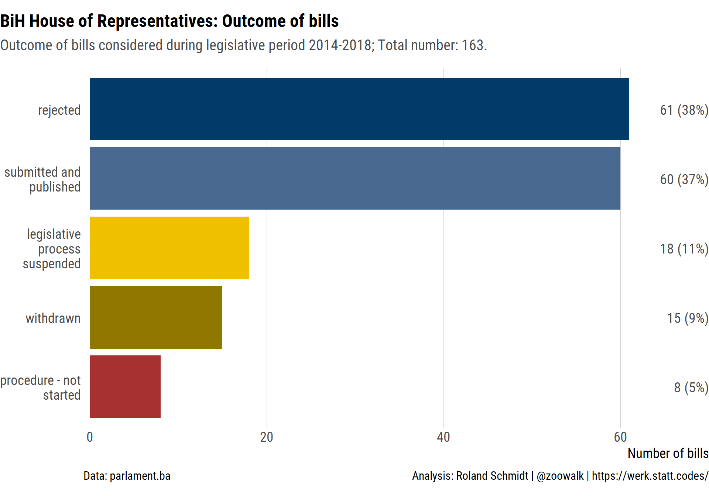
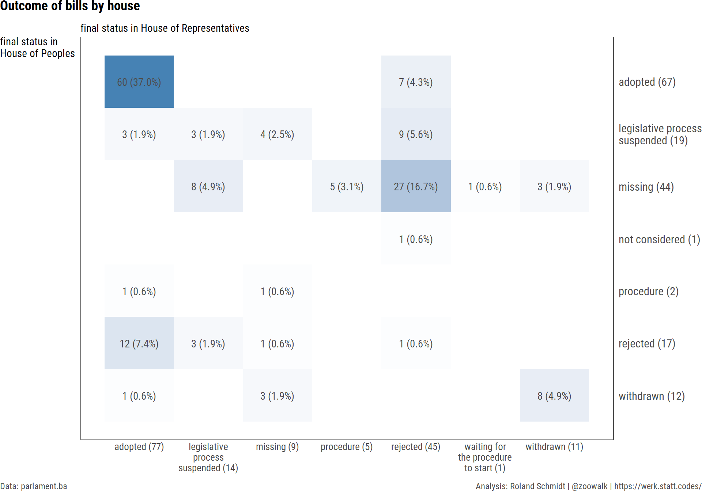

CONTEXT
A while ago I noticed that the website of Bosnias parliament also provides the voting records for each separate vote taken in both houses. These records also include the voting behavior for each individual MP. Here an example of one of these voting records:

While the dominant role of the ethnic cleavage in Bosnian politics has been a constant theme and continuously emphasized for the last 25 years (to an extent which frequently blanks out other salient issues), I hadnt seen any empirical record on MPs individual voting behavior which could corroborate the cleavages prevalence in the legislative arena (one insightful exception is Birgit Bahti-Kunraths 2011 paper).
This post digs into the now available records for the 2014-2018 parliament and seeks to shed some light on the legislative process. The first part presents the results, the second highlights the most relevant steps in R to produce them. The entire code for the analysis is again available on my github account. Since the post got a bit longer than initially expected, this one will mainly focus on the lower chamber (House of Representatives). A later post will take up the upper chamber in detail (House of Peoples).
As always, if you see any glaring error, feel free to let me know (best via twitter DM). If you think the blog is interesting and feel like quoting it, please refer to it as Roland Schmidt, Bosnia: Voting behavior of MPs in the House of Representatives (2014-2018), https://werk.statt.codes/post/bih-voting-behavior-of-mps-in-house-of-representatives/, 8 February 2020.
For those working in R, the blog post might be particularly interesting when it comes to retrieving the actual data. As so often with empirical research the challenges has been less the analysis of the data itself, but liberating it from the format within which it is provided. In this case, the voting records for both the House of Peoples and the House of Representative are provided in pdfs, such as the one above or this one or this one. Hence, theres been some hefty OCR-ing involved thanks to the powerful pdf_tools package by Jeroen Ooms.
RESULTS
Number of bills considered and outcome
Overall, during the 2014 to 2018 parliament session 163 bills were considered in both houses. Out of this total, only 37 % were eventually passed and published to become law. 38 % of all bills were rejected in at least one of both houses.1

by house
Looking separately at each of the two houses provides a more detailed picture. In the lower chamber, the House of Representatives, 153 bills were considered in total out of which a bit more than 50 % were approved. In the upper chamber, the House of Peoples, which comprises five delegates of each constituent people (Bosniak, Croats, Serbs), 56.7 % of all considered bills were passed.

intersection of houses
If we intersect the developments for each law in each chamber, we get a clearer picture where bills were actually rejected/not passed. The table/heatmap below intends to show this. The x-axis shows a bills outcome in the House of Representative, the y-axis the outcome of the same bill in the House of Peoples (if a bill was considered only in one chamber, the respective status in the other chamber is missing).
Out of the 67 bills adopted in the House of Peoples and 77 in the House of Representatives, 60 were actually considered in both chambers and eventually passed. With 37 % of all bills its the largest category in the table. The second largest category comprises 27 bills (16.7 % of all bills) which were rejected in the House of Representatives and never made it to the House of Peoples. The third largest category contains 12 bills (7.4 % of all bills) which were adopted in the lower house but rejected in the upper chamber.

Legislative votes over time
How was the legislative activity distributed over time? The graph below provides the number of ballots in both houses per month. Note that the graph also includes votes which were held in both houses outside of the 2014-2018 legislative session. The reason is that bills considered in 2014-2018 also include bills which were initiated prior to 2014 and hence also ballots which were taken outside of the 2014-2018 legislative session.
If we focus only on the 2014-2018 session, it is rather clear that both chambers were most active in the first half of 2016 and the end of 2017. I am not sure exactly what caused this bout of activity, but its quite distinct if contrasted e.g.with 2015 or the early parts of 2017.

Voting behavior per MP
So far the analysis presented was limited to bills as the unit of analysis. Now lets dig a bit deeper and see how individual MPs voted. The graph below provides the results for every voting decision (including abstentions, no vote, not present) of every MP, by party affiliation, during the 2014-2018 legislative period. Since a bill undergoes several readings before it can become a law/is forwarded to the other chamber, there are more votes than bills. Overall, MPs in the House of Representatives were asked to cast their votes 451 times in total. These votes pertain to 148 laws (out of the initial 162 laws above eleven have not entailed any vote by the end of the 2014-2018 legislative period and three entailed ballots prior to the 2014 elections).
In the graphs below each vertical line (small rectangle) represents an MPs vote in one ballot (hence the x axis is 451 small rectangles long; ordered chronologically). According to the voting records, there are five possible options: an MP can cast 1) a yes (za), or 2) an against or no vote (protiv); 3) be not present during the ballot (nije prisuta); 4) abstained (suzdran), or 5) do not cast a vote (nije glasao). Note that the Rules of Procedure for the House of Representatives (as for the House of Peoples) stipulate that in case a representative does not vote in favour, against or abstained, but he/she is present at the session during the voting, he/she is considered abstained (see here).
Unfortunately, I had to remove names diacritics which added a major source of complication (at least for me).

Even without going into numeric details, I find the graph rather informative. While with most parties/MPs the yes votes (green) dominate, the SNSD is a glaring aberration. Milorad Dodiks SNSD clearly stands out as the party which says no (to paraphrase Ian Paisley) or simply doesnt show up when asked to cast a vote.
Note that the representatives Vjekoslav Bevanda and Halid Genjac were only briefly members of the House of Representatives. If not mistaken, Bevanda subsequently became Chairperson of the Council of Ministers. From the graph it appears that his place was taken by Predrag Koul. Similarly, SDAs Genjac was only for the early sessions member of the HoR. His place seems to have been taken over by Hazim Rani.
As a general caveat, note that I took MPs party affiliation as stated on the parliaments website which may omit instances in which MPs have changed their party affiliation in the course of the 2014-2018 legislative period. I am not aware that this was actually the case, but if so, please let me know.2
MP ranking per vote category
To get a more detailed view on MPs individual voting behavior, the next graph presents each MPs voting behavior per voting category as % of an MPs number of total voting decisions (incl.abstentions etc). In other words, the graph reveals how often an MP votes for e.g.yes, no etc. as % of all instances in which she was tasked to cast a vote. Party affiliation is presented next to each MPs name. Furthermore, to highlight discrepancies between representatives originating (in terms of mandate) from the Federation and the RS, the bars are colored differently. The variation is rather remarkable, particularly with regard to MPs no votes and absence (not present and abstentions).
I leave it up to the reader to go through each category, but just to highlight one case: According to the published voting records, Nikola piri, one of SNSDs main figure heads (and previously Chairperson of the Council of Ministers), was absent in 44.8 % of all ballots. Even with the benefit of doubt and acknowledging that an MPs work entails more than participating in ballots (work in committees etc), this is a rather, lets say, remarkably low rate of presence. His party colleagues Markovic and Milovanovic participated only a few times more often. In those instances in which they were present, they voted predominantly with no. Constructive engagement in the legislative process looks different, at least to me.

Party differences
As a next step, lets group MPs voting behavior by party and the respective (ascribed or self-declared) ethnic affiliation. Admittedly, the latter is not without problems, but I guess the categorization below reflects some kind of middle-ground (SDP could probably be moved to the Bosniak category, but well). The table provides the total number of votes casted by all representatives of each party and their respective share in each vote category. Note the high percentage rate of SDA in the yes category and SNSDs ratio in the no or not present category.
| ethnicity | party | number MPs | votes total | yes | no | not present | abstained | no vote |
|---|---|---|---|---|---|---|---|---|
| Bosniak | A-SDA | 1 | 451 | 58.54% | 15.74% | 7.10% | 15.52% | 3.10% |
| Bosniak | BPS | 1 | 451 | 44.1% | 18.2% | 11.1% | 20.0% | 6.7% |
| Bosniak | SBB | 4 | 1804 | 68.3% | 18.1% | 3.9% | 7.7% | 1.9% |
| Bosniak | SDA | 6 | 2706 | 71.18% | 18.11% | 6.91% | 2.22% | 1.59% |
| Croat | HDZ 1990 | 1 | 451 | 57.0% | 20.0% | 11.8% | 10.4% | 0.9% |
| Croat | HDZ Coalition | 4 | 1804 | 58.65% | 24.56% | 7.04% | 7.93% | 1.83% |
| Serb | DNS | 2 | 902 | 37.80% | 31.82% | 12.20% | 13.08% | 5.10% |
| Serb | PDP-NDP | 1 | 451 | 43.5% | 37.7% | 12.0% | 5.3% | 1.6% |
| Serb | SDS | 3 | 1353 | 47.5% | 34.3% | 8.7% | 6.0% | 3.5% |
| Serb | SNSD | 6 | 2706 | 15.6% | 42.1% | 32.0% | 6.4% | 4.0% |
| civic | DF | 5 | 2255 | 41.4% | 23.6% | 15.6% | 16.6% | 2.8% |
| civic | SDP BiH | 3 | 1353 | 45.8% | 18.6% | 12.2% | 14.8% | 8.6% |
| independent | independent | 5 | 2255 | 58.23% | 21.33% | 10.73% | 5.28% | 4.43% |
Below the same results, put presented as a graph.
Conclusion
Overall, the results are pretty much in line with what I expected, but the details nevertheless are quite intriguing. Delegates of SNSD are either absent or vote with no in the House of Representatives. There is a clear gulf between representatives from the Federation and the RS when it comes to no votes.
Since this has been already rather lengthy (not to speak of the actual coding), I leave it here and will continue the analysis with a new post in a bit. If you spotted anything peculiar or have any other constructive comment etc. feel free to let me know and I will try to follow up on it. In any case, thanks for reading.
STEPS IN R
Below the most important steps to obtain the results from above. The entire code for the (and more) is available at my github here.
As already mentioned above, getting the actual data from the voting records/pdfs has been the main challenge. Essentially, there were three steps required:
- First, get the links to each law
- Second, from there extract
- data on the status and details of the law in each chamber
- the links to each voting record(s)
- use this links to download each voting results file
- Third, get
- the raw text from the voting result files and
- extract data of interest (e.g.MP and vote)
- Finally, start with the actual analysis ;-)
Get the data
Getting the links to each law
The parliaments website provides a list with all bills considered during the 2014-2018 session. See here. Overall, there are 17 pages which contain short summaries on each law plus the links a site with more details on each law. Iterating over these 17 pages and extracting the pertaining links provides us with a dataframe containing the links to the 162 (proposed) laws which were considered in at least one of both houses. To do this, the purrr and rvest package are our tools of choice. The possibly option provides us with a NULL response should the link no yield any info (instead of causing an error).
library(tidyverse)
library(glue)
library(rvest)
#define pages to iterate over
seq_page<- seq(1:17)
seq_page_links <- glue("http://parlament.ba/oLaw/GetOLawsByStatus?page={seq_page}&MandateId=4&Status=-1") %>%
enframe(name=NULL)
#define function to extract short info + link of each law
pb <- progress_estimated(nrow(seq_page_links))
fn_scrap <- function(x){
pb$tick()$print()
x %>%
read_html() %>%
html_nodes("a") %>%
html_attr(.,"href") %>%
enframe(name=NULL) %>%
filter(str_detect(value, "OLawDetails")) %>%
mutate(links_to_law_details=paste0("http://parlament.ba", value))
}
#apply function to each of the 17 pages
df_links_to_laws <- seq_page_links$value %>%
set_names() %>%
map_dfr(., possibly(fn_scrap, otherwise=NULL), .id="seq_page_links")
With these links we are now able to scrap the status and details of each single (proposed) law (see e.g.here). In short, the code produces the same result as if we were clicking through our initial list from above and copy-paste the information from each laws details page. The rvests functions were again applied to each link with the purrrs map_dfr.
pb <- dplyr::progress_estimated(nrow(df_links_to_laws)) #define length for progress bar
#scrap law details
fn_scrap_law_details <- function(x) {
pb$tick()$print()
df.contents <- x %>%
read_html() %>%
html_nodes("td") %>%
html_text(.,trim=T) %>%
enframe(name=NULL, value="content") %>%
slice(c(1:13))
df.names<- x %>%
read_html() %>%
html_nodes("th") %>%
html_text(.,trim=T) %>%
enframe(name=NULL, value="heading") %>%
slice(c(1:13))
bind_cols(df.names, df.contents) %>%
mutate(house=case_when(row_number()>7 ~ "DP", #House of Peoples
TRUE ~ "PS")) #House of Representatives
}
#Scrap overview of law status
fn_get_law_status <- function(x) {
x %>%
read_html() %>%
html_nodes("body > section > div.container > div > div.col-md-8 > article > div > div:nth-child(2) > table") %>%
html_table() %>%
enframe(name = NULL) %>%
map_df(., bind_rows) %>%
rename(
heading = X1,
content = X2
) %>%
mutate(heading = case_when(
lag(heading) %>% str_detect(., "Status u DNPSBiH") ~
paste("DNPSBiH -", heading),
lag(heading) %>% str_detect(., "Status u PDPSBiH") ~
paste("PDPSBiH -", heading),
TRUE ~ as.character(heading)
))
}
#apply function to each link
df_details_all_status<- df_links_to_laws$links_to_law_details %>%
set_names() %>%
future_map_dfr(., fn_get_law_status,
.progress=T,
.id="seq_page_links")
Get status of each law
As a first step, I want to get info on each laws status by the end of the 2014-2018 legislative period in each house. We get this info by applying the below scrapping function to each laws link (obtained above). Subsequently I reshape the data to a more convenient wider rectangular form (pivot_wider) and extract each field of interest with stringr and regex.
df_details_all_status_wide <- df_details_all_status %>%
mutate(content=str_trim(content, side=c("both"))) %>%
mutate(content=iconv(content, from="UTF-8", to="windows-1253")) %>% #removes diacrits; makes it easier to work with
pivot_wider(id_cols = "seq_page_links",
names_from = "heading",
values_from = "content") %>%
mutate(law_id=str_extract(seq_page_links, "[0-9]+$")) %>%
rename(doc_name ="Naziv dokumenta",
period = Saziv,
HoR_draft_law_number_date = "Broj i datum Prijedloga zakona u PDPSBiH",
HoR_tabler = `Predlaga u PDPSBiH`,
HoR_status = "Status u PDPSBiH",
HoR_order_number_session_date_agenda_item = `PDPSBiH - Red. br. i datum sjednice - taka dnevnog reda`,
HoP_draft_law_number_date= `Broj i datum Prijedloga zakona u DNPSBiH`,
HoP_tabler =`Predlaga u DNPSBiH`,
HoP_status =`Status u DNPSBiH`,
HoP_order_number_session_date_agenda_item =`DNPSBiH - Red. br. i datum sjednice - taka dnevnog reda`,
BiH_Parl_final_status=`Konani status u PSBiH`,
ended_tabler_session =`Utvren na sjednici predlagaa`) %>%
separate(col=HoR_draft_law_number_date,
into=c("HoR_draft_law_number", "HoR_draft_law_date"),
sep="od",
remove=F) %>%
separate(col=HoP_draft_law_number_date,
into=c("HoP_draft_law_number", "HoP_draft_law_date"),
sep="od",
remove=F) %>%
mutate_at(vars(contains("draft_law_date")), ~str_remove(., ".$") %>%
lubridate::dmy(.)) %>%
mutate_at(vars(ends_with("draft_law_number")), ~str_trim(., side=c("both")) %>%
str_remove(., ",$") %>% str_replace(., ",","-")) %>%
mutate(HoP_order_number_session_date_agenda_item=ifelse(HoP_order_number_session_date_agenda_item=="",
NA, HoP_order_number_session_date_agenda_item)) %>%
mutate(HoP_order_number=stringr::str_extract_all(HoP_order_number_session_date_agenda_item,
"^[0-9]+") %>% as.numeric) %>%
mutate(HoP_session_date=stringr::str_extract_all(HoP_order_number_session_date_agenda_item,
"[:digit:]+\\.[:digit:]+\\.[:digit:]{4}") %>%
map_chr(., paste, collapse="; ")) %>%
mutate(HoP_agenda_item=stringr::str_extract(HoP_order_number_session_date_agenda_item,
"Ad\\. [:digit:]+")) %>%
# select(-HoP_order_number_session_date_agenda_item) %>%
mutate(HoR_order_number_session_date_agenda_item=ifelse(HoR_order_number_session_date_agenda_item=="",
NA, HoR_order_number_session_date_agenda_item)) %>%
mutate(HoR_order_number=stringr::str_extract_all(HoR_order_number_session_date_agenda_item,
"^[0-9]+") %>% as.numeric) %>%
mutate(HoR_session_date=stringr::str_extract_all(HoR_order_number_session_date_agenda_item,
"[:digit:]+\\.[:digit:]+\\.[:digit:]{4}") %>%
map_chr(., paste, collapse="; ")) %>%
mutate(HoR_agenda_item=stringr::str_extract(HoR_order_number_session_date_agenda_item,
"Ad\\. [:digit:]+")) %>%
# select(-HoR_order_number_session_date_agenda_item) %>%
mutate_at(vars(contains("status")),
.funs=list(~case_when(
.=="Usvojen"~"adopted",
.=="Procedura - nije preuzet" ~ "procedure - not started", #?
.=="Procedura" ~ "procedure",
str_detect(., regex("Povucen")) ~ "withdrawn", #Povucen encoding issue
.=="Donesen i objavljen" ~ "submitted and published",
.=="Odbijen" ~ "rejected",
.=="Obustavljen zakonodavni postupak" ~ "legislative process suspended",
str_detect(., "Ceka na pokretanje procedure") ~ "waiting for the procedure to start", #encoding issue
.=="Nije razmatran" ~ "not considered",
is.na(.) ~ "missing",
TRUE ~ .)))
Finally, to make things more accessible to clowns like me who havent managed to properly learn BCS after too many years, I translate each laws title with google translate (checkout the vignette of the powerful googleLanguageR package and to how get the necessary authorization for the google translate engine).
df_details_all_status_wide<- df_details_all_status_wide %>%
mutate(doc_name_eng=googleLanguageR::gl_translate(doc_name, target="en", format=c("text"),
source="bs")$translatedText) %>%
select(doc_name, doc_name_eng, everything())
So this all yields us with a table containing plenty of information on each bill, including the eventual status in each house, the date of the bills submission and the name of those who tabled the bill (in each house). Not too bad me thinks.
| doc_name | doc_name_eng | seq_page_links | period | HoR_draft_law_number_date | HoR_draft_law_number | HoR_draft_law_date | HoR_tabler | HoR_status | HoR_order_number_session_date_agenda_item | BiH_Parl_final_status | HoP_draft_law_number_date | HoP_draft_law_number | HoP_draft_law_date | HoP_tabler | HoP_status | HoP_order_number_session_date_agenda_item | ended_tabler_session | law_id | HoP_order_number | HoP_session_date | HoP_agenda_item | HoR_order_number | HoR_session_date | HoR_agenda_item |
|---|---|---|---|---|---|---|---|---|---|---|---|---|---|---|---|---|---|---|---|---|---|---|---|---|
| Prijedlog zakona o izmjenama i dopunama Zakona o akcizama u Bosni i Hercegovini | Proposal of Law on Amendments to the Law on Excise Duties in Bosnia and Herzegovina | http://parlament.ba/olaw/OLawDetails?lawId=61794 |
|
01-02-1-1453/18, od 18.6.2018. | 01-02-1-1453/18 | 2018-06-18 | Mladen Bosic, Aleksandra Pandurevic, Nenad Lalic, Momcilo Novakovic | rejected | 63., 5.7.2018., 26.7.2018. Ad. 2. | rejected | NA | NA | NA | NA | missing | NA | NA | 61794 | NA | NA | NA | 63 | 5.7.2018; 26.7.2018 | Ad. 2 |
| Prijedlog zakona o izmjenama Zakona o Javnom radiotelevizijskom servisu Bosne i Hercegovine | Proposal of Law on Amendments to the Law on Public Broadcasting Service of Bosnia and Herzegovina | http://parlament.ba/olaw/OLawDetails?lawId=61566 |
|
01-02-1-1292/18, od 28.5.2018. | 01-02-1-1292/18 | 2018-05-28 | Mladen Bosic, Aleksandra Pandurevic, Nenad Lalic, Momcilo Novakovic | procedure | 66., 3.9.2018. Ad. 6. | procedure - not started | NA | NA | NA | NA | missing | NA | NA | 61566 | NA | NA | NA | 66 | 3.9.2018 | Ad. 6 |
| Prijedlog zakona o izmjenama Zakona o Javnom radiotelevizijskom sistemu Bosne i Hercegovine | Proposal of Law on Amendments to the Law on Public Broadcasting System of Bosnia and Herzegovina | http://parlament.ba/olaw/OLawDetails?lawId=61565 |
|
01-02-1-1291/18, od 28.5.2018. | 01-02-1-1291/18 | 2018-05-28 | Mladen Bosic, Aleksandra Pandurevic, Nenad Lalic, Momcilo Novakovic | procedure | 66., 3.9.2018. Ad. 5. | procedure - not started | NA | NA | NA | NA | missing | NA | NA | 61565 | NA | NA | NA | 66 | 3.9.2018 | Ad. 5 |
| Prijedlog zakona o izmjeni i dopuni Zakona o zastavi Bosne i Hercegovine | Proposal of the Law on Amendment to the Law on the Flag of Bosnia and Herzegovina | http://parlament.ba/olaw/OLawDetails?lawId=61443 |
|
01-02-1-1206/18, od 16.5.2018. | 01-02-1-1206/18 | 2018-05-16 | Sasa Magazinovic | procedure | NA | procedure - not started | NA | NA | NA | NA | missing | NA | NA | 61443 | NA | NA | NA | NA | NA | NA |
| Prijedlog zakona o izmjeni Zakona o akcizama u Bosni i Hercegovini | Proposal of Law on Amendments to the Law on Excise Duties in Bosnia and Herzegovina | http://parlament.ba/olaw/OLawDetails?lawId=61425 |
|
01-02-1-1192/18, od 15.5.2018. | 01-02-1-1192/18 | 2018-05-15 | Senad Sepic, Salko Sokolovic, Sadik Ahmetovic | procedure | 66., 3.9.2018. Ad. 4. | procedure - not started | NA | NA | NA | NA | missing | NA | NA | 61425 | NA | NA | NA | 66 | 3.9.2018 | Ad. 4 |
| Prijedlog zakona o dopuni Zakona o placama i naknadama u institucijama Bosne i Hercegovine | Proposal of Law on Amendments to the Law on Salaries and Remuneration in the Institutions of Bosnia and Herzegovina | http://parlament.ba/olaw/OLawDetails?lawId=61422 |
|
01-02-1-1189/18, od 15.5.2018. | 01-02-1-1189/18 | 2018-05-15 | Maja Gasal - Vrazalica | procedure | 68., 3.9.2018. Ad. 3. | procedure - not started | NA | NA | NA | NA | missing | NA | NA | 61422 | NA | NA | NA | 68 | 3.9.2018 | Ad. 3 |
| Prijedlog zakona o dopunama Zakona o zastavi Bosne i Hercegovine | Proposal of Law on Amendments to the Law on Flag of Bosnia and Herzegovina | http://parlament.ba/olaw/OLawDetails?lawId=61404 |
|
01-02-1-1177/18, od 14.5.2018. | 01-02-1-1177/18 | 2018-05-14 | Sasa Magazinovic | withdrawn | NA | withdrawn | NA | NA | NA | NA | missing | NA | NA | 61404 | NA | NA | NA | NA | NA | NA |
| Prijedlog zakona o izmjenama i dopunama Zakona o krivicnom postupku Bosne i Hercegovine | Proposal of Law on Amendments to the Criminal Procedure Code of Bosnia and Herzegovina | http://parlament.ba/olaw/OLawDetails?lawId=61221 |
|
01-02-1-1028/18, od 12.9.2018. | 01-02-1-1028/18 | 2018-09-12 | Dom naroda | adopted | 11., 17.9.2018. Ad. 1. | submitted and published | 02-02-1-1028/18, od 20.4.2018. | 02-02-1-1028/18 | 2018-04-20 | Halid Genjac | adopted | 42., 11.9.2018. Ad. 3. | NA | 61221 | 42 | 11.9.2018 | Ad. 3 | 11 | 17.9.2018 | Ad. 1 |
| Prijedlog zakona o izmjenama Zakona o krivicnom postupku Bosne i Hercegovine | Proposal of Law on Amendments to the Criminal Procedure Code of Bosnia and Herzegovina | http://parlament.ba/olaw/OLawDetails?lawId=60882 |
|
NA | NA | NA | NA | missing | NA | withdrawn | 02-02-1-794/18, od 21.3.2018. | 02-02-1-794/18 | 2018-03-21 | Ljilja Zovko, Zdenka Dzambas, Barisa Colak, Mario Karamatic | withdrawn | NA | NA | 60882 | NA | NA | NA | NA | NA | NA |
| Prijedlog zakona o izmjenama Zakona o krivicnom postupku Bosne i Hercegovine | Proposal of Law on Amendments to the Criminal Procedure Code of Bosnia and Herzegovina | http://parlament.ba/olaw/OLawDetails?lawId=60881 |
|
01-02-1-791/18, od 21.3.2018. | 01-02-1-791/18 | 2018-03-21 | Nikola Lovrinovic | rejected | 61., 17.5.2018. Ad. 20. | rejected | NA | NA | NA | NA | missing | NA | NA | 60881 | NA | NA | NA | 61 | 17.5.2018 | Ad. 20 |
| Prijedlog zakona o dopunama Okvirnog zakona o visokom obrazovanju u Bosni i Hercegovini | Proposal for a Law on Amendments to the Framework Law on Higher Education in Bosnia and Herzegovina | http://parlament.ba/olaw/OLawDetails?lawId=60835 |
|
01-02-1-762/18, od 16.3.2018. | 01-02-1-762/18 | 2018-03-16 | Mirsad Donlagic | rejected | 62., 30.5.2018., 20.6.2018., 5.7.2018. Ad. 6. | rejected | NA | NA | NA | NA | missing | NA | NA | 60835 | NA | NA | NA | 62 | 30.5.2018; 20.6.2018; 5.7.2018 | Ad. 6 |
| Prijedlog zakona o izmjenama i dopuni Zakona o krivicnom postupku Bosne i Hercegovine | Proposal of Law on Amendments to the Criminal Procedure Code of Bosnia and Herzegovina | http://parlament.ba/olaw/OLawDetails?lawId=60703 |
|
01-02-1-668/18, od 5.3.2018. | 01-02-1-668/18 | 2018-03-05 | Amir Fazlic | adopted | 60., 18.4.2018. Ad. 3. | rejected | 02-02-1-668/18, od 10.7.2018. | 02-02-1-668/18 | 2018-07-10 | Predstavnicki dom | rejected | 42., 11.9.2018. Ad. 4. | NA | 60703 | 42 | 11.9.2018 | Ad. 4 | 60 | 18.4.2018 | Ad. 3 |
| Prijedlog zakona o dopunama Zakona o sportu u Bosni i Hercegovini | Proposal of Law on Amendments to the Law on Sport in Bosnia and Herzegovina | http://parlament.ba/olaw/OLawDetails?lawId=60675 |
|
01-02-1-647/18, od 2.3.2018. | 01-02-1-647/18 | 2018-03-02 | Mirsad Donlagic | legislative process suspended | 60., 18.4.2018. Ad. 7. | legislative process suspended | NA | NA | NA | NA | missing | NA | NA | 60675 | NA | NA | NA | 60 | 18.4.2018 | Ad. 7 |
| Prijedlog zakona o izmjenama i dopunama Izbornog zakona Bosne i Hercegovine | Proposal of the Law on Amendments to the Election Law of Bosnia and Herzegovina | http://parlament.ba/olaw/OLawDetails?lawId=60646 |
|
01-02-1-629/18, od 28.2.2018. | 01-02-1-629/18 | 2018-02-28 | Denis Becirovic, Sasa Magazinovic, Mirsad Mesic, Damir Becirovic, Damir Arnaut, Mirsad Donlagic, Fehim Skaljic | adopted | 58., 7.3.2018. Ad. 3. | rejected | 02-02-1-629/18, od 12.3.2018. | 02-02-1-629/18 | 2018-03-12 | Predstavnicki dom | rejected | 40., 5.6.2018. Ad. 7. | NA | 60646 | 40 | 5.6.2018 | Ad. 7 | 58 | 7.3.2018 | Ad. 3 |
| Prijedlog zakona o dopunama Zakona o prekrsajima | Proposal for a Law on Amendments to the Misdemeanors Act | http://parlament.ba/olaw/OLawDetails?lawId=60513 |
|
01,02-02-1-531/18, od 19.2.2018. | 01-02-02-1-531/18 | 2018-02-19 | Vijece ministara BiH | rejected | 60., 18.4.2018. Ad. 5. | rejected | 01,02-02-1-531/18, od 19.2.2018. | 01-02-02-1-531/18 | 2018-02-19 | Vijece ministara BiH | legislative process suspended | NA | 130.. sjednica, odrzana 18.1.2018. | 60513 | NA | NA | NA | 60 | 18.4.2018 | Ad. 5 |
| Prijedlog zakona o izmjenama Izbornog zakona Bosne i Hercegovine | Proposal of Law on Amendments to the Election Law of Bosnia and Herzegovina | http://parlament.ba/olaw/OLawDetails?lawId=60484 |
|
01-02-1-507/18, od 15.2.2018. | 01-02-1-507/18 | 2018-02-15 | Denis Becirovic, Sasa Magazinovic, Mirsad Mesic | rejected | 58., 7.3.2018. Ad. 9. | rejected | NA | NA | NA | NA | missing | NA | NA | 60484 | NA | NA | NA | 58 | 7.3.2018 | Ad. 9 |
| Prijedlog zakona o dopuni Krivicnog zakona Bosne i Hercegovine | Proposal of Law on Amendment of the Criminal Code of Bosnia and Herzegovina | http://parlament.ba/olaw/OLawDetails?lawId=60468 |
|
01-02-1-494/18, od 14.2.2018. | 01-02-1-494/18 | 2018-02-14 | Sasa Magazinovic | rejected | 58., 7.3.2018. Ad. 8. | rejected | NA | NA | NA | NA | missing | NA | NA | 60468 | NA | NA | NA | 58 | 7.3.2018 | Ad. 8 |
| Prijedlog zakona o izmjenama i dopunama Zakona o sluzbi u Oruzanim snagama Bosne i Hercegovine | Proposal of Law on Amendments to the Law on Service in the Armed Forces of Bosnia and Herzegovina | http://parlament.ba/olaw/OLawDetails?lawId=60444 |
|
01,02-02-1-476/18, od 13.2.2018. | 01-02-02-1-476/18 | 2018-02-13 | Vijece ministara BiH | adopted | 61., 17.5.2018. Ad. 6. | submitted and published | 01,02-02-1-476/18, od 13.2.2018. | 01-02-02-1-476/18 | 2018-02-13 | Vijece ministara BiH | adopted | 40., 5.6.2018. Ad. 3. |
|
60444 | 40 | 5.6.2018 | Ad. 3 | 61 | 17.5.2018 | Ad. 6 |
| Prijedlog zakona o dopuni Zakona o polaganju pravosudnog ispita u Bosni i Hercegovini | Proposal of Law on Amendments to the Law on Bar Examination in Bosnia and Herzegovina | http://parlament.ba/olaw/OLawDetails?lawId=59734 |
|
01-02-1-2950/17, od 22.12.2017. | 01-02-1-2950/17 | 2017-12-22 | Senad Sepic, Salko Sokolovic, Sadik Ahmetovic | withdrawn | NA | withdrawn | NA | NA | NA | NA | missing | NA | NA | 59734 | NA | NA | NA | NA | NA | NA |
| Prijedlog zakona o izmjeni Zakona o drzavnoj sluzbi u institucijama Bosne i Hercegovine | Proposal of Law on Amendments to the Law on Civil Service in the Institutions of Bosnia and Herzegovina | http://parlament.ba/olaw/OLawDetails?lawId=59655 |
|
01-02-1-2884/17, od 14.12.2017. | 01-02-1-2884/17 | 2017-12-14 | Senad Sepic, Salko Sokolovic, Sadik Ahmetovic | rejected | 57., 20.2.2018. Ad. 9. | rejected | NA | NA | NA | NA | missing | NA | NA | 59655 | NA | NA | NA | 57 | 20.2.2018 | Ad. 9 |
| Prijedlog zakona o Budzetu institucija Bosne i Hercegovine i medunarodnih obaveza Bosne i Hercegovine za 2018. godinu | Proposal of the Law on the Budget of the Institutions of Bosnia and Herzegovina and the International Obligations of Bosnia and Herzegovina for 2018 | http://parlament.ba/olaw/OLawDetails?lawId=59652 |
|
01,02-02-1-2882/17, od 14.12.2017. | 01-02-02-1-2882/17 | 2017-12-14 | Predsjednistvo BiH | adopted | 55., 21.12.2017., 17.1.2018., 31.1.2018. Ad. 3. | submitted and published | 01,02-02-1-2882/17, od 14.12.2017. | 01-02-02-1-2882/17 | 2017-12-14 | Predsjednistvo BiH | adopted | 6., 25.1.2018. Ad. 6. | NA | 59652 | 6 | 25.1.2018 | Ad. 6 | 55 | 21.12.2017; 17.1.2018; 31.1.2018 | Ad. 3 |
| Prijedlog zakona o izmjeni Zakona o sistemu indirektnog oporezivanja u Bosni i Hercegovini | Proposal of Law on Amendments to the Law on the Indirect Taxation System in Bosnia and Herzegovina | http://parlament.ba/olaw/OLawDetails?lawId=59548 |
|
01,02-02-1-2810/17, od 11.12.2017. | 01-02-02-1-2810/17 | 2017-12-11 | Dom naroda | adopted | 54., 14.12.2017., 15.12.2017. Ad. 5. | submitted and published | 01,02-02-1-2810/17, od 5.12.2017. | 01-02-02-1-2810/17 | 2017-12-05 | Vijece ministara BiH | adopted | 34., 7.12.2017. Ad. 7. | NA | 59548 | 34 | 7.12.2017 | Ad. 7 | 54 | 14.12.2017; 15.12.2017 | Ad. 5 |
| Prijedlog zakona o izmjenama i dopuni Zakona o uplatama na Jedinstveni racun i raspodjeli prihoda | Proposal for a Law on Amendments to the Law on Payments to the Single Account and the Allocation of Revenue | http://parlament.ba/olaw/OLawDetails?lawId=59547 |
|
01,02-02-1-2809/17, od 11.12.2017. | 01-02-02-1-2809/17 | 2017-12-11 | Dom naroda | adopted | 54., 14.12.2017., 15.12.2017. Ad. 4. | submitted and published | 01,02-02-1-2809/17, od 5.12.2017. | 01-02-02-1-2809/17 | 2017-12-05 | Vijece ministara BiH | adopted | 34., 7.12.2017. Ad. 6. | NA | 59547 | 34 | 7.12.2017 | Ad. 6 | 54 | 14.12.2017; 15.12.2017 | Ad. 4 |
| Prijedlog zakona o izmjenama i dopunama Zakona o akcizama u Bosni i Hercegovini | Proposal of Law on Amendments to the Law on Excise Duties in Bosnia and Herzegovina | http://parlament.ba/olaw/OLawDetails?lawId=59546 |
|
01,02-02-1-2808/17, od 11.12.2017. | 01-02-02-1-2808/17 | 2017-12-11 | Dom naroda | adopted | 54., 14.12.2017., 15.12.2017. Ad. 3. | submitted and published | 01,02-02-1-2808/17, od 5.12.2017. | 01-02-02-1-2808/17 | 2017-12-05 | Vijece ministara BiH | adopted | 34., 7.12.2017. Ad. 5. |
|
59546 | 34 | 7.12.2017 | Ad. 5 | 54 | 14.12.2017; 15.12.2017 | Ad. 3 |
| Prijedlog zakona o dopunama Zakona o komunikacijama | Proposal for a Law on Amendments to the Communications Act | http://parlament.ba/olaw/OLawDetails?lawId=59478 |
|
01,02-02-1-2759/17, od 24.11.2017. | 01-02-02-1-2759/17 | 2017-11-24 | Vijece ministara BiH | adopted | 57., 20.2.2018. Ad. 7. | legislative process suspended | 01,02-02-1-2759/17, od 24.11.2017. | 01-02-02-1-2759/17 | 2017-11-24 | Vijece ministara BiH | legislative process suspended | 37., 21.3.2018., 17.4.2018. Ad. 7. |
|
59478 | 37 | 21.3.2018; 17.4.2018 | Ad. 7 | 57 | 20.2.2018 | Ad. 7 |
| Prijedlog zakona o osiguranju depozita u bankama Bosne i Hercegovine | Proposal of Law on Deposit Insurance in Banks of Bosnia and Herzegovina | http://parlament.ba/olaw/OLawDetails?lawId=59422 |
|
01,02-02-1-2713/17, od 17.11.2017. | 01-02-02-1-2713/17 | 2017-11-17 | Vijece ministara BiH | withdrawn | NA | withdrawn | 01,02-02-1-2713/17, od 17.11.2017. | 01-02-02-1-2713/17 | 2017-11-17 | Vijece ministara BiH | withdrawn | NA |
|
59422 | NA | NA | NA | NA | NA | NA |
| Prijedlog zakona o izmjenama i dopunama Zakona o zastiti lica koja prijavljuju korupciju u institucijama Bosne i Hercegovine | Proposal of Law on Amendments to the Law on Protection of Persons Reporting Corruption in the Institutions of Bosnia and Herzegovina | http://parlament.ba/olaw/OLawDetails?lawId=59384 |
|
01-02-1-2687/17, od 15.11.2017. | 01-02-1-2687/17 | 2017-11-15 | Borjana Kristo, Aleksandra Pandurevic, Mirsad Isakovic | rejected | 58., 7.3.2018. Ad. 7. | rejected | 02-02-1-2687/17, od 22.11.2017. | 02-02-1-2687/17 | 2017-11-22 | Darko Babalj, Halid Genjac, Barisa Colak | rejected | 40., 5.6.2018. Ad. 9. | NA | 59384 | 40 | 5.6.2018 | Ad. 9 | 58 | 7.3.2018 | Ad. 7 |
| Prijedlog zakona o izmjenama Izbornog zakona Bosne i Hercegovine | Proposal of Law on Amendments to the Election Law of Bosnia and Herzegovina | http://parlament.ba/olaw/OLawDetails?lawId=59383 |
|
01-02-1-2686/17, od 15.11.2017. | 01-02-1-2686/17 | 2017-11-15 | Sefik Dzaferovic, Amir Fazlic, Semsudin Mehmedovic, Asim Sarajlic, Nermina Kapetanovic, Safer Demirovic, Hazim Rancic | rejected | 55., 21.12.2017., 17.1.2018., 31.1.2018. Ad. 8. | rejected | NA | NA | NA | NA | missing | NA | NA | 59383 | NA | NA | NA | 55 | 21.12.2017; 17.1.2018; 31.1.2018 | Ad. 8 |
| Prijedlog zakona o izmjeni i dopunama Zakona o ombudsmenu za ljudska prava Bosne i Hercegovine | Proposal of Law on Amendments to the Law on Human Rights Ombudsman of Bosnia and Herzegovina | http://parlament.ba/olaw/OLawDetails?lawId=59185 |
|
01,02-02-1-2539/17, od 26.10.2017. | 01-02-02-1-2539/17 | 2017-10-26 | Vijece ministara BiH | withdrawn | NA | withdrawn | 01,02-02-1-2539/17, od 26.10.2017. | 01-02-02-1-2539/17 | 2017-10-26 | Vijece ministara BiH | withdrawn | NA |
|
59185 | NA | NA | NA | NA | NA | NA |
| Prijedlog zakona o dopunama Zakona o sportu u Bosni i Hercegovini | Proposal of Law on Amendments to the Law on Sport in Bosnia and Herzegovina | http://parlament.ba/olaw/OLawDetails?lawId=59175 |
|
01-02-1-2529/17, od 25.10.2017. | 01-02-1-2529/17 | 2017-10-25 | Mirsad Donlagic | rejected | 55., 21.12.2017., 17.1.2018., 31.1.2018. Ad. 6. | rejected | NA | NA | NA | NA | missing | NA | NA | 59175 | NA | NA | NA | 55 | 21.12.2017; 17.1.2018; 31.1.2018 | Ad. 6 |
| Prijedlog zakona o dopunama Okvirnog zakona o visokom obrazovanju u Bosni i Hercegovini | Proposal for a Law on Amendments to the Framework Law on Higher Education in Bosnia and Herzegovina | http://parlament.ba/olaw/OLawDetails?lawId=59174 |
|
01-02-1-2528/17, od 25.10.2017. | 01-02-1-2528/17 | 2017-10-25 | Mirsad Donlagic | rejected | 55., 21.12.2017., 17.1.2018., 31.1.2018. Ad. 5. | rejected | NA | NA | NA | NA | missing | NA | NA | 59174 | NA | NA | NA | 55 | 21.12.2017; 17.1.2018; 31.1.2018 | Ad. 5 |
| Prijedlog zakona o izmjenama i dopunama Izbornog zakona Bosne i Hercegovine | Proposal of the Law on Amendments to the Election Law of Bosnia and Herzegovina | http://parlament.ba/olaw/OLawDetails?lawId=59014 |
|
01-02-1-2400/17, od 9.10.2017. | 01-02-1-2400/17 | 2017-10-09 | Senad Sepic, Salko Sokolovic, Sadik Ahmetovic | legislative process suspended | 57., 20.2.2018. Ad. 5. | legislative process suspended | NA | NA | NA | NA | missing | NA | NA | 59014 | NA | NA | NA | 57 | 20.2.2018 | Ad. 5 |
| Prijedlog zakona o izmjenama i dopunama Zakona o zrakoplovstvu Bosne i Hercegovine | Proposal of the Law on Amendments to the Law on Aviation of Bosnia and Herzegovina | http://parlament.ba/olaw/OLawDetails?lawId=59010 |
|
01-02-1-2397/17, od 9.10.2017. | 01-02-1-2397/17 | 2017-10-09 | Aleksandra Pandurevic | adopted | 56., 31.1.2018. Ad. 5. | submitted and published | 02-02-1-2397/17, od 2.2.2018. | 02-02-1-2397/17 | 2018-02-02 | Predstavnicki dom | adopted | 37., 21.3.2018., 17.4.2018. Ad. 5. | NA | 59010 | 37 | 21.3.2018; 17.4.2018 | Ad. 5 | 56 | 31.1.2018 | Ad. 5 |
| Prijedlog zakona o izmjenama Zakona o akcizama u Bosni i Hercegovini | Proposal of Law on Amendments to the Law on Excise Duties in Bosnia and Herzegovina | http://parlament.ba/olaw/OLawDetails?lawId=58915 |
|
01-02-1-2340/17, od 29.9.2017. | 01-02-1-2340/17 | 2017-09-29 | Senad Sepic, Salko Sokolovic, Sadik Ahmetovic | rejected | 55., 21.12.2017., 17.1.2018., 31.1.2018. Ad. 4. | rejected | NA | NA | NA | NA | missing | NA | NA | 58915 | NA | NA | NA | 55 | 21.12.2017; 17.1.2018; 31.1.2018 | Ad. 4 |
| Prijedlog zakona o dopunama Zakona o placama i drugim naknadama u sudskim i tuzilackim institucijama na nivou Bosne i Hercegovine | Proposal of Law on Amendments to the Law on Salaries and Other Compensation in Judicial and Prosecutorial Institutions at the Level of Bosnia and Herzegovina | http://parlament.ba/olaw/OLawDetails?lawId=58913 |
|
01,02-02-1-2338/17, od 29.9.2017. | 01-02-02-1-2338/17 | 2017-09-29 | Vijece ministara BiH | legislative process suspended | 56., 31.1.2018. Ad. 6. | legislative process suspended | 01,02-02-1-2338/17, od 29.9.2017. | 01-02-02-1-2338/17 | 2017-09-29 | Vijece ministara BiH | legislative process suspended | NA | NA | 58913 | NA | NA | NA | 56 | 31.1.2018 | Ad. 6 |
| Prijedlog zakona o izmjeni Zakona o placama i naknadama u institucijama Bosne i Hercegovine | Proposal of Law on Amendments to the Law on Salaries and Remuneration in the Institutions of Bosnia and Herzegovina | http://parlament.ba/olaw/OLawDetails?lawId=58739 |
|
01-02-1-2209/17, od 13.9.2017. | 01-02-1-2209/17 | 2017-09-13 | Borislav Bojic | adopted | 56., 31.1.2018. Ad. 4. | submitted and published | 02-02-1-2209/17, od 2.2.2018. | 02-02-1-2209/17 | 2018-02-02 | Predstavnicki dom | adopted | 37., 21.3.2018., 17.4.2018. Ad. 4. | NA | 58739 | 37 | 21.3.2018; 17.4.2018 | Ad. 4 | 56 | 31.1.2018 | Ad. 4 |
| Prijedlog zakona o dopunama Krivicnog zakona Bosne i Hercegovine | Proposal of Law on Amendments to the Criminal Code of Bosnia and Herzegovina | http://parlament.ba/olaw/OLawDetails?lawId=58301 |
|
01-02-1-1830/17, od 25.7.2017. | 01-02-1-1830/17 | 2017-07-25 | Aleksandra Pandurevic | adopted | 61., 17.5.2018. Ad. 1. | submitted and published | 02-02-1-1830/17, od 20.12.2017. | 02-02-1-1830/17 | 2017-12-20 | Predstavnicki dom | adopted | 39., 26.4.2018., 15.5.2018. Ad. 10. | NA | 58301 | 39 | 26.4.2018; 15.5.2018 | Ad. 10 | 61 | 17.5.2018 | Ad. 1 |
| Prijedlog zakona o izmjeni i dopunama Zakona o nezavisnim i nadzornim tijelima policijske strukture Bosne i Hercegovine | Proposal of the Law on Amendments to the Law on Independent and Supervisory Bodies of the Police Structure of Bosnia and Herzegovina | http://parlament.ba/olaw/OLawDetails?lawId=58217 |
|
01,02-02-1-1752/17, od 18.7.2017. | 01-02-02-1-1752/17 | 2017-07-18 | Vijece ministara BiH | legislative process suspended | NA | rejected | 01,02-02-1-1752/17, od 18.7.2017. | 01-02-02-1-1752/17 | 2017-07-18 | Vijece ministara BiH | rejected | 40., 5.6.2018. Ad. 8. |
|
58217 | 40 | 5.6.2018 | Ad. 8 | NA | NA | NA |
| Prijedlog zakona o Javnom radiotelevizijskom sistemu Bosne i Hercegovine | Proposal of Law on Public Broadcasting System of Bosnia and Herzegovina | http://parlament.ba/olaw/OLawDetails?lawId=58138 |
|
NA | NA | NA | NA | missing | NA | withdrawn | 02-02-1-1692/17, od 12.7.2017. | 02-02-1-1692/17 | 2017-07-12 | Martin Raguz, Ljilja Zovko, Zdenka Dzambas, Barisa Colak, Mario Karamatic | withdrawn | NA | NA | 58138 | NA | NA | NA | NA | NA | NA |
| Prijedlog zakona o izmjeni i dopuni Zakona o ministarstvima i drugim organima uprave Bosne i Hercegovine | Proposal of Law on Amendments to the Law on Ministries and Other Bodies of Administration of Bosnia and Herzegovina | http://parlament.ba/olaw/OLawDetails?lawId=58034 |
|
01,02-02-1-1610/17, od 4.7.2017. | 01-02-02-1-1610/17 | 2017-07-04 | Vijece ministara BiH | adopted | 52., 20.9.2017. Ad. 4. | submitted and published | 01,02-02-1-1610/17, od 4.7.2017. | 01-02-02-1-1610/17 | 2017-07-04 | Vijece ministara BiH | adopted | 33., 8.11.2017. Ad. 2. |
|
58034 | 33 | 8.11.2017 | Ad. 2 | 52 | 20.9.2017 | Ad. 4 |
| Prijedlog zakona o dopunama Krivicnog zakona Bosne i Hercegovine | Proposal of Law on Amendments to the Criminal Code of Bosnia and Herzegovina | http://parlament.ba/olaw/OLawDetails?lawId=57845 |
|
01-02-1-1503/17, od 15.6.2017. | 01-02-1-1503/17 | 2017-06-15 | Denis Becirovic | rejected | 52., 20.9.2017. Ad. 6. | rejected | NA | NA | NA | NA | missing | NA | NA | 57845 | NA | NA | NA | 52 | 20.9.2017 | Ad. 6 |
| Prijedlog zakona o izmjenama Zakona o radu u institucijama Bosne i Hercegovine | Proposal of Law on Amendments to the Law on Labor in the Institutions of Bosnia and Herzegovina | http://parlament.ba/olaw/OLawDetails?lawId=57622 |
|
01-02-1-1378/17, od 31.5.2017. | 01-02-1-1378/17 | 2017-05-31 | Maja Gasal - Vrazalica | adopted | 50., 26.7.2017. Ad. 4. | submitted and published | 02-02-1-1378/17, od 28.7.2017. | 02-02-1-1378/17 | 2017-07-28 | Predstavnicki dom | adopted | 5., 22.12.2017. Ad. 4. | NA | 57622 | 5 | 22.12.2017 | Ad. 4 | 50 | 26.7.2017 | Ad. 4 |
| Prijedlog zakona o izmjeni Zakona o drzavnoj sluzbi u institucijama Bosne i Hercegovine | Proposal of Law on Amendments to the Law on Civil Service in the Institutions of Bosnia and Herzegovina | http://parlament.ba/olaw/OLawDetails?lawId=57621 |
|
01-02-1-1377/17, od 31.5.2017. | 01-02-1-1377/17 | 2017-05-31 | Maja Gasal - Vrazalica | adopted | 51., 7.9.2017., 13.9.2017. Ad. 4. | submitted and published | 02-02-1-1377/17, od 19.9.2017. | 02-02-1-1377/17 | 2017-09-19 | Predstavnicki dom | adopted | 5., 22.12.2017. Ad. 3. | NA | 57621 | 5 | 22.12.2017 | Ad. 3 | 51 | 7.9.2017; 13.9.2017 | Ad. 4 |
| Prijedlog zakona o izmjenama Zakona o osnovama sigurnosti saobracaja na putevima u Bosni i Hercegovini | Proposal of Law on Amendments to the Law on Basics of Road Traffic Safety in Bosnia and Herzegovina | http://parlament.ba/olaw/OLawDetails?lawId=57614 |
|
01-02-1-1374/17, od 30.5.2017. | 01-02-1-1374/17 | 2017-05-30 | Momcilo Novakovic | adopted | 56., 31.1.2018. Ad. 11. | submitted and published | 02-02-1-1374/17, od 28.7.2017. | 02-02-1-1374/17 | 2017-07-28 | Predstavnicki dom | adopted | 5., 22.12.2017. Ad. 7. | NA | 57614 | 5 | 22.12.2017 | Ad. 7 | 56 | 31.1.2018 | Ad. 11 |
| Prijedlog zakona o parlamentarnom nadzoru | Bill on parliamentary scrutiny | http://parlament.ba/olaw/OLawDetails?lawId=57580 |
|
01,02-02-1-1348/17, od 26.5.2017. | 01-02-02-1-1348/17 | 2017-05-26 | Borislav Bojic, Salko Sokolovic, Predrag Kozul | adopted | 58., 7.3.2018. Ad. 10. | submitted and published | 01,02-02-1-1348/17, od 26.5.2017. | 01-02-02-1-1348/17 | 2017-05-26 | Ognjen Tadic, Safet Softic, Ljilja Zovko | adopted | 37., 21.3.2018., 17.4.2018. Ad. 10. |
|
57580 | 37 | 21.3.2018; 17.4.2018 | Ad. 10 | 58 | 7.3.2018 | Ad. 10 |
| Prijedlog zakona o izmjenama i dopunama Zakona o administrativnim taksama | Proposal for a Law on Amendments to the Law on Administrative Fees | http://parlament.ba/olaw/OLawDetails?lawId=57344 |
|
01,02-02-1-1185/17, od 9.5.2017. | 01-02-02-1-1185/17 | 2017-05-09 | Vijece ministara BiH | rejected | 49., 5.7.2017. Ad. 4. | rejected | 01,02-02-1-1185/17, od 9.5.2017. | 01-02-02-1-1185/17 | 2017-05-09 | Vijece ministara BiH | legislative process suspended | NA |
|
57344 | NA | NA | NA | 49 | 5.7.2017 | Ad. 4 |
| Prijedlog zakona o izmjenama i dopunama Izbornog zakona Bosne i Hercegovine | Proposal of the Law on Amendments to the Election Law of Bosnia and Herzegovina | http://parlament.ba/olaw/OLawDetails?lawId=57270 |
|
01-02-1-1133/17, od 25.7.2017. | 01-02-1-1133/17 | 2017-07-25 | Dom naroda | rejected | 55., 21.12.2017., 17.1.2018., 31.1.2018. Ad. 2. | rejected | 02-02-1-1133/17, od 28.4.2017. | 02-02-1-1133/17 | 2017-04-28 | Martin Raguz, Ljilja Zovko, Zdenka Dzambas, Barisa Colak, Mario Karamatic | adopted | 31., 19.7.2017. Ad. 2. | NA | 57270 | 31 | 19.7.2017 | Ad. 2 | 55 | 21.12.2017; 17.1.2018; 31.1.2018 | Ad. 2 |
| Prijedlog zakona o dopuni Izbornog zakona Bosne i Hercegovine | Proposal of Law on Amendment to the Election Law of Bosnia and Herzegovina | http://parlament.ba/olaw/OLawDetails?lawId=57169 |
|
01-02-1-1074/17, od 21.4.2017. | 01-02-1-1074/17 | 2017-04-21 | Denis Becirovic | rejected | 52., 20.9.2017. Ad. 5. | rejected | NA | NA | NA | NA | missing | NA | NA | 57169 | NA | NA | NA | 52 | 20.9.2017 | Ad. 5 |
| Prijedlog zakona o osiguranju depozita u bankama Bosne i Hercegovine | Proposal of Law on Deposit Insurance in Banks of Bosnia and Herzegovina | http://parlament.ba/olaw/OLawDetails?lawId=57010 |
|
01,02-02-1-960/17, od 10.4.2017. | 01-02-02-1-960/17 | 2017-04-10 | Vijece ministara BiH | rejected | 46., 31.5.2017. Ad. 5. | rejected | 02-02-1-960/17, od 7.4.2017. | 02-02-1-960/17 | 2017-04-07 | Vijece ministara BiH | adopted | 27., 7.4.2017. Ad. 2. | NA | 57010 | 27 | 7.4.2017 | Ad. 2 | 46 | 31.5.2017 | Ad. 5 |
| Prijedlog zakona o izmjenama i dopuni Zakona o uplatama na jedinstveni racun i raspodjeli prihoda | Proposal for a Law on Amendments to the Law on Payments to the Single Account and the Distribution of Revenue | http://parlament.ba/olaw/OLawDetails?lawId=57009 |
|
01,02-02-1-959/17, od 10.4.2017. | 01-02-02-1-959/17 | 2017-04-10 | Vijece ministara BiH | rejected | 45., 10.5.2017. Ad. 7. | rejected | 02-02-1-959/17, od 7.4.2017. | 02-02-1-959/17 | 2017-04-07 | Vijece ministara BiH | adopted | 27., 7.4.2017. Ad. 4. | NA | 57009 | 27 | 7.4.2017 | Ad. 4 | 45 | 10.5.2017 | Ad. 7 |
| Prijedlog zakona o izmjeni Zakona o sistemu indirektnog oporezivanja u Bosni i Hercegovini | Proposal of Law on Amendments to the Law on the Indirect Taxation System in Bosnia and Herzegovina | http://parlament.ba/olaw/OLawDetails?lawId=57008 |
|
01,02-02-1-958/17, od 10.4.2017. | 01-02-02-1-958/17 | 2017-04-10 | Vijece ministara BiH | rejected | 45., 10.5.2017. Ad. 6. | rejected | 02-02-1-958/17, od 7.4.2017. | 02-02-1-958/17 | 2017-04-07 | Vijece ministara BiH | adopted | 27., 7.4.2017. Ad. 3. | NA | 57008 | 27 | 7.4.2017 | Ad. 3 | 45 | 10.5.2017 | Ad. 6 |
| Prijedlog zakona o izmjenama i dopunama Zakona o akcizama u Bosni i Hercegovini | Proposal of Law on Amendments to the Law on Excise Duties in Bosnia and Herzegovina | http://parlament.ba/olaw/OLawDetails?lawId=57007 |
|
01,02-02-1-957/17, od 10.4.2017. | 01-02-02-1-957/17 | 2017-04-10 | Vijece ministara BiH | rejected | 45., 10.5.2017. Ad. 5. | rejected | 02-02-1-957/17, od 7.4.2017. | 02-02-1-957/17 | 2017-04-07 | Vijece ministara BiH | adopted | 27., 7.4.2017. Ad. 5. | NA | 57007 | 27 | 7.4.2017 | Ad. 5 | 45 | 10.5.2017 | Ad. 5 |
| Prijedlog zakona o izmjenama i dopunama Zakona o akcizama u Bosni i Hercegovini | Proposal of Law on Amendments to the Law on Excise Duties in Bosnia and Herzegovina | http://parlament.ba/olaw/OLawDetails?lawId=56892 |
|
01,02-02-1-863/17, od 29.3.2017. | 01-02-02-1-863/17 | 2017-03-29 | Vijece ministara BiH | withdrawn | NA | withdrawn | 01,02-02-1-863/17, od 29.3.2017. | 01-02-02-1-863/17 | 2017-03-29 | Vijece ministara BiH | withdrawn | NA | NA | 56892 | NA | NA | NA | NA | NA | NA |
| Prijedlog zakona o izmjenama i dopuni Zakona o uplatama na jedinstveni racun i raspodjeli prihoda | Proposal for a Law on Amendments to the Law on Payments to the Single Account and the Distribution of Revenue | http://parlament.ba/olaw/OLawDetails?lawId=56891 |
|
01,02-02-1-862/17, od 29.3.2017. | 01-02-02-1-862/17 | 2017-03-29 | Vijece ministara BiH | withdrawn | NA | withdrawn | 01,02-02-1-862/17, od 29.3.2017. | 01-02-02-1-862/17 | 2017-03-29 | Vijece ministara BiH | withdrawn | NA | NA | 56891 | NA | NA | NA | NA | NA | NA |
| Prijedlog zakona o izmjeni Zakona o sistemu indirektnog oporezivanja u Bosni i Hercegovini | Proposal of Law on Amendments to the Law on the Indirect Taxation System in Bosnia and Herzegovina | http://parlament.ba/olaw/OLawDetails?lawId=56890 |
|
01,02-02-1-861/17, od 29.3.2017. | 01-02-02-1-861/17 | 2017-03-29 | Vijece ministara BiH | withdrawn | NA | withdrawn | 01,02-02-1-861/17, od 29.3.2017. | 01-02-02-1-861/17 | 2017-03-29 | Vijece ministara BiH | withdrawn | NA | NA | 56890 | NA | NA | NA | NA | NA | NA |
| Prijedlog zakona o osiguranju depozita u bankama Bosne i Hercegovine | Proposal of Law on Deposit Insurance in Banks of Bosnia and Herzegovina | http://parlament.ba/olaw/OLawDetails?lawId=56889 |
|
01,02-02-1-860/17, od 29.3.2017. | 01-02-02-1-860/17 | 2017-03-29 | Vijece ministara BiH | withdrawn | NA | withdrawn | 01,02-02-1-860/17, od 29.3.2017. | 01-02-02-1-860/17 | 2017-03-29 | Vijece ministara BiH | withdrawn | NA | NA | 56889 | NA | NA | NA | NA | NA | NA |
| Prijedlog zakona o izmjeni i dopunama Zakona o zastiti i dobrobiti zivotinja | Proposal for a Law amending the Law on the Protection and Welfare of Animals | http://parlament.ba/olaw/OLawDetails?lawId=56826 |
|
01-02-1-814/17, od 23.3.2017. | 01-02-1-814/17 | 2017-03-23 | Predrag Kozul | adopted | 56., 31.1.2018. Ad. 10. | submitted and published | 02-02-1-814/17, od 25.4.2017. | 02-02-1-814/17 | 2017-04-25 | Predstavnicki dom | adopted | 5., 22.12.2017. Ad. 6. | NA | 56826 | 5 | 22.12.2017 | Ad. 6 | 56 | 31.1.2018 | Ad. 10 |
| Prijedlog zakona o izmjenama i dopunama Zakona o upravi | Proposal for a Law on amendments to the Law on Administration | http://parlament.ba/olaw/OLawDetails?lawId=56764 |
|
01,02-02-1-770/17, od 20.3.2017. | 01-02-02-1-770/17 | 2017-03-20 | Vijece ministara BiH | adopted | 50., 26.7.2017. Ad. 6. | submitted and published | 01,02-02-1-770/17, od 20.3.2017. | 01-02-02-1-770/17 | 2017-03-20 | Vijece ministara BiH | adopted | 32., 28.9.2017. Ad. 4. | NA | 56764 | 32 | 28.9.2017 | Ad. 4 | 50 | 26.7.2017 | Ad. 6 |
| Prijedlog zakona o izmjenama i dopunama Zakona o osnovama sigurnosti saobracaja na putevima u Bosni i Hercegovini | Proposal of Law on Amendments to the Law on Basics of Road Traffic Safety in Bosnia and Herzegovina | http://parlament.ba/olaw/OLawDetails?lawId=56643 |
|
01-02-1-687/17, od 10.3.2017. | 01-02-1-687/17 | 2017-03-10 | Damir Arnaut | adopted | 50., 26.7.2017. Ad. 5. | submitted and published | 02-02-1-687/17, od 28.7.2017. | 02-02-1-687/17 | 2017-07-28 | Predstavnicki dom | adopted | 34., 7.12.2017. Ad. 2. | NA | 56643 | 34 | 7.12.2017 | Ad. 2 | 50 | 26.7.2017 | Ad. 5 |
| Prijedlog zakona o dopuni Zakona o placama i naknadama u institucijama Bosne i Hercegovine | Proposal of Law on Amendments to the Law on Salaries and Remuneration in the Institutions of Bosnia and Herzegovina | http://parlament.ba/olaw/OLawDetails?lawId=56588 |
|
01-02-1-653/17, od 6.3.2017. | 01-02-1-653/17 | 2017-03-06 | Denis Becirovic, Mirsad Mesic | adopted | 43., 23.3.2017. Ad. 8. | legislative process suspended | 02-02-1-653/17, od 24.3.2017. | 02-02-1-653/17 | 2017-03-24 | Predstavnicki dom | legislative process suspended | NA | NA | 56588 | NA | NA | NA | 43 | 23.3.2017 | Ad. 8 |
| Prijedlog zakona o izmjeni i dopuni Zakona o radu u institucijama Bosne i Hercegovine | Proposal of Law on Amendment and Supplement to the Law on Labor in the Institutions of Bosnia and Herzegovina | http://parlament.ba/olaw/OLawDetails?lawId=56587 |
|
01-02-1-652/17, od 6.3.2017. | 01-02-1-652/17 | 2017-03-06 | Denis Becirovic, Mirsad Mesic | adopted | 43., 23.3.2017. Ad. 7. | legislative process suspended | 02-02-1-652/17, od 24.3.2017. | 02-02-1-652/17 | 2017-03-24 | Predstavnicki dom | legislative process suspended | 32., 28.9.2017. Ad. 10. | NA | 56587 | 32 | 28.9.2017 | Ad. 10 | 43 | 23.3.2017 | Ad. 7 |
| Prijedlog zakona o izmjenama i dopunama Zakona o osiguranju depozita u bankama Bosne i Hercegovine | Proposal of Law on Amendments to the Law on Deposit Insurance at Banks of Bosnia and Herzegovina | http://parlament.ba/olaw/OLawDetails?lawId=56235 |
|
01,02-02-1-3/17, od 6.2.2017. | 01-02-02-1-3/17 | 2017-02-06 | Vijece ministara BiH | legislative process suspended | NA | legislative process suspended | 01,02-02-1-3/17, od 6.2.2017. | 01-02-02-1-3/17 | 2017-02-06 | Vijece ministara BiH | legislative process suspended | NA |
|
56235 | NA | NA | NA | NA | NA | NA |
| Prijedlog zakona o izmjeni Zakona o porezu na dodatu vrijednost | Bill Amending the Value Added Tax Act | http://parlament.ba/olaw/OLawDetails?lawId=56115 |
|
01,02-02-1-2/17, od 26.1.2017. | 01-02-02-1-2/17 | 2017-01-26 | Vijece ministara BiH | adopted | 44., 20.4.2017. Ad. 10. | submitted and published | 01,02-02-1-2/17, od 26.1.2017. | 01-02-02-1-2/17 | 2017-01-26 | Vijece ministara BiH | adopted | 28., 4.5.2017. Ad. 3. |
|
56115 | 28 | 4.5.2017 | Ad. 3 | 44 | 20.4.2017 | Ad. 10 |
| Prijedlog zakona o izmjeni Zakona o Javnom radiotelevizijskom sistemu Bosne i Hercegovine | Proposal of Law on Amendments to the Law on Public Broadcasting System of Bosnia and Herzegovina | http://parlament.ba/olaw/OLawDetails?lawId=55898 |
|
01-02-1-105/17, od 11.1.2017. | 01-02-1-105/17 | 2017-01-11 | Mirsad Mesic | adopted | 43., 23.3.2017. Ad. 12. | rejected | 02-02-1-105/17, od 24.3.2017. | 02-02-1-105/17 | 2017-03-24 | Predstavnicki dom | rejected | 28., 4.5.2017. Ad. 5. | NA | 55898 | 28 | 4.5.2017 | Ad. 5 | 43 | 23.3.2017 | Ad. 12 |
| Prijedlog zakona o proglasenju 9. januara Danom sjecanja na zrtve ratnih zlocina i genocida koje su pocinili organi samoproglasene i nelegalne tzv. Srpske republike Bosne i Hercegovine /Republike Srpske | The Bill on the Proclamation of January 9th as the Day of Remembrance for Victims of War Crimes and Genocides Committed by Self-declared and Illegal Bodies Of the Republic of Bosnia and Herzegovina / Republika Srpska | http://parlament.ba/olaw/OLawDetails?lawId=55866 |
|
01-02-1-1/17, od 6.1.2017. | 01-02-1-1/17 | 2017-01-06 | Denis Becirovic | waiting for the procedure to start | NA | procedure - not started | NA | NA | NA | NA | missing | NA | NA | 55866 | NA | NA | NA | NA | NA | NA |
| Prijedlog zakona o dopuni Zakona o upravi | Proposal for a Law on Supplement to the Law on Administration | http://parlament.ba/olaw/OLawDetails?lawId=55472 |
|
01-02-1-3044/16, od 2.12.2016. | 01-02-1-3044/16 | 2016-12-02 | Damir Arnaut | legislative process suspended | 46., 31.5.2017. Ad. 3. | legislative process suspended | NA | NA | NA | NA | missing | NA | NA | 55472 | NA | NA | NA | 46 | 31.5.2017 | Ad. 3 |
| Prijedlog zakona o izmjeni Zakona o placama i naknadama u institucijama Bosne i Hercegovine | Proposal of Law on Amendments to the Law on Salaries and Remuneration in the Institutions of Bosnia and Herzegovina | http://parlament.ba/olaw/OLawDetails?lawId=55334 |
|
01,02-02-1-2947/16, od 18.11.2016. | 01-02-02-1-2947/16 | 2016-11-18 | Vijece ministara BiH | adopted | 38., 30.11.2016. Ad. 3. | submitted and published | 01,02-02-1-2947/16, od 18.11.2016. | 01-02-02-1-2947/16 | 2016-11-18 | Vijece ministara BiH | adopted | 25., 15.12.2016. Ad. 2. | 78.. sjednica, odrzana 24.10.2016. | 55334 | 25 | 15.12.2016 | Ad. 2 | 38 | 30.11.2016 | Ad. 3 |
| Prijedlog zakona o Budzetu institucija Bosne i Hercegovine i medunarodnih obaveza Bosne i Hercegovine za 2017. godinu | Proposal of the Law on the Budget of the Institutions of Bosnia and Herzegovina and the International Obligations of Bosnia and Herzegovina for 2017 | http://parlament.ba/olaw/OLawDetails?lawId=55282 |
|
01,02-02-1-2914/16, od 15.11.2016. | 01-02-02-1-2914/16 | 2016-11-15 | Predsjednistvo BiH | adopted | 39., 14.12.2016. Ad. 79. | submitted and published | 01,02-02-1-2914/16, od 15.11.2016. | 01-02-02-1-2914/16 | 2016-11-15 | Predsjednistvo BiH | adopted | 4., 15.12.2016. Ad. 1. |
|
55282 | 4 | 15.12.2016 | Ad. 1 | 39 | 14.12.2016 | Ad. 79 |
| Prijedlog zakona o izmjeni Zakona o lijekovima i medicinskim sredstvima | Bill amending the Medicines and Medical Devices Act | http://parlament.ba/olaw/OLawDetails?lawId=55126 |
|
01,02-02-1-2804/16, od 2.11.2016. | 01-02-02-1-2804/16 | 2016-11-02 | Vijece ministara BiH | rejected | 41., 18.1.2017. Ad. 5. | rejected | 01,02-02-1-2804/16, od 2.11.2016. | 01-02-02-1-2804/16 | 2016-11-02 | Vijece ministara BiH | legislative process suspended | NA |
|
55126 | NA | NA | NA | 41 | 18.1.2017 | Ad. 5 |
| Prijedlog zakona o izmjenama i dopunama Zakona o placama i drugim naknadama u sudskim i tuzilackim institucijama na nivou Bosne i Hercegovine | Proposal of Law on Amendments to the Law on Salaries and Other Compensation in Judicial and Prosecutorial Institutions at the Level of Bosnia and Herzegovina | http://parlament.ba/olaw/OLawDetails?lawId=54855 |
|
01,02-02-1-2617/16, od 11.10.2016. | 01-02-02-1-2617/16 | 2016-10-11 | Vijece ministara BiH | adopted | 38., 30.11.2016. Ad. 6. | rejected | 01,02-02-1-2617/16, od 11.10.2016. | 01-02-02-1-2617/16 | 2016-10-11 | Vijece ministara BiH | rejected | 27., 7.4.2017. Ad. 6. |
|
54855 | 27 | 7.4.2017 | Ad. 6 | 38 | 30.11.2016 | Ad. 6 |
| Prijedlog zakona o izmjeni Zakona o placama i naknadama u institucijama Bosne i Hercegovine | Proposal of Law on Amendments to the Law on Salaries and Remuneration in the Institutions of Bosnia and Herzegovina | http://parlament.ba/olaw/OLawDetails?lawId=54838 |
|
01-02-1-2610/16, od 10.10.2016. | 01-02-1-2610/16 | 2016-10-10 | Semsudin Mehmedovic | adopted | 43., 23.3.2017. Ad. 9. | submitted and published | 02-02-1-2610/16, od 24.3.2017. | 02-02-1-2610/16 | 2017-03-24 | Predstavnicki dom | adopted | 32., 28.9.2017. Ad. 2. | NA | 54838 | 32 | 28.9.2017 | Ad. 2 | 43 | 23.3.2017 | Ad. 9 |
| Prijedlog zakona o izmjenama i dopunama Zakona o medunarodnom i meduentitetskom cestovnom prijevozu | Proposal for a Law on Amendments to the Law on International and Inter-Entity Road Transport | http://parlament.ba/olaw/OLawDetails?lawId=54690 |
|
01,02-02-1-2509/16, od 28.9.2016. | 01-02-02-1-2509/16 | 2016-09-28 | Vijece ministara BiH | adopted | 38., 30.11.2016. Ad. 5. | rejected | 01,02-02-1-2509/16, od 28.9.2016. | 01-02-02-1-2509/16 | 2016-09-28 | Vijece ministara BiH | rejected | 31., 19.7.2017. Ad. 3. |
|
54690 | 31 | 19.7.2017 | Ad. 3 | 38 | 30.11.2016 | Ad. 5 |
| Prijedlog zakona o izmjenama i dopunama Zakona o upravi | Proposal for a Law on amendments to the Law on Administration | http://parlament.ba/olaw/OLawDetails?lawId=54370 |
|
01,02-02-1-2275/16, od 26.8.2016. | 01-02-02-1-2275/16 | 2016-08-26 | Vijece ministara BiH | adopted | 37., 9.11.2016. Ad. 7. | rejected | 01,02-02-1-2275/16, od 26.8.2016. | 01-02-02-1-2275/16 | 2016-08-26 | Vijece ministara BiH | rejected | 24., 22.11.2016. Ad. 4. |
|
54370 | 24 | 22.11.2016 | Ad. 4 | 37 | 9.11.2016 | Ad. 7 |
| Prijedlog zakona o izmjenama i dopunama Zakona o udruzenjima i fondacijama Bosne i Hercegovine | Proposal of Law on Amendments to the Law on Associations and Foundations of Bosnia and Herzegovina | http://parlament.ba/olaw/OLawDetails?lawId=54270 |
|
01,02-02-1-2194/16, od 5.8.2016. | 01-02-02-1-2194/16 | 2016-08-05 | Vijece ministara BiH | adopted | 39., 14.12.2016. Ad. 80. | submitted and published | 01,02-02-1-2194/16, od 5.8.2016. | 01-02-02-1-2194/16 | 2016-08-05 | Vijece ministara BiH | adopted | 25., 15.12.2016. Ad. 6. |
|
54270 | 25 | 15.12.2016 | Ad. 6 | 39 | 14.12.2016 | Ad. 80 |
| Prijedlog zakona o izmjeni i dopunama Zakona o Pravobranilastvu Bosne i Hercegovine | Proposal of Law on Amendments to the Law on the Attorney General of Bosnia and Herzegovina | http://parlament.ba/olaw/OLawDetails?lawId=54153 |
|
01,02-02-1-2091/16, od 2.8.2016. | 01-02-02-1-2091/16 | 2016-08-02 | Vijece ministara BiH | rejected | 37., 9.11.2016. Ad. 5. | rejected | 01,02-02-1-2091/16, od 2.8.2016. | 01-02-02-1-2091/16 | 2016-08-02 | Vijece ministara BiH | legislative process suspended | NA |
|
54153 | NA | NA | NA | 37 | 9.11.2016 | Ad. 5 |
| Prijedlog zakona o izmjeni Zakona o Javnom radiotelevizijskom sistemu Bosne i Hercegovine | Proposal of Law on Amendments to the Law on Public Broadcasting System of Bosnia and Herzegovina | http://parlament.ba/olaw/OLawDetails?lawId=54118 |
|
01-02-1-2063/16, od 28.7.2016. | 01-02-1-2063/16 | 2016-07-28 | Mirsad Mesic | rejected | 35., 30.8.2016. Ad. 3. | rejected | NA | NA | NA | NA | missing | NA | NA | 54118 | NA | NA | NA | 35 | 30.8.2016 | Ad. 3 |
| Prijedlog zakona o izmjeni Zakona o placama i naknadama u institucijama Bosne i Hercegovine | Proposal of Law on Amendments to the Law on Salaries and Remuneration in the Institutions of Bosnia and Herzegovina | http://parlament.ba/olaw/OLawDetails?lawId=53951 |
|
01-02-1-1950/16, od 18.7.2016. | 01-02-1-1950/16 | 2016-07-18 | Damir Arnaut | rejected | 37., 9.11.2016. Ad. 4. | rejected | NA | NA | NA | NA | missing | NA | NA | 53951 | NA | NA | NA | 37 | 9.11.2016 | Ad. 4 |
| Prijedlog zakona o izmjenama i dopuni Zakona o uplatama na jedinstveni racun i raspodjeli prihoda | Proposal for a Law on Amendments to the Law on Payments to the Single Account and the Distribution of Revenue | http://parlament.ba/olaw/OLawDetails?lawId=53772 |
|
01,02-02-1-1855/16, od 7.7.2016. | 01-02-02-1-1855/16 | 2016-07-07 | Vijece ministara BiH | rejected | 36., 19.10.2016. Ad. 8. | rejected | 01,02-02-1-1855/16, od 7.7.2016. | 01-02-02-1-1855/16 | 2016-07-07 | Vijece ministara BiH | legislative process suspended | NA | NA | 53772 | NA | NA | NA | 36 | 19.10.2016 | Ad. 8 |
| Prijedlog zakona o izmjeni Zakona o sistemu indirektnog oporezivanja u Bosni i Hercegovini | Proposal of Law on Amendments to the Law on the Indirect Taxation System in Bosnia and Herzegovina | http://parlament.ba/olaw/OLawDetails?lawId=53771 |
|
01,02-02-1-1854/16, od 7.7.2016. | 01-02-02-1-1854/16 | 2016-07-07 | Vijece ministara BiH | rejected | 36., 19.10.2016. Ad. 7. | rejected | 01,02-02-1-1854/16, od 7.7.2016. | 01-02-02-1-1854/16 | 2016-07-07 | Vijece ministara BiH | legislative process suspended | NA | NA | 53771 | NA | NA | NA | 36 | 19.10.2016 | Ad. 7 |
| Prijedlog zakona o izmjenama i dopunama Zakona o akcizama u Bosni i Hercegovini | Proposal of Law on Amendments to the Law on Excise Duties in Bosnia and Herzegovina | http://parlament.ba/olaw/OLawDetails?lawId=53770 |
|
01,02-02-1-1853/16, od 7.7.2016. | 01-02-02-1-1853/16 | 2016-07-07 | Vijece ministara BiH | rejected | 36., 19.10.2016. Ad. 6. | rejected | 01,02-02-1-1853/16, od 7.7.2016. | 01-02-02-1-1853/16 | 2016-07-07 | Vijece ministara BiH | legislative process suspended | NA | NA | 53770 | NA | NA | NA | 36 | 19.10.2016 | Ad. 6 |
| Prijedlog zakona o pruzanju besplatne pravne pomoci | Draft law on the provision of free legal aid | http://parlament.ba/olaw/OLawDetails?lawId=53685 |
|
01,02-02-1-1789/16, od 28.6.2016. | 01-02-02-1-1789/16 | 2016-06-28 | Vijece ministara BiH | adopted | 35., 30.8.2016. Ad. 4. | submitted and published | 01,02-02-1-1789/16, od 28.6.2016. | 01-02-02-1-1789/16 | 2016-06-28 | Vijece ministara BiH | adopted | 23., 27.10.2016. Ad. 4. | NA | 53685 | 23 | 27.10.2016 | Ad. 4 | 35 | 30.8.2016 | Ad. 4 |
| Prijedlog zakona o izmjenama i dopunama Zakona o sprecavanju pranja novca i finansiranja teroristickih aktivnosti | Proposal of the Law on Amendments to the Law on Prevention of Money Laundering and Financing of Terrorist Activities | http://parlament.ba/olaw/OLawDetails?lawId=53359 |
|
01,02-02-1-1567/16, od 27.5.2016. | 01-02-02-1-1567/16 | 2016-05-27 | Vijece ministara BiH | adopted | 31., 15.6.2016. Ad. 3. | submitted and published | 01,02-02-1-1567/16, od 27.5.2016. | 01-02-02-1-1567/16 | 2016-05-27 | Vijece ministara BiH | adopted | 20., 16.6.2016. Ad. 3. |
|
53359 | 20 | 16.6.2016 | Ad. 3 | 31 | 15.6.2016 | Ad. 3 |
| Prijedlog zakona o izmjenama i dopunama Zakona o zaduzivanju, dugu i garancijama Bosne i Hercegovine | Proposal of Law on Amendments to the Law on Borrowing, Debt and Guarantees of Bosnia and Herzegovina | http://parlament.ba/olaw/OLawDetails?lawId=53292 |
|
01,02-02-1-1510/16, od 20.5.2016. | 01-02-02-1-1510/16 | 2016-05-20 | Vijece ministara BiH | adopted | 35., 30.8.2016. Ad. 5. | submitted and published | 01,02-02-1-1510/16, od 20.5.2016. | 01-02-02-1-1510/16 | 2016-05-20 | Vijece ministara BiH | adopted | 24., 22.11.2016. Ad. 3. | NA | 53292 | 24 | 22.11.2016 | Ad. 3 | 35 | 30.8.2016 | Ad. 5 |
| Prijedlog zakona o izmjenama i dopunama Zakona o Javnom radiotelevizijskom sistemu Bosne i Hercegovine | Proposal of Law on Amendments to the Law on Public Broadcasting System of Bosnia and Herzegovina | http://parlament.ba/olaw/OLawDetails?lawId=53162 |
|
01-02-1-1417/16, od 13.5.2016. | 01-02-1-1417/16 | 2016-05-13 | Amir Fazlic, Mirsad Donlagic | rejected | 33., 19.7.2016. Ad. 8. | rejected | NA | NA | NA | NA | missing | NA | NA | 53162 | NA | NA | NA | 33 | 19.7.2016 | Ad. 8 |
| Prijedlog zakona o dopunama Zakona o sukobu interesa u institucijama vlasti Bosne i Hercegovine | Proposal of Law on Amendments to the Law on Conflict of Interests in the Institutions of Government of Bosnia and Herzegovina | http://parlament.ba/olaw/OLawDetails?lawId=53143 |
|
01-02-1-1403/16, od 12.5.2016. | 01-02-1-1403/16 | 2016-05-12 | Sefik Dzaferovic, Borjana Kristo, Mladen Bosic | adopted | 30., 24.5.2016. Ad. 3. | submitted and published | 02-02-1-1403/16, od 25.5.2016. | 02-02-1-1403/16 | 2016-05-25 | Predstavnicki dom | adopted | 19., 27.5.2016. Ad. 4. | NA | 53143 | 19 | 27.5.2016 | Ad. 4 | 30 | 24.5.2016 | Ad. 3 |
| Prijedlog zakona o obiljezavanju malog oruzja, lakog naoruzanja i pripadajuce municije | Draft law on small arms, light weapons and associated ammunition marking | http://parlament.ba/olaw/OLawDetails?lawId=53095 |
|
01,02-02-1-1361/16, od 9.5.2016. | 01-02-02-1-1361/16 | 2016-05-09 | Vijece ministara BiH | adopted | 36., 19.10.2016. Ad. 3. | submitted and published | 01,02-02-1-1361/16, od 9.5.2016. | 01-02-02-1-1361/16 | 2016-05-09 | Vijece ministara BiH | adopted | 23., 27.10.2016. Ad. 3. |
|
53095 | 23 | 27.10.2016 | Ad. 3 | 36 | 19.10.2016 | Ad. 3 |
| Prijedlog zakona o dopuni Zakona o Vijecu ministara Bosne i Hercegovine | Proposal of Law on Amendments to the Law on the Council of Ministers of Bosnia and Herzegovina | http://parlament.ba/olaw/OLawDetails?lawId=53034 |
|
01-02-1-1304/16, od 4.5.2016. | 01-02-1-1304/16 | 2016-05-04 | Damir Becirovic | legislative process suspended | 31., 15.6.2016. Ad. 10. | legislative process suspended | NA | NA | NA | NA | missing | NA | NA | 53034 | NA | NA | NA | 31 | 15.6.2016 | Ad. 10 |
| Prijedlog zakona o izmjenama i dopunama Izbornog zakona Bosne i Hercegovine | Proposal of the Law on Amendments to the Election Law of Bosnia and Herzegovina | http://parlament.ba/olaw/OLawDetails?lawId=53033 |
|
01-02-1-1305/16, od 4.5.2016. | 01-02-1-1305/16 | 2016-05-04 | Zeljko Komsic | withdrawn | NA | withdrawn | NA | NA | NA | NA | missing | NA | NA | 53033 | NA | NA | NA | NA | NA | NA |
| Prijedlog zakona o dopunama Zakona o javnim nabavkama | Proposal for a Law on Amendments to the Law on Public Procurement | http://parlament.ba/olaw/OLawDetails?lawId=53023 |
|
01-02-1-1303/16, od 4.5.2016. | 01-02-1-1303/16 | 2016-05-04 | Damir Becirovic | legislative process suspended | 31., 15.6.2016. Ad. 9. | legislative process suspended | NA | NA | NA | NA | missing | NA | NA | 53023 | NA | NA | NA | 31 | 15.6.2016 | Ad. 9 |
| Prijedlog zakona o izmjenama i dopunama Izbornog zakona Bosne i Hercegovine | Proposal of the Law on Amendments to the Election Law of Bosnia and Herzegovina | http://parlament.ba/olaw/OLawDetails?lawId=52972 |
|
01-02-1-1266/16, od 28.4.2016. | 01-02-1-1266/16 | 2016-04-28 | Mirsad Mesic, Damir Becirovic | rejected | 29., 11.5.2016. Ad. 4. | rejected | NA | NA | NA | NA | missing | NA | NA | 52972 | NA | NA | NA | 29 | 11.5.2016 | Ad. 4 |
| Prijedlog zakona o izmjeni i dopuni Zakona o placama i naknadama u institucijama Bosne i Hercegovine | Proposal of Law on Amendments to the Law on Wages and Salaries in the Institutions of Bosnia and Herzegovina | http://parlament.ba/olaw/OLawDetails?lawId=52970 |
|
01-02-1-1265/16, od 28.4.2016. | 01-02-1-1265/16 | 2016-04-28 | Borislav Bojic, Salko Sokolovic, Predrag Kozul | adopted | 29., 11.5.2016. Ad. 3. | rejected | 02-02-1-1265/16, od 16.5.2016. | 02-02-1-1265/16 | 2016-05-16 | Predstavnicki dom | rejected | 23., 27.10.2016. Ad. 5. | NA | 52970 | 23 | 27.10.2016 | Ad. 5 | 29 | 11.5.2016 | Ad. 3 |
| Prijedlog zakona o izmjenama i dopunama Izbornog zakona Bosne i Hercegovine | Proposal of the Law on Amendments to the Election Law of Bosnia and Herzegovina | http://parlament.ba/olaw/OLawDetails?lawId=52935 |
|
01-02-1-1230/16, od 25.4.2016. | 01-02-1-1230/16 | 2016-04-25 | Amir Fazlic, Mirsad Donlagic | rejected | 28., 27.4.2016., 11.5.2016. Ad. 6. | rejected | NA | NA | NA | NA | missing | NA | NA | 52935 | NA | NA | NA | 28 | 27.4.2016; 11.5.2016 | Ad. 6 |
| Prijedlog zakona o izmjenama i dopunama Izbornog zakona Bosne i Hercegovine | Proposal of the Law on Amendments to the Election Law of Bosnia and Herzegovina | http://parlament.ba/olaw/OLawDetails?lawId=52899 |
|
01-02-1-1203/16, od 21.4.2016. | 01-02-1-1203/16 | 2016-04-21 | Borjana Kristo | rejected | 28., 27.4.2016., 11.5.2016. Ad. 5. | rejected | NA | NA | NA | NA | missing | NA | NA | 52899 | NA | NA | NA | 28 | 27.4.2016; 11.5.2016 | Ad. 5 |
| Prijedlog zakona o volonterskim aktivnostima koje organiziraju udruzenja i fondacije, crkve i vjerske zajednice i institucije Bosne i Hercegovine | Proposal of the Law on Voluntary Activities Organized by Associations and Foundations, Churches and Religious Communities and Institutions of Bosnia and Herzegovina | http://parlament.ba/olaw/OLawDetails?lawId=52875 |
|
01,02-02-1-1187/16, od 20.4.2016. | 01-02-02-1-1187/16 | 2016-04-20 | Vijece ministara BiH | rejected | 33., 19.7.2016. Ad. 10. | rejected | 01,02-02-1-1187/16, od 20.4.2016. | 01-02-02-1-1187/16 | 2016-04-20 | Vijece ministara BiH | legislative process suspended | NA |
|
52875 | NA | NA | NA | 33 | 19.7.2016 | Ad. 10 |
| Prijedlog zakona o izmjenama i dopunama Izbornog zakona Bosne i Hercegovine | Proposal of the Law on Amendments to the Election Law of Bosnia and Herzegovina | http://parlament.ba/olaw/OLawDetails?lawId=52827 |
|
01-02-1-1145/16, od 14.4.2016. | 01-02-1-1145/16 | 2016-04-14 | Mirsad Mesic, Damir Becirovic | rejected | 28., 27.4.2016., 11.5.2016. Ad. 4. | rejected | NA | NA | NA | NA | missing | NA | NA | 52827 | NA | NA | NA | 28 | 27.4.2016; 11.5.2016 | Ad. 4 |
| Prijedlog zakona o dopuni Zakona o sluzbi u Oruzanim snagama Bosne i Hercegovine | Proposal of Law on Amendments to the Law on Service in the Armed Forces of Bosnia and Herzegovina | http://parlament.ba/olaw/OLawDetails?lawId=52719 |
|
NA | NA | NA | NA | missing | NA | rejected | 02-02-1-1053/16, od 5.4.2016. | 02-02-1-1053/16 | 2016-04-05 | Mario Karamatic | rejected | 22., 31.8.2016. Ad. 6. | NA | 52719 | 22 | 31.8.2016 | Ad. 6 | NA | NA | NA |
| Prijedlog zakona o izmjenama i dopunama Izbornog zakona Bosne i Hercegovine | Proposal of the Law on Amendments to the Election Law of Bosnia and Herzegovina | http://parlament.ba/olaw/OLawDetails?lawId=52686 |
|
01-02-1-1032/16, od 4.4.2016. | 01-02-1-1032/16 | 2016-04-04 | Borjana Kristo, Lazar Prodanovic, Hazim Rancic | adopted | 28., 27.4.2016., 11.5.2016. Ad. 8. | submitted and published | 01,02-02-1-1032/16, od 27.4.2016. | 01-02-02-1-1032/16 | 2016-04-27 | Predstavnicki dom | adopted | 3., 27.4.2016. Ad. 1. | NA | 52686 | 3 | 27.4.2016 | Ad. 1 | 28 | 27.4.2016; 11.5.2016 | Ad. 8 |
| Prijedlog zakona o izmjenama i dopunama Zakona o finansiranju politickih stranaka | Proposal for a Law on Amendments to the Law on Financing of Political Parties | http://parlament.ba/olaw/OLawDetails?lawId=52685 |
|
01-02-1-1033/16, od 4.4.2016. | 01-02-1-1033/16 | 2016-04-04 | Borjana Kristo, Lazar Prodanovic, Hazim Rancic | adopted | 30., 24.5.2016. Ad. 6. | submitted and published | 02-02-1-1033/16, od 25.5.2016. | 02-02-1-1033/16 | 2016-05-25 | Predstavnicki dom | adopted | 19., 27.5.2016. Ad. 6. | NA | 52685 | 19 | 27.5.2016 | Ad. 6 | 30 | 24.5.2016 | Ad. 6 |
| Prijedlog zakona o dopuni Zakona o placama i naknadama u institucijama Bosne i Hercegovine | Proposal of Law on Amendments to the Law on Salaries and Remuneration in the Institutions of Bosnia and Herzegovina | http://parlament.ba/olaw/OLawDetails?lawId=52670 |
|
01,02-02-1-1017/16, od 6.4.2016. | 01-02-02-1-1017/16 | 2016-04-06 | Dom naroda | rejected | 28., 27.4.2016., 11.5.2016. Ad. 3. | rejected | 02-02-1-1017/16, od 1.4.2016. | 02-02-1-1017/16 | 2016-04-01 | Ljilja Zovko | adopted | 17., 4.4.2016. Ad. 2. | NA | 52670 | 17 | 4.4.2016 | Ad. 2 | 28 | 27.4.2016; 11.5.2016 | Ad. 3 |
| Prijedlog zakona o zabrani javnog poricanja, minimiziranja, opravdavanja ili odobravanja holokausta, zlocina genocida i zlocina protiv covjecnosti | Bill to ban public denial, minimize, justify or condone the Holocaust, genocide and crimes against humanity | http://parlament.ba/olaw/OLawDetails?lawId=52553 |
|
01-02-1-938/16, od 22.3.2016. | 01-02-1-938/16 | 2016-03-22 | Denis Becirovic, Sasa Magazinovic, Mirsad Mesic | rejected | 28., 27.4.2016., 11.5.2016. Ad. 19. | rejected | NA | NA | NA | NA | missing | NA | NA | 52553 | NA | NA | NA | 28 | 27.4.2016; 11.5.2016 | Ad. 19 |
| Prijedlog zakona o humanitarnim organizacijama Bosne i Hercegovine | Proposal of Law on Humanitarian Organizations of Bosnia and Herzegovina | http://parlament.ba/olaw/OLawDetails?lawId=52542 |
|
01,02-02-1-930/16, od 21.3.2016. | 01-02-02-1-930/16 | 2016-03-21 | Vijece ministara BiH | rejected | 29., 11.5.2016. Ad. 5. | rejected | 01,02-02-1-930/16, od 21.3.2016. | 01-02-02-1-930/16 | 2016-03-21 | Vijece ministara BiH | legislative process suspended | NA |
|
52542 | NA | NA | NA | 29 | 11.5.2016 | Ad. 5 |
| Prijedlog zakona o izmjenama i dopunama Zakona o upravnom postupku | Proposal for a Law on amendments to the Law on Administrative Procedure | http://parlament.ba/olaw/OLawDetails?lawId=52540 |
|
01,02-02-1-929/16, od 21.3.2016. | 01-02-02-1-929/16 | 2016-03-21 | Vijece ministara BiH | adopted | 32., 27.6.2016. Ad. 4. | submitted and published | 01,02-02-1-929/16, od 21.3.2016. | 01-02-02-1-929/16 | 2016-03-21 | Vijece ministara BiH | adopted | 21., 14.7.2016. Ad. 9. |
|
52540 | 21 | 14.7.2016 | Ad. 9 | 32 | 27.6.2016 | Ad. 4 |
| Prijedlog okvirnog zakona o lijecenju neplodnosti biomedicinski potpomognutom oplodnjom | Proposal for a Framework Law on the Treatment of Infertility by Biomedically Aided Fertilization | http://parlament.ba/olaw/OLawDetails?lawId=52485 |
|
01-02-1-882/16, od 17.3.2016. | 01-02-1-882/16 | 2016-03-17 | Komisija za ostvarivanje ravnopravnosti spolova | legislative process suspended | 31., 15.6.2016. Ad. 8. | legislative process suspended | NA | NA | NA | NA | missing | NA | NA | 52485 | NA | NA | NA | 31 | 15.6.2016 | Ad. 8 |
| Prijedlog zakona o izmjenama i dopuni Izbornog zakona Bosne i Hercegovine | Proposal of the Law on Amendments to the Election Law of Bosnia and Herzegovina | http://parlament.ba/olaw/OLawDetails?lawId=52472 |
|
01-02-1-872/16, od 17.3.2016. | 01-02-1-872/16 | 2016-03-17 | Komisija za ostvarivanje ravnopravnosti spolova | rejected | 28., 27.4.2016., 11.5.2016. Ad. 7. | rejected | NA | NA | NA | NA | missing | NA | NA | 52472 | NA | NA | NA | 28 | 27.4.2016; 11.5.2016 | Ad. 7 |
| Prijedlog zakona o kontroli vanjskotrgovinskog prometa oruzja, vojne opreme i roba posebne namjene | Proposal for a Law on the Control of Foreign Trade Traffic in Weapons, Military Equipment and Special Purpose Goods | http://parlament.ba/olaw/OLawDetails?lawId=52318 |
|
01,02-02-1-752/16, od 4.3.2016. | 01-02-02-1-752/16 | 2016-03-04 | Vijece ministara BiH | adopted | 31., 15.6.2016. Ad. 5. | submitted and published | 01,02-02-1-752/16, od 4.3.2016. | 01-02-02-1-752/16 | 2016-03-04 | Vijece ministara BiH | adopted | 21., 14.7.2016. Ad. 5. |
|
52318 | 21 | 14.7.2016 | Ad. 5 | 31 | 15.6.2016 | Ad. 5 |
| Prijedlog zakona o kontroli vanjskotrgovinskog prometa roba dvojne namjene | Bill on the control of foreign trade in dual-use goods | http://parlament.ba/olaw/OLawDetails?lawId=52316 |
|
01,02-02-1-748/16, od 4.3.2016. | 01-02-02-1-748/16 | 2016-03-04 | Vijece ministara BiH | adopted | 31., 15.6.2016. Ad. 4. | submitted and published | 01,02-02-1-748/16, od 4.3.2016. | 01-02-02-1-748/16 | 2016-03-04 | Vijece ministara BiH | adopted | 21., 14.7.2016. Ad. 4. |
|
52316 | 21 | 14.7.2016 | Ad. 4 | 31 | 15.6.2016 | Ad. 4 |
| Prijedlog zakona o izmjenama i dopunama Zakona o sportu u Bosni i Hercegovini | Proposal of Law on Amendments to the Law on Sport in Bosnia and Herzegovina | http://parlament.ba/olaw/OLawDetails?lawId=52299 |
|
01-02-1-742/16, od 3.3.2016. | 01-02-1-742/16 | 2016-03-03 | Maja Gasal - Vrazalica | adopted | 31., 15.6.2016. Ad. 6. | submitted and published | 01-02-1-742/16, od 17.6.2016. | 01-02-1-742/16 | 2016-06-17 | Predstavnicki dom | adopted | 22., 31.8.2016. Ad. 2. | NA | 52299 | 22 | 31.8.2016 | Ad. 2 | 31 | 15.6.2016 | Ad. 6 |
| Prijedlog zakona o izmjenama Zakona o zastiti i dobrobiti zivotinja | Bill Amending the Law on the Protection and Welfare of Animals | http://parlament.ba/olaw/OLawDetails?lawId=52192 |
|
01,02-02-1-669/16, od 18.7.2016. | 01-02-02-1-669/16 | 2016-07-18 | Dom naroda | rejected | 35., 30.8.2016. Ad. 9. | rejected | 02-02-1-669/16, od 24.2.2016. | 02-02-1-669/16 | 2016-02-24 | Mario Karamatic | adopted | 21., 14.7.2016. Ad. 10. | NA | 52192 | 21 | 14.7.2016 | Ad. 10 | 35 | 30.8.2016 | Ad. 9 |
| Prijedlog zakona o izmjeni Zakona o udruzenjima i fondacijama Bosne i Hercegovine | Proposal of Law on Amendments to the Law on Associations and Foundations of Bosnia and Herzegovina | http://parlament.ba/olaw/OLawDetails?lawId=52191 |
|
NA | NA | NA | NA | missing | NA | legislative process suspended | 02-02-1-668/16, od 24.2.2016. | 02-02-1-668/16 | 2016-02-24 | Mario Karamatic | legislative process suspended | 16., 22.3.2016. Ad. 3. | NA | 52191 | 16 | 22.3.2016 | Ad. 3 | NA | NA | NA |
| Prijedlog zakona o izmjeni Zakona o javnom radiotelevizijskom sistemu Bosne i Hercegovine | Proposal of Law on Amendments to the Law on Public Broadcasting System of Bosnia and Herzegovina | http://parlament.ba/olaw/OLawDetails?lawId=52153 |
|
01,02-02-1-637/16, od 22.2.2016. | 01-02-02-1-637/16 | 2016-02-22 | Vijece ministara BiH | adopted | 26., 17.3.2016. Ad. 3. | submitted and published | 01,02-02-1-637/16, od 22.2.2016. | 01-02-02-1-637/16 | 2016-02-22 | Vijece ministara BiH | adopted | 17., 4.4.2016. Ad. 3. |
|
52153 | 17 | 4.4.2016 | Ad. 3 | 26 | 17.3.2016 | Ad. 3 |
| Prijedlog zakona o izmjenama i dopunama Zakona o Pravobranilastvu Bosne i Hercegovine | Proposal of the Law on Amendments to the Law on the Attorney General of Bosnia and Herzegovina | http://parlament.ba/olaw/OLawDetails?lawId=52116 |
|
01,02-02-1-610/16, od 19.2.2016. | 01-02-02-1-610/16 | 2016-02-19 | Vijece ministara BiH | legislative process suspended | NA | rejected | 01,02-02-1-610/16, od 19.2.2016. | 01-02-02-1-610/16 | 2016-02-19 | Vijece ministara BiH | rejected | 19., 27.5.2016. Ad. 11. |
|
52116 | 19 | 27.5.2016 | Ad. 11 | NA | NA | NA |
| Prijedlog zakona o dopunama Zakona o parnicnom postupku pred Sudom Bosne i Hercegovine | Proposal of Law on Amendments to the Law on Civil Procedure before the Court of Bosnia and Herzegovina | http://parlament.ba/olaw/OLawDetails?lawId=52115 |
|
01,02-02-1-609/16, od 19.2.2016. | 01-02-02-1-609/16 | 2016-02-19 | Vijece ministara BiH | adopted | 38., 30.11.2016. Ad. 9. | submitted and published | 01,02-02-1-609/16, od 19.2.2016. | 01-02-02-1-609/16 | 2016-02-19 | Vijece ministara BiH | adopted | 25., 15.12.2016. Ad. 5. |
|
52115 | 25 | 15.12.2016 | Ad. 5 | 38 | 30.11.2016 | Ad. 9 |
| Prijedlog zakona o izmjenama i dopunama Zakona o upravnom postupku | Proposal for a Law on amendments to the Law on Administrative Procedure | http://parlament.ba/olaw/OLawDetails?lawId=52103 |
|
01,02-02-1-599/16, od 18.2.2016. | 01-02-02-1-599/16 | 2016-02-18 | Vijece ministara BiH | legislative process suspended | NA | legislative process suspended | 01,02-02-1-599/16, od 18.2.2016. | 01-02-02-1-599/16 | 2016-02-18 | Vijece ministara BiH | legislative process suspended | NA |
|
52103 | NA | NA | NA | NA | NA | NA |
| Prijedlog zakona o izmjenama i dopunama Zakona o zabrani diskriminacije | Bill Amending the Anti-Discrimination Act | http://parlament.ba/olaw/OLawDetails?lawId=51703 |
|
01,02-02-1-341/16, od 28.1.2016. | 01-02-02-1-341/16 | 2016-01-28 | Vijece ministara BiH | adopted | 34., 1.8.2016. Ad. 8. | submitted and published | 01,02-02-1-341/16, od 28.1.2016. | 01-02-02-1-341/16 | 2016-01-28 | Vijece ministara BiH | adopted | 22., 31.8.2016. Ad. 11. |
|
51703 | 22 | 31.8.2016 | Ad. 11 | 34 | 1.8.2016 | Ad. 8 |
| Prijedlog zakona o ombudsmenu za ljudska prava Bosne i Hercegovine | Proposal of the Law on Human Rights Ombudsman of Bosnia and Herzegovina | http://parlament.ba/olaw/OLawDetails?lawId=51702 |
|
01,02-02-1-340/16, od 28.1.2016. | 01-02-02-1-340/16 | 2016-01-28 | Vijece ministara BiH | legislative process suspended | NA | rejected | 01,02-02-1-340/16, od 28.1.2016. | 01-02-02-1-340/16 | 2016-01-28 | Vijece ministara BiH | rejected | 22., 31.8.2016. Ad. 4. |
|
51702 | 22 | 31.8.2016 | Ad. 4 | NA | NA | NA |
| Prijedlog zakona o izmjeni i dopunama Zakona o Vijecu ministara Bosne i Hercegovine | Proposal of Law on Amendments to the Law on the Council of Ministers of Bosnia and Herzegovina | http://parlament.ba/olaw/OLawDetails?lawId=51303 |
|
01-02-1-79/16, od 5.1.2016. | 01-02-1-79/16 | 2016-01-05 | Komisija za ostvarivanje ravnopravnosti spolova | rejected | 30., 24.5.2016. Ad. 4. | rejected | NA | NA | NA | NA | missing | NA | NA | 51303 | NA | NA | NA | 30 | 24.5.2016 | Ad. 4 |
| Prijedlog zakona o izmjenama i dopunama Zakona o udruzenjima i fondacijama Bosne i Hercegovine | Proposal of Law on Amendments to the Law on Associations and Foundations of Bosnia and Herzegovina | http://parlament.ba/olaw/OLawDetails?lawId=51202 |
|
01,02-02-1-38/15, od 30.12.2015. | 01-02-02-1-38/15 | 2015-12-30 | Vijece ministara BiH | adopted | 25., 16.2.2016. Ad. 3. | rejected | 01,02-02-1-38/15, od 30.12.2015. | 01-02-02-1-38/15 | 2015-12-30 | Vijece ministara BiH | rejected | 15., 2.3.2016. Ad. 6. |
|
51202 | 15 | 2.3.2016 | Ad. 6 | 25 | 16.2.2016 | Ad. 3 |
| Prijedlog zakona o dopunama Zakona o odlikovanjima Bosne i Hercegovine | Proposal of Law on Amendments to the Law on Decorations of Bosnia and Herzegovina | http://parlament.ba/olaw/OLawDetails?lawId=51178 |
|
01,02-02-1-37/15, od 28.12.2015. | 01-02-02-1-37/15 | 2015-12-28 | Vijece ministara BiH | adopted | 27., 5.4.2016. Ad. 4. | submitted and published | 01,02-02-1-37/15, od 28.12.2015. | 01-02-02-1-37/15 | 2015-12-28 | Vijece ministara BiH | adopted | 18., 27.4.2016. Ad. 3. |
|
51178 | 18 | 27.4.2016 | Ad. 3 | 27 | 5.4.2016 | Ad. 4 |
| Prijedlog zakona o izmjenama i dopunama Zakona o kontroli kretanja oruzja i vojne opreme | Proposal for a Law on Amendments to the Law on Control of Movement of Weapons and Military Equipment | http://parlament.ba/olaw/OLawDetails?lawId=51177 |
|
01,02-02-1-36/15, od 28.12.2015. | 01-02-02-1-36/15 | 2015-12-28 | Vijece ministara BiH | adopted | 26., 17.3.2016. Ad. 4. | submitted and published | 01,02-02-1-36/15, od 28.12.2015. | 01-02-02-1-36/15 | 2015-12-28 | Vijece ministara BiH | adopted | 16., 22.3.2016. Ad. 5. |
|
51177 | 16 | 22.3.2016 | Ad. 5 | 26 | 17.3.2016 | Ad. 4 |
| Prijedlog zakona o koristenju i upravljanju imovinom u drzavnoj svojini Bosne i Hercegovine | Proposal of Law on the Use and Management of State-Owned Property of Bosnia and Herzegovina | http://parlament.ba/olaw/OLawDetails?lawId=51161 |
|
01-02-1-35/15, od 25.12.2015. | 01-02-1-35/15 | 2015-12-25 | Semsudin Mehmedovic, Zaim Backovic | rejected | 24., 3.2.2016. Ad. 8. | rejected | NA | NA | NA | NA | missing | NA | NA | 51161 | NA | NA | NA | 24 | 3.2.2016 | Ad. 8 |
| Prijedlog zakona o izmjenama i dopunama Zakona o radnom vremenu, obaveznim odmorima mobilnih radnika i uredajima za evidentiranje u cestovnom prijevozu | Proposal for a Law on Amendments to the Law on Working Hours, Compulsory Vacations for Mobile Workers and Devices for Registration in Road Transport | http://parlament.ba/olaw/OLawDetails?lawId=51148 |
|
01,02-02-1-34/15, od 24.12.2015. | 01-02-02-1-34/15 | 2015-12-24 | Vijece ministara BiH | adopted | 34., 1.8.2016. Ad. 9. | submitted and published | 01,02-02-1-34/15, od 24.12.2015. | 01-02-02-1-34/15 | 2015-12-24 | Vijece ministara BiH | adopted | 22., 31.8.2016. Ad. 10. |
|
51148 | 22 | 31.8.2016 | Ad. 10 | 34 | 1.8.2016 | Ad. 9 |
| Prijedlog zakona o izmjenama i dopunama Zakona o osnovama sigurnosti saobracaja na cestama u Bosni i Hercegovini | Proposal of Law on Amendments to the Law on Basics of Road Traffic Safety in Bosnia and Herzegovina | http://parlament.ba/olaw/OLawDetails?lawId=51147 |
|
01,02-02-1-33/15, od 24.12.2015. | 01-02-02-1-33/15 | 2015-12-24 | Vijece ministara BiH | adopted | 41., 18.1.2017. Ad. 8. | submitted and published | 01,02-02-1-33/15, od 24.12.2015. | 01-02-02-1-33/15 | 2015-12-24 | Vijece ministara BiH | adopted | 26., 1.2.2017. Ad. 3. |
|
51147 | 26 | 1.2.2017 | Ad. 3 | 41 | 18.1.2017 | Ad. 8 |
| Prijedlog zakona o Ustavnom sudu Bosne i Hercegovine | Proposal of Law on Constitutional Court of Bosnia and Herzegovina | http://parlament.ba/olaw/OLawDetails?lawId=51128 |
|
NA | NA | NA | NA | missing | NA | legislative process suspended | 02-02-1-32/15, od 23.12.2015. | 02-02-1-32/15 | 2015-12-23 | Sredoje Novic | legislative process suspended | 20., 16.6.2016. Ad. 7. | NA | 51128 | 20 | 16.6.2016 | Ad. 7 | NA | NA | NA |
| Prijedlog zakona o izmjeni Krivicnog zakona Bosne i Hercegovine | Proposal of Law on Amendment of the Criminal Code of Bosnia and Herzegovina | http://parlament.ba/olaw/OLawDetails?lawId=51126 |
|
NA | NA | NA | NA | missing | NA | legislative process suspended | 02-02-1-31/15, od 23.12.2015. | 02-02-1-31/15 | 2015-12-23 | Sredoje Novic | legislative process suspended | 20., 16.6.2016. Ad. 6. | NA | 51126 | 20 | 16.6.2016 | Ad. 6 | NA | NA | NA |
| Prijedlog zakona o izmjenama i dopunama Zakona o upravi | Proposal for a Law on amendments to the Law on Administration | http://parlament.ba/olaw/OLawDetails?lawId=51124 |
|
01,02-02-1-30/15, od 22.12.2015. | 01-02-02-1-30/15 | 2015-12-22 | Vijece ministara BiH | adopted | 24., 3.2.2016. Ad. 5. | withdrawn | 01,02-02-1-30/15, od 22.12.2015. | 01-02-02-1-30/15 | 2015-12-22 | Vijece ministara BiH | withdrawn | NA |
|
51124 | NA | NA | NA | 24 | 3.2.2016 | Ad. 5 |
| Prijedlog zakona o Budzetu institucija Bosne i Hercegovine i medunarodnih obaveza Bosne i Hercegovine za 2016. godinu | Proposal of the Law on the Budget of the Institutions of Bosnia and Herzegovina and the International Obligations of Bosnia and Herzegovina for 2016 | http://parlament.ba/olaw/OLawDetails?lawId=51101 |
|
01,02-02-1-29/15, od 18.12.2015. | 01-02-02-1-29/15 | 2015-12-18 | Predsjednistvo BiH | adopted | 22., 30.12.2015. Ad. 3. | submitted and published | 01,02-02-1-29/15, od 18.12.2015. | 01-02-02-1-29/15 | 2015-12-18 | Predsjednistvo BiH | adopted | 13., 30.12.2015. Ad. 2. | NA | 51101 | 13 | 30.12.2015 | Ad. 2 | 22 | 30.12.2015 | Ad. 3 |
| Prijedlog zakona o Ustavnom sudu Bosne i Hercegovine | Proposal of Law on Constitutional Court of Bosnia and Herzegovina | http://parlament.ba/olaw/OLawDetails?lawId=51096 |
|
01,02-02-1-28/15, od 17.12.2015. | 01-02-02-1-28/15 | 2015-12-17 | Borislav Bojic, Mladen Bosic, Dusanka Majkic, Milica Markovic, Aleksandra Pandurevic, Lazar Prodanovic, Nikola Spiric, Stasa Kosarac, Miroslav Milovanovic, Dordo Krcmar, Nenad Lalic, Jovan Vukovljak, Momcilo Novakovic | legislative process suspended | 28., 27.4.2016., 11.5.2016. Ad. 13. | legislative process suspended | NA | NA | NA | NA | missing | NA | NA | 51096 | NA | NA | NA | 28 | 27.4.2016; 11.5.2016 | Ad. 13 |
| Prijedlog zakona o izmjeni Krivicnog zakona Bosne i Hercegovine | Proposal of Law on Amendment of the Criminal Code of Bosnia and Herzegovina | http://parlament.ba/olaw/OLawDetails?lawId=51095 |
|
01,02-02-1-27/15, od 17.12.2015. | 01-02-02-1-27/15 | 2015-12-17 | Borislav Bojic, Mladen Bosic, Dusanka Majkic, Milica Markovic, Aleksandra Pandurevic, Lazar Prodanovic, Nikola Spiric, Stasa Kosarac, Miroslav Milovanovic, Dordo Krcmar, Nenad Lalic, Jovan Vukovljak, Momcilo Novakovic | legislative process suspended | 28., 27.4.2016., 11.5.2016. Ad. 12. | legislative process suspended | NA | NA | NA | NA | missing | NA | NA | 51095 | NA | NA | NA | 28 | 27.4.2016; 11.5.2016 | Ad. 12 |
| Prijedlog zakona o izmjenama i dopunama Zakona o sluzbi u Oruzanim snagama Bosne i Hercegovine | Proposal of Law on Amendments to the Law on Service in the Armed Forces of Bosnia and Herzegovina | http://parlament.ba/olaw/OLawDetails?lawId=51086 |
|
01,02-02-1-26/15, od 17.12.2015. | 01-02-02-1-26/15 | 2015-12-17 | Vijece ministara BiH | adopted | 30., 24.5.2016. Ad. 10. | submitted and published | 01,02-02-1-26/15, od 17.12.2015. | 01-02-02-1-26/15 | 2015-12-17 | Vijece ministara BiH | adopted | 19., 27.5.2016. Ad. 17. |
|
51086 | 19 | 27.5.2016 | Ad. 17 | 30 | 24.5.2016 | Ad. 10 |
| Prijedlog zakona o izmjeni i dopuni Zakona o ministarstvima i drugim organima uprave Bosne i Hercegovine | Proposal of Law on Amendments to the Law on Ministries and Other Bodies of Administration of Bosnia and Herzegovina | http://parlament.ba/olaw/OLawDetails?lawId=51063 |
|
01,02-02-1-25/15, od 10.12.2015. | 01-02-02-1-25/15 | 2015-12-10 | Vijece ministara BiH | adopted | 24., 3.2.2016. Ad. 4. | submitted and published | 01,02-02-1-25/15, od 10.12.2015. | 01-02-02-1-25/15 | 2015-12-10 | Vijece ministara BiH | adopted | 15., 2.3.2016. Ad. 5. | NA | 51063 | 15 | 2.3.2016 | Ad. 5 | 24 | 3.2.2016 | Ad. 4 |
| Prijedlog zakona o strajku zaposlenih u institucijama Bosne i Hercegovine | Proposal of Law on Strike of Employees in Institutions of Bosnia and Herzegovina | http://parlament.ba/olaw/OLawDetails?lawId=50866 |
|
01,02-02-1-24/15, od 13.11.2015. | 01-02-02-1-24/15 | 2015-11-13 | Vijece ministara BiH | adopted | 28., 27.4.2016., 11.5.2016. Ad. 21. | submitted and published | 01,02-02-1-24/15, od 13.11.2015. | 01-02-02-1-24/15 | 2015-11-13 | Vijece ministara BiH | adopted | 19., 27.5.2016. Ad. 16. | NA | 50866 | 19 | 27.5.2016 | Ad. 16 | 28 | 27.4.2016; 11.5.2016 | Ad. 21 |
| Prijedlog zakona o izmjenama i dopunama Zakona o udruzenjima i fondacijama Bosne i Hercegovine | Proposal of Law on Amendments to the Law on Associations and Foundations of Bosnia and Herzegovina | http://parlament.ba/olaw/OLawDetails?lawId=50508 |
|
01,02-02-1-20/15, od 6.10.2015. | 01-02-02-1-20/15 | 2015-10-06 | Vijece ministara BiH | withdrawn | NA | withdrawn | 01,02-02-1-20/15, od 6.10.2015. | 01-02-02-1-20/15 | 2015-10-06 | Vijece ministara BiH | withdrawn | NA | NA | 50508 | NA | NA | NA | NA | NA | NA |
| Prijedlog zakona o dopuni Zakona o jedinstvenom maticnom broju | Proposal for a Law on Supplement to the Law on Unique Identification Number | http://parlament.ba/olaw/OLawDetails?lawId=50502 |
|
01,02-02-1-19/15, od 15.10.2015. | 01-02-02-1-19/15 | 2015-10-15 | Dom naroda | adopted | 19., 28.10.2015. Ad. 3. | submitted and published | 02-02-1-19/15, od 5.10.2015. | 02-02-1-19/15 | 2015-10-05 | Sredoje Novic | adopted | 10., 14.10.2015. Ad. 2. | NA | 50502 | 10 | 14.10.2015 | Ad. 2 | 19 | 28.10.2015 | Ad. 3 |
| Prijedlog zakona o konverziji kredita u svicarskim francima u konvertibilne marke | Proposal for a Law on the Conversion of Loans in Swiss Francs to Convertible Marks | http://parlament.ba/olaw/OLawDetails?lawId=50368 |
|
NA | NA | NA | NA | missing | NA | procedure - not started | 02-02-1-18-1/15, od 16.9.2015. | 02-02-1-18-1/15 | 2015-09-16 | Mario Karamatic | procedure | 12., 10.12.2015. Ad. 3. | NA | 50368 | 12 | 10.12.2015 | Ad. 3 | NA | NA | NA |
| Prijedlog zakona o strancima | Bill on Aliens | http://parlament.ba/olaw/OLawDetails?lawId=50347 |
|
01,02-02-1-17/15, od 11.9.2015. | 01-02-02-1-17/15 | 2015-09-11 | Vijece ministara BiH | adopted | 19., 28.10.2015. Ad. 5. | submitted and published | 01,02-02-1-17/15, od 11.9.2015. | 01-02-02-1-17/15 | 2015-09-11 | Vijece ministara BiH | adopted | 11., 10.11.2015. Ad. 3. |
|
50347 | 11 | 10.11.2015 | Ad. 3 | 19 | 28.10.2015 | Ad. 5 |
| Prijedlog zakona o izmjenama i dopunama Okvirnog zakona o osnovnom i srednjem obrazovanju u Bosni i Hercegovini | Proposal of Law on Amendments to the Framework Law on Primary and Secondary Education in Bosnia and Herzegovina | http://parlament.ba/olaw/OLawDetails?lawId=50294 |
|
01-02-1-15/15, od 7.9.2015. | 01-02-1-15/15 | 2015-09-07 | Nikola Lovrinovic | rejected | 19., 28.10.2015. Ad. 6. | rejected | NA | NA | NA | NA | missing | NA | NA | 50294 | NA | NA | NA | 19 | 28.10.2015 | Ad. 6 |
| Prijedlog zakona o dopunama Zakona o zastiti potrosaca u Bosni i Hercegovini | Proposal of Law on Amendments to the Law on Consumer Protection in Bosnia and Herzegovina | http://parlament.ba/olaw/OLawDetails?lawId=50280 |
|
01,02-02-1-16/15, od 7.9.2015. | 01-02-02-1-16/15 | 2015-09-07 | Vijece ministara BiH | adopted | 19., 28.10.2015. Ad. 4. | submitted and published | 01,02-02-1-16/15, od 7.9.2015. | 01-02-02-1-16/15 | 2015-09-07 | Vijece ministara BiH | adopted | 11., 10.11.2015. Ad. 2. |
|
50280 | 11 | 10.11.2015 | Ad. 2 | 19 | 28.10.2015 | Ad. 4 |
| Prijedlog zakona o izmjeni Zakona o placama i naknadama u institucijama Bosne i Hercegovine | Proposal of Law on Amendments to the Law on Salaries and Remuneration in the Institutions of Bosnia and Herzegovina | http://parlament.ba/olaw/OLawDetails?lawId=50268 |
|
01,02-02-1-14/15, od 7.9.2015. | 01-02-02-1-14/15 | 2015-09-07 | Vijece ministara BiH | adopted | 17., 16.9.2015. Ad. 3. | submitted and published | 01,02-02-1-14/15, od 7.9.2015. | 01-02-02-1-14/15 | 2015-09-07 | Vijece ministara BiH | adopted | 9., 17.9.2015. Ad. 3. |
|
50268 | 9 | 17.9.2015 | Ad. 3 | 17 | 16.9.2015 | Ad. 3 |
| Prijedlog zakona o azilu | Asylum Bill | http://parlament.ba/olaw/OLawDetails?lawId=50082 |
|
01,02-02-1-12/15, od 6.8.2015. | 01-02-02-1-12/15 | 2015-08-06 | Vijece ministara BiH | adopted | 24., 3.2.2016. Ad. 11. | submitted and published | 01,02-02-1-12/15, od 6.8.2015. | 01-02-02-1-12/15 | 2015-08-06 | Vijece ministara BiH | adopted | 14., 9.2.2016. Ad. 8. | NA | 50082 | 14 | 9.2.2016 | Ad. 8 | 24 | 3.2.2016 | Ad. 11 |
| Prijedlog zakona o izmjenama i dopunama Zakona o sportu u Bosni i Hercegovini | Proposal of Law on Amendments to the Law on Sport in Bosnia and Herzegovina | http://parlament.ba/olaw/OLawDetails?lawId=17750 |
|
01-02-1-11/15, od 30.7.2015. | 01-02-1-11/15 | 2015-07-30 | Maja Gasal - Vrazalica | rejected | 18., 7.10.2015. Ad. 6. | rejected | NA | NA | NA | NA | missing | NA | NA | 17750 | NA | NA | NA | 18 | 7.10.2015 | Ad. 6 |
| Prijedlog zakona o izmjeni Zakona o policijskim sluzbenicima Bosne i Hercegovine | Proposal of Law on Amendments to the Law on Police Officers of Bosnia and Herzegovina | http://parlament.ba/olaw/OLawDetails?lawId=17735 |
|
NA | NA | NA | NA | missing | NA | legislative process suspended | 02-02-1-10/15, od 28.7.2015. | 02-02-1-10/15 | 2015-07-28 | Darko Babalj, Ognjen Tadic | legislative process suspended | 12., 10.12.2015. Ad. 4. | NA | 17735 | 12 | 10.12.2015 | Ad. 4 | NA | NA | NA |
| Prijedlog zakona o dopunama Zakona o prekrsajima | Proposal for a Law on Amendments to the Misdemeanors Act | http://parlament.ba/olaw/OLawDetails?lawId=17450 |
|
01,02-02-1-9/15, od 2.7.2015. | 01-02-02-1-9/15 | 2015-07-02 | Vijece ministara BiH | adopted | 17., 16.9.2015. Ad. 6. | submitted and published | 01,02-02-1-9/15, od 2.7.2015. | 01-02-02-1-9/15 | 2015-07-02 | Vijece ministara BiH | adopted | 10., 14.10.2015. Ad. 3. |
|
17450 | 10 | 14.10.2015 | Ad. 3 | 17 | 16.9.2015 | Ad. 6 |
| Prijedlog zakona o dopunama Zakona o placama i naknadama u institucijama Bosne i Hercegovine | Proposal of Law on Amendments to the Law on Salaries and Remuneration in the Institutions of Bosnia and Herzegovina | http://parlament.ba/olaw/OLawDetails?lawId=17238 |
|
01-02-1-8/15, od 29.5.2015. | 01-02-1-8/15 | 2015-05-29 | Damir Arnaut | adopted | 17., 16.9.2015. Ad. 5. | submitted and published | 01-02-1-8/15, od 21.9.2015. | 01-02-1-8/15 | 2015-09-21 | Predstavnicki dom | adopted | 11., 10.11.2015. Ad. 4. | NA | 17238 | 11 | 10.11.2015 | Ad. 4 | 17 | 16.9.2015 | Ad. 5 |
| Prijedlog zakona o izmjenama i dopunama Krivicnog zakona Bosne i Hercegovine | Proposal of Law on Amendments to the Criminal Code of Bosnia and Herzegovina | http://parlament.ba/olaw/OLawDetails?lawId=17086 |
|
01,02-02-1-7/15, od 12.5.2015. | 01-02-02-1-7/15 | 2015-05-12 | Vijece ministara BiH | adopted | 11., 13.5.2015. Ad. 3. | submitted and published | 01,02-02-1-7/15, od 12.5.2015. | 01-02-02-1-7/15 | 2015-05-12 | Vijece ministara BiH | adopted | 4., 18.5.2015. Ad. 5. | vanredna. sjednica, odrzana 11.5.2015. | 17086 | 4 | 18.5.2015 | Ad. 5 | 11 | 13.5.2015 | Ad. 3 |
| Prijedlog zakona o Budzetu institucija Bosne i Hercegovine i medunarodnih obaveza Bosne i Hercegovine za 2015. godinu | Proposal of the Law on the Budget of the Institutions of Bosnia and Herzegovina and the International Obligations of Bosnia and Herzegovina for 2015 | http://parlament.ba/olaw/OLawDetails?lawId=17039 |
|
01,02-02-1-6/15, od 5.5.2015. | 01-02-02-1-6/15 | 2015-05-05 | Predsjednistvo BiH | adopted | 11., 13.5.2015. Ad. 4. | submitted and published | 01,02-02-1-6/15, od 5.5.2015. | 01-02-02-1-6/15 | 2015-05-05 | Predsjednistvo BiH | adopted | 4., 18.5.2015. Ad. 2. | 7 vanredna. sjednica, odrzana 4.5.2015. | 17039 | 4 | 18.5.2015 | Ad. 2 | 11 | 13.5.2015 | Ad. 4 |
| Prijedlog zakona o izmjeni Zakona o Javnom radiotelevizijskom sistemu Bosne i Hercegovine | Proposal of Law on Amendments to the Law on Public Broadcasting System of Bosnia and Herzegovina | http://parlament.ba/olaw/OLawDetails?lawId=16660 |
|
01-02-1-5/15, od 26.3.2015. | 01-02-1-5/15 | 2015-03-26 | Mirsad Mesic | adopted | 12., 28.5.2015. Ad. 5. | submitted and published | 01-02-1-5/15, od 1.6.2015. | 01-02-1-5/15 | 2015-06-01 | Predstavnicki dom | adopted | 6., 23.6.2015. Ad. 2. | NA | 16660 | 6 | 23.6.2015 | Ad. 2 | 12 | 28.5.2015 | Ad. 5 |
| Prijedlog zakona o izmjeni Krivicnog zakona Bosne i Hercegovine | Proposal of Law on Amendment of the Criminal Code of Bosnia and Herzegovina | http://parlament.ba/olaw/OLawDetails?lawId=16488 |
|
01-02-1-4/15, od 6.3.2015. | 01-02-1-4/15 | 2015-03-06 | Dom naroda | adopted | 8., 11.3.2015. Ad. 3. | submitted and published | 02-02-1-4/15, od 5.3.2015. | 02-02-1-4/15 | 2015-03-05 | Darko Babalj, Dragutin Rodic, Ognjen Tadic, Sredoje Novic, Nebojsa Radmanovic | adopted | 2., 5.3.2015. Ad. 2. | NA | 16488 | 2 | 5.3.2015 | Ad. 2 | 8 | 11.3.2015 | Ad. 3 |
| Prijedlog zakona o izmjenama i dopunama Zakona o sportu u Bosni i Hercegovini | Proposal of Law on Amendments to the Law on Sport in Bosnia and Herzegovina | http://parlament.ba/olaw/OLawDetails?lawId=16446 |
|
01-02-1-3/15, od 26.2.2015. | 01-02-1-3/15 | 2015-02-26 | Denis Becirovic | adopted | 14., 30.6.2015. Ad. 3. | rejected | 01,02-02-1-3/15, od 3.7.2015. | 01-02-02-1-3/15 | 2015-07-03 | Predstavnicki dom | rejected | 8., 30.7.2015. Ad. 3. | NA | 16446 | 8 | 30.7.2015 | Ad. 3 | 14 | 30.6.2015 | Ad. 3 |
| Prijedlog zakona o dopuni Izbornog zakona Bosne i Hercegovine | Proposal of Law on Amendment to the Election Law of Bosnia and Herzegovina | http://parlament.ba/olaw/OLawDetails?lawId=16379 |
|
01-02-1-2/15, od 23.2.2015. | 01-02-1-2/15 | 2015-02-23 | Damir Arnaut | rejected | 11., 13.5.2015. Ad. 7. | rejected | NA | NA | NA | NA | missing | NA | NA | 16379 | NA | NA | NA | 11 | 13.5.2015 | Ad. 7 |
| Prijedlog zakona o izmjeni Zakona o placama i naknadama u institucijama Bosne i Hercegovine | Proposal of Law on Amendments to the Law on Salaries and Remuneration in the Institutions of Bosnia and Herzegovina | http://parlament.ba/olaw/OLawDetails?lawId=15958 |
|
01-02-1-1/15, od 8.1.2015. | 01-02-1-1/15 | 2015-01-08 | Mirsad Donlagic | adopted | 7., 26.2.2015. Ad. 7. | submitted and published | 02-02-1-1/15, od 27.2.2015. | 02-02-1-1/15 | 2015-02-27 | Predstavnicki dom | adopted | 15., 2.3.2016. Ad. 3. | NA | 15958 | 15 | 2.3.2016 | Ad. 3 | 7 | 26.2.2015 | Ad. 7 |
| Prijedlog zakona o izmjenama i dopunama Zakona o policijskim sluzbenicima Bosne i Hercegovine | Proposal of Law on Amendments to the Law on Police Officers of Bosnia and Herzegovina | http://parlament.ba/olaw/OLawDetails?lawId=15414 |
|
01,02-02-1-38/14, od 3.11.2014. | 01-02-02-1-38/14 | 2014-11-03 | Vijece ministara BiH | withdrawn | NA | withdrawn | 01,02-02-1-38/14, od 3.11.2014. | 01-02-02-1-38/14 | 2014-11-03 | Vijece ministara BiH | withdrawn | NA |
|
15414 | NA | NA | NA | NA | NA | NA |
| Prijedlog zakona o izmjenama i dopunama Zakona o Vijecu ministara Bosne i Hercegovine | Proposal of the Law on Amendments to the Law on the Council of Ministers of Bosnia and Herzegovina | http://parlament.ba/olaw/OLawDetails?lawId=15207 |
|
01,02-02-1-37/14, od 23.9.2014. | 01-02-02-1-37/14 | 2014-09-23 | Vijece ministara BiH | rejected | 2., 29.12.2014. Ad. 4. | rejected | 01,02-02-1-37/14, od 23.9.2014. | 01-02-02-1-37/14 | 2014-09-23 | Vijece ministara BiH | not considered | NA | NA | 15207 | NA | NA | NA | 2 | 29.12.2014 | Ad. 4 |
| Prijedlog zakona o carinskoj politici u Bosni i Hercegovini | Bill on Customs Policy in Bosnia and Herzegovina | http://parlament.ba/olaw/OLawDetails?lawId=15140 |
|
01,02-02-1-35/14, od 15.9.2014. | 01-02-02-1-35/14 | 2014-09-15 | Vijece ministara BiH | adopted | 14., 30.6.2015. Ad. 4. | submitted and published | 01,02-02-1-35/14, od 15.9.2014. | 01-02-02-1-35/14 | 2014-09-15 | Vijece ministara BiH | adopted | 7., 15.7.2015. Ad. 4. | 105 . sjednica, odrzana 23.7.2014. | 15140 | 7 | 15.7.2015 | Ad. 4 | 14 | 30.6.2015 | Ad. 4 |
| Prijedlog zakona o izmjenama i dopunama Zakona o Vijecu ministara Bosne i Hercegovine | Proposal of the Law on Amendments to the Law on the Council of Ministers of Bosnia and Herzegovina | http://parlament.ba/olaw/OLawDetails?lawId=15106 |
|
NA | NA | NA | NA | missing | NA | withdrawn | NA | NA | NA | Halid Genjac | withdrawn | NA | NA | 15106 | NA | NA | NA | NA | NA | NA |
| Prijedlog zakona o obligacionim odnosima u civilnom zrakoplovstvu Bosne i Hercegovine | Proposal of the Law on Obligations in Civil Aviation of Bosnia and Herzegovina | http://parlament.ba/olaw/OLawDetails?lawId=14859 |
|
01,02-02-1-33/14, od 24.7.2014. | 01-02-02-1-33/14 | 2014-07-24 | Vijece ministara BiH | adopted | 13., 10.6.2015. Ad. 4. | submitted and published | 01,02-02-1-33/14, od 24.7.2014. | 01-02-02-1-33/14 | 2014-07-24 | Vijece ministara BiH | adopted | 6., 23.6.2015. Ad. 3. |
|
14859 | 6 | 23.6.2015 | Ad. 3 | 13 | 10.6.2015 | Ad. 4 |
| Prijedlog zakona o izmjenama i dopunama Zakona o placama i drugim naknadama u sudskim i tuzilackim institucijama na nivou Bosne i Hercegovine | Proposal of Law on Amendments to the Law on Salaries and Other Compensation in Judicial and Prosecutorial Institutions at the Level of Bosnia and Herzegovina | http://parlament.ba/olaw/OLawDetails?lawId=14831 |
|
01,02-02-1-31/14, od 22.7.2014. | 01-02-02-1-31/14 | 2014-07-22 | Vijece ministara BiH | adopted | 5., 29.1.2015. Ad. 3. | rejected | 01,02-02-1-31/14, od 22.7.2014. | 01-02-02-1-31/14 | 2014-07-22 | Vijece ministara BiH | rejected | 3., 17.3.2015., 30.3.2015. Ad. 4. |
|
14831 | 3 | 17.3.2015; 30.3.2015 | Ad. 4 | 5 | 29.1.2015 | Ad. 3 |
| Prijedlog zakona o izmjenama i dopunama Zakona o politici direktnih stranih ulaganja u Bosni i Hercegovini | Proposal of Law on Amendments to the Law on Foreign Direct Investment Policy in Bosnia and Herzegovina | http://parlament.ba/olaw/OLawDetails?lawId=14699 |
|
01,02-02-1-30/14, od 17.7.2014. | 01-02-02-1-30/14 | 2014-07-17 | Vijece ministara BiH | adopted | 35., 23.9.2014. Ad. 2. | submitted and published | 01,02-02-1-30/14, od 17.7.2014. | 01-02-02-1-30/14 | 2014-07-17 | Vijece ministara BiH | adopted | 2., 5.3.2015. Ad. 6. |
|
14699 | 2 | 5.3.2015 | Ad. 6 | 35 | 23.9.2014 | Ad. 2 |
| Prijedlog zakona o izmjenama i dopunama Zakona o zrakoplovstvu Bosne i Hercegovine | Proposal of the Law on Amendments to the Law on Aviation of Bosnia and Herzegovina | http://parlament.ba/olaw/OLawDetails?lawId=14481 |
|
01-02-1-28/14, od 12.6.2014. | 01-02-1-28/14 | 2014-06-12 | Mirsad Mesic | rejected | 6., 11.2.2015. Ad. 4. | rejected | NA | NA | NA | NA | missing | NA | NA | 14481 | NA | NA | NA | 6 | 11.2.2015 | Ad. 4 |
| Prijedlog zakona o izmjenama i dopunama Krivicnog zakona Bosne i Hercegovine | Proposal of Law on Amendments to the Criminal Code of Bosnia and Herzegovina | http://parlament.ba/olaw/OLawDetails?lawId=14371 |
|
01,02-02-1-25/14, od 23.5.2014. | 01-02-02-1-25/14 | 2014-05-23 | Vijece ministara BiH | adopted | NA | rejected | 01,02-02-1-25/14, od 23.5.2014. | 01-02-02-1-25/14 | 2014-05-23 | Vijece ministara BiH | rejected | 3., 17.3.2015., 30.3.2015. Ad. 3. |
|
14371 | 3 | 17.3.2015; 30.3.2015 | Ad. 3 | NA | NA | NA |
| Prijedlog zakona o utvrdivanju visine place zaposlenih u institucijama Bosne i Hercegovine | Proposal of Law on Determining the Salary of the Employees of the Institutions of Bosnia and Herzegovina | http://parlament.ba/olaw/OLawDetails?lawId=13768 |
|
01-02-1-7/14, od 28.2.2014. | 01-02-1-7/14 | 2014-02-28 | Milorad Zivkovic | adopted | 66., 14.5.2014. Ad. 7. | procedure - not started | 02-02-1-7/14, od 20.5.2014. | 02-02-1-7/14 | 2014-05-20 | Predstavnicki dom | procedure | 5., 21.7.2015. Ad. 2. | NA | 13768 | 5 | 21.7.2015 | Ad. 2 | 66 | 14.5.2014 | Ad. 7 |
| Prijedlog zakona o izmjenama i dopunama Zakona o prebivalistu i boravistu drzavljana Bosne i Hercegovine | Proposal of Law on Amendments to the Law on Residence and Residence of Citizens of Bosnia and Herzegovina | http://parlament.ba/olaw/OLawDetails?lawId=12303 |
|
01,02-02-1-36/13, od 17.7.2013. | 01-02-02-1-36/13 | 2013-07-17 | Vijece ministara BiH | adopted | 50., 18.7.2013. Ad. 5. | submitted and published | 01,02-02-1-36/13, od 17.7.2013. | 01-02-02-1-36/13 | 2013-07-17 | Vijece ministara BiH | adopted | 7., 15.7.2015. Ad. 3. |
|
12303 | 7 | 15.7.2015 | Ad. 3 | 50 | 18.7.2013 | Ad. 5 |
| Prijedlog zakona o izmjenama i dopunama Zakona o zastiti i dobrobiti zivotinja | Proposal for a Law on Amendments to the Law on Protection and Welfare of Animals | http://parlament.ba/olaw/OLawDetails?lawId=11987 |
|
01-02-1-26/13, od 5.6.2013. | 01-02-1-26/13 | 2013-06-05 | Nermina Zaimovic-Uzunovic | adopted | 58., 5.12.2013. Ad. 3. | rejected | 02-02-1-26/13, od 10.12.2013. | 02-02-1-26/13 | 2013-12-10 | Predstavnicki dom | rejected | NA | NA | 11987 | NA | NA | NA | 58 | 5.12.2013 | Ad. 3 |
Get details of each law
In the next step I want to go beyond each bills eventual status, but get details on each bills development. The function below, again applied to each link we initially obtained provides us with this. See e.g.here. Note, to speed things up, I use the furrr package with the multiprocess option to apply the function in parallel and not in sequence to each link. Hence, rather than scrapping the details of each bill one after the other, they are downloaded in parallel and therefore much quicker.
library(furrr)
plan(multiprocess)
fn_get_law_status <- function(x) {
x %>%
read_html() %>%
html_nodes("body > section > div.container > div > div.col-md-8 > article > div > div:nth-child(2) > table") %>%
html_table() %>%
enframe(name = NULL) %>%
map_df(., bind_rows) %>%
rename(
heading = X1,
content = X2
) %>%
mutate(heading = case_when(
lag(heading) %>% str_detect(., "Status u DNPSBiH") ~
paste("DNPSBiH -", heading),
lag(heading) %>% str_detect(., "Status u PDPSBiH") ~
paste("PDPSBiH -", heading),
TRUE ~ as.character(heading)
))
}
df_details_all_status<- df_links_to_laws$links_to_law_details %>%
set_names() %>%
future_map_dfr(., fn_get_law_status,
.progress=F,
.id="seq_page_links")
Getting links to each voting record
Critically, the details page of each bill also contains links to the records for each vote taken pertaining to the bill in question. This can be only one vote in only one house, or multiple votes in each house since a bill goes through several readings and entails also votes on procedural issues (e.g.whether the bill should be fast-tracked). For an example see here and note that the links to the voting records are called Listing glasanja o skracenom postupku or Listing glasanja o zahtjevu za hitni postupa. The critical point here is that links to voting records always contain the word listing. What is hence required at this stage is to extract from all bills detail pages every link which contains the word listing. Once these links are obtained, the voting records to which these links lead can be downloaded. The function below extracts these links of interest.
fn_scrap_links_to_voting_records <- function(x) {
x %>%
read_html() %>%
html_nodes(xpath="//a[contains(text(), 'Listing')]") %>% #filters links based on text/name of links
html_attr('href') %>% #extracts links
enframe(name=NULL) %>%
mutate(link_to_voting_record=paste0("http://parlament.ba", value))
}
df_voting_results_links <- df_links_to_laws$links_to_law_details %>%
set_names() %>%
future_map_dfr(., possibly(fn_scrap_links_to_voting_records, otherwise=NULL),
.progress = F, .id="seq_page_links") %>%
select(-value) %>%
mutate(law_id=str_extract(seq_page_links, "[0-9]+$"),
record_id=str_extract(link_to_voting_record, "(?<=documentId=)[0-9]+")) #pos. look-behind
Download voting records
Overall we obtain links to 793 voting records which pertain to any of both houses. With these links we can now download each voting record. Note that these voting records pertain to the bills which were considered during the 2014-2018 legislative period. This does not mean the voting took actually place in the 2014-2018 period. A bill might have been initiated prior to 2014 and hence some voting took place prior to the 2014-2018 period. At a later step, once when we have extracted the actual date of each vote, we are able to separate votes which took place during the 2014-2018 session from others.
# download voting records (pdfs)
pdf_destination <- glue("{wdr}/data/voting_records/law_id_{df_voting_results_links$law_id}-record_id_{df_voting_results_links$record_id}.pdf")
furrr::future_walk2(df_voting_results_links$link_to_voting_record, pdf_destination, download.file, mode = "wb")
Extracting text from voting records (OCR)
Now, with eventually our objects of desire obtained, we have to retrieve the data we are actually interested in from each pdf, e.g.eave a look at this record.
The primary tool which enables us to extract the text from the pdfs is the pdf_tools package (see package site here). What hte package basically does is it recognizes the characters in each pdf and extracts them as plain text. Before doing so, one has to download the required language package. Subsequently, apply a function which extracts the entire (!) text from each pdf.
Below the main steps (see the full script at my repo here.).
library(pdftools)
#downlaod required language
tesseract_download("bos")
myengine<- tesseract(language = "bos",
datapath =paste0(wdr, "/tesseract_lang/") )
#function to apply to each pdf file/voting record
fn_extract_text <- function(x) {
x %>%
pdf_ocr_text(., language="bos") %>%
data.frame(text_raw=.)
}
#apply function in parallel to speed things up
x<- file_list %>%
set_names() %>%
future_map_dfr(., fn_extract_text, .progress=F, .id="link")
#group extracted text by voting record (unique link); relevant for
#multi-page documents;
df_ocr_results <- x %>%
group_by(link) %>%
summarise(raw_text=paste(text_raw, collapse=", "),
pages=n()) %>%
mutate(raw_text=iconv(raw_text, from="UTF-8", to="windows-1253"))
Extract data of interest from ocr-ed text
Once this is done, the probably trickiest part of the entire endeavor comes. Extracting our data of interest from the raw text obtained above. Below, in the R code chunk comments which hopefully make a bit clear whats going on.
#check whether the voting record pertains to the upper or lower house and create a pertaining indicator variable
df_ocr_results <- df_ocr_results %>%
mutate(house_indicator=str_extract(raw_text, "Predstav*|naroda")) %>%
mutate(house = case_when(
str_detect(house_indicator, regex("Predstav*", ignore_case = T)) & !str_detect(house_indicator, regex("naroda", ignore_case = T)) ~ "HoR",
str_detect(house_indicator, "naroda") ~ "HoP",
TRUE ~ as.character("missing")
))
# Split the long raw text of each bills into multiple lines whenever a line break was in the pdf.
df_ocr_results <- df_ocr_results %>%
mutate(raw_text2 = stringr::str_split(raw_text, "\n"))
#Extract the session number, the vote number and session date;
#regex has to account for different date formats
df_ocr_results <- df_ocr_results %>%
mutate(raw_text = stringr::str_squish(raw_text)) %>%
mutate(session_no = stringr::str_squish(raw_text) %>% stringr::str_extract(., "[0-9]+(?=\\.?\\s?sjednic)")) %>%
mutate(vote_no = stringr::str_extract(raw_text, "(?<=(Glasanje br:\\s?|Redni broj.{0,20}))[0-9]+")) %>%
mutate(session_date = str_extract(raw_text, "[0-9]{1,2}/[0-9]{1,2}/20[0-9]{2}|[0-9]{1,2}.[0-9]{2}.20[0-9]{2}|[0-9]{4}-[0-9]{1,2}-[0-9]{1,2}|[0-9]{1,2}.[:alpha:]+20[1-9]{2}."))
# Extract those lines which contain the votes of each indiviudal member of parliament (yes, no, absent...).
# extract from these lines each MP's name, entity and vote.
df_ocr_results <- df_ocr_results %>%
mutate(delegate_votes = map(raw_text2, ~ str_subset(., regex(" Za| Nije prisutan| PROTIV| UKUPNO| SUZDRZAN| NIJE GLASAO",
ignore_case = T
)) %>%
str_subset(., " FBiH | RS | Federacija | Republika Srpska ") %>%
str_remove(., "^[^[:alpha:]]+") %>% # remove every non-alpha before the frist alpha.
str_squish(.) %>%
enframe(name = NULL, value = "delegate_raw"))) %>%
mutate(delegate_votes = map(delegate_votes, ~ .x %>%
mutate(
delegate_name = stringr::word(delegate_raw, 1, 2),
entity = case_when(
str_detect(delegate_raw, "FBiH|Federacija") ~ "FBiH",
str_detect(delegate_raw, "RS|Republika Srpska") ~ "RS",
TRUE ~ as.character("missing")
),
vote = case_when(str_detect(delegate_raw, regex(" za", ignore_case = T)) ~ "yes", #space before is important; attention suzdrZAn;
str_detect(delegate_raw, regex(" protiv", ignore_case = T)) ~ "no",
str_detect(delegate_raw, regex(" suzdrzan", ignore_case = T)) ~ "restrained", #reserved
str_detect(delegate_raw, regex(" nije glasao", ignore_case = T)) ~ "no vote",
str_detect(delegate_raw, regex(" nije prisutan", ignore_case = T)) ~ "not present",
TRUE ~ as.character("missing")
) %>% stringr::str_to_lower()
))) %>%
mutate(delegate_num = map_int(delegate_votes, nrow)) %>%
mutate(law_id=str_extract(link, "(?<=law_id_)[0-9]+"),
record_id=str_extract(link, "(?<=record_id_)[0-9]+")) %>% #pos. look-behind
mutate(session_date=as.character(session_date)) %>%
mutate(session_date=lubridate::parse_date_time(session_date, #parse_date_time recognizes different date formats
orders=c("dmy","ymd", "mdy")) %>%
lubridate::as_date(.))
#above code provided info on MPs, their votes nested within each voting record; code below unnests and provides one row per MP and vote;
df_ocr_results_unnested <- df_ocr_results %>%
unnest(delegate_votes)
#As it turned out one voting record (07.10.2015) caused some ocr erros which need to be accounted for manually; below the necessary modifcations:
df_ocr_results_unnested<- df_ocr_results_unnested %>%
mutate(delegate_name = case_when(delegate_name=="Zaim Backovib" ~ "Zaim Backovic",
str_detect(delegate_name, "Aleksandra Pandu") ~ "Aleksandra Pandurevic",
str_detect(delegate_name, "Amir Fazl") ~ "Amir Fazlic",
str_detect(delegate_name, "Asim Sarajlib") ~ "Asim Sarajlic",
str_detect(delegate_name, "Borislav Boji") ~ "Borislav Bojic",
str_detect(delegate_name, "Ljiulja Zovko") ~ "Ljilja Zovko",
str_detect(delegate_name, "D. Nermina") ~ "Nermina Kapetanovic",
str_detect(delegate_name, "D. Safer") ~ "Safer Demirovic",
str_detect(delegate_name, "Magazinovic") ~ "Sasa Magazinovic",
TRUE ~ as.character(delegate_name))) %>%
mutate(delegate_name_2=paste(str_remove(delegate_name, "^[:alpha:]+\\s"),
word(delegate_name, 1), sep=", ")) %>%
mutate(delegate_name_family=stringr::word(delegate_name, -1))
The table below presents first 200 out of 24637 rows of the resulting dataframe which is essentially the basis for any further analysis. Each row represents the vote of one MP for a specific ballot. For future research the obtained dataset is made available here.
| law_id | record_id | raw_text | pages | house_indicator | house | session_no | vote_no | session_date | delegate_raw | delegate_name | entity | vote | delegate_num | delegate_name_2 | delegate_name_family | party | ethnicity |
|---|---|---|---|---|---|---|---|---|---|---|---|---|---|---|---|---|---|
| 11987 | 103579 | Rezultati glasanja Sjednica: Nastavak 36. sjednice Doma naroda Parlamentarne skupstine Bosne i Hercegovine Datum odrzavanja: 2014-03-12 14:51 Nacin glasanja: otvoreno Redni broj: Tacka 8 Glasanje o: Misljenju Ustavnopravne komisije Doma naroda Tip glasanje: Prvi krug Prisutno 12 Ukupno 12 ZA 6 PROTIV 3 SUZDRZAN 3 Sulejman Tihic Delegat FBiH Nije prisutan Halid Genjac Delegat FBiH ZA Nermina Kapetanovic Delegat FBiH ZA Hasan Becirovic Delegat FBiH Nije prisutan Mehmed Bradaric Delegat FBiH PROTIV Dragan Covic Delegat FBiH SUZDRZAN Martin Raguz Delegat FBiH Nije prisutan Stjepan Kresic Delegat FBiH PROTIV Krunoslav Vrdoljak Delegat FBiH PROTIV Borjana Kristo Delegat FBiH SUZDRZAN Ognjen Tadic Delegat RS ZA Dragutin Rodic Delegat RS ZA Mladen Ivanic Delegat RS SUZDRZAN Krstan Simic Delegat RS ZA Stasa Kosarac Delegat RS ZA | ZA\9 PROTIV_| SUZDRZAN | NIJE PRISUTAN | UKUPNO_ FBIH 2 BO 2 BO KORI II II I I PT UKUPNOJ 6 | 3 3 30000 5 | 1 | naroda | HoP | 36 | 8 | 2014-03-12 | Sulejman Tihic Delegat FBiH Nije prisutan | Sulejman Tihic | FBiH | not present | 15 | Tihic, Sulejman | Tihic | SDA | Bosniak |
| 11987 | 103579 | Rezultati glasanja Sjednica: Nastavak 36. sjednice Doma naroda Parlamentarne skupstine Bosne i Hercegovine Datum odrzavanja: 2014-03-12 14:51 Nacin glasanja: otvoreno Redni broj: Tacka 8 Glasanje o: Misljenju Ustavnopravne komisije Doma naroda Tip glasanje: Prvi krug Prisutno 12 Ukupno 12 ZA 6 PROTIV 3 SUZDRZAN 3 Sulejman Tihic Delegat FBiH Nije prisutan Halid Genjac Delegat FBiH ZA Nermina Kapetanovic Delegat FBiH ZA Hasan Becirovic Delegat FBiH Nije prisutan Mehmed Bradaric Delegat FBiH PROTIV Dragan Covic Delegat FBiH SUZDRZAN Martin Raguz Delegat FBiH Nije prisutan Stjepan Kresic Delegat FBiH PROTIV Krunoslav Vrdoljak Delegat FBiH PROTIV Borjana Kristo Delegat FBiH SUZDRZAN Ognjen Tadic Delegat RS ZA Dragutin Rodic Delegat RS ZA Mladen Ivanic Delegat RS SUZDRZAN Krstan Simic Delegat RS ZA Stasa Kosarac Delegat RS ZA | ZA\9 PROTIV_| SUZDRZAN | NIJE PRISUTAN | UKUPNO_ FBIH 2 BO 2 BO KORI II II I I PT UKUPNOJ 6 | 3 3 30000 5 | 1 | naroda | HoP | 36 | 8 | 2014-03-12 | Halid Genjac Delegat FBiH ZA | Halid Genjac | FBiH | yes | 15 | Genjac, Halid | Genjac | SDA | Bosniak |
| 11987 | 103579 | Rezultati glasanja Sjednica: Nastavak 36. sjednice Doma naroda Parlamentarne skupstine Bosne i Hercegovine Datum odrzavanja: 2014-03-12 14:51 Nacin glasanja: otvoreno Redni broj: Tacka 8 Glasanje o: Misljenju Ustavnopravne komisije Doma naroda Tip glasanje: Prvi krug Prisutno 12 Ukupno 12 ZA 6 PROTIV 3 SUZDRZAN 3 Sulejman Tihic Delegat FBiH Nije prisutan Halid Genjac Delegat FBiH ZA Nermina Kapetanovic Delegat FBiH ZA Hasan Becirovic Delegat FBiH Nije prisutan Mehmed Bradaric Delegat FBiH PROTIV Dragan Covic Delegat FBiH SUZDRZAN Martin Raguz Delegat FBiH Nije prisutan Stjepan Kresic Delegat FBiH PROTIV Krunoslav Vrdoljak Delegat FBiH PROTIV Borjana Kristo Delegat FBiH SUZDRZAN Ognjen Tadic Delegat RS ZA Dragutin Rodic Delegat RS ZA Mladen Ivanic Delegat RS SUZDRZAN Krstan Simic Delegat RS ZA Stasa Kosarac Delegat RS ZA | ZA\9 PROTIV_| SUZDRZAN | NIJE PRISUTAN | UKUPNO_ FBIH 2 BO 2 BO KORI II II I I PT UKUPNOJ 6 | 3 3 30000 5 | 1 | naroda | HoP | 36 | 8 | 2014-03-12 | Nermina Kapetanovic Delegat FBiH ZA | Nermina Kapetanovic | FBiH | yes | 15 | Kapetanovic, Nermina | Kapetanovic | SDA | Bosniak |
| 11987 | 103579 | Rezultati glasanja Sjednica: Nastavak 36. sjednice Doma naroda Parlamentarne skupstine Bosne i Hercegovine Datum odrzavanja: 2014-03-12 14:51 Nacin glasanja: otvoreno Redni broj: Tacka 8 Glasanje o: Misljenju Ustavnopravne komisije Doma naroda Tip glasanje: Prvi krug Prisutno 12 Ukupno 12 ZA 6 PROTIV 3 SUZDRZAN 3 Sulejman Tihic Delegat FBiH Nije prisutan Halid Genjac Delegat FBiH ZA Nermina Kapetanovic Delegat FBiH ZA Hasan Becirovic Delegat FBiH Nije prisutan Mehmed Bradaric Delegat FBiH PROTIV Dragan Covic Delegat FBiH SUZDRZAN Martin Raguz Delegat FBiH Nije prisutan Stjepan Kresic Delegat FBiH PROTIV Krunoslav Vrdoljak Delegat FBiH PROTIV Borjana Kristo Delegat FBiH SUZDRZAN Ognjen Tadic Delegat RS ZA Dragutin Rodic Delegat RS ZA Mladen Ivanic Delegat RS SUZDRZAN Krstan Simic Delegat RS ZA Stasa Kosarac Delegat RS ZA | ZA\9 PROTIV_| SUZDRZAN | NIJE PRISUTAN | UKUPNO_ FBIH 2 BO 2 BO KORI II II I I PT UKUPNOJ 6 | 3 3 30000 5 | 1 | naroda | HoP | 36 | 8 | 2014-03-12 | Hasan Becirovic Delegat FBiH Nije prisutan | Hasan Becirovic | FBiH | not present | 15 | Becirovic, Hasan | Becirovic | SDP | civic |
| 11987 | 103579 | Rezultati glasanja Sjednica: Nastavak 36. sjednice Doma naroda Parlamentarne skupstine Bosne i Hercegovine Datum odrzavanja: 2014-03-12 14:51 Nacin glasanja: otvoreno Redni broj: Tacka 8 Glasanje o: Misljenju Ustavnopravne komisije Doma naroda Tip glasanje: Prvi krug Prisutno 12 Ukupno 12 ZA 6 PROTIV 3 SUZDRZAN 3 Sulejman Tihic Delegat FBiH Nije prisutan Halid Genjac Delegat FBiH ZA Nermina Kapetanovic Delegat FBiH ZA Hasan Becirovic Delegat FBiH Nije prisutan Mehmed Bradaric Delegat FBiH PROTIV Dragan Covic Delegat FBiH SUZDRZAN Martin Raguz Delegat FBiH Nije prisutan Stjepan Kresic Delegat FBiH PROTIV Krunoslav Vrdoljak Delegat FBiH PROTIV Borjana Kristo Delegat FBiH SUZDRZAN Ognjen Tadic Delegat RS ZA Dragutin Rodic Delegat RS ZA Mladen Ivanic Delegat RS SUZDRZAN Krstan Simic Delegat RS ZA Stasa Kosarac Delegat RS ZA | ZA\9 PROTIV_| SUZDRZAN | NIJE PRISUTAN | UKUPNO_ FBIH 2 BO 2 BO KORI II II I I PT UKUPNOJ 6 | 3 3 30000 5 | 1 | naroda | HoP | 36 | 8 | 2014-03-12 | Mehmed Bradaric Delegat FBiH PROTIV | Mehmed Bradaric | FBiH | no | 15 | Bradaric, Mehmed | Bradaric | SDP | civic |
| 11987 | 103579 | Rezultati glasanja Sjednica: Nastavak 36. sjednice Doma naroda Parlamentarne skupstine Bosne i Hercegovine Datum odrzavanja: 2014-03-12 14:51 Nacin glasanja: otvoreno Redni broj: Tacka 8 Glasanje o: Misljenju Ustavnopravne komisije Doma naroda Tip glasanje: Prvi krug Prisutno 12 Ukupno 12 ZA 6 PROTIV 3 SUZDRZAN 3 Sulejman Tihic Delegat FBiH Nije prisutan Halid Genjac Delegat FBiH ZA Nermina Kapetanovic Delegat FBiH ZA Hasan Becirovic Delegat FBiH Nije prisutan Mehmed Bradaric Delegat FBiH PROTIV Dragan Covic Delegat FBiH SUZDRZAN Martin Raguz Delegat FBiH Nije prisutan Stjepan Kresic Delegat FBiH PROTIV Krunoslav Vrdoljak Delegat FBiH PROTIV Borjana Kristo Delegat FBiH SUZDRZAN Ognjen Tadic Delegat RS ZA Dragutin Rodic Delegat RS ZA Mladen Ivanic Delegat RS SUZDRZAN Krstan Simic Delegat RS ZA Stasa Kosarac Delegat RS ZA | ZA\9 PROTIV_| SUZDRZAN | NIJE PRISUTAN | UKUPNO_ FBIH 2 BO 2 BO KORI II II I I PT UKUPNOJ 6 | 3 3 30000 5 | 1 | naroda | HoP | 36 | 8 | 2014-03-12 | Dragan Covic Delegat FBiH SUZDRZAN | Dragan Covic | FBiH | abstained | 15 | Covic, Dragan | Covic | HDZ | Croat |
| 11987 | 103579 | Rezultati glasanja Sjednica: Nastavak 36. sjednice Doma naroda Parlamentarne skupstine Bosne i Hercegovine Datum odrzavanja: 2014-03-12 14:51 Nacin glasanja: otvoreno Redni broj: Tacka 8 Glasanje o: Misljenju Ustavnopravne komisije Doma naroda Tip glasanje: Prvi krug Prisutno 12 Ukupno 12 ZA 6 PROTIV 3 SUZDRZAN 3 Sulejman Tihic Delegat FBiH Nije prisutan Halid Genjac Delegat FBiH ZA Nermina Kapetanovic Delegat FBiH ZA Hasan Becirovic Delegat FBiH Nije prisutan Mehmed Bradaric Delegat FBiH PROTIV Dragan Covic Delegat FBiH SUZDRZAN Martin Raguz Delegat FBiH Nije prisutan Stjepan Kresic Delegat FBiH PROTIV Krunoslav Vrdoljak Delegat FBiH PROTIV Borjana Kristo Delegat FBiH SUZDRZAN Ognjen Tadic Delegat RS ZA Dragutin Rodic Delegat RS ZA Mladen Ivanic Delegat RS SUZDRZAN Krstan Simic Delegat RS ZA Stasa Kosarac Delegat RS ZA | ZA\9 PROTIV_| SUZDRZAN | NIJE PRISUTAN | UKUPNO_ FBIH 2 BO 2 BO KORI II II I I PT UKUPNOJ 6 | 3 3 30000 5 | 1 | naroda | HoP | 36 | 8 | 2014-03-12 | Martin Raguz Delegat FBiH Nije prisutan | Martin Raguz | FBiH | not present | 15 | Raguz, Martin | Raguz | HDZ | Croat |
| 11987 | 103579 | Rezultati glasanja Sjednica: Nastavak 36. sjednice Doma naroda Parlamentarne skupstine Bosne i Hercegovine Datum odrzavanja: 2014-03-12 14:51 Nacin glasanja: otvoreno Redni broj: Tacka 8 Glasanje o: Misljenju Ustavnopravne komisije Doma naroda Tip glasanje: Prvi krug Prisutno 12 Ukupno 12 ZA 6 PROTIV 3 SUZDRZAN 3 Sulejman Tihic Delegat FBiH Nije prisutan Halid Genjac Delegat FBiH ZA Nermina Kapetanovic Delegat FBiH ZA Hasan Becirovic Delegat FBiH Nije prisutan Mehmed Bradaric Delegat FBiH PROTIV Dragan Covic Delegat FBiH SUZDRZAN Martin Raguz Delegat FBiH Nije prisutan Stjepan Kresic Delegat FBiH PROTIV Krunoslav Vrdoljak Delegat FBiH PROTIV Borjana Kristo Delegat FBiH SUZDRZAN Ognjen Tadic Delegat RS ZA Dragutin Rodic Delegat RS ZA Mladen Ivanic Delegat RS SUZDRZAN Krstan Simic Delegat RS ZA Stasa Kosarac Delegat RS ZA | ZA\9 PROTIV_| SUZDRZAN | NIJE PRISUTAN | UKUPNO_ FBIH 2 BO 2 BO KORI II II I I PT UKUPNOJ 6 | 3 3 30000 5 | 1 | naroda | HoP | 36 | 8 | 2014-03-12 | Stjepan Kresic Delegat FBiH PROTIV | Stjepan Kresic | FBiH | no | 15 | Kresic, Stjepan | Kresic | HSP | Croat |
| 11987 | 103579 | Rezultati glasanja Sjednica: Nastavak 36. sjednice Doma naroda Parlamentarne skupstine Bosne i Hercegovine Datum odrzavanja: 2014-03-12 14:51 Nacin glasanja: otvoreno Redni broj: Tacka 8 Glasanje o: Misljenju Ustavnopravne komisije Doma naroda Tip glasanje: Prvi krug Prisutno 12 Ukupno 12 ZA 6 PROTIV 3 SUZDRZAN 3 Sulejman Tihic Delegat FBiH Nije prisutan Halid Genjac Delegat FBiH ZA Nermina Kapetanovic Delegat FBiH ZA Hasan Becirovic Delegat FBiH Nije prisutan Mehmed Bradaric Delegat FBiH PROTIV Dragan Covic Delegat FBiH SUZDRZAN Martin Raguz Delegat FBiH Nije prisutan Stjepan Kresic Delegat FBiH PROTIV Krunoslav Vrdoljak Delegat FBiH PROTIV Borjana Kristo Delegat FBiH SUZDRZAN Ognjen Tadic Delegat RS ZA Dragutin Rodic Delegat RS ZA Mladen Ivanic Delegat RS SUZDRZAN Krstan Simic Delegat RS ZA Stasa Kosarac Delegat RS ZA | ZA\9 PROTIV_| SUZDRZAN | NIJE PRISUTAN | UKUPNO_ FBIH 2 BO 2 BO KORI II II I I PT UKUPNOJ 6 | 3 3 30000 5 | 1 | naroda | HoP | 36 | 8 | 2014-03-12 | Krunoslav Vrdoljak Delegat FBiH PROTIV | Krunoslav Vrdoljak | FBiH | no | 15 | Vrdoljak, Krunoslav | Vrdoljak | SDP | civic |
| 11987 | 103579 | Rezultati glasanja Sjednica: Nastavak 36. sjednice Doma naroda Parlamentarne skupstine Bosne i Hercegovine Datum odrzavanja: 2014-03-12 14:51 Nacin glasanja: otvoreno Redni broj: Tacka 8 Glasanje o: Misljenju Ustavnopravne komisije Doma naroda Tip glasanje: Prvi krug Prisutno 12 Ukupno 12 ZA 6 PROTIV 3 SUZDRZAN 3 Sulejman Tihic Delegat FBiH Nije prisutan Halid Genjac Delegat FBiH ZA Nermina Kapetanovic Delegat FBiH ZA Hasan Becirovic Delegat FBiH Nije prisutan Mehmed Bradaric Delegat FBiH PROTIV Dragan Covic Delegat FBiH SUZDRZAN Martin Raguz Delegat FBiH Nije prisutan Stjepan Kresic Delegat FBiH PROTIV Krunoslav Vrdoljak Delegat FBiH PROTIV Borjana Kristo Delegat FBiH SUZDRZAN Ognjen Tadic Delegat RS ZA Dragutin Rodic Delegat RS ZA Mladen Ivanic Delegat RS SUZDRZAN Krstan Simic Delegat RS ZA Stasa Kosarac Delegat RS ZA | ZA\9 PROTIV_| SUZDRZAN | NIJE PRISUTAN | UKUPNO_ FBIH 2 BO 2 BO KORI II II I I PT UKUPNOJ 6 | 3 3 30000 5 | 1 | naroda | HoP | 36 | 8 | 2014-03-12 | Borjana Kristo Delegat FBiH SUZDRZAN | Borjana Kristo | FBiH | abstained | 15 | Kristo, Borjana | Kristo | HDZ Coalition | Croat |
| 11987 | 103579 | Rezultati glasanja Sjednica: Nastavak 36. sjednice Doma naroda Parlamentarne skupstine Bosne i Hercegovine Datum odrzavanja: 2014-03-12 14:51 Nacin glasanja: otvoreno Redni broj: Tacka 8 Glasanje o: Misljenju Ustavnopravne komisije Doma naroda Tip glasanje: Prvi krug Prisutno 12 Ukupno 12 ZA 6 PROTIV 3 SUZDRZAN 3 Sulejman Tihic Delegat FBiH Nije prisutan Halid Genjac Delegat FBiH ZA Nermina Kapetanovic Delegat FBiH ZA Hasan Becirovic Delegat FBiH Nije prisutan Mehmed Bradaric Delegat FBiH PROTIV Dragan Covic Delegat FBiH SUZDRZAN Martin Raguz Delegat FBiH Nije prisutan Stjepan Kresic Delegat FBiH PROTIV Krunoslav Vrdoljak Delegat FBiH PROTIV Borjana Kristo Delegat FBiH SUZDRZAN Ognjen Tadic Delegat RS ZA Dragutin Rodic Delegat RS ZA Mladen Ivanic Delegat RS SUZDRZAN Krstan Simic Delegat RS ZA Stasa Kosarac Delegat RS ZA | ZA\9 PROTIV_| SUZDRZAN | NIJE PRISUTAN | UKUPNO_ FBIH 2 BO 2 BO KORI II II I I PT UKUPNOJ 6 | 3 3 30000 5 | 1 | naroda | HoP | 36 | 8 | 2014-03-12 | Ognjen Tadic Delegat RS ZA | Ognjen Tadic | RS | yes | 15 | Tadic, Ognjen | Tadic | SDS | Serb |
| 11987 | 103579 | Rezultati glasanja Sjednica: Nastavak 36. sjednice Doma naroda Parlamentarne skupstine Bosne i Hercegovine Datum odrzavanja: 2014-03-12 14:51 Nacin glasanja: otvoreno Redni broj: Tacka 8 Glasanje o: Misljenju Ustavnopravne komisije Doma naroda Tip glasanje: Prvi krug Prisutno 12 Ukupno 12 ZA 6 PROTIV 3 SUZDRZAN 3 Sulejman Tihic Delegat FBiH Nije prisutan Halid Genjac Delegat FBiH ZA Nermina Kapetanovic Delegat FBiH ZA Hasan Becirovic Delegat FBiH Nije prisutan Mehmed Bradaric Delegat FBiH PROTIV Dragan Covic Delegat FBiH SUZDRZAN Martin Raguz Delegat FBiH Nije prisutan Stjepan Kresic Delegat FBiH PROTIV Krunoslav Vrdoljak Delegat FBiH PROTIV Borjana Kristo Delegat FBiH SUZDRZAN Ognjen Tadic Delegat RS ZA Dragutin Rodic Delegat RS ZA Mladen Ivanic Delegat RS SUZDRZAN Krstan Simic Delegat RS ZA Stasa Kosarac Delegat RS ZA | ZA\9 PROTIV_| SUZDRZAN | NIJE PRISUTAN | UKUPNO_ FBIH 2 BO 2 BO KORI II II I I PT UKUPNOJ 6 | 3 3 30000 5 | 1 | naroda | HoP | 36 | 8 | 2014-03-12 | Dragutin Rodic Delegat RS ZA | Dragutin Rodic | RS | yes | 15 | Rodic, Dragutin | Rodic | DNS | Serb |
| 11987 | 103579 | Rezultati glasanja Sjednica: Nastavak 36. sjednice Doma naroda Parlamentarne skupstine Bosne i Hercegovine Datum odrzavanja: 2014-03-12 14:51 Nacin glasanja: otvoreno Redni broj: Tacka 8 Glasanje o: Misljenju Ustavnopravne komisije Doma naroda Tip glasanje: Prvi krug Prisutno 12 Ukupno 12 ZA 6 PROTIV 3 SUZDRZAN 3 Sulejman Tihic Delegat FBiH Nije prisutan Halid Genjac Delegat FBiH ZA Nermina Kapetanovic Delegat FBiH ZA Hasan Becirovic Delegat FBiH Nije prisutan Mehmed Bradaric Delegat FBiH PROTIV Dragan Covic Delegat FBiH SUZDRZAN Martin Raguz Delegat FBiH Nije prisutan Stjepan Kresic Delegat FBiH PROTIV Krunoslav Vrdoljak Delegat FBiH PROTIV Borjana Kristo Delegat FBiH SUZDRZAN Ognjen Tadic Delegat RS ZA Dragutin Rodic Delegat RS ZA Mladen Ivanic Delegat RS SUZDRZAN Krstan Simic Delegat RS ZA Stasa Kosarac Delegat RS ZA | ZA\9 PROTIV_| SUZDRZAN | NIJE PRISUTAN | UKUPNO_ FBIH 2 BO 2 BO KORI II II I I PT UKUPNOJ 6 | 3 3 30000 5 | 1 | naroda | HoP | 36 | 8 | 2014-03-12 | Mladen Ivanic Delegat RS SUZDRZAN | Mladen Ivanic | RS | abstained | 15 | Ivanic, Mladen | Ivanic | PDP | NA |
| 11987 | 103579 | Rezultati glasanja Sjednica: Nastavak 36. sjednice Doma naroda Parlamentarne skupstine Bosne i Hercegovine Datum odrzavanja: 2014-03-12 14:51 Nacin glasanja: otvoreno Redni broj: Tacka 8 Glasanje o: Misljenju Ustavnopravne komisije Doma naroda Tip glasanje: Prvi krug Prisutno 12 Ukupno 12 ZA 6 PROTIV 3 SUZDRZAN 3 Sulejman Tihic Delegat FBiH Nije prisutan Halid Genjac Delegat FBiH ZA Nermina Kapetanovic Delegat FBiH ZA Hasan Becirovic Delegat FBiH Nije prisutan Mehmed Bradaric Delegat FBiH PROTIV Dragan Covic Delegat FBiH SUZDRZAN Martin Raguz Delegat FBiH Nije prisutan Stjepan Kresic Delegat FBiH PROTIV Krunoslav Vrdoljak Delegat FBiH PROTIV Borjana Kristo Delegat FBiH SUZDRZAN Ognjen Tadic Delegat RS ZA Dragutin Rodic Delegat RS ZA Mladen Ivanic Delegat RS SUZDRZAN Krstan Simic Delegat RS ZA Stasa Kosarac Delegat RS ZA | ZA\9 PROTIV_| SUZDRZAN | NIJE PRISUTAN | UKUPNO_ FBIH 2 BO 2 BO KORI II II I I PT UKUPNOJ 6 | 3 3 30000 5 | 1 | naroda | HoP | 36 | 8 | 2014-03-12 | Krstan Simic Delegat RS ZA | Krstan Simic | RS | yes | 15 | Simic, Krstan | Simic | SNSD | Serb |
| 11987 | 103579 | Rezultati glasanja Sjednica: Nastavak 36. sjednice Doma naroda Parlamentarne skupstine Bosne i Hercegovine Datum odrzavanja: 2014-03-12 14:51 Nacin glasanja: otvoreno Redni broj: Tacka 8 Glasanje o: Misljenju Ustavnopravne komisije Doma naroda Tip glasanje: Prvi krug Prisutno 12 Ukupno 12 ZA 6 PROTIV 3 SUZDRZAN 3 Sulejman Tihic Delegat FBiH Nije prisutan Halid Genjac Delegat FBiH ZA Nermina Kapetanovic Delegat FBiH ZA Hasan Becirovic Delegat FBiH Nije prisutan Mehmed Bradaric Delegat FBiH PROTIV Dragan Covic Delegat FBiH SUZDRZAN Martin Raguz Delegat FBiH Nije prisutan Stjepan Kresic Delegat FBiH PROTIV Krunoslav Vrdoljak Delegat FBiH PROTIV Borjana Kristo Delegat FBiH SUZDRZAN Ognjen Tadic Delegat RS ZA Dragutin Rodic Delegat RS ZA Mladen Ivanic Delegat RS SUZDRZAN Krstan Simic Delegat RS ZA Stasa Kosarac Delegat RS ZA | ZA\9 PROTIV_| SUZDRZAN | NIJE PRISUTAN | UKUPNO_ FBIH 2 BO 2 BO KORI II II I I PT UKUPNOJ 6 | 3 3 30000 5 | 1 | naroda | HoP | 36 | 8 | 2014-03-12 | Stasa Kosarac Delegat RS ZA | Stasa Kosarac | RS | yes | 15 | Kosarac, Stasa | Kosarac | SNSD | Serb |
| 11987 | 103587 | Nastavak 49. sjednice Predstavnickog doma Parlamentarne skupstine BiH - 8. juli 2013. - CDS200 Ukupni rezultati glasa 07/08/2013 19:47 Glasanje br: 3461 Nacin glasanja: otvoreno Zahtjev poslanice Nermine Zaimovic-Uzunovic za razmatranje Prijedloga zakona o Tacka dnevnog reda: izmjenama i dopunama Zakona o zastiti i dobrobiti zivotinja po hitnom postupku, u skladu s clanom 127. Poslovnika Redni broj: 5 Glasanje o: skracenoj proceduri u skladu sa clanom 126. Poslovnika Tip glasanja: Prisutno 40 Ukupno 37 ZA 14 SUZDRZAN 4 PROTIV 19 4 Denis Becirovic 4: PH Delegate FBiH ZA 5 Milorad Zivkovic 5: PH Delegate RS SUZDRZAN 6 Bozo Ljubic 4: PH Delegate FBiH SUZDRZAN 19 Sasa Magazinovic 4: PH Delegate FBiH ZA 20 Anto Domazet 4: PH Delegate FBiH ZA 21 Mirza Kusljugic 4: PH Delegate FBiH ZA 22 Mirsad Mesic 4: PH Delegate FBiH ZA 23 Nermina Zaimovic-Uzunovic 4: PH Delegate FBiH ZA 24 Nermina Cemalovic 4: PH Delegate FBiH ZA 25 Danijela Martinovic 4: PH Delegate FBiH ZA 26 Slavko Jovicic 5: PH Delegate RS PROTIV 27 Drago Kalabic 5: PH Delegate RS PROTIV 29 Asim Sarajlic 4: PH Delegate FBiH ZA 30 Semsudin Mehmedovic 4: PH Delegate FBiH PROTIV 31 Sefik Dzaferovic 4: PH Delegate FBiH ZA 32 Salko Sokolovic 4: PH Delegate FBiH PROTIV 33 Petar Kunic 5: PH Delegate RS PROTIV 34 Sasa Bursac 5: PH Delegate RS PROTIV 35 Bosko Tomic 5: PH Delegate RS PROTIV 36 Lazar Prodanovic 5: PH Delegate RS Nije prisutan 37 Milica Markovic 5: PH Delegate RS PROTIV 38 Dusanka Majkic 5: PH Delegate RS PROTIV 39 Amir Fazlic 4: PH Delegate FBiH PROTIV , 40 Zijad Jagodic 4: PH Delegate FBiH PROTIV 41 Senad Sepic 4: PH Delegate FBiH PROTIV 42 Mato Franjicevic 4: PH Delegate FBiH SUZDRZAN 43 Niko Lozancic 4: PH Delegate FBiH Nije glasao 44 Dragan Vrankic 4: PH Delegate FBiH SUZDRZAN 45 Aleksandra Pandurevic 5: PH Delegate RS PROTIV 46 Mladen Bosic 5: PH Delegate RS PROTIV 47 Borislav Bojic 5: PH Delegate RS PROTIV 48 Darko Babalj 5: PH Delegate RS PROTIV 49 Adnan Basic 4: PH Delegate FBiH Nije glasao 50 Mirsad Dugum 4: PH Delegate FBiH ZA 51 Ismeta Dervoz 4: PH Delegate FBiH ZA 52 Emir Kabil 4: PH Delegate FBiH ZA 53 Zvonko Jurisic 4: PH Delegate FBiH PROTIV 54 Mladen Ivankovic-Lijanovic 4: PH Delegate FBiH ZA 55 Nermin Puric 4: PH Delegate FBiH Nije glasao 56 Vesna Krstovic-Spremo 5: PH Delegate RS Nije prisutan 57 Azra Hadziahmetovic 4: PH Delegate FBiH PROTIV 58 Beriz Belkic 4: PH Delegate FBiH PROTIV 99 Govornica 2: NH Croation FBiH Nije dozvoljeno Kraj liste {| _ZA__| PROTIV | SUZDRZAN | NIJE GLASAO| NIJE PRISUTAN | _UKUPNO___ FB MB BO BO 0 |B KA I EI I II IP PTT UKUPNO | 14 | 19 A Bod 2 | PO 20 18 16 _VVVVVVVVVVVVVVVVVVOVOVOVOVOVVVVVOOOOOOOOOOO 14 om 12 OG 10 + ee MRS 8 AA OVO MFBIH 6 LS 4 SA in 2 ; |; | | |. NAM 0 ZA PROTIV SUZDRZAN NIJE GLASAO NIJE PRISUTAN | 2 | Predstav | HoR | 49 | 3461 | 07/08/2013 | Denis Becirovic 4: PH Delegate FBiH ZA | Denis Becirovic | FBiH | yes | 42 | Becirovic, Denis | Becirovic | SDP BiH | civic |
| 11987 | 103587 | Nastavak 49. sjednice Predstavnickog doma Parlamentarne skupstine BiH - 8. juli 2013. - CDS200 Ukupni rezultati glasa 07/08/2013 19:47 Glasanje br: 3461 Nacin glasanja: otvoreno Zahtjev poslanice Nermine Zaimovic-Uzunovic za razmatranje Prijedloga zakona o Tacka dnevnog reda: izmjenama i dopunama Zakona o zastiti i dobrobiti zivotinja po hitnom postupku, u skladu s clanom 127. Poslovnika Redni broj: 5 Glasanje o: skracenoj proceduri u skladu sa clanom 126. Poslovnika Tip glasanja: Prisutno 40 Ukupno 37 ZA 14 SUZDRZAN 4 PROTIV 19 4 Denis Becirovic 4: PH Delegate FBiH ZA 5 Milorad Zivkovic 5: PH Delegate RS SUZDRZAN 6 Bozo Ljubic 4: PH Delegate FBiH SUZDRZAN 19 Sasa Magazinovic 4: PH Delegate FBiH ZA 20 Anto Domazet 4: PH Delegate FBiH ZA 21 Mirza Kusljugic 4: PH Delegate FBiH ZA 22 Mirsad Mesic 4: PH Delegate FBiH ZA 23 Nermina Zaimovic-Uzunovic 4: PH Delegate FBiH ZA 24 Nermina Cemalovic 4: PH Delegate FBiH ZA 25 Danijela Martinovic 4: PH Delegate FBiH ZA 26 Slavko Jovicic 5: PH Delegate RS PROTIV 27 Drago Kalabic 5: PH Delegate RS PROTIV 29 Asim Sarajlic 4: PH Delegate FBiH ZA 30 Semsudin Mehmedovic 4: PH Delegate FBiH PROTIV 31 Sefik Dzaferovic 4: PH Delegate FBiH ZA 32 Salko Sokolovic 4: PH Delegate FBiH PROTIV 33 Petar Kunic 5: PH Delegate RS PROTIV 34 Sasa Bursac 5: PH Delegate RS PROTIV 35 Bosko Tomic 5: PH Delegate RS PROTIV 36 Lazar Prodanovic 5: PH Delegate RS Nije prisutan 37 Milica Markovic 5: PH Delegate RS PROTIV 38 Dusanka Majkic 5: PH Delegate RS PROTIV 39 Amir Fazlic 4: PH Delegate FBiH PROTIV , 40 Zijad Jagodic 4: PH Delegate FBiH PROTIV 41 Senad Sepic 4: PH Delegate FBiH PROTIV 42 Mato Franjicevic 4: PH Delegate FBiH SUZDRZAN 43 Niko Lozancic 4: PH Delegate FBiH Nije glasao 44 Dragan Vrankic 4: PH Delegate FBiH SUZDRZAN 45 Aleksandra Pandurevic 5: PH Delegate RS PROTIV 46 Mladen Bosic 5: PH Delegate RS PROTIV 47 Borislav Bojic 5: PH Delegate RS PROTIV 48 Darko Babalj 5: PH Delegate RS PROTIV 49 Adnan Basic 4: PH Delegate FBiH Nije glasao 50 Mirsad Dugum 4: PH Delegate FBiH ZA 51 Ismeta Dervoz 4: PH Delegate FBiH ZA 52 Emir Kabil 4: PH Delegate FBiH ZA 53 Zvonko Jurisic 4: PH Delegate FBiH PROTIV 54 Mladen Ivankovic-Lijanovic 4: PH Delegate FBiH ZA 55 Nermin Puric 4: PH Delegate FBiH Nije glasao 56 Vesna Krstovic-Spremo 5: PH Delegate RS Nije prisutan 57 Azra Hadziahmetovic 4: PH Delegate FBiH PROTIV 58 Beriz Belkic 4: PH Delegate FBiH PROTIV 99 Govornica 2: NH Croation FBiH Nije dozvoljeno Kraj liste {| _ZA__| PROTIV | SUZDRZAN | NIJE GLASAO| NIJE PRISUTAN | _UKUPNO___ FB MB BO BO 0 |B KA I EI I II IP PTT UKUPNO | 14 | 19 A Bod 2 | PO 20 18 16 _VVVVVVVVVVVVVVVVVVOVOVOVOVOVVVVVOOOOOOOOOOO 14 om 12 OG 10 + ee MRS 8 AA OVO MFBIH 6 LS 4 SA in 2 ; |; | | |. NAM 0 ZA PROTIV SUZDRZAN NIJE GLASAO NIJE PRISUTAN | 2 | Predstav | HoR | 49 | 3461 | 07/08/2013 | Milorad Zivkovic 5: PH Delegate RS SUZDRZAN | Milorad Zivkovic | RS | abstained | 42 | Zivkovic, Milorad | Zivkovic | SNSD | Serb |
| 11987 | 103587 | Nastavak 49. sjednice Predstavnickog doma Parlamentarne skupstine BiH - 8. juli 2013. - CDS200 Ukupni rezultati glasa 07/08/2013 19:47 Glasanje br: 3461 Nacin glasanja: otvoreno Zahtjev poslanice Nermine Zaimovic-Uzunovic za razmatranje Prijedloga zakona o Tacka dnevnog reda: izmjenama i dopunama Zakona o zastiti i dobrobiti zivotinja po hitnom postupku, u skladu s clanom 127. Poslovnika Redni broj: 5 Glasanje o: skracenoj proceduri u skladu sa clanom 126. Poslovnika Tip glasanja: Prisutno 40 Ukupno 37 ZA 14 SUZDRZAN 4 PROTIV 19 4 Denis Becirovic 4: PH Delegate FBiH ZA 5 Milorad Zivkovic 5: PH Delegate RS SUZDRZAN 6 Bozo Ljubic 4: PH Delegate FBiH SUZDRZAN 19 Sasa Magazinovic 4: PH Delegate FBiH ZA 20 Anto Domazet 4: PH Delegate FBiH ZA 21 Mirza Kusljugic 4: PH Delegate FBiH ZA 22 Mirsad Mesic 4: PH Delegate FBiH ZA 23 Nermina Zaimovic-Uzunovic 4: PH Delegate FBiH ZA 24 Nermina Cemalovic 4: PH Delegate FBiH ZA 25 Danijela Martinovic 4: PH Delegate FBiH ZA 26 Slavko Jovicic 5: PH Delegate RS PROTIV 27 Drago Kalabic 5: PH Delegate RS PROTIV 29 Asim Sarajlic 4: PH Delegate FBiH ZA 30 Semsudin Mehmedovic 4: PH Delegate FBiH PROTIV 31 Sefik Dzaferovic 4: PH Delegate FBiH ZA 32 Salko Sokolovic 4: PH Delegate FBiH PROTIV 33 Petar Kunic 5: PH Delegate RS PROTIV 34 Sasa Bursac 5: PH Delegate RS PROTIV 35 Bosko Tomic 5: PH Delegate RS PROTIV 36 Lazar Prodanovic 5: PH Delegate RS Nije prisutan 37 Milica Markovic 5: PH Delegate RS PROTIV 38 Dusanka Majkic 5: PH Delegate RS PROTIV 39 Amir Fazlic 4: PH Delegate FBiH PROTIV , 40 Zijad Jagodic 4: PH Delegate FBiH PROTIV 41 Senad Sepic 4: PH Delegate FBiH PROTIV 42 Mato Franjicevic 4: PH Delegate FBiH SUZDRZAN 43 Niko Lozancic 4: PH Delegate FBiH Nije glasao 44 Dragan Vrankic 4: PH Delegate FBiH SUZDRZAN 45 Aleksandra Pandurevic 5: PH Delegate RS PROTIV 46 Mladen Bosic 5: PH Delegate RS PROTIV 47 Borislav Bojic 5: PH Delegate RS PROTIV 48 Darko Babalj 5: PH Delegate RS PROTIV 49 Adnan Basic 4: PH Delegate FBiH Nije glasao 50 Mirsad Dugum 4: PH Delegate FBiH ZA 51 Ismeta Dervoz 4: PH Delegate FBiH ZA 52 Emir Kabil 4: PH Delegate FBiH ZA 53 Zvonko Jurisic 4: PH Delegate FBiH PROTIV 54 Mladen Ivankovic-Lijanovic 4: PH Delegate FBiH ZA 55 Nermin Puric 4: PH Delegate FBiH Nije glasao 56 Vesna Krstovic-Spremo 5: PH Delegate RS Nije prisutan 57 Azra Hadziahmetovic 4: PH Delegate FBiH PROTIV 58 Beriz Belkic 4: PH Delegate FBiH PROTIV 99 Govornica 2: NH Croation FBiH Nije dozvoljeno Kraj liste {| _ZA__| PROTIV | SUZDRZAN | NIJE GLASAO| NIJE PRISUTAN | _UKUPNO___ FB MB BO BO 0 |B KA I EI I II IP PTT UKUPNO | 14 | 19 A Bod 2 | PO 20 18 16 _VVVVVVVVVVVVVVVVVVOVOVOVOVOVVVVVOOOOOOOOOOO 14 om 12 OG 10 + ee MRS 8 AA OVO MFBIH 6 LS 4 SA in 2 ; |; | | |. NAM 0 ZA PROTIV SUZDRZAN NIJE GLASAO NIJE PRISUTAN | 2 | Predstav | HoR | 49 | 3461 | 07/08/2013 | Bozo Ljubic 4: PH Delegate FBiH SUZDRZAN | Bozo Ljubic | FBiH | abstained | 42 | Ljubic, Bozo | Ljubic | NA | NA |
| 11987 | 103587 | Nastavak 49. sjednice Predstavnickog doma Parlamentarne skupstine BiH - 8. juli 2013. - CDS200 Ukupni rezultati glasa 07/08/2013 19:47 Glasanje br: 3461 Nacin glasanja: otvoreno Zahtjev poslanice Nermine Zaimovic-Uzunovic za razmatranje Prijedloga zakona o Tacka dnevnog reda: izmjenama i dopunama Zakona o zastiti i dobrobiti zivotinja po hitnom postupku, u skladu s clanom 127. Poslovnika Redni broj: 5 Glasanje o: skracenoj proceduri u skladu sa clanom 126. Poslovnika Tip glasanja: Prisutno 40 Ukupno 37 ZA 14 SUZDRZAN 4 PROTIV 19 4 Denis Becirovic 4: PH Delegate FBiH ZA 5 Milorad Zivkovic 5: PH Delegate RS SUZDRZAN 6 Bozo Ljubic 4: PH Delegate FBiH SUZDRZAN 19 Sasa Magazinovic 4: PH Delegate FBiH ZA 20 Anto Domazet 4: PH Delegate FBiH ZA 21 Mirza Kusljugic 4: PH Delegate FBiH ZA 22 Mirsad Mesic 4: PH Delegate FBiH ZA 23 Nermina Zaimovic-Uzunovic 4: PH Delegate FBiH ZA 24 Nermina Cemalovic 4: PH Delegate FBiH ZA 25 Danijela Martinovic 4: PH Delegate FBiH ZA 26 Slavko Jovicic 5: PH Delegate RS PROTIV 27 Drago Kalabic 5: PH Delegate RS PROTIV 29 Asim Sarajlic 4: PH Delegate FBiH ZA 30 Semsudin Mehmedovic 4: PH Delegate FBiH PROTIV 31 Sefik Dzaferovic 4: PH Delegate FBiH ZA 32 Salko Sokolovic 4: PH Delegate FBiH PROTIV 33 Petar Kunic 5: PH Delegate RS PROTIV 34 Sasa Bursac 5: PH Delegate RS PROTIV 35 Bosko Tomic 5: PH Delegate RS PROTIV 36 Lazar Prodanovic 5: PH Delegate RS Nije prisutan 37 Milica Markovic 5: PH Delegate RS PROTIV 38 Dusanka Majkic 5: PH Delegate RS PROTIV 39 Amir Fazlic 4: PH Delegate FBiH PROTIV , 40 Zijad Jagodic 4: PH Delegate FBiH PROTIV 41 Senad Sepic 4: PH Delegate FBiH PROTIV 42 Mato Franjicevic 4: PH Delegate FBiH SUZDRZAN 43 Niko Lozancic 4: PH Delegate FBiH Nije glasao 44 Dragan Vrankic 4: PH Delegate FBiH SUZDRZAN 45 Aleksandra Pandurevic 5: PH Delegate RS PROTIV 46 Mladen Bosic 5: PH Delegate RS PROTIV 47 Borislav Bojic 5: PH Delegate RS PROTIV 48 Darko Babalj 5: PH Delegate RS PROTIV 49 Adnan Basic 4: PH Delegate FBiH Nije glasao 50 Mirsad Dugum 4: PH Delegate FBiH ZA 51 Ismeta Dervoz 4: PH Delegate FBiH ZA 52 Emir Kabil 4: PH Delegate FBiH ZA 53 Zvonko Jurisic 4: PH Delegate FBiH PROTIV 54 Mladen Ivankovic-Lijanovic 4: PH Delegate FBiH ZA 55 Nermin Puric 4: PH Delegate FBiH Nije glasao 56 Vesna Krstovic-Spremo 5: PH Delegate RS Nije prisutan 57 Azra Hadziahmetovic 4: PH Delegate FBiH PROTIV 58 Beriz Belkic 4: PH Delegate FBiH PROTIV 99 Govornica 2: NH Croation FBiH Nije dozvoljeno Kraj liste {| _ZA__| PROTIV | SUZDRZAN | NIJE GLASAO| NIJE PRISUTAN | _UKUPNO___ FB MB BO BO 0 |B KA I EI I II IP PTT UKUPNO | 14 | 19 A Bod 2 | PO 20 18 16 _VVVVVVVVVVVVVVVVVVOVOVOVOVOVVVVVOOOOOOOOOOO 14 om 12 OG 10 + ee MRS 8 AA OVO MFBIH 6 LS 4 SA in 2 ; |; | | |. NAM 0 ZA PROTIV SUZDRZAN NIJE GLASAO NIJE PRISUTAN | 2 | Predstav | HoR | 49 | 3461 | 07/08/2013 | Sasa Magazinovic 4: PH Delegate FBiH ZA | Sasa Magazinovic | FBiH | yes | 42 | Magazinovic, Sasa | Magazinovic | SDP BiH | civic |
| 11987 | 103587 | Nastavak 49. sjednice Predstavnickog doma Parlamentarne skupstine BiH - 8. juli 2013. - CDS200 Ukupni rezultati glasa 07/08/2013 19:47 Glasanje br: 3461 Nacin glasanja: otvoreno Zahtjev poslanice Nermine Zaimovic-Uzunovic za razmatranje Prijedloga zakona o Tacka dnevnog reda: izmjenama i dopunama Zakona o zastiti i dobrobiti zivotinja po hitnom postupku, u skladu s clanom 127. Poslovnika Redni broj: 5 Glasanje o: skracenoj proceduri u skladu sa clanom 126. Poslovnika Tip glasanja: Prisutno 40 Ukupno 37 ZA 14 SUZDRZAN 4 PROTIV 19 4 Denis Becirovic 4: PH Delegate FBiH ZA 5 Milorad Zivkovic 5: PH Delegate RS SUZDRZAN 6 Bozo Ljubic 4: PH Delegate FBiH SUZDRZAN 19 Sasa Magazinovic 4: PH Delegate FBiH ZA 20 Anto Domazet 4: PH Delegate FBiH ZA 21 Mirza Kusljugic 4: PH Delegate FBiH ZA 22 Mirsad Mesic 4: PH Delegate FBiH ZA 23 Nermina Zaimovic-Uzunovic 4: PH Delegate FBiH ZA 24 Nermina Cemalovic 4: PH Delegate FBiH ZA 25 Danijela Martinovic 4: PH Delegate FBiH ZA 26 Slavko Jovicic 5: PH Delegate RS PROTIV 27 Drago Kalabic 5: PH Delegate RS PROTIV 29 Asim Sarajlic 4: PH Delegate FBiH ZA 30 Semsudin Mehmedovic 4: PH Delegate FBiH PROTIV 31 Sefik Dzaferovic 4: PH Delegate FBiH ZA 32 Salko Sokolovic 4: PH Delegate FBiH PROTIV 33 Petar Kunic 5: PH Delegate RS PROTIV 34 Sasa Bursac 5: PH Delegate RS PROTIV 35 Bosko Tomic 5: PH Delegate RS PROTIV 36 Lazar Prodanovic 5: PH Delegate RS Nije prisutan 37 Milica Markovic 5: PH Delegate RS PROTIV 38 Dusanka Majkic 5: PH Delegate RS PROTIV 39 Amir Fazlic 4: PH Delegate FBiH PROTIV , 40 Zijad Jagodic 4: PH Delegate FBiH PROTIV 41 Senad Sepic 4: PH Delegate FBiH PROTIV 42 Mato Franjicevic 4: PH Delegate FBiH SUZDRZAN 43 Niko Lozancic 4: PH Delegate FBiH Nije glasao 44 Dragan Vrankic 4: PH Delegate FBiH SUZDRZAN 45 Aleksandra Pandurevic 5: PH Delegate RS PROTIV 46 Mladen Bosic 5: PH Delegate RS PROTIV 47 Borislav Bojic 5: PH Delegate RS PROTIV 48 Darko Babalj 5: PH Delegate RS PROTIV 49 Adnan Basic 4: PH Delegate FBiH Nije glasao 50 Mirsad Dugum 4: PH Delegate FBiH ZA 51 Ismeta Dervoz 4: PH Delegate FBiH ZA 52 Emir Kabil 4: PH Delegate FBiH ZA 53 Zvonko Jurisic 4: PH Delegate FBiH PROTIV 54 Mladen Ivankovic-Lijanovic 4: PH Delegate FBiH ZA 55 Nermin Puric 4: PH Delegate FBiH Nije glasao 56 Vesna Krstovic-Spremo 5: PH Delegate RS Nije prisutan 57 Azra Hadziahmetovic 4: PH Delegate FBiH PROTIV 58 Beriz Belkic 4: PH Delegate FBiH PROTIV 99 Govornica 2: NH Croation FBiH Nije dozvoljeno Kraj liste {| _ZA__| PROTIV | SUZDRZAN | NIJE GLASAO| NIJE PRISUTAN | _UKUPNO___ FB MB BO BO 0 |B KA I EI I II IP PTT UKUPNO | 14 | 19 A Bod 2 | PO 20 18 16 _VVVVVVVVVVVVVVVVVVOVOVOVOVOVVVVVOOOOOOOOOOO 14 om 12 OG 10 + ee MRS 8 AA OVO MFBIH 6 LS 4 SA in 2 ; |; | | |. NAM 0 ZA PROTIV SUZDRZAN NIJE GLASAO NIJE PRISUTAN | 2 | Predstav | HoR | 49 | 3461 | 07/08/2013 | Anto Domazet 4: PH Delegate FBiH ZA | Anto Domazet | FBiH | yes | 42 | Domazet, Anto | Domazet | SDP BiH | civic |
| 11987 | 103587 | Nastavak 49. sjednice Predstavnickog doma Parlamentarne skupstine BiH - 8. juli 2013. - CDS200 Ukupni rezultati glasa 07/08/2013 19:47 Glasanje br: 3461 Nacin glasanja: otvoreno Zahtjev poslanice Nermine Zaimovic-Uzunovic za razmatranje Prijedloga zakona o Tacka dnevnog reda: izmjenama i dopunama Zakona o zastiti i dobrobiti zivotinja po hitnom postupku, u skladu s clanom 127. Poslovnika Redni broj: 5 Glasanje o: skracenoj proceduri u skladu sa clanom 126. Poslovnika Tip glasanja: Prisutno 40 Ukupno 37 ZA 14 SUZDRZAN 4 PROTIV 19 4 Denis Becirovic 4: PH Delegate FBiH ZA 5 Milorad Zivkovic 5: PH Delegate RS SUZDRZAN 6 Bozo Ljubic 4: PH Delegate FBiH SUZDRZAN 19 Sasa Magazinovic 4: PH Delegate FBiH ZA 20 Anto Domazet 4: PH Delegate FBiH ZA 21 Mirza Kusljugic 4: PH Delegate FBiH ZA 22 Mirsad Mesic 4: PH Delegate FBiH ZA 23 Nermina Zaimovic-Uzunovic 4: PH Delegate FBiH ZA 24 Nermina Cemalovic 4: PH Delegate FBiH ZA 25 Danijela Martinovic 4: PH Delegate FBiH ZA 26 Slavko Jovicic 5: PH Delegate RS PROTIV 27 Drago Kalabic 5: PH Delegate RS PROTIV 29 Asim Sarajlic 4: PH Delegate FBiH ZA 30 Semsudin Mehmedovic 4: PH Delegate FBiH PROTIV 31 Sefik Dzaferovic 4: PH Delegate FBiH ZA 32 Salko Sokolovic 4: PH Delegate FBiH PROTIV 33 Petar Kunic 5: PH Delegate RS PROTIV 34 Sasa Bursac 5: PH Delegate RS PROTIV 35 Bosko Tomic 5: PH Delegate RS PROTIV 36 Lazar Prodanovic 5: PH Delegate RS Nije prisutan 37 Milica Markovic 5: PH Delegate RS PROTIV 38 Dusanka Majkic 5: PH Delegate RS PROTIV 39 Amir Fazlic 4: PH Delegate FBiH PROTIV , 40 Zijad Jagodic 4: PH Delegate FBiH PROTIV 41 Senad Sepic 4: PH Delegate FBiH PROTIV 42 Mato Franjicevic 4: PH Delegate FBiH SUZDRZAN 43 Niko Lozancic 4: PH Delegate FBiH Nije glasao 44 Dragan Vrankic 4: PH Delegate FBiH SUZDRZAN 45 Aleksandra Pandurevic 5: PH Delegate RS PROTIV 46 Mladen Bosic 5: PH Delegate RS PROTIV 47 Borislav Bojic 5: PH Delegate RS PROTIV 48 Darko Babalj 5: PH Delegate RS PROTIV 49 Adnan Basic 4: PH Delegate FBiH Nije glasao 50 Mirsad Dugum 4: PH Delegate FBiH ZA 51 Ismeta Dervoz 4: PH Delegate FBiH ZA 52 Emir Kabil 4: PH Delegate FBiH ZA 53 Zvonko Jurisic 4: PH Delegate FBiH PROTIV 54 Mladen Ivankovic-Lijanovic 4: PH Delegate FBiH ZA 55 Nermin Puric 4: PH Delegate FBiH Nije glasao 56 Vesna Krstovic-Spremo 5: PH Delegate RS Nije prisutan 57 Azra Hadziahmetovic 4: PH Delegate FBiH PROTIV 58 Beriz Belkic 4: PH Delegate FBiH PROTIV 99 Govornica 2: NH Croation FBiH Nije dozvoljeno Kraj liste {| _ZA__| PROTIV | SUZDRZAN | NIJE GLASAO| NIJE PRISUTAN | _UKUPNO___ FB MB BO BO 0 |B KA I EI I II IP PTT UKUPNO | 14 | 19 A Bod 2 | PO 20 18 16 _VVVVVVVVVVVVVVVVVVOVOVOVOVOVVVVVOOOOOOOOOOO 14 om 12 OG 10 + ee MRS 8 AA OVO MFBIH 6 LS 4 SA in 2 ; |; | | |. NAM 0 ZA PROTIV SUZDRZAN NIJE GLASAO NIJE PRISUTAN | 2 | Predstav | HoR | 49 | 3461 | 07/08/2013 | Mirza Kusljugic 4: PH Delegate FBiH ZA | Mirza Kusljugic | FBiH | yes | 42 | Kusljugic, Mirza | Kusljugic | SDP BiH | civic |
| 11987 | 103587 | Nastavak 49. sjednice Predstavnickog doma Parlamentarne skupstine BiH - 8. juli 2013. - CDS200 Ukupni rezultati glasa 07/08/2013 19:47 Glasanje br: 3461 Nacin glasanja: otvoreno Zahtjev poslanice Nermine Zaimovic-Uzunovic za razmatranje Prijedloga zakona o Tacka dnevnog reda: izmjenama i dopunama Zakona o zastiti i dobrobiti zivotinja po hitnom postupku, u skladu s clanom 127. Poslovnika Redni broj: 5 Glasanje o: skracenoj proceduri u skladu sa clanom 126. Poslovnika Tip glasanja: Prisutno 40 Ukupno 37 ZA 14 SUZDRZAN 4 PROTIV 19 4 Denis Becirovic 4: PH Delegate FBiH ZA 5 Milorad Zivkovic 5: PH Delegate RS SUZDRZAN 6 Bozo Ljubic 4: PH Delegate FBiH SUZDRZAN 19 Sasa Magazinovic 4: PH Delegate FBiH ZA 20 Anto Domazet 4: PH Delegate FBiH ZA 21 Mirza Kusljugic 4: PH Delegate FBiH ZA 22 Mirsad Mesic 4: PH Delegate FBiH ZA 23 Nermina Zaimovic-Uzunovic 4: PH Delegate FBiH ZA 24 Nermina Cemalovic 4: PH Delegate FBiH ZA 25 Danijela Martinovic 4: PH Delegate FBiH ZA 26 Slavko Jovicic 5: PH Delegate RS PROTIV 27 Drago Kalabic 5: PH Delegate RS PROTIV 29 Asim Sarajlic 4: PH Delegate FBiH ZA 30 Semsudin Mehmedovic 4: PH Delegate FBiH PROTIV 31 Sefik Dzaferovic 4: PH Delegate FBiH ZA 32 Salko Sokolovic 4: PH Delegate FBiH PROTIV 33 Petar Kunic 5: PH Delegate RS PROTIV 34 Sasa Bursac 5: PH Delegate RS PROTIV 35 Bosko Tomic 5: PH Delegate RS PROTIV 36 Lazar Prodanovic 5: PH Delegate RS Nije prisutan 37 Milica Markovic 5: PH Delegate RS PROTIV 38 Dusanka Majkic 5: PH Delegate RS PROTIV 39 Amir Fazlic 4: PH Delegate FBiH PROTIV , 40 Zijad Jagodic 4: PH Delegate FBiH PROTIV 41 Senad Sepic 4: PH Delegate FBiH PROTIV 42 Mato Franjicevic 4: PH Delegate FBiH SUZDRZAN 43 Niko Lozancic 4: PH Delegate FBiH Nije glasao 44 Dragan Vrankic 4: PH Delegate FBiH SUZDRZAN 45 Aleksandra Pandurevic 5: PH Delegate RS PROTIV 46 Mladen Bosic 5: PH Delegate RS PROTIV 47 Borislav Bojic 5: PH Delegate RS PROTIV 48 Darko Babalj 5: PH Delegate RS PROTIV 49 Adnan Basic 4: PH Delegate FBiH Nije glasao 50 Mirsad Dugum 4: PH Delegate FBiH ZA 51 Ismeta Dervoz 4: PH Delegate FBiH ZA 52 Emir Kabil 4: PH Delegate FBiH ZA 53 Zvonko Jurisic 4: PH Delegate FBiH PROTIV 54 Mladen Ivankovic-Lijanovic 4: PH Delegate FBiH ZA 55 Nermin Puric 4: PH Delegate FBiH Nije glasao 56 Vesna Krstovic-Spremo 5: PH Delegate RS Nije prisutan 57 Azra Hadziahmetovic 4: PH Delegate FBiH PROTIV 58 Beriz Belkic 4: PH Delegate FBiH PROTIV 99 Govornica 2: NH Croation FBiH Nije dozvoljeno Kraj liste {| _ZA__| PROTIV | SUZDRZAN | NIJE GLASAO| NIJE PRISUTAN | _UKUPNO___ FB MB BO BO 0 |B KA I EI I II IP PTT UKUPNO | 14 | 19 A Bod 2 | PO 20 18 16 _VVVVVVVVVVVVVVVVVVOVOVOVOVOVVVVVOOOOOOOOOOO 14 om 12 OG 10 + ee MRS 8 AA OVO MFBIH 6 LS 4 SA in 2 ; |; | | |. NAM 0 ZA PROTIV SUZDRZAN NIJE GLASAO NIJE PRISUTAN | 2 | Predstav | HoR | 49 | 3461 | 07/08/2013 | Mirsad Mesic 4: PH Delegate FBiH ZA | Mirsad Mesic | FBiH | yes | 42 | Mesic, Mirsad | Mesic | SDP BiH | civic |
| 11987 | 103587 | Nastavak 49. sjednice Predstavnickog doma Parlamentarne skupstine BiH - 8. juli 2013. - CDS200 Ukupni rezultati glasa 07/08/2013 19:47 Glasanje br: 3461 Nacin glasanja: otvoreno Zahtjev poslanice Nermine Zaimovic-Uzunovic za razmatranje Prijedloga zakona o Tacka dnevnog reda: izmjenama i dopunama Zakona o zastiti i dobrobiti zivotinja po hitnom postupku, u skladu s clanom 127. Poslovnika Redni broj: 5 Glasanje o: skracenoj proceduri u skladu sa clanom 126. Poslovnika Tip glasanja: Prisutno 40 Ukupno 37 ZA 14 SUZDRZAN 4 PROTIV 19 4 Denis Becirovic 4: PH Delegate FBiH ZA 5 Milorad Zivkovic 5: PH Delegate RS SUZDRZAN 6 Bozo Ljubic 4: PH Delegate FBiH SUZDRZAN 19 Sasa Magazinovic 4: PH Delegate FBiH ZA 20 Anto Domazet 4: PH Delegate FBiH ZA 21 Mirza Kusljugic 4: PH Delegate FBiH ZA 22 Mirsad Mesic 4: PH Delegate FBiH ZA 23 Nermina Zaimovic-Uzunovic 4: PH Delegate FBiH ZA 24 Nermina Cemalovic 4: PH Delegate FBiH ZA 25 Danijela Martinovic 4: PH Delegate FBiH ZA 26 Slavko Jovicic 5: PH Delegate RS PROTIV 27 Drago Kalabic 5: PH Delegate RS PROTIV 29 Asim Sarajlic 4: PH Delegate FBiH ZA 30 Semsudin Mehmedovic 4: PH Delegate FBiH PROTIV 31 Sefik Dzaferovic 4: PH Delegate FBiH ZA 32 Salko Sokolovic 4: PH Delegate FBiH PROTIV 33 Petar Kunic 5: PH Delegate RS PROTIV 34 Sasa Bursac 5: PH Delegate RS PROTIV 35 Bosko Tomic 5: PH Delegate RS PROTIV 36 Lazar Prodanovic 5: PH Delegate RS Nije prisutan 37 Milica Markovic 5: PH Delegate RS PROTIV 38 Dusanka Majkic 5: PH Delegate RS PROTIV 39 Amir Fazlic 4: PH Delegate FBiH PROTIV , 40 Zijad Jagodic 4: PH Delegate FBiH PROTIV 41 Senad Sepic 4: PH Delegate FBiH PROTIV 42 Mato Franjicevic 4: PH Delegate FBiH SUZDRZAN 43 Niko Lozancic 4: PH Delegate FBiH Nije glasao 44 Dragan Vrankic 4: PH Delegate FBiH SUZDRZAN 45 Aleksandra Pandurevic 5: PH Delegate RS PROTIV 46 Mladen Bosic 5: PH Delegate RS PROTIV 47 Borislav Bojic 5: PH Delegate RS PROTIV 48 Darko Babalj 5: PH Delegate RS PROTIV 49 Adnan Basic 4: PH Delegate FBiH Nije glasao 50 Mirsad Dugum 4: PH Delegate FBiH ZA 51 Ismeta Dervoz 4: PH Delegate FBiH ZA 52 Emir Kabil 4: PH Delegate FBiH ZA 53 Zvonko Jurisic 4: PH Delegate FBiH PROTIV 54 Mladen Ivankovic-Lijanovic 4: PH Delegate FBiH ZA 55 Nermin Puric 4: PH Delegate FBiH Nije glasao 56 Vesna Krstovic-Spremo 5: PH Delegate RS Nije prisutan 57 Azra Hadziahmetovic 4: PH Delegate FBiH PROTIV 58 Beriz Belkic 4: PH Delegate FBiH PROTIV 99 Govornica 2: NH Croation FBiH Nije dozvoljeno Kraj liste {| _ZA__| PROTIV | SUZDRZAN | NIJE GLASAO| NIJE PRISUTAN | _UKUPNO___ FB MB BO BO 0 |B KA I EI I II IP PTT UKUPNO | 14 | 19 A Bod 2 | PO 20 18 16 _VVVVVVVVVVVVVVVVVVOVOVOVOVOVVVVVOOOOOOOOOOO 14 om 12 OG 10 + ee MRS 8 AA OVO MFBIH 6 LS 4 SA in 2 ; |; | | |. NAM 0 ZA PROTIV SUZDRZAN NIJE GLASAO NIJE PRISUTAN | 2 | Predstav | HoR | 49 | 3461 | 07/08/2013 | Nermina Zaimovic-Uzunovic 4: PH Delegate FBiH ZA | Nermina Zaimovic-Uzunovic | FBiH | yes | 42 | Zaimovic-Uzunovic, Nermina | Zaimovic-Uzunovic | SDP BiH | civic |
| 11987 | 103587 | Nastavak 49. sjednice Predstavnickog doma Parlamentarne skupstine BiH - 8. juli 2013. - CDS200 Ukupni rezultati glasa 07/08/2013 19:47 Glasanje br: 3461 Nacin glasanja: otvoreno Zahtjev poslanice Nermine Zaimovic-Uzunovic za razmatranje Prijedloga zakona o Tacka dnevnog reda: izmjenama i dopunama Zakona o zastiti i dobrobiti zivotinja po hitnom postupku, u skladu s clanom 127. Poslovnika Redni broj: 5 Glasanje o: skracenoj proceduri u skladu sa clanom 126. Poslovnika Tip glasanja: Prisutno 40 Ukupno 37 ZA 14 SUZDRZAN 4 PROTIV 19 4 Denis Becirovic 4: PH Delegate FBiH ZA 5 Milorad Zivkovic 5: PH Delegate RS SUZDRZAN 6 Bozo Ljubic 4: PH Delegate FBiH SUZDRZAN 19 Sasa Magazinovic 4: PH Delegate FBiH ZA 20 Anto Domazet 4: PH Delegate FBiH ZA 21 Mirza Kusljugic 4: PH Delegate FBiH ZA 22 Mirsad Mesic 4: PH Delegate FBiH ZA 23 Nermina Zaimovic-Uzunovic 4: PH Delegate FBiH ZA 24 Nermina Cemalovic 4: PH Delegate FBiH ZA 25 Danijela Martinovic 4: PH Delegate FBiH ZA 26 Slavko Jovicic 5: PH Delegate RS PROTIV 27 Drago Kalabic 5: PH Delegate RS PROTIV 29 Asim Sarajlic 4: PH Delegate FBiH ZA 30 Semsudin Mehmedovic 4: PH Delegate FBiH PROTIV 31 Sefik Dzaferovic 4: PH Delegate FBiH ZA 32 Salko Sokolovic 4: PH Delegate FBiH PROTIV 33 Petar Kunic 5: PH Delegate RS PROTIV 34 Sasa Bursac 5: PH Delegate RS PROTIV 35 Bosko Tomic 5: PH Delegate RS PROTIV 36 Lazar Prodanovic 5: PH Delegate RS Nije prisutan 37 Milica Markovic 5: PH Delegate RS PROTIV 38 Dusanka Majkic 5: PH Delegate RS PROTIV 39 Amir Fazlic 4: PH Delegate FBiH PROTIV , 40 Zijad Jagodic 4: PH Delegate FBiH PROTIV 41 Senad Sepic 4: PH Delegate FBiH PROTIV 42 Mato Franjicevic 4: PH Delegate FBiH SUZDRZAN 43 Niko Lozancic 4: PH Delegate FBiH Nije glasao 44 Dragan Vrankic 4: PH Delegate FBiH SUZDRZAN 45 Aleksandra Pandurevic 5: PH Delegate RS PROTIV 46 Mladen Bosic 5: PH Delegate RS PROTIV 47 Borislav Bojic 5: PH Delegate RS PROTIV 48 Darko Babalj 5: PH Delegate RS PROTIV 49 Adnan Basic 4: PH Delegate FBiH Nije glasao 50 Mirsad Dugum 4: PH Delegate FBiH ZA 51 Ismeta Dervoz 4: PH Delegate FBiH ZA 52 Emir Kabil 4: PH Delegate FBiH ZA 53 Zvonko Jurisic 4: PH Delegate FBiH PROTIV 54 Mladen Ivankovic-Lijanovic 4: PH Delegate FBiH ZA 55 Nermin Puric 4: PH Delegate FBiH Nije glasao 56 Vesna Krstovic-Spremo 5: PH Delegate RS Nije prisutan 57 Azra Hadziahmetovic 4: PH Delegate FBiH PROTIV 58 Beriz Belkic 4: PH Delegate FBiH PROTIV 99 Govornica 2: NH Croation FBiH Nije dozvoljeno Kraj liste {| _ZA__| PROTIV | SUZDRZAN | NIJE GLASAO| NIJE PRISUTAN | _UKUPNO___ FB MB BO BO 0 |B KA I EI I II IP PTT UKUPNO | 14 | 19 A Bod 2 | PO 20 18 16 _VVVVVVVVVVVVVVVVVVOVOVOVOVOVVVVVOOOOOOOOOOO 14 om 12 OG 10 + ee MRS 8 AA OVO MFBIH 6 LS 4 SA in 2 ; |; | | |. NAM 0 ZA PROTIV SUZDRZAN NIJE GLASAO NIJE PRISUTAN | 2 | Predstav | HoR | 49 | 3461 | 07/08/2013 | Nermina Cemalovic 4: PH Delegate FBiH ZA | Nermina Cemalovic | FBiH | yes | 42 | Cemalovic, Nermina | Cemalovic | SDP BiH | civic |
| 11987 | 103587 | Nastavak 49. sjednice Predstavnickog doma Parlamentarne skupstine BiH - 8. juli 2013. - CDS200 Ukupni rezultati glasa 07/08/2013 19:47 Glasanje br: 3461 Nacin glasanja: otvoreno Zahtjev poslanice Nermine Zaimovic-Uzunovic za razmatranje Prijedloga zakona o Tacka dnevnog reda: izmjenama i dopunama Zakona o zastiti i dobrobiti zivotinja po hitnom postupku, u skladu s clanom 127. Poslovnika Redni broj: 5 Glasanje o: skracenoj proceduri u skladu sa clanom 126. Poslovnika Tip glasanja: Prisutno 40 Ukupno 37 ZA 14 SUZDRZAN 4 PROTIV 19 4 Denis Becirovic 4: PH Delegate FBiH ZA 5 Milorad Zivkovic 5: PH Delegate RS SUZDRZAN 6 Bozo Ljubic 4: PH Delegate FBiH SUZDRZAN 19 Sasa Magazinovic 4: PH Delegate FBiH ZA 20 Anto Domazet 4: PH Delegate FBiH ZA 21 Mirza Kusljugic 4: PH Delegate FBiH ZA 22 Mirsad Mesic 4: PH Delegate FBiH ZA 23 Nermina Zaimovic-Uzunovic 4: PH Delegate FBiH ZA 24 Nermina Cemalovic 4: PH Delegate FBiH ZA 25 Danijela Martinovic 4: PH Delegate FBiH ZA 26 Slavko Jovicic 5: PH Delegate RS PROTIV 27 Drago Kalabic 5: PH Delegate RS PROTIV 29 Asim Sarajlic 4: PH Delegate FBiH ZA 30 Semsudin Mehmedovic 4: PH Delegate FBiH PROTIV 31 Sefik Dzaferovic 4: PH Delegate FBiH ZA 32 Salko Sokolovic 4: PH Delegate FBiH PROTIV 33 Petar Kunic 5: PH Delegate RS PROTIV 34 Sasa Bursac 5: PH Delegate RS PROTIV 35 Bosko Tomic 5: PH Delegate RS PROTIV 36 Lazar Prodanovic 5: PH Delegate RS Nije prisutan 37 Milica Markovic 5: PH Delegate RS PROTIV 38 Dusanka Majkic 5: PH Delegate RS PROTIV 39 Amir Fazlic 4: PH Delegate FBiH PROTIV , 40 Zijad Jagodic 4: PH Delegate FBiH PROTIV 41 Senad Sepic 4: PH Delegate FBiH PROTIV 42 Mato Franjicevic 4: PH Delegate FBiH SUZDRZAN 43 Niko Lozancic 4: PH Delegate FBiH Nije glasao 44 Dragan Vrankic 4: PH Delegate FBiH SUZDRZAN 45 Aleksandra Pandurevic 5: PH Delegate RS PROTIV 46 Mladen Bosic 5: PH Delegate RS PROTIV 47 Borislav Bojic 5: PH Delegate RS PROTIV 48 Darko Babalj 5: PH Delegate RS PROTIV 49 Adnan Basic 4: PH Delegate FBiH Nije glasao 50 Mirsad Dugum 4: PH Delegate FBiH ZA 51 Ismeta Dervoz 4: PH Delegate FBiH ZA 52 Emir Kabil 4: PH Delegate FBiH ZA 53 Zvonko Jurisic 4: PH Delegate FBiH PROTIV 54 Mladen Ivankovic-Lijanovic 4: PH Delegate FBiH ZA 55 Nermin Puric 4: PH Delegate FBiH Nije glasao 56 Vesna Krstovic-Spremo 5: PH Delegate RS Nije prisutan 57 Azra Hadziahmetovic 4: PH Delegate FBiH PROTIV 58 Beriz Belkic 4: PH Delegate FBiH PROTIV 99 Govornica 2: NH Croation FBiH Nije dozvoljeno Kraj liste {| _ZA__| PROTIV | SUZDRZAN | NIJE GLASAO| NIJE PRISUTAN | _UKUPNO___ FB MB BO BO 0 |B KA I EI I II IP PTT UKUPNO | 14 | 19 A Bod 2 | PO 20 18 16 _VVVVVVVVVVVVVVVVVVOVOVOVOVOVVVVVOOOOOOOOOOO 14 om 12 OG 10 + ee MRS 8 AA OVO MFBIH 6 LS 4 SA in 2 ; |; | | |. NAM 0 ZA PROTIV SUZDRZAN NIJE GLASAO NIJE PRISUTAN | 2 | Predstav | HoR | 49 | 3461 | 07/08/2013 | Danijela Martinovic 4: PH Delegate FBiH ZA | Danijela Martinovic | FBiH | yes | 42 | Martinovic, Danijela | Martinovic | SDP BiH | civic |
| 11987 | 103587 | Nastavak 49. sjednice Predstavnickog doma Parlamentarne skupstine BiH - 8. juli 2013. - CDS200 Ukupni rezultati glasa 07/08/2013 19:47 Glasanje br: 3461 Nacin glasanja: otvoreno Zahtjev poslanice Nermine Zaimovic-Uzunovic za razmatranje Prijedloga zakona o Tacka dnevnog reda: izmjenama i dopunama Zakona o zastiti i dobrobiti zivotinja po hitnom postupku, u skladu s clanom 127. Poslovnika Redni broj: 5 Glasanje o: skracenoj proceduri u skladu sa clanom 126. Poslovnika Tip glasanja: Prisutno 40 Ukupno 37 ZA 14 SUZDRZAN 4 PROTIV 19 4 Denis Becirovic 4: PH Delegate FBiH ZA 5 Milorad Zivkovic 5: PH Delegate RS SUZDRZAN 6 Bozo Ljubic 4: PH Delegate FBiH SUZDRZAN 19 Sasa Magazinovic 4: PH Delegate FBiH ZA 20 Anto Domazet 4: PH Delegate FBiH ZA 21 Mirza Kusljugic 4: PH Delegate FBiH ZA 22 Mirsad Mesic 4: PH Delegate FBiH ZA 23 Nermina Zaimovic-Uzunovic 4: PH Delegate FBiH ZA 24 Nermina Cemalovic 4: PH Delegate FBiH ZA 25 Danijela Martinovic 4: PH Delegate FBiH ZA 26 Slavko Jovicic 5: PH Delegate RS PROTIV 27 Drago Kalabic 5: PH Delegate RS PROTIV 29 Asim Sarajlic 4: PH Delegate FBiH ZA 30 Semsudin Mehmedovic 4: PH Delegate FBiH PROTIV 31 Sefik Dzaferovic 4: PH Delegate FBiH ZA 32 Salko Sokolovic 4: PH Delegate FBiH PROTIV 33 Petar Kunic 5: PH Delegate RS PROTIV 34 Sasa Bursac 5: PH Delegate RS PROTIV 35 Bosko Tomic 5: PH Delegate RS PROTIV 36 Lazar Prodanovic 5: PH Delegate RS Nije prisutan 37 Milica Markovic 5: PH Delegate RS PROTIV 38 Dusanka Majkic 5: PH Delegate RS PROTIV 39 Amir Fazlic 4: PH Delegate FBiH PROTIV , 40 Zijad Jagodic 4: PH Delegate FBiH PROTIV 41 Senad Sepic 4: PH Delegate FBiH PROTIV 42 Mato Franjicevic 4: PH Delegate FBiH SUZDRZAN 43 Niko Lozancic 4: PH Delegate FBiH Nije glasao 44 Dragan Vrankic 4: PH Delegate FBiH SUZDRZAN 45 Aleksandra Pandurevic 5: PH Delegate RS PROTIV 46 Mladen Bosic 5: PH Delegate RS PROTIV 47 Borislav Bojic 5: PH Delegate RS PROTIV 48 Darko Babalj 5: PH Delegate RS PROTIV 49 Adnan Basic 4: PH Delegate FBiH Nije glasao 50 Mirsad Dugum 4: PH Delegate FBiH ZA 51 Ismeta Dervoz 4: PH Delegate FBiH ZA 52 Emir Kabil 4: PH Delegate FBiH ZA 53 Zvonko Jurisic 4: PH Delegate FBiH PROTIV 54 Mladen Ivankovic-Lijanovic 4: PH Delegate FBiH ZA 55 Nermin Puric 4: PH Delegate FBiH Nije glasao 56 Vesna Krstovic-Spremo 5: PH Delegate RS Nije prisutan 57 Azra Hadziahmetovic 4: PH Delegate FBiH PROTIV 58 Beriz Belkic 4: PH Delegate FBiH PROTIV 99 Govornica 2: NH Croation FBiH Nije dozvoljeno Kraj liste {| _ZA__| PROTIV | SUZDRZAN | NIJE GLASAO| NIJE PRISUTAN | _UKUPNO___ FB MB BO BO 0 |B KA I EI I II IP PTT UKUPNO | 14 | 19 A Bod 2 | PO 20 18 16 _VVVVVVVVVVVVVVVVVVOVOVOVOVOVVVVVOOOOOOOOOOO 14 om 12 OG 10 + ee MRS 8 AA OVO MFBIH 6 LS 4 SA in 2 ; |; | | |. NAM 0 ZA PROTIV SUZDRZAN NIJE GLASAO NIJE PRISUTAN | 2 | Predstav | HoR | 49 | 3461 | 07/08/2013 | Slavko Jovicic 5: PH Delegate RS PROTIV | Slavko Jovicic | RS | no | 42 | Jovicic, Slavko | Jovicic | SNSD | Serb |
| 11987 | 103587 | Nastavak 49. sjednice Predstavnickog doma Parlamentarne skupstine BiH - 8. juli 2013. - CDS200 Ukupni rezultati glasa 07/08/2013 19:47 Glasanje br: 3461 Nacin glasanja: otvoreno Zahtjev poslanice Nermine Zaimovic-Uzunovic za razmatranje Prijedloga zakona o Tacka dnevnog reda: izmjenama i dopunama Zakona o zastiti i dobrobiti zivotinja po hitnom postupku, u skladu s clanom 127. Poslovnika Redni broj: 5 Glasanje o: skracenoj proceduri u skladu sa clanom 126. Poslovnika Tip glasanja: Prisutno 40 Ukupno 37 ZA 14 SUZDRZAN 4 PROTIV 19 4 Denis Becirovic 4: PH Delegate FBiH ZA 5 Milorad Zivkovic 5: PH Delegate RS SUZDRZAN 6 Bozo Ljubic 4: PH Delegate FBiH SUZDRZAN 19 Sasa Magazinovic 4: PH Delegate FBiH ZA 20 Anto Domazet 4: PH Delegate FBiH ZA 21 Mirza Kusljugic 4: PH Delegate FBiH ZA 22 Mirsad Mesic 4: PH Delegate FBiH ZA 23 Nermina Zaimovic-Uzunovic 4: PH Delegate FBiH ZA 24 Nermina Cemalovic 4: PH Delegate FBiH ZA 25 Danijela Martinovic 4: PH Delegate FBiH ZA 26 Slavko Jovicic 5: PH Delegate RS PROTIV 27 Drago Kalabic 5: PH Delegate RS PROTIV 29 Asim Sarajlic 4: PH Delegate FBiH ZA 30 Semsudin Mehmedovic 4: PH Delegate FBiH PROTIV 31 Sefik Dzaferovic 4: PH Delegate FBiH ZA 32 Salko Sokolovic 4: PH Delegate FBiH PROTIV 33 Petar Kunic 5: PH Delegate RS PROTIV 34 Sasa Bursac 5: PH Delegate RS PROTIV 35 Bosko Tomic 5: PH Delegate RS PROTIV 36 Lazar Prodanovic 5: PH Delegate RS Nije prisutan 37 Milica Markovic 5: PH Delegate RS PROTIV 38 Dusanka Majkic 5: PH Delegate RS PROTIV 39 Amir Fazlic 4: PH Delegate FBiH PROTIV , 40 Zijad Jagodic 4: PH Delegate FBiH PROTIV 41 Senad Sepic 4: PH Delegate FBiH PROTIV 42 Mato Franjicevic 4: PH Delegate FBiH SUZDRZAN 43 Niko Lozancic 4: PH Delegate FBiH Nije glasao 44 Dragan Vrankic 4: PH Delegate FBiH SUZDRZAN 45 Aleksandra Pandurevic 5: PH Delegate RS PROTIV 46 Mladen Bosic 5: PH Delegate RS PROTIV 47 Borislav Bojic 5: PH Delegate RS PROTIV 48 Darko Babalj 5: PH Delegate RS PROTIV 49 Adnan Basic 4: PH Delegate FBiH Nije glasao 50 Mirsad Dugum 4: PH Delegate FBiH ZA 51 Ismeta Dervoz 4: PH Delegate FBiH ZA 52 Emir Kabil 4: PH Delegate FBiH ZA 53 Zvonko Jurisic 4: PH Delegate FBiH PROTIV 54 Mladen Ivankovic-Lijanovic 4: PH Delegate FBiH ZA 55 Nermin Puric 4: PH Delegate FBiH Nije glasao 56 Vesna Krstovic-Spremo 5: PH Delegate RS Nije prisutan 57 Azra Hadziahmetovic 4: PH Delegate FBiH PROTIV 58 Beriz Belkic 4: PH Delegate FBiH PROTIV 99 Govornica 2: NH Croation FBiH Nije dozvoljeno Kraj liste {| _ZA__| PROTIV | SUZDRZAN | NIJE GLASAO| NIJE PRISUTAN | _UKUPNO___ FB MB BO BO 0 |B KA I EI I II IP PTT UKUPNO | 14 | 19 A Bod 2 | PO 20 18 16 _VVVVVVVVVVVVVVVVVVOVOVOVOVOVVVVVOOOOOOOOOOO 14 om 12 OG 10 + ee MRS 8 AA OVO MFBIH 6 LS 4 SA in 2 ; |; | | |. NAM 0 ZA PROTIV SUZDRZAN NIJE GLASAO NIJE PRISUTAN | 2 | Predstav | HoR | 49 | 3461 | 07/08/2013 | Drago Kalabic 5: PH Delegate RS PROTIV | Drago Kalabic | RS | no | 42 | Kalabic, Drago | Kalabic | SNSD | Serb |
| 11987 | 103587 | Nastavak 49. sjednice Predstavnickog doma Parlamentarne skupstine BiH - 8. juli 2013. - CDS200 Ukupni rezultati glasa 07/08/2013 19:47 Glasanje br: 3461 Nacin glasanja: otvoreno Zahtjev poslanice Nermine Zaimovic-Uzunovic za razmatranje Prijedloga zakona o Tacka dnevnog reda: izmjenama i dopunama Zakona o zastiti i dobrobiti zivotinja po hitnom postupku, u skladu s clanom 127. Poslovnika Redni broj: 5 Glasanje o: skracenoj proceduri u skladu sa clanom 126. Poslovnika Tip glasanja: Prisutno 40 Ukupno 37 ZA 14 SUZDRZAN 4 PROTIV 19 4 Denis Becirovic 4: PH Delegate FBiH ZA 5 Milorad Zivkovic 5: PH Delegate RS SUZDRZAN 6 Bozo Ljubic 4: PH Delegate FBiH SUZDRZAN 19 Sasa Magazinovic 4: PH Delegate FBiH ZA 20 Anto Domazet 4: PH Delegate FBiH ZA 21 Mirza Kusljugic 4: PH Delegate FBiH ZA 22 Mirsad Mesic 4: PH Delegate FBiH ZA 23 Nermina Zaimovic-Uzunovic 4: PH Delegate FBiH ZA 24 Nermina Cemalovic 4: PH Delegate FBiH ZA 25 Danijela Martinovic 4: PH Delegate FBiH ZA 26 Slavko Jovicic 5: PH Delegate RS PROTIV 27 Drago Kalabic 5: PH Delegate RS PROTIV 29 Asim Sarajlic 4: PH Delegate FBiH ZA 30 Semsudin Mehmedovic 4: PH Delegate FBiH PROTIV 31 Sefik Dzaferovic 4: PH Delegate FBiH ZA 32 Salko Sokolovic 4: PH Delegate FBiH PROTIV 33 Petar Kunic 5: PH Delegate RS PROTIV 34 Sasa Bursac 5: PH Delegate RS PROTIV 35 Bosko Tomic 5: PH Delegate RS PROTIV 36 Lazar Prodanovic 5: PH Delegate RS Nije prisutan 37 Milica Markovic 5: PH Delegate RS PROTIV 38 Dusanka Majkic 5: PH Delegate RS PROTIV 39 Amir Fazlic 4: PH Delegate FBiH PROTIV , 40 Zijad Jagodic 4: PH Delegate FBiH PROTIV 41 Senad Sepic 4: PH Delegate FBiH PROTIV 42 Mato Franjicevic 4: PH Delegate FBiH SUZDRZAN 43 Niko Lozancic 4: PH Delegate FBiH Nije glasao 44 Dragan Vrankic 4: PH Delegate FBiH SUZDRZAN 45 Aleksandra Pandurevic 5: PH Delegate RS PROTIV 46 Mladen Bosic 5: PH Delegate RS PROTIV 47 Borislav Bojic 5: PH Delegate RS PROTIV 48 Darko Babalj 5: PH Delegate RS PROTIV 49 Adnan Basic 4: PH Delegate FBiH Nije glasao 50 Mirsad Dugum 4: PH Delegate FBiH ZA 51 Ismeta Dervoz 4: PH Delegate FBiH ZA 52 Emir Kabil 4: PH Delegate FBiH ZA 53 Zvonko Jurisic 4: PH Delegate FBiH PROTIV 54 Mladen Ivankovic-Lijanovic 4: PH Delegate FBiH ZA 55 Nermin Puric 4: PH Delegate FBiH Nije glasao 56 Vesna Krstovic-Spremo 5: PH Delegate RS Nije prisutan 57 Azra Hadziahmetovic 4: PH Delegate FBiH PROTIV 58 Beriz Belkic 4: PH Delegate FBiH PROTIV 99 Govornica 2: NH Croation FBiH Nije dozvoljeno Kraj liste {| _ZA__| PROTIV | SUZDRZAN | NIJE GLASAO| NIJE PRISUTAN | _UKUPNO___ FB MB BO BO 0 |B KA I EI I II IP PTT UKUPNO | 14 | 19 A Bod 2 | PO 20 18 16 _VVVVVVVVVVVVVVVVVVOVOVOVOVOVVVVVOOOOOOOOOOO 14 om 12 OG 10 + ee MRS 8 AA OVO MFBIH 6 LS 4 SA in 2 ; |; | | |. NAM 0 ZA PROTIV SUZDRZAN NIJE GLASAO NIJE PRISUTAN | 2 | Predstav | HoR | 49 | 3461 | 07/08/2013 | Asim Sarajlic 4: PH Delegate FBiH ZA | Asim Sarajlic | FBiH | yes | 42 | Sarajlic, Asim | Sarajlic | SDA | Bosniak |
| 11987 | 103587 | Nastavak 49. sjednice Predstavnickog doma Parlamentarne skupstine BiH - 8. juli 2013. - CDS200 Ukupni rezultati glasa 07/08/2013 19:47 Glasanje br: 3461 Nacin glasanja: otvoreno Zahtjev poslanice Nermine Zaimovic-Uzunovic za razmatranje Prijedloga zakona o Tacka dnevnog reda: izmjenama i dopunama Zakona o zastiti i dobrobiti zivotinja po hitnom postupku, u skladu s clanom 127. Poslovnika Redni broj: 5 Glasanje o: skracenoj proceduri u skladu sa clanom 126. Poslovnika Tip glasanja: Prisutno 40 Ukupno 37 ZA 14 SUZDRZAN 4 PROTIV 19 4 Denis Becirovic 4: PH Delegate FBiH ZA 5 Milorad Zivkovic 5: PH Delegate RS SUZDRZAN 6 Bozo Ljubic 4: PH Delegate FBiH SUZDRZAN 19 Sasa Magazinovic 4: PH Delegate FBiH ZA 20 Anto Domazet 4: PH Delegate FBiH ZA 21 Mirza Kusljugic 4: PH Delegate FBiH ZA 22 Mirsad Mesic 4: PH Delegate FBiH ZA 23 Nermina Zaimovic-Uzunovic 4: PH Delegate FBiH ZA 24 Nermina Cemalovic 4: PH Delegate FBiH ZA 25 Danijela Martinovic 4: PH Delegate FBiH ZA 26 Slavko Jovicic 5: PH Delegate RS PROTIV 27 Drago Kalabic 5: PH Delegate RS PROTIV 29 Asim Sarajlic 4: PH Delegate FBiH ZA 30 Semsudin Mehmedovic 4: PH Delegate FBiH PROTIV 31 Sefik Dzaferovic 4: PH Delegate FBiH ZA 32 Salko Sokolovic 4: PH Delegate FBiH PROTIV 33 Petar Kunic 5: PH Delegate RS PROTIV 34 Sasa Bursac 5: PH Delegate RS PROTIV 35 Bosko Tomic 5: PH Delegate RS PROTIV 36 Lazar Prodanovic 5: PH Delegate RS Nije prisutan 37 Milica Markovic 5: PH Delegate RS PROTIV 38 Dusanka Majkic 5: PH Delegate RS PROTIV 39 Amir Fazlic 4: PH Delegate FBiH PROTIV , 40 Zijad Jagodic 4: PH Delegate FBiH PROTIV 41 Senad Sepic 4: PH Delegate FBiH PROTIV 42 Mato Franjicevic 4: PH Delegate FBiH SUZDRZAN 43 Niko Lozancic 4: PH Delegate FBiH Nije glasao 44 Dragan Vrankic 4: PH Delegate FBiH SUZDRZAN 45 Aleksandra Pandurevic 5: PH Delegate RS PROTIV 46 Mladen Bosic 5: PH Delegate RS PROTIV 47 Borislav Bojic 5: PH Delegate RS PROTIV 48 Darko Babalj 5: PH Delegate RS PROTIV 49 Adnan Basic 4: PH Delegate FBiH Nije glasao 50 Mirsad Dugum 4: PH Delegate FBiH ZA 51 Ismeta Dervoz 4: PH Delegate FBiH ZA 52 Emir Kabil 4: PH Delegate FBiH ZA 53 Zvonko Jurisic 4: PH Delegate FBiH PROTIV 54 Mladen Ivankovic-Lijanovic 4: PH Delegate FBiH ZA 55 Nermin Puric 4: PH Delegate FBiH Nije glasao 56 Vesna Krstovic-Spremo 5: PH Delegate RS Nije prisutan 57 Azra Hadziahmetovic 4: PH Delegate FBiH PROTIV 58 Beriz Belkic 4: PH Delegate FBiH PROTIV 99 Govornica 2: NH Croation FBiH Nije dozvoljeno Kraj liste {| _ZA__| PROTIV | SUZDRZAN | NIJE GLASAO| NIJE PRISUTAN | _UKUPNO___ FB MB BO BO 0 |B KA I EI I II IP PTT UKUPNO | 14 | 19 A Bod 2 | PO 20 18 16 _VVVVVVVVVVVVVVVVVVOVOVOVOVOVVVVVOOOOOOOOOOO 14 om 12 OG 10 + ee MRS 8 AA OVO MFBIH 6 LS 4 SA in 2 ; |; | | |. NAM 0 ZA PROTIV SUZDRZAN NIJE GLASAO NIJE PRISUTAN | 2 | Predstav | HoR | 49 | 3461 | 07/08/2013 | Semsudin Mehmedovic 4: PH Delegate FBiH PROTIV | Semsudin Mehmedovic | FBiH | no | 42 | Mehmedovic, Semsudin | Mehmedovic | SDA | Bosniak |
| 11987 | 103587 | Nastavak 49. sjednice Predstavnickog doma Parlamentarne skupstine BiH - 8. juli 2013. - CDS200 Ukupni rezultati glasa 07/08/2013 19:47 Glasanje br: 3461 Nacin glasanja: otvoreno Zahtjev poslanice Nermine Zaimovic-Uzunovic za razmatranje Prijedloga zakona o Tacka dnevnog reda: izmjenama i dopunama Zakona o zastiti i dobrobiti zivotinja po hitnom postupku, u skladu s clanom 127. Poslovnika Redni broj: 5 Glasanje o: skracenoj proceduri u skladu sa clanom 126. Poslovnika Tip glasanja: Prisutno 40 Ukupno 37 ZA 14 SUZDRZAN 4 PROTIV 19 4 Denis Becirovic 4: PH Delegate FBiH ZA 5 Milorad Zivkovic 5: PH Delegate RS SUZDRZAN 6 Bozo Ljubic 4: PH Delegate FBiH SUZDRZAN 19 Sasa Magazinovic 4: PH Delegate FBiH ZA 20 Anto Domazet 4: PH Delegate FBiH ZA 21 Mirza Kusljugic 4: PH Delegate FBiH ZA 22 Mirsad Mesic 4: PH Delegate FBiH ZA 23 Nermina Zaimovic-Uzunovic 4: PH Delegate FBiH ZA 24 Nermina Cemalovic 4: PH Delegate FBiH ZA 25 Danijela Martinovic 4: PH Delegate FBiH ZA 26 Slavko Jovicic 5: PH Delegate RS PROTIV 27 Drago Kalabic 5: PH Delegate RS PROTIV 29 Asim Sarajlic 4: PH Delegate FBiH ZA 30 Semsudin Mehmedovic 4: PH Delegate FBiH PROTIV 31 Sefik Dzaferovic 4: PH Delegate FBiH ZA 32 Salko Sokolovic 4: PH Delegate FBiH PROTIV 33 Petar Kunic 5: PH Delegate RS PROTIV 34 Sasa Bursac 5: PH Delegate RS PROTIV 35 Bosko Tomic 5: PH Delegate RS PROTIV 36 Lazar Prodanovic 5: PH Delegate RS Nije prisutan 37 Milica Markovic 5: PH Delegate RS PROTIV 38 Dusanka Majkic 5: PH Delegate RS PROTIV 39 Amir Fazlic 4: PH Delegate FBiH PROTIV , 40 Zijad Jagodic 4: PH Delegate FBiH PROTIV 41 Senad Sepic 4: PH Delegate FBiH PROTIV 42 Mato Franjicevic 4: PH Delegate FBiH SUZDRZAN 43 Niko Lozancic 4: PH Delegate FBiH Nije glasao 44 Dragan Vrankic 4: PH Delegate FBiH SUZDRZAN 45 Aleksandra Pandurevic 5: PH Delegate RS PROTIV 46 Mladen Bosic 5: PH Delegate RS PROTIV 47 Borislav Bojic 5: PH Delegate RS PROTIV 48 Darko Babalj 5: PH Delegate RS PROTIV 49 Adnan Basic 4: PH Delegate FBiH Nije glasao 50 Mirsad Dugum 4: PH Delegate FBiH ZA 51 Ismeta Dervoz 4: PH Delegate FBiH ZA 52 Emir Kabil 4: PH Delegate FBiH ZA 53 Zvonko Jurisic 4: PH Delegate FBiH PROTIV 54 Mladen Ivankovic-Lijanovic 4: PH Delegate FBiH ZA 55 Nermin Puric 4: PH Delegate FBiH Nije glasao 56 Vesna Krstovic-Spremo 5: PH Delegate RS Nije prisutan 57 Azra Hadziahmetovic 4: PH Delegate FBiH PROTIV 58 Beriz Belkic 4: PH Delegate FBiH PROTIV 99 Govornica 2: NH Croation FBiH Nije dozvoljeno Kraj liste {| _ZA__| PROTIV | SUZDRZAN | NIJE GLASAO| NIJE PRISUTAN | _UKUPNO___ FB MB BO BO 0 |B KA I EI I II IP PTT UKUPNO | 14 | 19 A Bod 2 | PO 20 18 16 _VVVVVVVVVVVVVVVVVVOVOVOVOVOVVVVVOOOOOOOOOOO 14 om 12 OG 10 + ee MRS 8 AA OVO MFBIH 6 LS 4 SA in 2 ; |; | | |. NAM 0 ZA PROTIV SUZDRZAN NIJE GLASAO NIJE PRISUTAN | 2 | Predstav | HoR | 49 | 3461 | 07/08/2013 | Sefik Dzaferovic 4: PH Delegate FBiH ZA | Sefik Dzaferovic | FBiH | yes | 42 | Dzaferovic, Sefik | Dzaferovic | SDA | Bosniak |
| 11987 | 103587 | Nastavak 49. sjednice Predstavnickog doma Parlamentarne skupstine BiH - 8. juli 2013. - CDS200 Ukupni rezultati glasa 07/08/2013 19:47 Glasanje br: 3461 Nacin glasanja: otvoreno Zahtjev poslanice Nermine Zaimovic-Uzunovic za razmatranje Prijedloga zakona o Tacka dnevnog reda: izmjenama i dopunama Zakona o zastiti i dobrobiti zivotinja po hitnom postupku, u skladu s clanom 127. Poslovnika Redni broj: 5 Glasanje o: skracenoj proceduri u skladu sa clanom 126. Poslovnika Tip glasanja: Prisutno 40 Ukupno 37 ZA 14 SUZDRZAN 4 PROTIV 19 4 Denis Becirovic 4: PH Delegate FBiH ZA 5 Milorad Zivkovic 5: PH Delegate RS SUZDRZAN 6 Bozo Ljubic 4: PH Delegate FBiH SUZDRZAN 19 Sasa Magazinovic 4: PH Delegate FBiH ZA 20 Anto Domazet 4: PH Delegate FBiH ZA 21 Mirza Kusljugic 4: PH Delegate FBiH ZA 22 Mirsad Mesic 4: PH Delegate FBiH ZA 23 Nermina Zaimovic-Uzunovic 4: PH Delegate FBiH ZA 24 Nermina Cemalovic 4: PH Delegate FBiH ZA 25 Danijela Martinovic 4: PH Delegate FBiH ZA 26 Slavko Jovicic 5: PH Delegate RS PROTIV 27 Drago Kalabic 5: PH Delegate RS PROTIV 29 Asim Sarajlic 4: PH Delegate FBiH ZA 30 Semsudin Mehmedovic 4: PH Delegate FBiH PROTIV 31 Sefik Dzaferovic 4: PH Delegate FBiH ZA 32 Salko Sokolovic 4: PH Delegate FBiH PROTIV 33 Petar Kunic 5: PH Delegate RS PROTIV 34 Sasa Bursac 5: PH Delegate RS PROTIV 35 Bosko Tomic 5: PH Delegate RS PROTIV 36 Lazar Prodanovic 5: PH Delegate RS Nije prisutan 37 Milica Markovic 5: PH Delegate RS PROTIV 38 Dusanka Majkic 5: PH Delegate RS PROTIV 39 Amir Fazlic 4: PH Delegate FBiH PROTIV , 40 Zijad Jagodic 4: PH Delegate FBiH PROTIV 41 Senad Sepic 4: PH Delegate FBiH PROTIV 42 Mato Franjicevic 4: PH Delegate FBiH SUZDRZAN 43 Niko Lozancic 4: PH Delegate FBiH Nije glasao 44 Dragan Vrankic 4: PH Delegate FBiH SUZDRZAN 45 Aleksandra Pandurevic 5: PH Delegate RS PROTIV 46 Mladen Bosic 5: PH Delegate RS PROTIV 47 Borislav Bojic 5: PH Delegate RS PROTIV 48 Darko Babalj 5: PH Delegate RS PROTIV 49 Adnan Basic 4: PH Delegate FBiH Nije glasao 50 Mirsad Dugum 4: PH Delegate FBiH ZA 51 Ismeta Dervoz 4: PH Delegate FBiH ZA 52 Emir Kabil 4: PH Delegate FBiH ZA 53 Zvonko Jurisic 4: PH Delegate FBiH PROTIV 54 Mladen Ivankovic-Lijanovic 4: PH Delegate FBiH ZA 55 Nermin Puric 4: PH Delegate FBiH Nije glasao 56 Vesna Krstovic-Spremo 5: PH Delegate RS Nije prisutan 57 Azra Hadziahmetovic 4: PH Delegate FBiH PROTIV 58 Beriz Belkic 4: PH Delegate FBiH PROTIV 99 Govornica 2: NH Croation FBiH Nije dozvoljeno Kraj liste {| _ZA__| PROTIV | SUZDRZAN | NIJE GLASAO| NIJE PRISUTAN | _UKUPNO___ FB MB BO BO 0 |B KA I EI I II IP PTT UKUPNO | 14 | 19 A Bod 2 | PO 20 18 16 _VVVVVVVVVVVVVVVVVVOVOVOVOVOVVVVVOOOOOOOOOOO 14 om 12 OG 10 + ee MRS 8 AA OVO MFBIH 6 LS 4 SA in 2 ; |; | | |. NAM 0 ZA PROTIV SUZDRZAN NIJE GLASAO NIJE PRISUTAN | 2 | Predstav | HoR | 49 | 3461 | 07/08/2013 | Salko Sokolovic 4: PH Delegate FBiH PROTIV | Salko Sokolovic | FBiH | no | 42 | Sokolovic, Salko | Sokolovic | independent | independent |
| 11987 | 103587 | Nastavak 49. sjednice Predstavnickog doma Parlamentarne skupstine BiH - 8. juli 2013. - CDS200 Ukupni rezultati glasa 07/08/2013 19:47 Glasanje br: 3461 Nacin glasanja: otvoreno Zahtjev poslanice Nermine Zaimovic-Uzunovic za razmatranje Prijedloga zakona o Tacka dnevnog reda: izmjenama i dopunama Zakona o zastiti i dobrobiti zivotinja po hitnom postupku, u skladu s clanom 127. Poslovnika Redni broj: 5 Glasanje o: skracenoj proceduri u skladu sa clanom 126. Poslovnika Tip glasanja: Prisutno 40 Ukupno 37 ZA 14 SUZDRZAN 4 PROTIV 19 4 Denis Becirovic 4: PH Delegate FBiH ZA 5 Milorad Zivkovic 5: PH Delegate RS SUZDRZAN 6 Bozo Ljubic 4: PH Delegate FBiH SUZDRZAN 19 Sasa Magazinovic 4: PH Delegate FBiH ZA 20 Anto Domazet 4: PH Delegate FBiH ZA 21 Mirza Kusljugic 4: PH Delegate FBiH ZA 22 Mirsad Mesic 4: PH Delegate FBiH ZA 23 Nermina Zaimovic-Uzunovic 4: PH Delegate FBiH ZA 24 Nermina Cemalovic 4: PH Delegate FBiH ZA 25 Danijela Martinovic 4: PH Delegate FBiH ZA 26 Slavko Jovicic 5: PH Delegate RS PROTIV 27 Drago Kalabic 5: PH Delegate RS PROTIV 29 Asim Sarajlic 4: PH Delegate FBiH ZA 30 Semsudin Mehmedovic 4: PH Delegate FBiH PROTIV 31 Sefik Dzaferovic 4: PH Delegate FBiH ZA 32 Salko Sokolovic 4: PH Delegate FBiH PROTIV 33 Petar Kunic 5: PH Delegate RS PROTIV 34 Sasa Bursac 5: PH Delegate RS PROTIV 35 Bosko Tomic 5: PH Delegate RS PROTIV 36 Lazar Prodanovic 5: PH Delegate RS Nije prisutan 37 Milica Markovic 5: PH Delegate RS PROTIV 38 Dusanka Majkic 5: PH Delegate RS PROTIV 39 Amir Fazlic 4: PH Delegate FBiH PROTIV , 40 Zijad Jagodic 4: PH Delegate FBiH PROTIV 41 Senad Sepic 4: PH Delegate FBiH PROTIV 42 Mato Franjicevic 4: PH Delegate FBiH SUZDRZAN 43 Niko Lozancic 4: PH Delegate FBiH Nije glasao 44 Dragan Vrankic 4: PH Delegate FBiH SUZDRZAN 45 Aleksandra Pandurevic 5: PH Delegate RS PROTIV 46 Mladen Bosic 5: PH Delegate RS PROTIV 47 Borislav Bojic 5: PH Delegate RS PROTIV 48 Darko Babalj 5: PH Delegate RS PROTIV 49 Adnan Basic 4: PH Delegate FBiH Nije glasao 50 Mirsad Dugum 4: PH Delegate FBiH ZA 51 Ismeta Dervoz 4: PH Delegate FBiH ZA 52 Emir Kabil 4: PH Delegate FBiH ZA 53 Zvonko Jurisic 4: PH Delegate FBiH PROTIV 54 Mladen Ivankovic-Lijanovic 4: PH Delegate FBiH ZA 55 Nermin Puric 4: PH Delegate FBiH Nije glasao 56 Vesna Krstovic-Spremo 5: PH Delegate RS Nije prisutan 57 Azra Hadziahmetovic 4: PH Delegate FBiH PROTIV 58 Beriz Belkic 4: PH Delegate FBiH PROTIV 99 Govornica 2: NH Croation FBiH Nije dozvoljeno Kraj liste {| _ZA__| PROTIV | SUZDRZAN | NIJE GLASAO| NIJE PRISUTAN | _UKUPNO___ FB MB BO BO 0 |B KA I EI I II IP PTT UKUPNO | 14 | 19 A Bod 2 | PO 20 18 16 _VVVVVVVVVVVVVVVVVVOVOVOVOVOVVVVVOOOOOOOOOOO 14 om 12 OG 10 + ee MRS 8 AA OVO MFBIH 6 LS 4 SA in 2 ; |; | | |. NAM 0 ZA PROTIV SUZDRZAN NIJE GLASAO NIJE PRISUTAN | 2 | Predstav | HoR | 49 | 3461 | 07/08/2013 | Petar Kunic 5: PH Delegate RS PROTIV | Petar Kunic | RS | no | 42 | Kunic, Petar | Kunic | DNS | Serb |
| 11987 | 103587 | Nastavak 49. sjednice Predstavnickog doma Parlamentarne skupstine BiH - 8. juli 2013. - CDS200 Ukupni rezultati glasa 07/08/2013 19:47 Glasanje br: 3461 Nacin glasanja: otvoreno Zahtjev poslanice Nermine Zaimovic-Uzunovic za razmatranje Prijedloga zakona o Tacka dnevnog reda: izmjenama i dopunama Zakona o zastiti i dobrobiti zivotinja po hitnom postupku, u skladu s clanom 127. Poslovnika Redni broj: 5 Glasanje o: skracenoj proceduri u skladu sa clanom 126. Poslovnika Tip glasanja: Prisutno 40 Ukupno 37 ZA 14 SUZDRZAN 4 PROTIV 19 4 Denis Becirovic 4: PH Delegate FBiH ZA 5 Milorad Zivkovic 5: PH Delegate RS SUZDRZAN 6 Bozo Ljubic 4: PH Delegate FBiH SUZDRZAN 19 Sasa Magazinovic 4: PH Delegate FBiH ZA 20 Anto Domazet 4: PH Delegate FBiH ZA 21 Mirza Kusljugic 4: PH Delegate FBiH ZA 22 Mirsad Mesic 4: PH Delegate FBiH ZA 23 Nermina Zaimovic-Uzunovic 4: PH Delegate FBiH ZA 24 Nermina Cemalovic 4: PH Delegate FBiH ZA 25 Danijela Martinovic 4: PH Delegate FBiH ZA 26 Slavko Jovicic 5: PH Delegate RS PROTIV 27 Drago Kalabic 5: PH Delegate RS PROTIV 29 Asim Sarajlic 4: PH Delegate FBiH ZA 30 Semsudin Mehmedovic 4: PH Delegate FBiH PROTIV 31 Sefik Dzaferovic 4: PH Delegate FBiH ZA 32 Salko Sokolovic 4: PH Delegate FBiH PROTIV 33 Petar Kunic 5: PH Delegate RS PROTIV 34 Sasa Bursac 5: PH Delegate RS PROTIV 35 Bosko Tomic 5: PH Delegate RS PROTIV 36 Lazar Prodanovic 5: PH Delegate RS Nije prisutan 37 Milica Markovic 5: PH Delegate RS PROTIV 38 Dusanka Majkic 5: PH Delegate RS PROTIV 39 Amir Fazlic 4: PH Delegate FBiH PROTIV , 40 Zijad Jagodic 4: PH Delegate FBiH PROTIV 41 Senad Sepic 4: PH Delegate FBiH PROTIV 42 Mato Franjicevic 4: PH Delegate FBiH SUZDRZAN 43 Niko Lozancic 4: PH Delegate FBiH Nije glasao 44 Dragan Vrankic 4: PH Delegate FBiH SUZDRZAN 45 Aleksandra Pandurevic 5: PH Delegate RS PROTIV 46 Mladen Bosic 5: PH Delegate RS PROTIV 47 Borislav Bojic 5: PH Delegate RS PROTIV 48 Darko Babalj 5: PH Delegate RS PROTIV 49 Adnan Basic 4: PH Delegate FBiH Nije glasao 50 Mirsad Dugum 4: PH Delegate FBiH ZA 51 Ismeta Dervoz 4: PH Delegate FBiH ZA 52 Emir Kabil 4: PH Delegate FBiH ZA 53 Zvonko Jurisic 4: PH Delegate FBiH PROTIV 54 Mladen Ivankovic-Lijanovic 4: PH Delegate FBiH ZA 55 Nermin Puric 4: PH Delegate FBiH Nije glasao 56 Vesna Krstovic-Spremo 5: PH Delegate RS Nije prisutan 57 Azra Hadziahmetovic 4: PH Delegate FBiH PROTIV 58 Beriz Belkic 4: PH Delegate FBiH PROTIV 99 Govornica 2: NH Croation FBiH Nije dozvoljeno Kraj liste {| _ZA__| PROTIV | SUZDRZAN | NIJE GLASAO| NIJE PRISUTAN | _UKUPNO___ FB MB BO BO 0 |B KA I EI I II IP PTT UKUPNO | 14 | 19 A Bod 2 | PO 20 18 16 _VVVVVVVVVVVVVVVVVVOVOVOVOVOVVVVVOOOOOOOOOOO 14 om 12 OG 10 + ee MRS 8 AA OVO MFBIH 6 LS 4 SA in 2 ; |; | | |. NAM 0 ZA PROTIV SUZDRZAN NIJE GLASAO NIJE PRISUTAN | 2 | Predstav | HoR | 49 | 3461 | 07/08/2013 | Sasa Bursac 5: PH Delegate RS PROTIV | Sasa Bursac | RS | no | 42 | Bursac, Sasa | Bursac | SNSD | Serb |
| 11987 | 103587 | Nastavak 49. sjednice Predstavnickog doma Parlamentarne skupstine BiH - 8. juli 2013. - CDS200 Ukupni rezultati glasa 07/08/2013 19:47 Glasanje br: 3461 Nacin glasanja: otvoreno Zahtjev poslanice Nermine Zaimovic-Uzunovic za razmatranje Prijedloga zakona o Tacka dnevnog reda: izmjenama i dopunama Zakona o zastiti i dobrobiti zivotinja po hitnom postupku, u skladu s clanom 127. Poslovnika Redni broj: 5 Glasanje o: skracenoj proceduri u skladu sa clanom 126. Poslovnika Tip glasanja: Prisutno 40 Ukupno 37 ZA 14 SUZDRZAN 4 PROTIV 19 4 Denis Becirovic 4: PH Delegate FBiH ZA 5 Milorad Zivkovic 5: PH Delegate RS SUZDRZAN 6 Bozo Ljubic 4: PH Delegate FBiH SUZDRZAN 19 Sasa Magazinovic 4: PH Delegate FBiH ZA 20 Anto Domazet 4: PH Delegate FBiH ZA 21 Mirza Kusljugic 4: PH Delegate FBiH ZA 22 Mirsad Mesic 4: PH Delegate FBiH ZA 23 Nermina Zaimovic-Uzunovic 4: PH Delegate FBiH ZA 24 Nermina Cemalovic 4: PH Delegate FBiH ZA 25 Danijela Martinovic 4: PH Delegate FBiH ZA 26 Slavko Jovicic 5: PH Delegate RS PROTIV 27 Drago Kalabic 5: PH Delegate RS PROTIV 29 Asim Sarajlic 4: PH Delegate FBiH ZA 30 Semsudin Mehmedovic 4: PH Delegate FBiH PROTIV 31 Sefik Dzaferovic 4: PH Delegate FBiH ZA 32 Salko Sokolovic 4: PH Delegate FBiH PROTIV 33 Petar Kunic 5: PH Delegate RS PROTIV 34 Sasa Bursac 5: PH Delegate RS PROTIV 35 Bosko Tomic 5: PH Delegate RS PROTIV 36 Lazar Prodanovic 5: PH Delegate RS Nije prisutan 37 Milica Markovic 5: PH Delegate RS PROTIV 38 Dusanka Majkic 5: PH Delegate RS PROTIV 39 Amir Fazlic 4: PH Delegate FBiH PROTIV , 40 Zijad Jagodic 4: PH Delegate FBiH PROTIV 41 Senad Sepic 4: PH Delegate FBiH PROTIV 42 Mato Franjicevic 4: PH Delegate FBiH SUZDRZAN 43 Niko Lozancic 4: PH Delegate FBiH Nije glasao 44 Dragan Vrankic 4: PH Delegate FBiH SUZDRZAN 45 Aleksandra Pandurevic 5: PH Delegate RS PROTIV 46 Mladen Bosic 5: PH Delegate RS PROTIV 47 Borislav Bojic 5: PH Delegate RS PROTIV 48 Darko Babalj 5: PH Delegate RS PROTIV 49 Adnan Basic 4: PH Delegate FBiH Nije glasao 50 Mirsad Dugum 4: PH Delegate FBiH ZA 51 Ismeta Dervoz 4: PH Delegate FBiH ZA 52 Emir Kabil 4: PH Delegate FBiH ZA 53 Zvonko Jurisic 4: PH Delegate FBiH PROTIV 54 Mladen Ivankovic-Lijanovic 4: PH Delegate FBiH ZA 55 Nermin Puric 4: PH Delegate FBiH Nije glasao 56 Vesna Krstovic-Spremo 5: PH Delegate RS Nije prisutan 57 Azra Hadziahmetovic 4: PH Delegate FBiH PROTIV 58 Beriz Belkic 4: PH Delegate FBiH PROTIV 99 Govornica 2: NH Croation FBiH Nije dozvoljeno Kraj liste {| _ZA__| PROTIV | SUZDRZAN | NIJE GLASAO| NIJE PRISUTAN | _UKUPNO___ FB MB BO BO 0 |B KA I EI I II IP PTT UKUPNO | 14 | 19 A Bod 2 | PO 20 18 16 _VVVVVVVVVVVVVVVVVVOVOVOVOVOVVVVVOOOOOOOOOOO 14 om 12 OG 10 + ee MRS 8 AA OVO MFBIH 6 LS 4 SA in 2 ; |; | | |. NAM 0 ZA PROTIV SUZDRZAN NIJE GLASAO NIJE PRISUTAN | 2 | Predstav | HoR | 49 | 3461 | 07/08/2013 | Bosko Tomic 5: PH Delegate RS PROTIV | Bosko Tomic | RS | no | 42 | Tomic, Bosko | Tomic | SNSD | Serb |
| 11987 | 103587 | Nastavak 49. sjednice Predstavnickog doma Parlamentarne skupstine BiH - 8. juli 2013. - CDS200 Ukupni rezultati glasa 07/08/2013 19:47 Glasanje br: 3461 Nacin glasanja: otvoreno Zahtjev poslanice Nermine Zaimovic-Uzunovic za razmatranje Prijedloga zakona o Tacka dnevnog reda: izmjenama i dopunama Zakona o zastiti i dobrobiti zivotinja po hitnom postupku, u skladu s clanom 127. Poslovnika Redni broj: 5 Glasanje o: skracenoj proceduri u skladu sa clanom 126. Poslovnika Tip glasanja: Prisutno 40 Ukupno 37 ZA 14 SUZDRZAN 4 PROTIV 19 4 Denis Becirovic 4: PH Delegate FBiH ZA 5 Milorad Zivkovic 5: PH Delegate RS SUZDRZAN 6 Bozo Ljubic 4: PH Delegate FBiH SUZDRZAN 19 Sasa Magazinovic 4: PH Delegate FBiH ZA 20 Anto Domazet 4: PH Delegate FBiH ZA 21 Mirza Kusljugic 4: PH Delegate FBiH ZA 22 Mirsad Mesic 4: PH Delegate FBiH ZA 23 Nermina Zaimovic-Uzunovic 4: PH Delegate FBiH ZA 24 Nermina Cemalovic 4: PH Delegate FBiH ZA 25 Danijela Martinovic 4: PH Delegate FBiH ZA 26 Slavko Jovicic 5: PH Delegate RS PROTIV 27 Drago Kalabic 5: PH Delegate RS PROTIV 29 Asim Sarajlic 4: PH Delegate FBiH ZA 30 Semsudin Mehmedovic 4: PH Delegate FBiH PROTIV 31 Sefik Dzaferovic 4: PH Delegate FBiH ZA 32 Salko Sokolovic 4: PH Delegate FBiH PROTIV 33 Petar Kunic 5: PH Delegate RS PROTIV 34 Sasa Bursac 5: PH Delegate RS PROTIV 35 Bosko Tomic 5: PH Delegate RS PROTIV 36 Lazar Prodanovic 5: PH Delegate RS Nije prisutan 37 Milica Markovic 5: PH Delegate RS PROTIV 38 Dusanka Majkic 5: PH Delegate RS PROTIV 39 Amir Fazlic 4: PH Delegate FBiH PROTIV , 40 Zijad Jagodic 4: PH Delegate FBiH PROTIV 41 Senad Sepic 4: PH Delegate FBiH PROTIV 42 Mato Franjicevic 4: PH Delegate FBiH SUZDRZAN 43 Niko Lozancic 4: PH Delegate FBiH Nije glasao 44 Dragan Vrankic 4: PH Delegate FBiH SUZDRZAN 45 Aleksandra Pandurevic 5: PH Delegate RS PROTIV 46 Mladen Bosic 5: PH Delegate RS PROTIV 47 Borislav Bojic 5: PH Delegate RS PROTIV 48 Darko Babalj 5: PH Delegate RS PROTIV 49 Adnan Basic 4: PH Delegate FBiH Nije glasao 50 Mirsad Dugum 4: PH Delegate FBiH ZA 51 Ismeta Dervoz 4: PH Delegate FBiH ZA 52 Emir Kabil 4: PH Delegate FBiH ZA 53 Zvonko Jurisic 4: PH Delegate FBiH PROTIV 54 Mladen Ivankovic-Lijanovic 4: PH Delegate FBiH ZA 55 Nermin Puric 4: PH Delegate FBiH Nije glasao 56 Vesna Krstovic-Spremo 5: PH Delegate RS Nije prisutan 57 Azra Hadziahmetovic 4: PH Delegate FBiH PROTIV 58 Beriz Belkic 4: PH Delegate FBiH PROTIV 99 Govornica 2: NH Croation FBiH Nije dozvoljeno Kraj liste {| _ZA__| PROTIV | SUZDRZAN | NIJE GLASAO| NIJE PRISUTAN | _UKUPNO___ FB MB BO BO 0 |B KA I EI I II IP PTT UKUPNO | 14 | 19 A Bod 2 | PO 20 18 16 _VVVVVVVVVVVVVVVVVVOVOVOVOVOVVVVVOOOOOOOOOOO 14 om 12 OG 10 + ee MRS 8 AA OVO MFBIH 6 LS 4 SA in 2 ; |; | | |. NAM 0 ZA PROTIV SUZDRZAN NIJE GLASAO NIJE PRISUTAN | 2 | Predstav | HoR | 49 | 3461 | 07/08/2013 | Lazar Prodanovic 5: PH Delegate RS Nije prisutan | Lazar Prodanovic | RS | not present | 42 | Prodanovic, Lazar | Prodanovic | SNSD | Serb |
| 11987 | 103587 | Nastavak 49. sjednice Predstavnickog doma Parlamentarne skupstine BiH - 8. juli 2013. - CDS200 Ukupni rezultati glasa 07/08/2013 19:47 Glasanje br: 3461 Nacin glasanja: otvoreno Zahtjev poslanice Nermine Zaimovic-Uzunovic za razmatranje Prijedloga zakona o Tacka dnevnog reda: izmjenama i dopunama Zakona o zastiti i dobrobiti zivotinja po hitnom postupku, u skladu s clanom 127. Poslovnika Redni broj: 5 Glasanje o: skracenoj proceduri u skladu sa clanom 126. Poslovnika Tip glasanja: Prisutno 40 Ukupno 37 ZA 14 SUZDRZAN 4 PROTIV 19 4 Denis Becirovic 4: PH Delegate FBiH ZA 5 Milorad Zivkovic 5: PH Delegate RS SUZDRZAN 6 Bozo Ljubic 4: PH Delegate FBiH SUZDRZAN 19 Sasa Magazinovic 4: PH Delegate FBiH ZA 20 Anto Domazet 4: PH Delegate FBiH ZA 21 Mirza Kusljugic 4: PH Delegate FBiH ZA 22 Mirsad Mesic 4: PH Delegate FBiH ZA 23 Nermina Zaimovic-Uzunovic 4: PH Delegate FBiH ZA 24 Nermina Cemalovic 4: PH Delegate FBiH ZA 25 Danijela Martinovic 4: PH Delegate FBiH ZA 26 Slavko Jovicic 5: PH Delegate RS PROTIV 27 Drago Kalabic 5: PH Delegate RS PROTIV 29 Asim Sarajlic 4: PH Delegate FBiH ZA 30 Semsudin Mehmedovic 4: PH Delegate FBiH PROTIV 31 Sefik Dzaferovic 4: PH Delegate FBiH ZA 32 Salko Sokolovic 4: PH Delegate FBiH PROTIV 33 Petar Kunic 5: PH Delegate RS PROTIV 34 Sasa Bursac 5: PH Delegate RS PROTIV 35 Bosko Tomic 5: PH Delegate RS PROTIV 36 Lazar Prodanovic 5: PH Delegate RS Nije prisutan 37 Milica Markovic 5: PH Delegate RS PROTIV 38 Dusanka Majkic 5: PH Delegate RS PROTIV 39 Amir Fazlic 4: PH Delegate FBiH PROTIV , 40 Zijad Jagodic 4: PH Delegate FBiH PROTIV 41 Senad Sepic 4: PH Delegate FBiH PROTIV 42 Mato Franjicevic 4: PH Delegate FBiH SUZDRZAN 43 Niko Lozancic 4: PH Delegate FBiH Nije glasao 44 Dragan Vrankic 4: PH Delegate FBiH SUZDRZAN 45 Aleksandra Pandurevic 5: PH Delegate RS PROTIV 46 Mladen Bosic 5: PH Delegate RS PROTIV 47 Borislav Bojic 5: PH Delegate RS PROTIV 48 Darko Babalj 5: PH Delegate RS PROTIV 49 Adnan Basic 4: PH Delegate FBiH Nije glasao 50 Mirsad Dugum 4: PH Delegate FBiH ZA 51 Ismeta Dervoz 4: PH Delegate FBiH ZA 52 Emir Kabil 4: PH Delegate FBiH ZA 53 Zvonko Jurisic 4: PH Delegate FBiH PROTIV 54 Mladen Ivankovic-Lijanovic 4: PH Delegate FBiH ZA 55 Nermin Puric 4: PH Delegate FBiH Nije glasao 56 Vesna Krstovic-Spremo 5: PH Delegate RS Nije prisutan 57 Azra Hadziahmetovic 4: PH Delegate FBiH PROTIV 58 Beriz Belkic 4: PH Delegate FBiH PROTIV 99 Govornica 2: NH Croation FBiH Nije dozvoljeno Kraj liste {| _ZA__| PROTIV | SUZDRZAN | NIJE GLASAO| NIJE PRISUTAN | _UKUPNO___ FB MB BO BO 0 |B KA I EI I II IP PTT UKUPNO | 14 | 19 A Bod 2 | PO 20 18 16 _VVVVVVVVVVVVVVVVVVOVOVOVOVOVVVVVOOOOOOOOOOO 14 om 12 OG 10 + ee MRS 8 AA OVO MFBIH 6 LS 4 SA in 2 ; |; | | |. NAM 0 ZA PROTIV SUZDRZAN NIJE GLASAO NIJE PRISUTAN | 2 | Predstav | HoR | 49 | 3461 | 07/08/2013 | Milica Markovic 5: PH Delegate RS PROTIV | Milica Markovic | RS | no | 42 | Markovic, Milica | Markovic | SNSD | Serb |
| 11987 | 103587 | Nastavak 49. sjednice Predstavnickog doma Parlamentarne skupstine BiH - 8. juli 2013. - CDS200 Ukupni rezultati glasa 07/08/2013 19:47 Glasanje br: 3461 Nacin glasanja: otvoreno Zahtjev poslanice Nermine Zaimovic-Uzunovic za razmatranje Prijedloga zakona o Tacka dnevnog reda: izmjenama i dopunama Zakona o zastiti i dobrobiti zivotinja po hitnom postupku, u skladu s clanom 127. Poslovnika Redni broj: 5 Glasanje o: skracenoj proceduri u skladu sa clanom 126. Poslovnika Tip glasanja: Prisutno 40 Ukupno 37 ZA 14 SUZDRZAN 4 PROTIV 19 4 Denis Becirovic 4: PH Delegate FBiH ZA 5 Milorad Zivkovic 5: PH Delegate RS SUZDRZAN 6 Bozo Ljubic 4: PH Delegate FBiH SUZDRZAN 19 Sasa Magazinovic 4: PH Delegate FBiH ZA 20 Anto Domazet 4: PH Delegate FBiH ZA 21 Mirza Kusljugic 4: PH Delegate FBiH ZA 22 Mirsad Mesic 4: PH Delegate FBiH ZA 23 Nermina Zaimovic-Uzunovic 4: PH Delegate FBiH ZA 24 Nermina Cemalovic 4: PH Delegate FBiH ZA 25 Danijela Martinovic 4: PH Delegate FBiH ZA 26 Slavko Jovicic 5: PH Delegate RS PROTIV 27 Drago Kalabic 5: PH Delegate RS PROTIV 29 Asim Sarajlic 4: PH Delegate FBiH ZA 30 Semsudin Mehmedovic 4: PH Delegate FBiH PROTIV 31 Sefik Dzaferovic 4: PH Delegate FBiH ZA 32 Salko Sokolovic 4: PH Delegate FBiH PROTIV 33 Petar Kunic 5: PH Delegate RS PROTIV 34 Sasa Bursac 5: PH Delegate RS PROTIV 35 Bosko Tomic 5: PH Delegate RS PROTIV 36 Lazar Prodanovic 5: PH Delegate RS Nije prisutan 37 Milica Markovic 5: PH Delegate RS PROTIV 38 Dusanka Majkic 5: PH Delegate RS PROTIV 39 Amir Fazlic 4: PH Delegate FBiH PROTIV , 40 Zijad Jagodic 4: PH Delegate FBiH PROTIV 41 Senad Sepic 4: PH Delegate FBiH PROTIV 42 Mato Franjicevic 4: PH Delegate FBiH SUZDRZAN 43 Niko Lozancic 4: PH Delegate FBiH Nije glasao 44 Dragan Vrankic 4: PH Delegate FBiH SUZDRZAN 45 Aleksandra Pandurevic 5: PH Delegate RS PROTIV 46 Mladen Bosic 5: PH Delegate RS PROTIV 47 Borislav Bojic 5: PH Delegate RS PROTIV 48 Darko Babalj 5: PH Delegate RS PROTIV 49 Adnan Basic 4: PH Delegate FBiH Nije glasao 50 Mirsad Dugum 4: PH Delegate FBiH ZA 51 Ismeta Dervoz 4: PH Delegate FBiH ZA 52 Emir Kabil 4: PH Delegate FBiH ZA 53 Zvonko Jurisic 4: PH Delegate FBiH PROTIV 54 Mladen Ivankovic-Lijanovic 4: PH Delegate FBiH ZA 55 Nermin Puric 4: PH Delegate FBiH Nije glasao 56 Vesna Krstovic-Spremo 5: PH Delegate RS Nije prisutan 57 Azra Hadziahmetovic 4: PH Delegate FBiH PROTIV 58 Beriz Belkic 4: PH Delegate FBiH PROTIV 99 Govornica 2: NH Croation FBiH Nije dozvoljeno Kraj liste {| _ZA__| PROTIV | SUZDRZAN | NIJE GLASAO| NIJE PRISUTAN | _UKUPNO___ FB MB BO BO 0 |B KA I EI I II IP PTT UKUPNO | 14 | 19 A Bod 2 | PO 20 18 16 _VVVVVVVVVVVVVVVVVVOVOVOVOVOVVVVVOOOOOOOOOOO 14 om 12 OG 10 + ee MRS 8 AA OVO MFBIH 6 LS 4 SA in 2 ; |; | | |. NAM 0 ZA PROTIV SUZDRZAN NIJE GLASAO NIJE PRISUTAN | 2 | Predstav | HoR | 49 | 3461 | 07/08/2013 | Dusanka Majkic 5: PH Delegate RS PROTIV | Dusanka Majkic | RS | no | 42 | Majkic, Dusanka | Majkic | SNSD | Serb |
| 11987 | 103587 | Nastavak 49. sjednice Predstavnickog doma Parlamentarne skupstine BiH - 8. juli 2013. - CDS200 Ukupni rezultati glasa 07/08/2013 19:47 Glasanje br: 3461 Nacin glasanja: otvoreno Zahtjev poslanice Nermine Zaimovic-Uzunovic za razmatranje Prijedloga zakona o Tacka dnevnog reda: izmjenama i dopunama Zakona o zastiti i dobrobiti zivotinja po hitnom postupku, u skladu s clanom 127. Poslovnika Redni broj: 5 Glasanje o: skracenoj proceduri u skladu sa clanom 126. Poslovnika Tip glasanja: Prisutno 40 Ukupno 37 ZA 14 SUZDRZAN 4 PROTIV 19 4 Denis Becirovic 4: PH Delegate FBiH ZA 5 Milorad Zivkovic 5: PH Delegate RS SUZDRZAN 6 Bozo Ljubic 4: PH Delegate FBiH SUZDRZAN 19 Sasa Magazinovic 4: PH Delegate FBiH ZA 20 Anto Domazet 4: PH Delegate FBiH ZA 21 Mirza Kusljugic 4: PH Delegate FBiH ZA 22 Mirsad Mesic 4: PH Delegate FBiH ZA 23 Nermina Zaimovic-Uzunovic 4: PH Delegate FBiH ZA 24 Nermina Cemalovic 4: PH Delegate FBiH ZA 25 Danijela Martinovic 4: PH Delegate FBiH ZA 26 Slavko Jovicic 5: PH Delegate RS PROTIV 27 Drago Kalabic 5: PH Delegate RS PROTIV 29 Asim Sarajlic 4: PH Delegate FBiH ZA 30 Semsudin Mehmedovic 4: PH Delegate FBiH PROTIV 31 Sefik Dzaferovic 4: PH Delegate FBiH ZA 32 Salko Sokolovic 4: PH Delegate FBiH PROTIV 33 Petar Kunic 5: PH Delegate RS PROTIV 34 Sasa Bursac 5: PH Delegate RS PROTIV 35 Bosko Tomic 5: PH Delegate RS PROTIV 36 Lazar Prodanovic 5: PH Delegate RS Nije prisutan 37 Milica Markovic 5: PH Delegate RS PROTIV 38 Dusanka Majkic 5: PH Delegate RS PROTIV 39 Amir Fazlic 4: PH Delegate FBiH PROTIV , 40 Zijad Jagodic 4: PH Delegate FBiH PROTIV 41 Senad Sepic 4: PH Delegate FBiH PROTIV 42 Mato Franjicevic 4: PH Delegate FBiH SUZDRZAN 43 Niko Lozancic 4: PH Delegate FBiH Nije glasao 44 Dragan Vrankic 4: PH Delegate FBiH SUZDRZAN 45 Aleksandra Pandurevic 5: PH Delegate RS PROTIV 46 Mladen Bosic 5: PH Delegate RS PROTIV 47 Borislav Bojic 5: PH Delegate RS PROTIV 48 Darko Babalj 5: PH Delegate RS PROTIV 49 Adnan Basic 4: PH Delegate FBiH Nije glasao 50 Mirsad Dugum 4: PH Delegate FBiH ZA 51 Ismeta Dervoz 4: PH Delegate FBiH ZA 52 Emir Kabil 4: PH Delegate FBiH ZA 53 Zvonko Jurisic 4: PH Delegate FBiH PROTIV 54 Mladen Ivankovic-Lijanovic 4: PH Delegate FBiH ZA 55 Nermin Puric 4: PH Delegate FBiH Nije glasao 56 Vesna Krstovic-Spremo 5: PH Delegate RS Nije prisutan 57 Azra Hadziahmetovic 4: PH Delegate FBiH PROTIV 58 Beriz Belkic 4: PH Delegate FBiH PROTIV 99 Govornica 2: NH Croation FBiH Nije dozvoljeno Kraj liste {| _ZA__| PROTIV | SUZDRZAN | NIJE GLASAO| NIJE PRISUTAN | _UKUPNO___ FB MB BO BO 0 |B KA I EI I II IP PTT UKUPNO | 14 | 19 A Bod 2 | PO 20 18 16 _VVVVVVVVVVVVVVVVVVOVOVOVOVOVVVVVOOOOOOOOOOO 14 om 12 OG 10 + ee MRS 8 AA OVO MFBIH 6 LS 4 SA in 2 ; |; | | |. NAM 0 ZA PROTIV SUZDRZAN NIJE GLASAO NIJE PRISUTAN | 2 | Predstav | HoR | 49 | 3461 | 07/08/2013 | Amir Fazlic 4: PH Delegate FBiH PROTIV | Amir Fazlic | FBiH | no | 42 | Fazlic, Amir | Fazlic | SDA | Bosniak |
| 11987 | 103587 | Nastavak 49. sjednice Predstavnickog doma Parlamentarne skupstine BiH - 8. juli 2013. - CDS200 Ukupni rezultati glasa 07/08/2013 19:47 Glasanje br: 3461 Nacin glasanja: otvoreno Zahtjev poslanice Nermine Zaimovic-Uzunovic za razmatranje Prijedloga zakona o Tacka dnevnog reda: izmjenama i dopunama Zakona o zastiti i dobrobiti zivotinja po hitnom postupku, u skladu s clanom 127. Poslovnika Redni broj: 5 Glasanje o: skracenoj proceduri u skladu sa clanom 126. Poslovnika Tip glasanja: Prisutno 40 Ukupno 37 ZA 14 SUZDRZAN 4 PROTIV 19 4 Denis Becirovic 4: PH Delegate FBiH ZA 5 Milorad Zivkovic 5: PH Delegate RS SUZDRZAN 6 Bozo Ljubic 4: PH Delegate FBiH SUZDRZAN 19 Sasa Magazinovic 4: PH Delegate FBiH ZA 20 Anto Domazet 4: PH Delegate FBiH ZA 21 Mirza Kusljugic 4: PH Delegate FBiH ZA 22 Mirsad Mesic 4: PH Delegate FBiH ZA 23 Nermina Zaimovic-Uzunovic 4: PH Delegate FBiH ZA 24 Nermina Cemalovic 4: PH Delegate FBiH ZA 25 Danijela Martinovic 4: PH Delegate FBiH ZA 26 Slavko Jovicic 5: PH Delegate RS PROTIV 27 Drago Kalabic 5: PH Delegate RS PROTIV 29 Asim Sarajlic 4: PH Delegate FBiH ZA 30 Semsudin Mehmedovic 4: PH Delegate FBiH PROTIV 31 Sefik Dzaferovic 4: PH Delegate FBiH ZA 32 Salko Sokolovic 4: PH Delegate FBiH PROTIV 33 Petar Kunic 5: PH Delegate RS PROTIV 34 Sasa Bursac 5: PH Delegate RS PROTIV 35 Bosko Tomic 5: PH Delegate RS PROTIV 36 Lazar Prodanovic 5: PH Delegate RS Nije prisutan 37 Milica Markovic 5: PH Delegate RS PROTIV 38 Dusanka Majkic 5: PH Delegate RS PROTIV 39 Amir Fazlic 4: PH Delegate FBiH PROTIV , 40 Zijad Jagodic 4: PH Delegate FBiH PROTIV 41 Senad Sepic 4: PH Delegate FBiH PROTIV 42 Mato Franjicevic 4: PH Delegate FBiH SUZDRZAN 43 Niko Lozancic 4: PH Delegate FBiH Nije glasao 44 Dragan Vrankic 4: PH Delegate FBiH SUZDRZAN 45 Aleksandra Pandurevic 5: PH Delegate RS PROTIV 46 Mladen Bosic 5: PH Delegate RS PROTIV 47 Borislav Bojic 5: PH Delegate RS PROTIV 48 Darko Babalj 5: PH Delegate RS PROTIV 49 Adnan Basic 4: PH Delegate FBiH Nije glasao 50 Mirsad Dugum 4: PH Delegate FBiH ZA 51 Ismeta Dervoz 4: PH Delegate FBiH ZA 52 Emir Kabil 4: PH Delegate FBiH ZA 53 Zvonko Jurisic 4: PH Delegate FBiH PROTIV 54 Mladen Ivankovic-Lijanovic 4: PH Delegate FBiH ZA 55 Nermin Puric 4: PH Delegate FBiH Nije glasao 56 Vesna Krstovic-Spremo 5: PH Delegate RS Nije prisutan 57 Azra Hadziahmetovic 4: PH Delegate FBiH PROTIV 58 Beriz Belkic 4: PH Delegate FBiH PROTIV 99 Govornica 2: NH Croation FBiH Nije dozvoljeno Kraj liste {| _ZA__| PROTIV | SUZDRZAN | NIJE GLASAO| NIJE PRISUTAN | _UKUPNO___ FB MB BO BO 0 |B KA I EI I II IP PTT UKUPNO | 14 | 19 A Bod 2 | PO 20 18 16 _VVVVVVVVVVVVVVVVVVOVOVOVOVOVVVVVOOOOOOOOOOO 14 om 12 OG 10 + ee MRS 8 AA OVO MFBIH 6 LS 4 SA in 2 ; |; | | |. NAM 0 ZA PROTIV SUZDRZAN NIJE GLASAO NIJE PRISUTAN | 2 | Predstav | HoR | 49 | 3461 | 07/08/2013 | Zijad Jagodic 4: PH Delegate FBiH PROTIV | Zijad Jagodic | FBiH | no | 42 | Jagodic, Zijad | Jagodic | SDA | Bosniak |
| 11987 | 103587 | Nastavak 49. sjednice Predstavnickog doma Parlamentarne skupstine BiH - 8. juli 2013. - CDS200 Ukupni rezultati glasa 07/08/2013 19:47 Glasanje br: 3461 Nacin glasanja: otvoreno Zahtjev poslanice Nermine Zaimovic-Uzunovic za razmatranje Prijedloga zakona o Tacka dnevnog reda: izmjenama i dopunama Zakona o zastiti i dobrobiti zivotinja po hitnom postupku, u skladu s clanom 127. Poslovnika Redni broj: 5 Glasanje o: skracenoj proceduri u skladu sa clanom 126. Poslovnika Tip glasanja: Prisutno 40 Ukupno 37 ZA 14 SUZDRZAN 4 PROTIV 19 4 Denis Becirovic 4: PH Delegate FBiH ZA 5 Milorad Zivkovic 5: PH Delegate RS SUZDRZAN 6 Bozo Ljubic 4: PH Delegate FBiH SUZDRZAN 19 Sasa Magazinovic 4: PH Delegate FBiH ZA 20 Anto Domazet 4: PH Delegate FBiH ZA 21 Mirza Kusljugic 4: PH Delegate FBiH ZA 22 Mirsad Mesic 4: PH Delegate FBiH ZA 23 Nermina Zaimovic-Uzunovic 4: PH Delegate FBiH ZA 24 Nermina Cemalovic 4: PH Delegate FBiH ZA 25 Danijela Martinovic 4: PH Delegate FBiH ZA 26 Slavko Jovicic 5: PH Delegate RS PROTIV 27 Drago Kalabic 5: PH Delegate RS PROTIV 29 Asim Sarajlic 4: PH Delegate FBiH ZA 30 Semsudin Mehmedovic 4: PH Delegate FBiH PROTIV 31 Sefik Dzaferovic 4: PH Delegate FBiH ZA 32 Salko Sokolovic 4: PH Delegate FBiH PROTIV 33 Petar Kunic 5: PH Delegate RS PROTIV 34 Sasa Bursac 5: PH Delegate RS PROTIV 35 Bosko Tomic 5: PH Delegate RS PROTIV 36 Lazar Prodanovic 5: PH Delegate RS Nije prisutan 37 Milica Markovic 5: PH Delegate RS PROTIV 38 Dusanka Majkic 5: PH Delegate RS PROTIV 39 Amir Fazlic 4: PH Delegate FBiH PROTIV , 40 Zijad Jagodic 4: PH Delegate FBiH PROTIV 41 Senad Sepic 4: PH Delegate FBiH PROTIV 42 Mato Franjicevic 4: PH Delegate FBiH SUZDRZAN 43 Niko Lozancic 4: PH Delegate FBiH Nije glasao 44 Dragan Vrankic 4: PH Delegate FBiH SUZDRZAN 45 Aleksandra Pandurevic 5: PH Delegate RS PROTIV 46 Mladen Bosic 5: PH Delegate RS PROTIV 47 Borislav Bojic 5: PH Delegate RS PROTIV 48 Darko Babalj 5: PH Delegate RS PROTIV 49 Adnan Basic 4: PH Delegate FBiH Nije glasao 50 Mirsad Dugum 4: PH Delegate FBiH ZA 51 Ismeta Dervoz 4: PH Delegate FBiH ZA 52 Emir Kabil 4: PH Delegate FBiH ZA 53 Zvonko Jurisic 4: PH Delegate FBiH PROTIV 54 Mladen Ivankovic-Lijanovic 4: PH Delegate FBiH ZA 55 Nermin Puric 4: PH Delegate FBiH Nije glasao 56 Vesna Krstovic-Spremo 5: PH Delegate RS Nije prisutan 57 Azra Hadziahmetovic 4: PH Delegate FBiH PROTIV 58 Beriz Belkic 4: PH Delegate FBiH PROTIV 99 Govornica 2: NH Croation FBiH Nije dozvoljeno Kraj liste {| _ZA__| PROTIV | SUZDRZAN | NIJE GLASAO| NIJE PRISUTAN | _UKUPNO___ FB MB BO BO 0 |B KA I EI I II IP PTT UKUPNO | 14 | 19 A Bod 2 | PO 20 18 16 _VVVVVVVVVVVVVVVVVVOVOVOVOVOVVVVVOOOOOOOOOOO 14 om 12 OG 10 + ee MRS 8 AA OVO MFBIH 6 LS 4 SA in 2 ; |; | | |. NAM 0 ZA PROTIV SUZDRZAN NIJE GLASAO NIJE PRISUTAN | 2 | Predstav | HoR | 49 | 3461 | 07/08/2013 | Senad Sepic 4: PH Delegate FBiH PROTIV | Senad Sepic | FBiH | no | 42 | Sepic, Senad | Sepic | independent | independent |
| 11987 | 103587 | Nastavak 49. sjednice Predstavnickog doma Parlamentarne skupstine BiH - 8. juli 2013. - CDS200 Ukupni rezultati glasa 07/08/2013 19:47 Glasanje br: 3461 Nacin glasanja: otvoreno Zahtjev poslanice Nermine Zaimovic-Uzunovic za razmatranje Prijedloga zakona o Tacka dnevnog reda: izmjenama i dopunama Zakona o zastiti i dobrobiti zivotinja po hitnom postupku, u skladu s clanom 127. Poslovnika Redni broj: 5 Glasanje o: skracenoj proceduri u skladu sa clanom 126. Poslovnika Tip glasanja: Prisutno 40 Ukupno 37 ZA 14 SUZDRZAN 4 PROTIV 19 4 Denis Becirovic 4: PH Delegate FBiH ZA 5 Milorad Zivkovic 5: PH Delegate RS SUZDRZAN 6 Bozo Ljubic 4: PH Delegate FBiH SUZDRZAN 19 Sasa Magazinovic 4: PH Delegate FBiH ZA 20 Anto Domazet 4: PH Delegate FBiH ZA 21 Mirza Kusljugic 4: PH Delegate FBiH ZA 22 Mirsad Mesic 4: PH Delegate FBiH ZA 23 Nermina Zaimovic-Uzunovic 4: PH Delegate FBiH ZA 24 Nermina Cemalovic 4: PH Delegate FBiH ZA 25 Danijela Martinovic 4: PH Delegate FBiH ZA 26 Slavko Jovicic 5: PH Delegate RS PROTIV 27 Drago Kalabic 5: PH Delegate RS PROTIV 29 Asim Sarajlic 4: PH Delegate FBiH ZA 30 Semsudin Mehmedovic 4: PH Delegate FBiH PROTIV 31 Sefik Dzaferovic 4: PH Delegate FBiH ZA 32 Salko Sokolovic 4: PH Delegate FBiH PROTIV 33 Petar Kunic 5: PH Delegate RS PROTIV 34 Sasa Bursac 5: PH Delegate RS PROTIV 35 Bosko Tomic 5: PH Delegate RS PROTIV 36 Lazar Prodanovic 5: PH Delegate RS Nije prisutan 37 Milica Markovic 5: PH Delegate RS PROTIV 38 Dusanka Majkic 5: PH Delegate RS PROTIV 39 Amir Fazlic 4: PH Delegate FBiH PROTIV , 40 Zijad Jagodic 4: PH Delegate FBiH PROTIV 41 Senad Sepic 4: PH Delegate FBiH PROTIV 42 Mato Franjicevic 4: PH Delegate FBiH SUZDRZAN 43 Niko Lozancic 4: PH Delegate FBiH Nije glasao 44 Dragan Vrankic 4: PH Delegate FBiH SUZDRZAN 45 Aleksandra Pandurevic 5: PH Delegate RS PROTIV 46 Mladen Bosic 5: PH Delegate RS PROTIV 47 Borislav Bojic 5: PH Delegate RS PROTIV 48 Darko Babalj 5: PH Delegate RS PROTIV 49 Adnan Basic 4: PH Delegate FBiH Nije glasao 50 Mirsad Dugum 4: PH Delegate FBiH ZA 51 Ismeta Dervoz 4: PH Delegate FBiH ZA 52 Emir Kabil 4: PH Delegate FBiH ZA 53 Zvonko Jurisic 4: PH Delegate FBiH PROTIV 54 Mladen Ivankovic-Lijanovic 4: PH Delegate FBiH ZA 55 Nermin Puric 4: PH Delegate FBiH Nije glasao 56 Vesna Krstovic-Spremo 5: PH Delegate RS Nije prisutan 57 Azra Hadziahmetovic 4: PH Delegate FBiH PROTIV 58 Beriz Belkic 4: PH Delegate FBiH PROTIV 99 Govornica 2: NH Croation FBiH Nije dozvoljeno Kraj liste {| _ZA__| PROTIV | SUZDRZAN | NIJE GLASAO| NIJE PRISUTAN | _UKUPNO___ FB MB BO BO 0 |B KA I EI I II IP PTT UKUPNO | 14 | 19 A Bod 2 | PO 20 18 16 _VVVVVVVVVVVVVVVVVVOVOVOVOVOVVVVVOOOOOOOOOOO 14 om 12 OG 10 + ee MRS 8 AA OVO MFBIH 6 LS 4 SA in 2 ; |; | | |. NAM 0 ZA PROTIV SUZDRZAN NIJE GLASAO NIJE PRISUTAN | 2 | Predstav | HoR | 49 | 3461 | 07/08/2013 | Mato Franjicevic 4: PH Delegate FBiH SUZDRZAN | Mato Franjicevic | FBiH | abstained | 42 | Franjicevic, Mato | Franjicevic | HDZ BiH | Croat |
| 11987 | 103587 | Nastavak 49. sjednice Predstavnickog doma Parlamentarne skupstine BiH - 8. juli 2013. - CDS200 Ukupni rezultati glasa 07/08/2013 19:47 Glasanje br: 3461 Nacin glasanja: otvoreno Zahtjev poslanice Nermine Zaimovic-Uzunovic za razmatranje Prijedloga zakona o Tacka dnevnog reda: izmjenama i dopunama Zakona o zastiti i dobrobiti zivotinja po hitnom postupku, u skladu s clanom 127. Poslovnika Redni broj: 5 Glasanje o: skracenoj proceduri u skladu sa clanom 126. Poslovnika Tip glasanja: Prisutno 40 Ukupno 37 ZA 14 SUZDRZAN 4 PROTIV 19 4 Denis Becirovic 4: PH Delegate FBiH ZA 5 Milorad Zivkovic 5: PH Delegate RS SUZDRZAN 6 Bozo Ljubic 4: PH Delegate FBiH SUZDRZAN 19 Sasa Magazinovic 4: PH Delegate FBiH ZA 20 Anto Domazet 4: PH Delegate FBiH ZA 21 Mirza Kusljugic 4: PH Delegate FBiH ZA 22 Mirsad Mesic 4: PH Delegate FBiH ZA 23 Nermina Zaimovic-Uzunovic 4: PH Delegate FBiH ZA 24 Nermina Cemalovic 4: PH Delegate FBiH ZA 25 Danijela Martinovic 4: PH Delegate FBiH ZA 26 Slavko Jovicic 5: PH Delegate RS PROTIV 27 Drago Kalabic 5: PH Delegate RS PROTIV 29 Asim Sarajlic 4: PH Delegate FBiH ZA 30 Semsudin Mehmedovic 4: PH Delegate FBiH PROTIV 31 Sefik Dzaferovic 4: PH Delegate FBiH ZA 32 Salko Sokolovic 4: PH Delegate FBiH PROTIV 33 Petar Kunic 5: PH Delegate RS PROTIV 34 Sasa Bursac 5: PH Delegate RS PROTIV 35 Bosko Tomic 5: PH Delegate RS PROTIV 36 Lazar Prodanovic 5: PH Delegate RS Nije prisutan 37 Milica Markovic 5: PH Delegate RS PROTIV 38 Dusanka Majkic 5: PH Delegate RS PROTIV 39 Amir Fazlic 4: PH Delegate FBiH PROTIV , 40 Zijad Jagodic 4: PH Delegate FBiH PROTIV 41 Senad Sepic 4: PH Delegate FBiH PROTIV 42 Mato Franjicevic 4: PH Delegate FBiH SUZDRZAN 43 Niko Lozancic 4: PH Delegate FBiH Nije glasao 44 Dragan Vrankic 4: PH Delegate FBiH SUZDRZAN 45 Aleksandra Pandurevic 5: PH Delegate RS PROTIV 46 Mladen Bosic 5: PH Delegate RS PROTIV 47 Borislav Bojic 5: PH Delegate RS PROTIV 48 Darko Babalj 5: PH Delegate RS PROTIV 49 Adnan Basic 4: PH Delegate FBiH Nije glasao 50 Mirsad Dugum 4: PH Delegate FBiH ZA 51 Ismeta Dervoz 4: PH Delegate FBiH ZA 52 Emir Kabil 4: PH Delegate FBiH ZA 53 Zvonko Jurisic 4: PH Delegate FBiH PROTIV 54 Mladen Ivankovic-Lijanovic 4: PH Delegate FBiH ZA 55 Nermin Puric 4: PH Delegate FBiH Nije glasao 56 Vesna Krstovic-Spremo 5: PH Delegate RS Nije prisutan 57 Azra Hadziahmetovic 4: PH Delegate FBiH PROTIV 58 Beriz Belkic 4: PH Delegate FBiH PROTIV 99 Govornica 2: NH Croation FBiH Nije dozvoljeno Kraj liste {| _ZA__| PROTIV | SUZDRZAN | NIJE GLASAO| NIJE PRISUTAN | _UKUPNO___ FB MB BO BO 0 |B KA I EI I II IP PTT UKUPNO | 14 | 19 A Bod 2 | PO 20 18 16 _VVVVVVVVVVVVVVVVVVOVOVOVOVOVVVVVOOOOOOOOOOO 14 om 12 OG 10 + ee MRS 8 AA OVO MFBIH 6 LS 4 SA in 2 ; |; | | |. NAM 0 ZA PROTIV SUZDRZAN NIJE GLASAO NIJE PRISUTAN | 2 | Predstav | HoR | 49 | 3461 | 07/08/2013 | Niko Lozancic 4: PH Delegate FBiH Nije glasao | Niko Lozancic | FBiH | no vote | 42 | Lozancic, Niko | Lozancic | HDZ BiH | Croat |
| 11987 | 103587 | Nastavak 49. sjednice Predstavnickog doma Parlamentarne skupstine BiH - 8. juli 2013. - CDS200 Ukupni rezultati glasa 07/08/2013 19:47 Glasanje br: 3461 Nacin glasanja: otvoreno Zahtjev poslanice Nermine Zaimovic-Uzunovic za razmatranje Prijedloga zakona o Tacka dnevnog reda: izmjenama i dopunama Zakona o zastiti i dobrobiti zivotinja po hitnom postupku, u skladu s clanom 127. Poslovnika Redni broj: 5 Glasanje o: skracenoj proceduri u skladu sa clanom 126. Poslovnika Tip glasanja: Prisutno 40 Ukupno 37 ZA 14 SUZDRZAN 4 PROTIV 19 4 Denis Becirovic 4: PH Delegate FBiH ZA 5 Milorad Zivkovic 5: PH Delegate RS SUZDRZAN 6 Bozo Ljubic 4: PH Delegate FBiH SUZDRZAN 19 Sasa Magazinovic 4: PH Delegate FBiH ZA 20 Anto Domazet 4: PH Delegate FBiH ZA 21 Mirza Kusljugic 4: PH Delegate FBiH ZA 22 Mirsad Mesic 4: PH Delegate FBiH ZA 23 Nermina Zaimovic-Uzunovic 4: PH Delegate FBiH ZA 24 Nermina Cemalovic 4: PH Delegate FBiH ZA 25 Danijela Martinovic 4: PH Delegate FBiH ZA 26 Slavko Jovicic 5: PH Delegate RS PROTIV 27 Drago Kalabic 5: PH Delegate RS PROTIV 29 Asim Sarajlic 4: PH Delegate FBiH ZA 30 Semsudin Mehmedovic 4: PH Delegate FBiH PROTIV 31 Sefik Dzaferovic 4: PH Delegate FBiH ZA 32 Salko Sokolovic 4: PH Delegate FBiH PROTIV 33 Petar Kunic 5: PH Delegate RS PROTIV 34 Sasa Bursac 5: PH Delegate RS PROTIV 35 Bosko Tomic 5: PH Delegate RS PROTIV 36 Lazar Prodanovic 5: PH Delegate RS Nije prisutan 37 Milica Markovic 5: PH Delegate RS PROTIV 38 Dusanka Majkic 5: PH Delegate RS PROTIV 39 Amir Fazlic 4: PH Delegate FBiH PROTIV , 40 Zijad Jagodic 4: PH Delegate FBiH PROTIV 41 Senad Sepic 4: PH Delegate FBiH PROTIV 42 Mato Franjicevic 4: PH Delegate FBiH SUZDRZAN 43 Niko Lozancic 4: PH Delegate FBiH Nije glasao 44 Dragan Vrankic 4: PH Delegate FBiH SUZDRZAN 45 Aleksandra Pandurevic 5: PH Delegate RS PROTIV 46 Mladen Bosic 5: PH Delegate RS PROTIV 47 Borislav Bojic 5: PH Delegate RS PROTIV 48 Darko Babalj 5: PH Delegate RS PROTIV 49 Adnan Basic 4: PH Delegate FBiH Nije glasao 50 Mirsad Dugum 4: PH Delegate FBiH ZA 51 Ismeta Dervoz 4: PH Delegate FBiH ZA 52 Emir Kabil 4: PH Delegate FBiH ZA 53 Zvonko Jurisic 4: PH Delegate FBiH PROTIV 54 Mladen Ivankovic-Lijanovic 4: PH Delegate FBiH ZA 55 Nermin Puric 4: PH Delegate FBiH Nije glasao 56 Vesna Krstovic-Spremo 5: PH Delegate RS Nije prisutan 57 Azra Hadziahmetovic 4: PH Delegate FBiH PROTIV 58 Beriz Belkic 4: PH Delegate FBiH PROTIV 99 Govornica 2: NH Croation FBiH Nije dozvoljeno Kraj liste {| _ZA__| PROTIV | SUZDRZAN | NIJE GLASAO| NIJE PRISUTAN | _UKUPNO___ FB MB BO BO 0 |B KA I EI I II IP PTT UKUPNO | 14 | 19 A Bod 2 | PO 20 18 16 _VVVVVVVVVVVVVVVVVVOVOVOVOVOVVVVVOOOOOOOOOOO 14 om 12 OG 10 + ee MRS 8 AA OVO MFBIH 6 LS 4 SA in 2 ; |; | | |. NAM 0 ZA PROTIV SUZDRZAN NIJE GLASAO NIJE PRISUTAN | 2 | Predstav | HoR | 49 | 3461 | 07/08/2013 | Dragan Vrankic 4: PH Delegate FBiH SUZDRZAN | Dragan Vrankic | FBiH | abstained | 42 | Vrankic, Dragan | Vrankic | HDZ BiH | Croat |
| 11987 | 103587 | Nastavak 49. sjednice Predstavnickog doma Parlamentarne skupstine BiH - 8. juli 2013. - CDS200 Ukupni rezultati glasa 07/08/2013 19:47 Glasanje br: 3461 Nacin glasanja: otvoreno Zahtjev poslanice Nermine Zaimovic-Uzunovic za razmatranje Prijedloga zakona o Tacka dnevnog reda: izmjenama i dopunama Zakona o zastiti i dobrobiti zivotinja po hitnom postupku, u skladu s clanom 127. Poslovnika Redni broj: 5 Glasanje o: skracenoj proceduri u skladu sa clanom 126. Poslovnika Tip glasanja: Prisutno 40 Ukupno 37 ZA 14 SUZDRZAN 4 PROTIV 19 4 Denis Becirovic 4: PH Delegate FBiH ZA 5 Milorad Zivkovic 5: PH Delegate RS SUZDRZAN 6 Bozo Ljubic 4: PH Delegate FBiH SUZDRZAN 19 Sasa Magazinovic 4: PH Delegate FBiH ZA 20 Anto Domazet 4: PH Delegate FBiH ZA 21 Mirza Kusljugic 4: PH Delegate FBiH ZA 22 Mirsad Mesic 4: PH Delegate FBiH ZA 23 Nermina Zaimovic-Uzunovic 4: PH Delegate FBiH ZA 24 Nermina Cemalovic 4: PH Delegate FBiH ZA 25 Danijela Martinovic 4: PH Delegate FBiH ZA 26 Slavko Jovicic 5: PH Delegate RS PROTIV 27 Drago Kalabic 5: PH Delegate RS PROTIV 29 Asim Sarajlic 4: PH Delegate FBiH ZA 30 Semsudin Mehmedovic 4: PH Delegate FBiH PROTIV 31 Sefik Dzaferovic 4: PH Delegate FBiH ZA 32 Salko Sokolovic 4: PH Delegate FBiH PROTIV 33 Petar Kunic 5: PH Delegate RS PROTIV 34 Sasa Bursac 5: PH Delegate RS PROTIV 35 Bosko Tomic 5: PH Delegate RS PROTIV 36 Lazar Prodanovic 5: PH Delegate RS Nije prisutan 37 Milica Markovic 5: PH Delegate RS PROTIV 38 Dusanka Majkic 5: PH Delegate RS PROTIV 39 Amir Fazlic 4: PH Delegate FBiH PROTIV , 40 Zijad Jagodic 4: PH Delegate FBiH PROTIV 41 Senad Sepic 4: PH Delegate FBiH PROTIV 42 Mato Franjicevic 4: PH Delegate FBiH SUZDRZAN 43 Niko Lozancic 4: PH Delegate FBiH Nije glasao 44 Dragan Vrankic 4: PH Delegate FBiH SUZDRZAN 45 Aleksandra Pandurevic 5: PH Delegate RS PROTIV 46 Mladen Bosic 5: PH Delegate RS PROTIV 47 Borislav Bojic 5: PH Delegate RS PROTIV 48 Darko Babalj 5: PH Delegate RS PROTIV 49 Adnan Basic 4: PH Delegate FBiH Nije glasao 50 Mirsad Dugum 4: PH Delegate FBiH ZA 51 Ismeta Dervoz 4: PH Delegate FBiH ZA 52 Emir Kabil 4: PH Delegate FBiH ZA 53 Zvonko Jurisic 4: PH Delegate FBiH PROTIV 54 Mladen Ivankovic-Lijanovic 4: PH Delegate FBiH ZA 55 Nermin Puric 4: PH Delegate FBiH Nije glasao 56 Vesna Krstovic-Spremo 5: PH Delegate RS Nije prisutan 57 Azra Hadziahmetovic 4: PH Delegate FBiH PROTIV 58 Beriz Belkic 4: PH Delegate FBiH PROTIV 99 Govornica 2: NH Croation FBiH Nije dozvoljeno Kraj liste {| _ZA__| PROTIV | SUZDRZAN | NIJE GLASAO| NIJE PRISUTAN | _UKUPNO___ FB MB BO BO 0 |B KA I EI I II IP PTT UKUPNO | 14 | 19 A Bod 2 | PO 20 18 16 _VVVVVVVVVVVVVVVVVVOVOVOVOVOVVVVVOOOOOOOOOOO 14 om 12 OG 10 + ee MRS 8 AA OVO MFBIH 6 LS 4 SA in 2 ; |; | | |. NAM 0 ZA PROTIV SUZDRZAN NIJE GLASAO NIJE PRISUTAN | 2 | Predstav | HoR | 49 | 3461 | 07/08/2013 | Aleksandra Pandurevic 5: PH Delegate RS PROTIV | Aleksandra Pandurevic | RS | no | 42 | Pandurevic, Aleksandra | Pandurevic | SDS | Serb |
| 11987 | 103587 | Nastavak 49. sjednice Predstavnickog doma Parlamentarne skupstine BiH - 8. juli 2013. - CDS200 Ukupni rezultati glasa 07/08/2013 19:47 Glasanje br: 3461 Nacin glasanja: otvoreno Zahtjev poslanice Nermine Zaimovic-Uzunovic za razmatranje Prijedloga zakona o Tacka dnevnog reda: izmjenama i dopunama Zakona o zastiti i dobrobiti zivotinja po hitnom postupku, u skladu s clanom 127. Poslovnika Redni broj: 5 Glasanje o: skracenoj proceduri u skladu sa clanom 126. Poslovnika Tip glasanja: Prisutno 40 Ukupno 37 ZA 14 SUZDRZAN 4 PROTIV 19 4 Denis Becirovic 4: PH Delegate FBiH ZA 5 Milorad Zivkovic 5: PH Delegate RS SUZDRZAN 6 Bozo Ljubic 4: PH Delegate FBiH SUZDRZAN 19 Sasa Magazinovic 4: PH Delegate FBiH ZA 20 Anto Domazet 4: PH Delegate FBiH ZA 21 Mirza Kusljugic 4: PH Delegate FBiH ZA 22 Mirsad Mesic 4: PH Delegate FBiH ZA 23 Nermina Zaimovic-Uzunovic 4: PH Delegate FBiH ZA 24 Nermina Cemalovic 4: PH Delegate FBiH ZA 25 Danijela Martinovic 4: PH Delegate FBiH ZA 26 Slavko Jovicic 5: PH Delegate RS PROTIV 27 Drago Kalabic 5: PH Delegate RS PROTIV 29 Asim Sarajlic 4: PH Delegate FBiH ZA 30 Semsudin Mehmedovic 4: PH Delegate FBiH PROTIV 31 Sefik Dzaferovic 4: PH Delegate FBiH ZA 32 Salko Sokolovic 4: PH Delegate FBiH PROTIV 33 Petar Kunic 5: PH Delegate RS PROTIV 34 Sasa Bursac 5: PH Delegate RS PROTIV 35 Bosko Tomic 5: PH Delegate RS PROTIV 36 Lazar Prodanovic 5: PH Delegate RS Nije prisutan 37 Milica Markovic 5: PH Delegate RS PROTIV 38 Dusanka Majkic 5: PH Delegate RS PROTIV 39 Amir Fazlic 4: PH Delegate FBiH PROTIV , 40 Zijad Jagodic 4: PH Delegate FBiH PROTIV 41 Senad Sepic 4: PH Delegate FBiH PROTIV 42 Mato Franjicevic 4: PH Delegate FBiH SUZDRZAN 43 Niko Lozancic 4: PH Delegate FBiH Nije glasao 44 Dragan Vrankic 4: PH Delegate FBiH SUZDRZAN 45 Aleksandra Pandurevic 5: PH Delegate RS PROTIV 46 Mladen Bosic 5: PH Delegate RS PROTIV 47 Borislav Bojic 5: PH Delegate RS PROTIV 48 Darko Babalj 5: PH Delegate RS PROTIV 49 Adnan Basic 4: PH Delegate FBiH Nije glasao 50 Mirsad Dugum 4: PH Delegate FBiH ZA 51 Ismeta Dervoz 4: PH Delegate FBiH ZA 52 Emir Kabil 4: PH Delegate FBiH ZA 53 Zvonko Jurisic 4: PH Delegate FBiH PROTIV 54 Mladen Ivankovic-Lijanovic 4: PH Delegate FBiH ZA 55 Nermin Puric 4: PH Delegate FBiH Nije glasao 56 Vesna Krstovic-Spremo 5: PH Delegate RS Nije prisutan 57 Azra Hadziahmetovic 4: PH Delegate FBiH PROTIV 58 Beriz Belkic 4: PH Delegate FBiH PROTIV 99 Govornica 2: NH Croation FBiH Nije dozvoljeno Kraj liste {| _ZA__| PROTIV | SUZDRZAN | NIJE GLASAO| NIJE PRISUTAN | _UKUPNO___ FB MB BO BO 0 |B KA I EI I II IP PTT UKUPNO | 14 | 19 A Bod 2 | PO 20 18 16 _VVVVVVVVVVVVVVVVVVOVOVOVOVOVVVVVOOOOOOOOOOO 14 om 12 OG 10 + ee MRS 8 AA OVO MFBIH 6 LS 4 SA in 2 ; |; | | |. NAM 0 ZA PROTIV SUZDRZAN NIJE GLASAO NIJE PRISUTAN | 2 | Predstav | HoR | 49 | 3461 | 07/08/2013 | Mladen Bosic 5: PH Delegate RS PROTIV | Mladen Bosic | RS | no | 42 | Bosic, Mladen | Bosic | SDS | Serb |
| 11987 | 103587 | Nastavak 49. sjednice Predstavnickog doma Parlamentarne skupstine BiH - 8. juli 2013. - CDS200 Ukupni rezultati glasa 07/08/2013 19:47 Glasanje br: 3461 Nacin glasanja: otvoreno Zahtjev poslanice Nermine Zaimovic-Uzunovic za razmatranje Prijedloga zakona o Tacka dnevnog reda: izmjenama i dopunama Zakona o zastiti i dobrobiti zivotinja po hitnom postupku, u skladu s clanom 127. Poslovnika Redni broj: 5 Glasanje o: skracenoj proceduri u skladu sa clanom 126. Poslovnika Tip glasanja: Prisutno 40 Ukupno 37 ZA 14 SUZDRZAN 4 PROTIV 19 4 Denis Becirovic 4: PH Delegate FBiH ZA 5 Milorad Zivkovic 5: PH Delegate RS SUZDRZAN 6 Bozo Ljubic 4: PH Delegate FBiH SUZDRZAN 19 Sasa Magazinovic 4: PH Delegate FBiH ZA 20 Anto Domazet 4: PH Delegate FBiH ZA 21 Mirza Kusljugic 4: PH Delegate FBiH ZA 22 Mirsad Mesic 4: PH Delegate FBiH ZA 23 Nermina Zaimovic-Uzunovic 4: PH Delegate FBiH ZA 24 Nermina Cemalovic 4: PH Delegate FBiH ZA 25 Danijela Martinovic 4: PH Delegate FBiH ZA 26 Slavko Jovicic 5: PH Delegate RS PROTIV 27 Drago Kalabic 5: PH Delegate RS PROTIV 29 Asim Sarajlic 4: PH Delegate FBiH ZA 30 Semsudin Mehmedovic 4: PH Delegate FBiH PROTIV 31 Sefik Dzaferovic 4: PH Delegate FBiH ZA 32 Salko Sokolovic 4: PH Delegate FBiH PROTIV 33 Petar Kunic 5: PH Delegate RS PROTIV 34 Sasa Bursac 5: PH Delegate RS PROTIV 35 Bosko Tomic 5: PH Delegate RS PROTIV 36 Lazar Prodanovic 5: PH Delegate RS Nije prisutan 37 Milica Markovic 5: PH Delegate RS PROTIV 38 Dusanka Majkic 5: PH Delegate RS PROTIV 39 Amir Fazlic 4: PH Delegate FBiH PROTIV , 40 Zijad Jagodic 4: PH Delegate FBiH PROTIV 41 Senad Sepic 4: PH Delegate FBiH PROTIV 42 Mato Franjicevic 4: PH Delegate FBiH SUZDRZAN 43 Niko Lozancic 4: PH Delegate FBiH Nije glasao 44 Dragan Vrankic 4: PH Delegate FBiH SUZDRZAN 45 Aleksandra Pandurevic 5: PH Delegate RS PROTIV 46 Mladen Bosic 5: PH Delegate RS PROTIV 47 Borislav Bojic 5: PH Delegate RS PROTIV 48 Darko Babalj 5: PH Delegate RS PROTIV 49 Adnan Basic 4: PH Delegate FBiH Nije glasao 50 Mirsad Dugum 4: PH Delegate FBiH ZA 51 Ismeta Dervoz 4: PH Delegate FBiH ZA 52 Emir Kabil 4: PH Delegate FBiH ZA 53 Zvonko Jurisic 4: PH Delegate FBiH PROTIV 54 Mladen Ivankovic-Lijanovic 4: PH Delegate FBiH ZA 55 Nermin Puric 4: PH Delegate FBiH Nije glasao 56 Vesna Krstovic-Spremo 5: PH Delegate RS Nije prisutan 57 Azra Hadziahmetovic 4: PH Delegate FBiH PROTIV 58 Beriz Belkic 4: PH Delegate FBiH PROTIV 99 Govornica 2: NH Croation FBiH Nije dozvoljeno Kraj liste {| _ZA__| PROTIV | SUZDRZAN | NIJE GLASAO| NIJE PRISUTAN | _UKUPNO___ FB MB BO BO 0 |B KA I EI I II IP PTT UKUPNO | 14 | 19 A Bod 2 | PO 20 18 16 _VVVVVVVVVVVVVVVVVVOVOVOVOVOVVVVVOOOOOOOOOOO 14 om 12 OG 10 + ee MRS 8 AA OVO MFBIH 6 LS 4 SA in 2 ; |; | | |. NAM 0 ZA PROTIV SUZDRZAN NIJE GLASAO NIJE PRISUTAN | 2 | Predstav | HoR | 49 | 3461 | 07/08/2013 | Borislav Bojic 5: PH Delegate RS PROTIV | Borislav Bojic | RS | no | 42 | Bojic, Borislav | Bojic | independent | independent |
| 11987 | 103587 | Nastavak 49. sjednice Predstavnickog doma Parlamentarne skupstine BiH - 8. juli 2013. - CDS200 Ukupni rezultati glasa 07/08/2013 19:47 Glasanje br: 3461 Nacin glasanja: otvoreno Zahtjev poslanice Nermine Zaimovic-Uzunovic za razmatranje Prijedloga zakona o Tacka dnevnog reda: izmjenama i dopunama Zakona o zastiti i dobrobiti zivotinja po hitnom postupku, u skladu s clanom 127. Poslovnika Redni broj: 5 Glasanje o: skracenoj proceduri u skladu sa clanom 126. Poslovnika Tip glasanja: Prisutno 40 Ukupno 37 ZA 14 SUZDRZAN 4 PROTIV 19 4 Denis Becirovic 4: PH Delegate FBiH ZA 5 Milorad Zivkovic 5: PH Delegate RS SUZDRZAN 6 Bozo Ljubic 4: PH Delegate FBiH SUZDRZAN 19 Sasa Magazinovic 4: PH Delegate FBiH ZA 20 Anto Domazet 4: PH Delegate FBiH ZA 21 Mirza Kusljugic 4: PH Delegate FBiH ZA 22 Mirsad Mesic 4: PH Delegate FBiH ZA 23 Nermina Zaimovic-Uzunovic 4: PH Delegate FBiH ZA 24 Nermina Cemalovic 4: PH Delegate FBiH ZA 25 Danijela Martinovic 4: PH Delegate FBiH ZA 26 Slavko Jovicic 5: PH Delegate RS PROTIV 27 Drago Kalabic 5: PH Delegate RS PROTIV 29 Asim Sarajlic 4: PH Delegate FBiH ZA 30 Semsudin Mehmedovic 4: PH Delegate FBiH PROTIV 31 Sefik Dzaferovic 4: PH Delegate FBiH ZA 32 Salko Sokolovic 4: PH Delegate FBiH PROTIV 33 Petar Kunic 5: PH Delegate RS PROTIV 34 Sasa Bursac 5: PH Delegate RS PROTIV 35 Bosko Tomic 5: PH Delegate RS PROTIV 36 Lazar Prodanovic 5: PH Delegate RS Nije prisutan 37 Milica Markovic 5: PH Delegate RS PROTIV 38 Dusanka Majkic 5: PH Delegate RS PROTIV 39 Amir Fazlic 4: PH Delegate FBiH PROTIV , 40 Zijad Jagodic 4: PH Delegate FBiH PROTIV 41 Senad Sepic 4: PH Delegate FBiH PROTIV 42 Mato Franjicevic 4: PH Delegate FBiH SUZDRZAN 43 Niko Lozancic 4: PH Delegate FBiH Nije glasao 44 Dragan Vrankic 4: PH Delegate FBiH SUZDRZAN 45 Aleksandra Pandurevic 5: PH Delegate RS PROTIV 46 Mladen Bosic 5: PH Delegate RS PROTIV 47 Borislav Bojic 5: PH Delegate RS PROTIV 48 Darko Babalj 5: PH Delegate RS PROTIV 49 Adnan Basic 4: PH Delegate FBiH Nije glasao 50 Mirsad Dugum 4: PH Delegate FBiH ZA 51 Ismeta Dervoz 4: PH Delegate FBiH ZA 52 Emir Kabil 4: PH Delegate FBiH ZA 53 Zvonko Jurisic 4: PH Delegate FBiH PROTIV 54 Mladen Ivankovic-Lijanovic 4: PH Delegate FBiH ZA 55 Nermin Puric 4: PH Delegate FBiH Nije glasao 56 Vesna Krstovic-Spremo 5: PH Delegate RS Nije prisutan 57 Azra Hadziahmetovic 4: PH Delegate FBiH PROTIV 58 Beriz Belkic 4: PH Delegate FBiH PROTIV 99 Govornica 2: NH Croation FBiH Nije dozvoljeno Kraj liste {| _ZA__| PROTIV | SUZDRZAN | NIJE GLASAO| NIJE PRISUTAN | _UKUPNO___ FB MB BO BO 0 |B KA I EI I II IP PTT UKUPNO | 14 | 19 A Bod 2 | PO 20 18 16 _VVVVVVVVVVVVVVVVVVOVOVOVOVOVVVVVOOOOOOOOOOO 14 om 12 OG 10 + ee MRS 8 AA OVO MFBIH 6 LS 4 SA in 2 ; |; | | |. NAM 0 ZA PROTIV SUZDRZAN NIJE GLASAO NIJE PRISUTAN | 2 | Predstav | HoR | 49 | 3461 | 07/08/2013 | Darko Babalj 5: PH Delegate RS PROTIV | Darko Babalj | RS | no | 42 | Babalj, Darko | Babalj | SDS | Serb |
| 11987 | 103587 | Nastavak 49. sjednice Predstavnickog doma Parlamentarne skupstine BiH - 8. juli 2013. - CDS200 Ukupni rezultati glasa 07/08/2013 19:47 Glasanje br: 3461 Nacin glasanja: otvoreno Zahtjev poslanice Nermine Zaimovic-Uzunovic za razmatranje Prijedloga zakona o Tacka dnevnog reda: izmjenama i dopunama Zakona o zastiti i dobrobiti zivotinja po hitnom postupku, u skladu s clanom 127. Poslovnika Redni broj: 5 Glasanje o: skracenoj proceduri u skladu sa clanom 126. Poslovnika Tip glasanja: Prisutno 40 Ukupno 37 ZA 14 SUZDRZAN 4 PROTIV 19 4 Denis Becirovic 4: PH Delegate FBiH ZA 5 Milorad Zivkovic 5: PH Delegate RS SUZDRZAN 6 Bozo Ljubic 4: PH Delegate FBiH SUZDRZAN 19 Sasa Magazinovic 4: PH Delegate FBiH ZA 20 Anto Domazet 4: PH Delegate FBiH ZA 21 Mirza Kusljugic 4: PH Delegate FBiH ZA 22 Mirsad Mesic 4: PH Delegate FBiH ZA 23 Nermina Zaimovic-Uzunovic 4: PH Delegate FBiH ZA 24 Nermina Cemalovic 4: PH Delegate FBiH ZA 25 Danijela Martinovic 4: PH Delegate FBiH ZA 26 Slavko Jovicic 5: PH Delegate RS PROTIV 27 Drago Kalabic 5: PH Delegate RS PROTIV 29 Asim Sarajlic 4: PH Delegate FBiH ZA 30 Semsudin Mehmedovic 4: PH Delegate FBiH PROTIV 31 Sefik Dzaferovic 4: PH Delegate FBiH ZA 32 Salko Sokolovic 4: PH Delegate FBiH PROTIV 33 Petar Kunic 5: PH Delegate RS PROTIV 34 Sasa Bursac 5: PH Delegate RS PROTIV 35 Bosko Tomic 5: PH Delegate RS PROTIV 36 Lazar Prodanovic 5: PH Delegate RS Nije prisutan 37 Milica Markovic 5: PH Delegate RS PROTIV 38 Dusanka Majkic 5: PH Delegate RS PROTIV 39 Amir Fazlic 4: PH Delegate FBiH PROTIV , 40 Zijad Jagodic 4: PH Delegate FBiH PROTIV 41 Senad Sepic 4: PH Delegate FBiH PROTIV 42 Mato Franjicevic 4: PH Delegate FBiH SUZDRZAN 43 Niko Lozancic 4: PH Delegate FBiH Nije glasao 44 Dragan Vrankic 4: PH Delegate FBiH SUZDRZAN 45 Aleksandra Pandurevic 5: PH Delegate RS PROTIV 46 Mladen Bosic 5: PH Delegate RS PROTIV 47 Borislav Bojic 5: PH Delegate RS PROTIV 48 Darko Babalj 5: PH Delegate RS PROTIV 49 Adnan Basic 4: PH Delegate FBiH Nije glasao 50 Mirsad Dugum 4: PH Delegate FBiH ZA 51 Ismeta Dervoz 4: PH Delegate FBiH ZA 52 Emir Kabil 4: PH Delegate FBiH ZA 53 Zvonko Jurisic 4: PH Delegate FBiH PROTIV 54 Mladen Ivankovic-Lijanovic 4: PH Delegate FBiH ZA 55 Nermin Puric 4: PH Delegate FBiH Nije glasao 56 Vesna Krstovic-Spremo 5: PH Delegate RS Nije prisutan 57 Azra Hadziahmetovic 4: PH Delegate FBiH PROTIV 58 Beriz Belkic 4: PH Delegate FBiH PROTIV 99 Govornica 2: NH Croation FBiH Nije dozvoljeno Kraj liste {| _ZA__| PROTIV | SUZDRZAN | NIJE GLASAO| NIJE PRISUTAN | _UKUPNO___ FB MB BO BO 0 |B KA I EI I II IP PTT UKUPNO | 14 | 19 A Bod 2 | PO 20 18 16 _VVVVVVVVVVVVVVVVVVOVOVOVOVOVVVVVOOOOOOOOOOO 14 om 12 OG 10 + ee MRS 8 AA OVO MFBIH 6 LS 4 SA in 2 ; |; | | |. NAM 0 ZA PROTIV SUZDRZAN NIJE GLASAO NIJE PRISUTAN | 2 | Predstav | HoR | 49 | 3461 | 07/08/2013 | Adnan Basic 4: PH Delegate FBiH Nije glasao | Adnan Basic | FBiH | no vote | 42 | Basic, Adnan | Basic | SBB | Bosniak |
| 11987 | 103587 | Nastavak 49. sjednice Predstavnickog doma Parlamentarne skupstine BiH - 8. juli 2013. - CDS200 Ukupni rezultati glasa 07/08/2013 19:47 Glasanje br: 3461 Nacin glasanja: otvoreno Zahtjev poslanice Nermine Zaimovic-Uzunovic za razmatranje Prijedloga zakona o Tacka dnevnog reda: izmjenama i dopunama Zakona o zastiti i dobrobiti zivotinja po hitnom postupku, u skladu s clanom 127. Poslovnika Redni broj: 5 Glasanje o: skracenoj proceduri u skladu sa clanom 126. Poslovnika Tip glasanja: Prisutno 40 Ukupno 37 ZA 14 SUZDRZAN 4 PROTIV 19 4 Denis Becirovic 4: PH Delegate FBiH ZA 5 Milorad Zivkovic 5: PH Delegate RS SUZDRZAN 6 Bozo Ljubic 4: PH Delegate FBiH SUZDRZAN 19 Sasa Magazinovic 4: PH Delegate FBiH ZA 20 Anto Domazet 4: PH Delegate FBiH ZA 21 Mirza Kusljugic 4: PH Delegate FBiH ZA 22 Mirsad Mesic 4: PH Delegate FBiH ZA 23 Nermina Zaimovic-Uzunovic 4: PH Delegate FBiH ZA 24 Nermina Cemalovic 4: PH Delegate FBiH ZA 25 Danijela Martinovic 4: PH Delegate FBiH ZA 26 Slavko Jovicic 5: PH Delegate RS PROTIV 27 Drago Kalabic 5: PH Delegate RS PROTIV 29 Asim Sarajlic 4: PH Delegate FBiH ZA 30 Semsudin Mehmedovic 4: PH Delegate FBiH PROTIV 31 Sefik Dzaferovic 4: PH Delegate FBiH ZA 32 Salko Sokolovic 4: PH Delegate FBiH PROTIV 33 Petar Kunic 5: PH Delegate RS PROTIV 34 Sasa Bursac 5: PH Delegate RS PROTIV 35 Bosko Tomic 5: PH Delegate RS PROTIV 36 Lazar Prodanovic 5: PH Delegate RS Nije prisutan 37 Milica Markovic 5: PH Delegate RS PROTIV 38 Dusanka Majkic 5: PH Delegate RS PROTIV 39 Amir Fazlic 4: PH Delegate FBiH PROTIV , 40 Zijad Jagodic 4: PH Delegate FBiH PROTIV 41 Senad Sepic 4: PH Delegate FBiH PROTIV 42 Mato Franjicevic 4: PH Delegate FBiH SUZDRZAN 43 Niko Lozancic 4: PH Delegate FBiH Nije glasao 44 Dragan Vrankic 4: PH Delegate FBiH SUZDRZAN 45 Aleksandra Pandurevic 5: PH Delegate RS PROTIV 46 Mladen Bosic 5: PH Delegate RS PROTIV 47 Borislav Bojic 5: PH Delegate RS PROTIV 48 Darko Babalj 5: PH Delegate RS PROTIV 49 Adnan Basic 4: PH Delegate FBiH Nije glasao 50 Mirsad Dugum 4: PH Delegate FBiH ZA 51 Ismeta Dervoz 4: PH Delegate FBiH ZA 52 Emir Kabil 4: PH Delegate FBiH ZA 53 Zvonko Jurisic 4: PH Delegate FBiH PROTIV 54 Mladen Ivankovic-Lijanovic 4: PH Delegate FBiH ZA 55 Nermin Puric 4: PH Delegate FBiH Nije glasao 56 Vesna Krstovic-Spremo 5: PH Delegate RS Nije prisutan 57 Azra Hadziahmetovic 4: PH Delegate FBiH PROTIV 58 Beriz Belkic 4: PH Delegate FBiH PROTIV 99 Govornica 2: NH Croation FBiH Nije dozvoljeno Kraj liste {| _ZA__| PROTIV | SUZDRZAN | NIJE GLASAO| NIJE PRISUTAN | _UKUPNO___ FB MB BO BO 0 |B KA I EI I II IP PTT UKUPNO | 14 | 19 A Bod 2 | PO 20 18 16 _VVVVVVVVVVVVVVVVVVOVOVOVOVOVVVVVOOOOOOOOOOO 14 om 12 OG 10 + ee MRS 8 AA OVO MFBIH 6 LS 4 SA in 2 ; |; | | |. NAM 0 ZA PROTIV SUZDRZAN NIJE GLASAO NIJE PRISUTAN | 2 | Predstav | HoR | 49 | 3461 | 07/08/2013 | Mirsad Dugum 4: PH Delegate FBiH ZA | Mirsad Dugum | FBiH | yes | 42 | Dugum, Mirsad | Dugum | SBB | Bosniak |
| 11987 | 103587 | Nastavak 49. sjednice Predstavnickog doma Parlamentarne skupstine BiH - 8. juli 2013. - CDS200 Ukupni rezultati glasa 07/08/2013 19:47 Glasanje br: 3461 Nacin glasanja: otvoreno Zahtjev poslanice Nermine Zaimovic-Uzunovic za razmatranje Prijedloga zakona o Tacka dnevnog reda: izmjenama i dopunama Zakona o zastiti i dobrobiti zivotinja po hitnom postupku, u skladu s clanom 127. Poslovnika Redni broj: 5 Glasanje o: skracenoj proceduri u skladu sa clanom 126. Poslovnika Tip glasanja: Prisutno 40 Ukupno 37 ZA 14 SUZDRZAN 4 PROTIV 19 4 Denis Becirovic 4: PH Delegate FBiH ZA 5 Milorad Zivkovic 5: PH Delegate RS SUZDRZAN 6 Bozo Ljubic 4: PH Delegate FBiH SUZDRZAN 19 Sasa Magazinovic 4: PH Delegate FBiH ZA 20 Anto Domazet 4: PH Delegate FBiH ZA 21 Mirza Kusljugic 4: PH Delegate FBiH ZA 22 Mirsad Mesic 4: PH Delegate FBiH ZA 23 Nermina Zaimovic-Uzunovic 4: PH Delegate FBiH ZA 24 Nermina Cemalovic 4: PH Delegate FBiH ZA 25 Danijela Martinovic 4: PH Delegate FBiH ZA 26 Slavko Jovicic 5: PH Delegate RS PROTIV 27 Drago Kalabic 5: PH Delegate RS PROTIV 29 Asim Sarajlic 4: PH Delegate FBiH ZA 30 Semsudin Mehmedovic 4: PH Delegate FBiH PROTIV 31 Sefik Dzaferovic 4: PH Delegate FBiH ZA 32 Salko Sokolovic 4: PH Delegate FBiH PROTIV 33 Petar Kunic 5: PH Delegate RS PROTIV 34 Sasa Bursac 5: PH Delegate RS PROTIV 35 Bosko Tomic 5: PH Delegate RS PROTIV 36 Lazar Prodanovic 5: PH Delegate RS Nije prisutan 37 Milica Markovic 5: PH Delegate RS PROTIV 38 Dusanka Majkic 5: PH Delegate RS PROTIV 39 Amir Fazlic 4: PH Delegate FBiH PROTIV , 40 Zijad Jagodic 4: PH Delegate FBiH PROTIV 41 Senad Sepic 4: PH Delegate FBiH PROTIV 42 Mato Franjicevic 4: PH Delegate FBiH SUZDRZAN 43 Niko Lozancic 4: PH Delegate FBiH Nije glasao 44 Dragan Vrankic 4: PH Delegate FBiH SUZDRZAN 45 Aleksandra Pandurevic 5: PH Delegate RS PROTIV 46 Mladen Bosic 5: PH Delegate RS PROTIV 47 Borislav Bojic 5: PH Delegate RS PROTIV 48 Darko Babalj 5: PH Delegate RS PROTIV 49 Adnan Basic 4: PH Delegate FBiH Nije glasao 50 Mirsad Dugum 4: PH Delegate FBiH ZA 51 Ismeta Dervoz 4: PH Delegate FBiH ZA 52 Emir Kabil 4: PH Delegate FBiH ZA 53 Zvonko Jurisic 4: PH Delegate FBiH PROTIV 54 Mladen Ivankovic-Lijanovic 4: PH Delegate FBiH ZA 55 Nermin Puric 4: PH Delegate FBiH Nije glasao 56 Vesna Krstovic-Spremo 5: PH Delegate RS Nije prisutan 57 Azra Hadziahmetovic 4: PH Delegate FBiH PROTIV 58 Beriz Belkic 4: PH Delegate FBiH PROTIV 99 Govornica 2: NH Croation FBiH Nije dozvoljeno Kraj liste {| _ZA__| PROTIV | SUZDRZAN | NIJE GLASAO| NIJE PRISUTAN | _UKUPNO___ FB MB BO BO 0 |B KA I EI I II IP PTT UKUPNO | 14 | 19 A Bod 2 | PO 20 18 16 _VVVVVVVVVVVVVVVVVVOVOVOVOVOVVVVVOOOOOOOOOOO 14 om 12 OG 10 + ee MRS 8 AA OVO MFBIH 6 LS 4 SA in 2 ; |; | | |. NAM 0 ZA PROTIV SUZDRZAN NIJE GLASAO NIJE PRISUTAN | 2 | Predstav | HoR | 49 | 3461 | 07/08/2013 | Ismeta Dervoz 4: PH Delegate FBiH ZA | Ismeta Dervoz | FBiH | yes | 42 | Dervoz, Ismeta | Dervoz | SBB | Bosniak |
| 11987 | 103587 | Nastavak 49. sjednice Predstavnickog doma Parlamentarne skupstine BiH - 8. juli 2013. - CDS200 Ukupni rezultati glasa 07/08/2013 19:47 Glasanje br: 3461 Nacin glasanja: otvoreno Zahtjev poslanice Nermine Zaimovic-Uzunovic za razmatranje Prijedloga zakona o Tacka dnevnog reda: izmjenama i dopunama Zakona o zastiti i dobrobiti zivotinja po hitnom postupku, u skladu s clanom 127. Poslovnika Redni broj: 5 Glasanje o: skracenoj proceduri u skladu sa clanom 126. Poslovnika Tip glasanja: Prisutno 40 Ukupno 37 ZA 14 SUZDRZAN 4 PROTIV 19 4 Denis Becirovic 4: PH Delegate FBiH ZA 5 Milorad Zivkovic 5: PH Delegate RS SUZDRZAN 6 Bozo Ljubic 4: PH Delegate FBiH SUZDRZAN 19 Sasa Magazinovic 4: PH Delegate FBiH ZA 20 Anto Domazet 4: PH Delegate FBiH ZA 21 Mirza Kusljugic 4: PH Delegate FBiH ZA 22 Mirsad Mesic 4: PH Delegate FBiH ZA 23 Nermina Zaimovic-Uzunovic 4: PH Delegate FBiH ZA 24 Nermina Cemalovic 4: PH Delegate FBiH ZA 25 Danijela Martinovic 4: PH Delegate FBiH ZA 26 Slavko Jovicic 5: PH Delegate RS PROTIV 27 Drago Kalabic 5: PH Delegate RS PROTIV 29 Asim Sarajlic 4: PH Delegate FBiH ZA 30 Semsudin Mehmedovic 4: PH Delegate FBiH PROTIV 31 Sefik Dzaferovic 4: PH Delegate FBiH ZA 32 Salko Sokolovic 4: PH Delegate FBiH PROTIV 33 Petar Kunic 5: PH Delegate RS PROTIV 34 Sasa Bursac 5: PH Delegate RS PROTIV 35 Bosko Tomic 5: PH Delegate RS PROTIV 36 Lazar Prodanovic 5: PH Delegate RS Nije prisutan 37 Milica Markovic 5: PH Delegate RS PROTIV 38 Dusanka Majkic 5: PH Delegate RS PROTIV 39 Amir Fazlic 4: PH Delegate FBiH PROTIV , 40 Zijad Jagodic 4: PH Delegate FBiH PROTIV 41 Senad Sepic 4: PH Delegate FBiH PROTIV 42 Mato Franjicevic 4: PH Delegate FBiH SUZDRZAN 43 Niko Lozancic 4: PH Delegate FBiH Nije glasao 44 Dragan Vrankic 4: PH Delegate FBiH SUZDRZAN 45 Aleksandra Pandurevic 5: PH Delegate RS PROTIV 46 Mladen Bosic 5: PH Delegate RS PROTIV 47 Borislav Bojic 5: PH Delegate RS PROTIV 48 Darko Babalj 5: PH Delegate RS PROTIV 49 Adnan Basic 4: PH Delegate FBiH Nije glasao 50 Mirsad Dugum 4: PH Delegate FBiH ZA 51 Ismeta Dervoz 4: PH Delegate FBiH ZA 52 Emir Kabil 4: PH Delegate FBiH ZA 53 Zvonko Jurisic 4: PH Delegate FBiH PROTIV 54 Mladen Ivankovic-Lijanovic 4: PH Delegate FBiH ZA 55 Nermin Puric 4: PH Delegate FBiH Nije glasao 56 Vesna Krstovic-Spremo 5: PH Delegate RS Nije prisutan 57 Azra Hadziahmetovic 4: PH Delegate FBiH PROTIV 58 Beriz Belkic 4: PH Delegate FBiH PROTIV 99 Govornica 2: NH Croation FBiH Nije dozvoljeno Kraj liste {| _ZA__| PROTIV | SUZDRZAN | NIJE GLASAO| NIJE PRISUTAN | _UKUPNO___ FB MB BO BO 0 |B KA I EI I II IP PTT UKUPNO | 14 | 19 A Bod 2 | PO 20 18 16 _VVVVVVVVVVVVVVVVVVOVOVOVOVOVVVVVOOOOOOOOOOO 14 om 12 OG 10 + ee MRS 8 AA OVO MFBIH 6 LS 4 SA in 2 ; |; | | |. NAM 0 ZA PROTIV SUZDRZAN NIJE GLASAO NIJE PRISUTAN | 2 | Predstav | HoR | 49 | 3461 | 07/08/2013 | Emir Kabil 4: PH Delegate FBiH ZA | Emir Kabil | FBiH | yes | 42 | Kabil, Emir | Kabil | SBB | Bosniak |
| 11987 | 103587 | Nastavak 49. sjednice Predstavnickog doma Parlamentarne skupstine BiH - 8. juli 2013. - CDS200 Ukupni rezultati glasa 07/08/2013 19:47 Glasanje br: 3461 Nacin glasanja: otvoreno Zahtjev poslanice Nermine Zaimovic-Uzunovic za razmatranje Prijedloga zakona o Tacka dnevnog reda: izmjenama i dopunama Zakona o zastiti i dobrobiti zivotinja po hitnom postupku, u skladu s clanom 127. Poslovnika Redni broj: 5 Glasanje o: skracenoj proceduri u skladu sa clanom 126. Poslovnika Tip glasanja: Prisutno 40 Ukupno 37 ZA 14 SUZDRZAN 4 PROTIV 19 4 Denis Becirovic 4: PH Delegate FBiH ZA 5 Milorad Zivkovic 5: PH Delegate RS SUZDRZAN 6 Bozo Ljubic 4: PH Delegate FBiH SUZDRZAN 19 Sasa Magazinovic 4: PH Delegate FBiH ZA 20 Anto Domazet 4: PH Delegate FBiH ZA 21 Mirza Kusljugic 4: PH Delegate FBiH ZA 22 Mirsad Mesic 4: PH Delegate FBiH ZA 23 Nermina Zaimovic-Uzunovic 4: PH Delegate FBiH ZA 24 Nermina Cemalovic 4: PH Delegate FBiH ZA 25 Danijela Martinovic 4: PH Delegate FBiH ZA 26 Slavko Jovicic 5: PH Delegate RS PROTIV 27 Drago Kalabic 5: PH Delegate RS PROTIV 29 Asim Sarajlic 4: PH Delegate FBiH ZA 30 Semsudin Mehmedovic 4: PH Delegate FBiH PROTIV 31 Sefik Dzaferovic 4: PH Delegate FBiH ZA 32 Salko Sokolovic 4: PH Delegate FBiH PROTIV 33 Petar Kunic 5: PH Delegate RS PROTIV 34 Sasa Bursac 5: PH Delegate RS PROTIV 35 Bosko Tomic 5: PH Delegate RS PROTIV 36 Lazar Prodanovic 5: PH Delegate RS Nije prisutan 37 Milica Markovic 5: PH Delegate RS PROTIV 38 Dusanka Majkic 5: PH Delegate RS PROTIV 39 Amir Fazlic 4: PH Delegate FBiH PROTIV , 40 Zijad Jagodic 4: PH Delegate FBiH PROTIV 41 Senad Sepic 4: PH Delegate FBiH PROTIV 42 Mato Franjicevic 4: PH Delegate FBiH SUZDRZAN 43 Niko Lozancic 4: PH Delegate FBiH Nije glasao 44 Dragan Vrankic 4: PH Delegate FBiH SUZDRZAN 45 Aleksandra Pandurevic 5: PH Delegate RS PROTIV 46 Mladen Bosic 5: PH Delegate RS PROTIV 47 Borislav Bojic 5: PH Delegate RS PROTIV 48 Darko Babalj 5: PH Delegate RS PROTIV 49 Adnan Basic 4: PH Delegate FBiH Nije glasao 50 Mirsad Dugum 4: PH Delegate FBiH ZA 51 Ismeta Dervoz 4: PH Delegate FBiH ZA 52 Emir Kabil 4: PH Delegate FBiH ZA 53 Zvonko Jurisic 4: PH Delegate FBiH PROTIV 54 Mladen Ivankovic-Lijanovic 4: PH Delegate FBiH ZA 55 Nermin Puric 4: PH Delegate FBiH Nije glasao 56 Vesna Krstovic-Spremo 5: PH Delegate RS Nije prisutan 57 Azra Hadziahmetovic 4: PH Delegate FBiH PROTIV 58 Beriz Belkic 4: PH Delegate FBiH PROTIV 99 Govornica 2: NH Croation FBiH Nije dozvoljeno Kraj liste {| _ZA__| PROTIV | SUZDRZAN | NIJE GLASAO| NIJE PRISUTAN | _UKUPNO___ FB MB BO BO 0 |B KA I EI I II IP PTT UKUPNO | 14 | 19 A Bod 2 | PO 20 18 16 _VVVVVVVVVVVVVVVVVVOVOVOVOVOVVVVVOOOOOOOOOOO 14 om 12 OG 10 + ee MRS 8 AA OVO MFBIH 6 LS 4 SA in 2 ; |; | | |. NAM 0 ZA PROTIV SUZDRZAN NIJE GLASAO NIJE PRISUTAN | 2 | Predstav | HoR | 49 | 3461 | 07/08/2013 | Zvonko Jurisic 4: PH Delegate FBiH PROTIV | Zvonko Jurisic | FBiH | no | 42 | Jurisic, Zvonko | Jurisic | NA | NA |
| 11987 | 103587 | Nastavak 49. sjednice Predstavnickog doma Parlamentarne skupstine BiH - 8. juli 2013. - CDS200 Ukupni rezultati glasa 07/08/2013 19:47 Glasanje br: 3461 Nacin glasanja: otvoreno Zahtjev poslanice Nermine Zaimovic-Uzunovic za razmatranje Prijedloga zakona o Tacka dnevnog reda: izmjenama i dopunama Zakona o zastiti i dobrobiti zivotinja po hitnom postupku, u skladu s clanom 127. Poslovnika Redni broj: 5 Glasanje o: skracenoj proceduri u skladu sa clanom 126. Poslovnika Tip glasanja: Prisutno 40 Ukupno 37 ZA 14 SUZDRZAN 4 PROTIV 19 4 Denis Becirovic 4: PH Delegate FBiH ZA 5 Milorad Zivkovic 5: PH Delegate RS SUZDRZAN 6 Bozo Ljubic 4: PH Delegate FBiH SUZDRZAN 19 Sasa Magazinovic 4: PH Delegate FBiH ZA 20 Anto Domazet 4: PH Delegate FBiH ZA 21 Mirza Kusljugic 4: PH Delegate FBiH ZA 22 Mirsad Mesic 4: PH Delegate FBiH ZA 23 Nermina Zaimovic-Uzunovic 4: PH Delegate FBiH ZA 24 Nermina Cemalovic 4: PH Delegate FBiH ZA 25 Danijela Martinovic 4: PH Delegate FBiH ZA 26 Slavko Jovicic 5: PH Delegate RS PROTIV 27 Drago Kalabic 5: PH Delegate RS PROTIV 29 Asim Sarajlic 4: PH Delegate FBiH ZA 30 Semsudin Mehmedovic 4: PH Delegate FBiH PROTIV 31 Sefik Dzaferovic 4: PH Delegate FBiH ZA 32 Salko Sokolovic 4: PH Delegate FBiH PROTIV 33 Petar Kunic 5: PH Delegate RS PROTIV 34 Sasa Bursac 5: PH Delegate RS PROTIV 35 Bosko Tomic 5: PH Delegate RS PROTIV 36 Lazar Prodanovic 5: PH Delegate RS Nije prisutan 37 Milica Markovic 5: PH Delegate RS PROTIV 38 Dusanka Majkic 5: PH Delegate RS PROTIV 39 Amir Fazlic 4: PH Delegate FBiH PROTIV , 40 Zijad Jagodic 4: PH Delegate FBiH PROTIV 41 Senad Sepic 4: PH Delegate FBiH PROTIV 42 Mato Franjicevic 4: PH Delegate FBiH SUZDRZAN 43 Niko Lozancic 4: PH Delegate FBiH Nije glasao 44 Dragan Vrankic 4: PH Delegate FBiH SUZDRZAN 45 Aleksandra Pandurevic 5: PH Delegate RS PROTIV 46 Mladen Bosic 5: PH Delegate RS PROTIV 47 Borislav Bojic 5: PH Delegate RS PROTIV 48 Darko Babalj 5: PH Delegate RS PROTIV 49 Adnan Basic 4: PH Delegate FBiH Nije glasao 50 Mirsad Dugum 4: PH Delegate FBiH ZA 51 Ismeta Dervoz 4: PH Delegate FBiH ZA 52 Emir Kabil 4: PH Delegate FBiH ZA 53 Zvonko Jurisic 4: PH Delegate FBiH PROTIV 54 Mladen Ivankovic-Lijanovic 4: PH Delegate FBiH ZA 55 Nermin Puric 4: PH Delegate FBiH Nije glasao 56 Vesna Krstovic-Spremo 5: PH Delegate RS Nije prisutan 57 Azra Hadziahmetovic 4: PH Delegate FBiH PROTIV 58 Beriz Belkic 4: PH Delegate FBiH PROTIV 99 Govornica 2: NH Croation FBiH Nije dozvoljeno Kraj liste {| _ZA__| PROTIV | SUZDRZAN | NIJE GLASAO| NIJE PRISUTAN | _UKUPNO___ FB MB BO BO 0 |B KA I EI I II IP PTT UKUPNO | 14 | 19 A Bod 2 | PO 20 18 16 _VVVVVVVVVVVVVVVVVVOVOVOVOVOVVVVVOOOOOOOOOOO 14 om 12 OG 10 + ee MRS 8 AA OVO MFBIH 6 LS 4 SA in 2 ; |; | | |. NAM 0 ZA PROTIV SUZDRZAN NIJE GLASAO NIJE PRISUTAN | 2 | Predstav | HoR | 49 | 3461 | 07/08/2013 | Mladen Ivankovic-Lijanovic 4: PH Delegate FBiH ZA | Mladen Ivankovic-Lijanovic | FBiH | yes | 42 | Ivankovic-Lijanovic, Mladen | Ivankovic-Lijanovic | NS Radom za boljitak | NA |
| 11987 | 103587 | Nastavak 49. sjednice Predstavnickog doma Parlamentarne skupstine BiH - 8. juli 2013. - CDS200 Ukupni rezultati glasa 07/08/2013 19:47 Glasanje br: 3461 Nacin glasanja: otvoreno Zahtjev poslanice Nermine Zaimovic-Uzunovic za razmatranje Prijedloga zakona o Tacka dnevnog reda: izmjenama i dopunama Zakona o zastiti i dobrobiti zivotinja po hitnom postupku, u skladu s clanom 127. Poslovnika Redni broj: 5 Glasanje o: skracenoj proceduri u skladu sa clanom 126. Poslovnika Tip glasanja: Prisutno 40 Ukupno 37 ZA 14 SUZDRZAN 4 PROTIV 19 4 Denis Becirovic 4: PH Delegate FBiH ZA 5 Milorad Zivkovic 5: PH Delegate RS SUZDRZAN 6 Bozo Ljubic 4: PH Delegate FBiH SUZDRZAN 19 Sasa Magazinovic 4: PH Delegate FBiH ZA 20 Anto Domazet 4: PH Delegate FBiH ZA 21 Mirza Kusljugic 4: PH Delegate FBiH ZA 22 Mirsad Mesic 4: PH Delegate FBiH ZA 23 Nermina Zaimovic-Uzunovic 4: PH Delegate FBiH ZA 24 Nermina Cemalovic 4: PH Delegate FBiH ZA 25 Danijela Martinovic 4: PH Delegate FBiH ZA 26 Slavko Jovicic 5: PH Delegate RS PROTIV 27 Drago Kalabic 5: PH Delegate RS PROTIV 29 Asim Sarajlic 4: PH Delegate FBiH ZA 30 Semsudin Mehmedovic 4: PH Delegate FBiH PROTIV 31 Sefik Dzaferovic 4: PH Delegate FBiH ZA 32 Salko Sokolovic 4: PH Delegate FBiH PROTIV 33 Petar Kunic 5: PH Delegate RS PROTIV 34 Sasa Bursac 5: PH Delegate RS PROTIV 35 Bosko Tomic 5: PH Delegate RS PROTIV 36 Lazar Prodanovic 5: PH Delegate RS Nije prisutan 37 Milica Markovic 5: PH Delegate RS PROTIV 38 Dusanka Majkic 5: PH Delegate RS PROTIV 39 Amir Fazlic 4: PH Delegate FBiH PROTIV , 40 Zijad Jagodic 4: PH Delegate FBiH PROTIV 41 Senad Sepic 4: PH Delegate FBiH PROTIV 42 Mato Franjicevic 4: PH Delegate FBiH SUZDRZAN 43 Niko Lozancic 4: PH Delegate FBiH Nije glasao 44 Dragan Vrankic 4: PH Delegate FBiH SUZDRZAN 45 Aleksandra Pandurevic 5: PH Delegate RS PROTIV 46 Mladen Bosic 5: PH Delegate RS PROTIV 47 Borislav Bojic 5: PH Delegate RS PROTIV 48 Darko Babalj 5: PH Delegate RS PROTIV 49 Adnan Basic 4: PH Delegate FBiH Nije glasao 50 Mirsad Dugum 4: PH Delegate FBiH ZA 51 Ismeta Dervoz 4: PH Delegate FBiH ZA 52 Emir Kabil 4: PH Delegate FBiH ZA 53 Zvonko Jurisic 4: PH Delegate FBiH PROTIV 54 Mladen Ivankovic-Lijanovic 4: PH Delegate FBiH ZA 55 Nermin Puric 4: PH Delegate FBiH Nije glasao 56 Vesna Krstovic-Spremo 5: PH Delegate RS Nije prisutan 57 Azra Hadziahmetovic 4: PH Delegate FBiH PROTIV 58 Beriz Belkic 4: PH Delegate FBiH PROTIV 99 Govornica 2: NH Croation FBiH Nije dozvoljeno Kraj liste {| _ZA__| PROTIV | SUZDRZAN | NIJE GLASAO| NIJE PRISUTAN | _UKUPNO___ FB MB BO BO 0 |B KA I EI I II IP PTT UKUPNO | 14 | 19 A Bod 2 | PO 20 18 16 _VVVVVVVVVVVVVVVVVVOVOVOVOVOVVVVVOOOOOOOOOOO 14 om 12 OG 10 + ee MRS 8 AA OVO MFBIH 6 LS 4 SA in 2 ; |; | | |. NAM 0 ZA PROTIV SUZDRZAN NIJE GLASAO NIJE PRISUTAN | 2 | Predstav | HoR | 49 | 3461 | 07/08/2013 | Nermin Puric 4: PH Delegate FBiH Nije glasao | Nermin Puric | FBiH | no vote | 42 | Puric, Nermin | Puric | DNZ BiH | NA |
| 11987 | 103587 | Nastavak 49. sjednice Predstavnickog doma Parlamentarne skupstine BiH - 8. juli 2013. - CDS200 Ukupni rezultati glasa 07/08/2013 19:47 Glasanje br: 3461 Nacin glasanja: otvoreno Zahtjev poslanice Nermine Zaimovic-Uzunovic za razmatranje Prijedloga zakona o Tacka dnevnog reda: izmjenama i dopunama Zakona o zastiti i dobrobiti zivotinja po hitnom postupku, u skladu s clanom 127. Poslovnika Redni broj: 5 Glasanje o: skracenoj proceduri u skladu sa clanom 126. Poslovnika Tip glasanja: Prisutno 40 Ukupno 37 ZA 14 SUZDRZAN 4 PROTIV 19 4 Denis Becirovic 4: PH Delegate FBiH ZA 5 Milorad Zivkovic 5: PH Delegate RS SUZDRZAN 6 Bozo Ljubic 4: PH Delegate FBiH SUZDRZAN 19 Sasa Magazinovic 4: PH Delegate FBiH ZA 20 Anto Domazet 4: PH Delegate FBiH ZA 21 Mirza Kusljugic 4: PH Delegate FBiH ZA 22 Mirsad Mesic 4: PH Delegate FBiH ZA 23 Nermina Zaimovic-Uzunovic 4: PH Delegate FBiH ZA 24 Nermina Cemalovic 4: PH Delegate FBiH ZA 25 Danijela Martinovic 4: PH Delegate FBiH ZA 26 Slavko Jovicic 5: PH Delegate RS PROTIV 27 Drago Kalabic 5: PH Delegate RS PROTIV 29 Asim Sarajlic 4: PH Delegate FBiH ZA 30 Semsudin Mehmedovic 4: PH Delegate FBiH PROTIV 31 Sefik Dzaferovic 4: PH Delegate FBiH ZA 32 Salko Sokolovic 4: PH Delegate FBiH PROTIV 33 Petar Kunic 5: PH Delegate RS PROTIV 34 Sasa Bursac 5: PH Delegate RS PROTIV 35 Bosko Tomic 5: PH Delegate RS PROTIV 36 Lazar Prodanovic 5: PH Delegate RS Nije prisutan 37 Milica Markovic 5: PH Delegate RS PROTIV 38 Dusanka Majkic 5: PH Delegate RS PROTIV 39 Amir Fazlic 4: PH Delegate FBiH PROTIV , 40 Zijad Jagodic 4: PH Delegate FBiH PROTIV 41 Senad Sepic 4: PH Delegate FBiH PROTIV 42 Mato Franjicevic 4: PH Delegate FBiH SUZDRZAN 43 Niko Lozancic 4: PH Delegate FBiH Nije glasao 44 Dragan Vrankic 4: PH Delegate FBiH SUZDRZAN 45 Aleksandra Pandurevic 5: PH Delegate RS PROTIV 46 Mladen Bosic 5: PH Delegate RS PROTIV 47 Borislav Bojic 5: PH Delegate RS PROTIV 48 Darko Babalj 5: PH Delegate RS PROTIV 49 Adnan Basic 4: PH Delegate FBiH Nije glasao 50 Mirsad Dugum 4: PH Delegate FBiH ZA 51 Ismeta Dervoz 4: PH Delegate FBiH ZA 52 Emir Kabil 4: PH Delegate FBiH ZA 53 Zvonko Jurisic 4: PH Delegate FBiH PROTIV 54 Mladen Ivankovic-Lijanovic 4: PH Delegate FBiH ZA 55 Nermin Puric 4: PH Delegate FBiH Nije glasao 56 Vesna Krstovic-Spremo 5: PH Delegate RS Nije prisutan 57 Azra Hadziahmetovic 4: PH Delegate FBiH PROTIV 58 Beriz Belkic 4: PH Delegate FBiH PROTIV 99 Govornica 2: NH Croation FBiH Nije dozvoljeno Kraj liste {| _ZA__| PROTIV | SUZDRZAN | NIJE GLASAO| NIJE PRISUTAN | _UKUPNO___ FB MB BO BO 0 |B KA I EI I II IP PTT UKUPNO | 14 | 19 A Bod 2 | PO 20 18 16 _VVVVVVVVVVVVVVVVVVOVOVOVOVOVVVVVOOOOOOOOOOO 14 om 12 OG 10 + ee MRS 8 AA OVO MFBIH 6 LS 4 SA in 2 ; |; | | |. NAM 0 ZA PROTIV SUZDRZAN NIJE GLASAO NIJE PRISUTAN | 2 | Predstav | HoR | 49 | 3461 | 07/08/2013 | Vesna Krstovic-Spremo 5: PH Delegate RS Nije prisutan | Vesna Krstovic-Spremo | RS | not present | 42 | Krstovic-Spremo, Vesna | Krstovic-Spremo | NA | NA |
| 11987 | 103587 | Nastavak 49. sjednice Predstavnickog doma Parlamentarne skupstine BiH - 8. juli 2013. - CDS200 Ukupni rezultati glasa 07/08/2013 19:47 Glasanje br: 3461 Nacin glasanja: otvoreno Zahtjev poslanice Nermine Zaimovic-Uzunovic za razmatranje Prijedloga zakona o Tacka dnevnog reda: izmjenama i dopunama Zakona o zastiti i dobrobiti zivotinja po hitnom postupku, u skladu s clanom 127. Poslovnika Redni broj: 5 Glasanje o: skracenoj proceduri u skladu sa clanom 126. Poslovnika Tip glasanja: Prisutno 40 Ukupno 37 ZA 14 SUZDRZAN 4 PROTIV 19 4 Denis Becirovic 4: PH Delegate FBiH ZA 5 Milorad Zivkovic 5: PH Delegate RS SUZDRZAN 6 Bozo Ljubic 4: PH Delegate FBiH SUZDRZAN 19 Sasa Magazinovic 4: PH Delegate FBiH ZA 20 Anto Domazet 4: PH Delegate FBiH ZA 21 Mirza Kusljugic 4: PH Delegate FBiH ZA 22 Mirsad Mesic 4: PH Delegate FBiH ZA 23 Nermina Zaimovic-Uzunovic 4: PH Delegate FBiH ZA 24 Nermina Cemalovic 4: PH Delegate FBiH ZA 25 Danijela Martinovic 4: PH Delegate FBiH ZA 26 Slavko Jovicic 5: PH Delegate RS PROTIV 27 Drago Kalabic 5: PH Delegate RS PROTIV 29 Asim Sarajlic 4: PH Delegate FBiH ZA 30 Semsudin Mehmedovic 4: PH Delegate FBiH PROTIV 31 Sefik Dzaferovic 4: PH Delegate FBiH ZA 32 Salko Sokolovic 4: PH Delegate FBiH PROTIV 33 Petar Kunic 5: PH Delegate RS PROTIV 34 Sasa Bursac 5: PH Delegate RS PROTIV 35 Bosko Tomic 5: PH Delegate RS PROTIV 36 Lazar Prodanovic 5: PH Delegate RS Nije prisutan 37 Milica Markovic 5: PH Delegate RS PROTIV 38 Dusanka Majkic 5: PH Delegate RS PROTIV 39 Amir Fazlic 4: PH Delegate FBiH PROTIV , 40 Zijad Jagodic 4: PH Delegate FBiH PROTIV 41 Senad Sepic 4: PH Delegate FBiH PROTIV 42 Mato Franjicevic 4: PH Delegate FBiH SUZDRZAN 43 Niko Lozancic 4: PH Delegate FBiH Nije glasao 44 Dragan Vrankic 4: PH Delegate FBiH SUZDRZAN 45 Aleksandra Pandurevic 5: PH Delegate RS PROTIV 46 Mladen Bosic 5: PH Delegate RS PROTIV 47 Borislav Bojic 5: PH Delegate RS PROTIV 48 Darko Babalj 5: PH Delegate RS PROTIV 49 Adnan Basic 4: PH Delegate FBiH Nije glasao 50 Mirsad Dugum 4: PH Delegate FBiH ZA 51 Ismeta Dervoz 4: PH Delegate FBiH ZA 52 Emir Kabil 4: PH Delegate FBiH ZA 53 Zvonko Jurisic 4: PH Delegate FBiH PROTIV 54 Mladen Ivankovic-Lijanovic 4: PH Delegate FBiH ZA 55 Nermin Puric 4: PH Delegate FBiH Nije glasao 56 Vesna Krstovic-Spremo 5: PH Delegate RS Nije prisutan 57 Azra Hadziahmetovic 4: PH Delegate FBiH PROTIV 58 Beriz Belkic 4: PH Delegate FBiH PROTIV 99 Govornica 2: NH Croation FBiH Nije dozvoljeno Kraj liste {| _ZA__| PROTIV | SUZDRZAN | NIJE GLASAO| NIJE PRISUTAN | _UKUPNO___ FB MB BO BO 0 |B KA I EI I II IP PTT UKUPNO | 14 | 19 A Bod 2 | PO 20 18 16 _VVVVVVVVVVVVVVVVVVOVOVOVOVOVVVVVOOOOOOOOOOO 14 om 12 OG 10 + ee MRS 8 AA OVO MFBIH 6 LS 4 SA in 2 ; |; | | |. NAM 0 ZA PROTIV SUZDRZAN NIJE GLASAO NIJE PRISUTAN | 2 | Predstav | HoR | 49 | 3461 | 07/08/2013 | Azra Hadziahmetovic 4: PH Delegate FBiH PROTIV | Azra Hadziahmetovic | FBiH | no | 42 | Hadziahmetovic, Azra | Hadziahmetovic | SBiH | Bosniak |
| 11987 | 103587 | Nastavak 49. sjednice Predstavnickog doma Parlamentarne skupstine BiH - 8. juli 2013. - CDS200 Ukupni rezultati glasa 07/08/2013 19:47 Glasanje br: 3461 Nacin glasanja: otvoreno Zahtjev poslanice Nermine Zaimovic-Uzunovic za razmatranje Prijedloga zakona o Tacka dnevnog reda: izmjenama i dopunama Zakona o zastiti i dobrobiti zivotinja po hitnom postupku, u skladu s clanom 127. Poslovnika Redni broj: 5 Glasanje o: skracenoj proceduri u skladu sa clanom 126. Poslovnika Tip glasanja: Prisutno 40 Ukupno 37 ZA 14 SUZDRZAN 4 PROTIV 19 4 Denis Becirovic 4: PH Delegate FBiH ZA 5 Milorad Zivkovic 5: PH Delegate RS SUZDRZAN 6 Bozo Ljubic 4: PH Delegate FBiH SUZDRZAN 19 Sasa Magazinovic 4: PH Delegate FBiH ZA 20 Anto Domazet 4: PH Delegate FBiH ZA 21 Mirza Kusljugic 4: PH Delegate FBiH ZA 22 Mirsad Mesic 4: PH Delegate FBiH ZA 23 Nermina Zaimovic-Uzunovic 4: PH Delegate FBiH ZA 24 Nermina Cemalovic 4: PH Delegate FBiH ZA 25 Danijela Martinovic 4: PH Delegate FBiH ZA 26 Slavko Jovicic 5: PH Delegate RS PROTIV 27 Drago Kalabic 5: PH Delegate RS PROTIV 29 Asim Sarajlic 4: PH Delegate FBiH ZA 30 Semsudin Mehmedovic 4: PH Delegate FBiH PROTIV 31 Sefik Dzaferovic 4: PH Delegate FBiH ZA 32 Salko Sokolovic 4: PH Delegate FBiH PROTIV 33 Petar Kunic 5: PH Delegate RS PROTIV 34 Sasa Bursac 5: PH Delegate RS PROTIV 35 Bosko Tomic 5: PH Delegate RS PROTIV 36 Lazar Prodanovic 5: PH Delegate RS Nije prisutan 37 Milica Markovic 5: PH Delegate RS PROTIV 38 Dusanka Majkic 5: PH Delegate RS PROTIV 39 Amir Fazlic 4: PH Delegate FBiH PROTIV , 40 Zijad Jagodic 4: PH Delegate FBiH PROTIV 41 Senad Sepic 4: PH Delegate FBiH PROTIV 42 Mato Franjicevic 4: PH Delegate FBiH SUZDRZAN 43 Niko Lozancic 4: PH Delegate FBiH Nije glasao 44 Dragan Vrankic 4: PH Delegate FBiH SUZDRZAN 45 Aleksandra Pandurevic 5: PH Delegate RS PROTIV 46 Mladen Bosic 5: PH Delegate RS PROTIV 47 Borislav Bojic 5: PH Delegate RS PROTIV 48 Darko Babalj 5: PH Delegate RS PROTIV 49 Adnan Basic 4: PH Delegate FBiH Nije glasao 50 Mirsad Dugum 4: PH Delegate FBiH ZA 51 Ismeta Dervoz 4: PH Delegate FBiH ZA 52 Emir Kabil 4: PH Delegate FBiH ZA 53 Zvonko Jurisic 4: PH Delegate FBiH PROTIV 54 Mladen Ivankovic-Lijanovic 4: PH Delegate FBiH ZA 55 Nermin Puric 4: PH Delegate FBiH Nije glasao 56 Vesna Krstovic-Spremo 5: PH Delegate RS Nije prisutan 57 Azra Hadziahmetovic 4: PH Delegate FBiH PROTIV 58 Beriz Belkic 4: PH Delegate FBiH PROTIV 99 Govornica 2: NH Croation FBiH Nije dozvoljeno Kraj liste {| _ZA__| PROTIV | SUZDRZAN | NIJE GLASAO| NIJE PRISUTAN | _UKUPNO___ FB MB BO BO 0 |B KA I EI I II IP PTT UKUPNO | 14 | 19 A Bod 2 | PO 20 18 16 _VVVVVVVVVVVVVVVVVVOVOVOVOVOVVVVVOOOOOOOOOOO 14 om 12 OG 10 + ee MRS 8 AA OVO MFBIH 6 LS 4 SA in 2 ; |; | | |. NAM 0 ZA PROTIV SUZDRZAN NIJE GLASAO NIJE PRISUTAN | 2 | Predstav | HoR | 49 | 3461 | 07/08/2013 | Beriz Belkic 4: PH Delegate FBiH PROTIV | Beriz Belkic | FBiH | no | 42 | Belkic, Beriz | Belkic | SBiH | Bosniak |
| 11987 | 103608 |
|
2 | Predstav | HoR | 51 | 3554 | 25/7/2013 | Denis Becirovic 4: PH Delegate FBiH PROTIV | Denis Becirovic | FBiH | no | 42 | Becirovic, Denis | Becirovic | SDP BiH | civic |
| 11987 | 103608 |
|
2 | Predstav | HoR | 51 | 3554 | 25/7/2013 | Milorad Zivkovic 5: PH Delegate RS Nije prisutan | Milorad Zivkovic | RS | not present | 42 | Zivkovic, Milorad | Zivkovic | SNSD | Serb |
| 11987 | 103608 |
|
2 | Predstav | HoR | 51 | 3554 | 25/7/2013 | Bozo Ljubic 4: PH Delegate FBiH Nije prisutan | Bozo Ljubic | FBiH | not present | 42 | Ljubic, Bozo | Ljubic | NA | NA |
| 11987 | 103608 |
|
2 | Predstav | HoR | 51 | 3554 | 25/7/2013 | Sasa Magazinovic 4: PH Delegate FBiH PROTIV | Sasa Magazinovic | FBiH | no | 42 | Magazinovic, Sasa | Magazinovic | SDP BiH | civic |
| 11987 | 103608 |
|
2 | Predstav | HoR | 51 | 3554 | 25/7/2013 | Anto Domazet 4: PH Delegate FBiH PROTIV | Anto Domazet | FBiH | no | 42 | Domazet, Anto | Domazet | SDP BiH | civic |
| 11987 | 103608 |
|
2 | Predstav | HoR | 51 | 3554 | 25/7/2013 | Mirza Kusljugic 4: PH Delegate FBiH ZA | Mirza Kusljugic | FBiH | yes | 42 | Kusljugic, Mirza | Kusljugic | SDP BiH | civic |
| 11987 | 103608 |
|
2 | Predstav | HoR | 51 | 3554 | 25/7/2013 | Mirsad Mesic 4: PH Delegate FBiH ZA | Mirsad Mesic | FBiH | yes | 42 | Mesic, Mirsad | Mesic | SDP BiH | civic |
| 11987 | 103608 |
|
2 | Predstav | HoR | 51 | 3554 | 25/7/2013 | Nermina Zaimovic-Uzunovic 4: PH Delegate FBiH ZA | Nermina Zaimovic-Uzunovic | FBiH | yes | 42 | Zaimovic-Uzunovic, Nermina | Zaimovic-Uzunovic | SDP BiH | civic |
| 11987 | 103608 |
|
2 | Predstav | HoR | 51 | 3554 | 25/7/2013 | Nermina Cemalovic 4: PH Delegate FBiH Nije glasao | Nermina Cemalovic | FBiH | no vote | 42 | Cemalovic, Nermina | Cemalovic | SDP BiH | civic |
| 11987 | 103608 |
|
2 | Predstav | HoR | 51 | 3554 | 25/7/2013 | Danijela Martinovic 4: PH Delegate FBiH Nije prisutan | Danijela Martinovic | FBiH | not present | 42 | Martinovic, Danijela | Martinovic | SDP BiH | civic |
| 11987 | 103608 |
|
2 | Predstav | HoR | 51 | 3554 | 25/7/2013 | Slavko Jovicic 5: PH Delegate RS ZA | Slavko Jovicic | RS | yes | 42 | Jovicic, Slavko | Jovicic | SNSD | Serb |
| 11987 | 103608 |
|
2 | Predstav | HoR | 51 | 3554 | 25/7/2013 | Drago Kalabic 5: PH Delegate RS ZA | Drago Kalabic | RS | yes | 42 | Kalabic, Drago | Kalabic | SNSD | Serb |
| 11987 | 103608 |
|
2 | Predstav | HoR | 51 | 3554 | 25/7/2013 | Asim Sarajlic 4: PH Delegate FBiH ZA | Asim Sarajlic | FBiH | yes | 42 | Sarajlic, Asim | Sarajlic | SDA | Bosniak |
| 11987 | 103608 |
|
2 | Predstav | HoR | 51 | 3554 | 25/7/2013 | Semsudin Mehmedovic 4: PH Delegate FBiH Nije glasao | Semsudin Mehmedovic | FBiH | no vote | 42 | Mehmedovic, Semsudin | Mehmedovic | SDA | Bosniak |
| 11987 | 103608 |
|
2 | Predstav | HoR | 51 | 3554 | 25/7/2013 | Sefik Dzaferovic 4: PH Delegate FBiH ZA | Sefik Dzaferovic | FBiH | yes | 42 | Dzaferovic, Sefik | Dzaferovic | SDA | Bosniak |
| 11987 | 103608 |
|
2 | Predstav | HoR | 51 | 3554 | 25/7/2013 | Salko Sokolovic 4: PH Delegate FBiH Nije prisutan | Salko Sokolovic | FBiH | not present | 42 | Sokolovic, Salko | Sokolovic | independent | independent |
| 11987 | 103608 |
|
2 | Predstav | HoR | 51 | 3554 | 25/7/2013 | Petar Kunic 5: PH Delegate RS PROTIV | Petar Kunic | RS | no | 42 | Kunic, Petar | Kunic | DNS | Serb |
| 11987 | 103608 |
|
2 | Predstav | HoR | 51 | 3554 | 25/7/2013 | Sasa Bursac 5: PH Delegate RS ZA | Sasa Bursac | RS | yes | 42 | Bursac, Sasa | Bursac | SNSD | Serb |
| 11987 | 103608 |
|
2 | Predstav | HoR | 51 | 3554 | 25/7/2013 | Bosko Tomic 5: PH Delegate RS ZA | Bosko Tomic | RS | yes | 42 | Tomic, Bosko | Tomic | SNSD | Serb |
| 11987 | 103608 |
|
2 | Predstav | HoR | 51 | 3554 | 25/7/2013 | Lazar Prodanovic 5: PH Delegate RS ZA | Lazar Prodanovic | RS | yes | 42 | Prodanovic, Lazar | Prodanovic | SNSD | Serb |
| 11987 | 103608 |
|
2 | Predstav | HoR | 51 | 3554 | 25/7/2013 | Milica Markovic 5: PH Delegate RS ZA | Milica Markovic | RS | yes | 42 | Markovic, Milica | Markovic | SNSD | Serb |
| 11987 | 103608 |
|
2 | Predstav | HoR | 51 | 3554 | 25/7/2013 | Dusanka Majkic 5: PH Delegate RS Nije glasao | Dusanka Majkic | RS | no vote | 42 | Majkic, Dusanka | Majkic | SNSD | Serb |
| 11987 | 103608 |
|
2 | Predstav | HoR | 51 | 3554 | 25/7/2013 | Amir Fazlic 4: PH Delegate FBiH ZA | Amir Fazlic | FBiH | yes | 42 | Fazlic, Amir | Fazlic | SDA | Bosniak |
| 11987 | 103608 |
|
2 | Predstav | HoR | 51 | 3554 | 25/7/2013 | Zijad Jagodic 4: PH Delegate FBiH ZA | Zijad Jagodic | FBiH | yes | 42 | Jagodic, Zijad | Jagodic | SDA | Bosniak |
| 11987 | 103608 |
|
2 | Predstav | HoR | 51 | 3554 | 25/7/2013 | Senad Sepic 4: PH Delegate FBiH ZA | Senad Sepic | FBiH | yes | 42 | Sepic, Senad | Sepic | independent | independent |
| 11987 | 103608 |
|
2 | Predstav | HoR | 51 | 3554 | 25/7/2013 | Mato Franjicevic 4: PH Delegate FBiH ZA | Mato Franjicevic | FBiH | yes | 42 | Franjicevic, Mato | Franjicevic | HDZ BiH | Croat |
| 11987 | 103608 |
|
2 | Predstav | HoR | 51 | 3554 | 25/7/2013 | Niko Lozancic 4: PH Delegate FBiH ZA | Niko Lozancic | FBiH | yes | 42 | Lozancic, Niko | Lozancic | HDZ BiH | Croat |
| 11987 | 103608 |
|
2 | Predstav | HoR | 51 | 3554 | 25/7/2013 | Dragan Vrankic 4: PH Delegate FBiH ZA | Dragan Vrankic | FBiH | yes | 42 | Vrankic, Dragan | Vrankic | HDZ BiH | Croat |
| 11987 | 103608 |
|
2 | Predstav | HoR | 51 | 3554 | 25/7/2013 | Aleksandra Pandurevic 5: PH Delegate RS PROTIV | Aleksandra Pandurevic | RS | no | 42 | Pandurevic, Aleksandra | Pandurevic | SDS | Serb |
| 11987 | 103608 |
|
2 | Predstav | HoR | 51 | 3554 | 25/7/2013 | Mladen Bosic 5: PH Delegate RS PROTIV | Mladen Bosic | RS | no | 42 | Bosic, Mladen | Bosic | SDS | Serb |
| 11987 | 103608 |
|
2 | Predstav | HoR | 51 | 3554 | 25/7/2013 | Borislav Bojic 5: PH Delegate RS PROTIV | Borislav Bojic | RS | no | 42 | Bojic, Borislav | Bojic | independent | independent |
| 11987 | 103608 |
|
2 | Predstav | HoR | 51 | 3554 | 25/7/2013 | Darko Babalj 5: PH Delegate RS PROTIV | Darko Babalj | RS | no | 42 | Babalj, Darko | Babalj | SDS | Serb |
| 11987 | 103608 |
|
2 | Predstav | HoR | 51 | 3554 | 25/7/2013 | Adnan Basic 4: PH Delegate FBiH ZA | Adnan Basic | FBiH | yes | 42 | Basic, Adnan | Basic | SBB | Bosniak |
| 11987 | 103608 |
|
2 | Predstav | HoR | 51 | 3554 | 25/7/2013 | Mirsad Dugum 4: PH Delegate FBiH ZA | Mirsad Dugum | FBiH | yes | 42 | Dugum, Mirsad | Dugum | SBB | Bosniak |
| 11987 | 103608 |
|
2 | Predstav | HoR | 51 | 3554 | 25/7/2013 | Ismeta Dervoz 4: PH Delegate FBiH ZA | Ismeta Dervoz | FBiH | yes | 42 | Dervoz, Ismeta | Dervoz | SBB | Bosniak |
| 11987 | 103608 |
|
2 | Predstav | HoR | 51 | 3554 | 25/7/2013 | Emir Kabil 4: PH Delegate FBiH ZA | Emir Kabil | FBiH | yes | 42 | Kabil, Emir | Kabil | SBB | Bosniak |
| 11987 | 103608 |
|
2 | Predstav | HoR | 51 | 3554 | 25/7/2013 | Zvonko Jurisic 4: PH Delegate FBiH ZA | Zvonko Jurisic | FBiH | yes | 42 | Jurisic, Zvonko | Jurisic | NA | NA |
| 11987 | 103608 |
|
2 | Predstav | HoR | 51 | 3554 | 25/7/2013 | Mladen Ivankovic-Lijanovic 4: PH Delegate FBiH ZA | Mladen Ivankovic-Lijanovic | FBiH | yes | 42 | Ivankovic-Lijanovic, Mladen | Ivankovic-Lijanovic | NS Radom za boljitak | NA |
| 11987 | 103608 |
|
2 | Predstav | HoR | 51 | 3554 | 25/7/2013 | Nermin Puric 4: PH Delegate FBiH Nije prisutan | Nermin Puric | FBiH | not present | 42 | Puric, Nermin | Puric | DNZ BiH | NA |
| 11987 | 103608 |
|
2 | Predstav | HoR | 51 | 3554 | 25/7/2013 | Vesna Krstovic-Spremo 5: PH Delegate RS ZA | Vesna Krstovic-Spremo | RS | yes | 42 | Krstovic-Spremo, Vesna | Krstovic-Spremo | NA | NA |
| 11987 | 103608 |
|
2 | Predstav | HoR | 51 | 3554 | 25/7/2013 | Azra Hadziahmetovic 4: PH Delegate FBiH SUZDRZAN | Azra Hadziahmetovic | FBiH | abstained | 42 | Hadziahmetovic, Azra | Hadziahmetovic | SBiH | Bosniak |
| 11987 | 103608 |
|
2 | Predstav | HoR | 51 | 3554 | 25/7/2013 | Beriz Belkic 4: PH Delegate FBiH SUZDRZAN | Beriz Belkic | FBiH | abstained | 42 | Belkic, Beriz | Belkic | SBiH | Bosniak |
| 11987 | 103614 | Nastavak 55. sjednice Predstavnickog doma Parlamentarne skupstine BiH - 28. oktobar 2013. - CDS200 Ukupni rezultati glasa 28/10/2013 17:38 Glasanje br: 3687 Nacin glasanja: otvoreno o Prijedlog zakona o izmjenama i dopunama Zakona o zastiti i dobrobiti zivotinja, Tacka dnevnog reda: y . . . .; .; predlagac: poslanica Nermina Zaimovic-Uzunovic Redni broj: 9 Glasanje o: Prijedlogu zakona, prvo citanje Tip glasanja: Prisutno 33 Ukupno 31 ZA 19 SUZDRZAN 0 PROTIV 12 4 Denis Becirovic 4: PH Delegate FBiH ZA 5 Milorad Zivkovic 5: PH Delegate RS ZA 6 Bozo Ljubic 4: PH Delegate FBiH Nije prisutan 19 Sasa Magazinovic 4: PH Delegate FBiH Nije prisutan 20 Anto Domazet 4: PH Delegate FBiH ZA 21 Mirza Kusljugic 4: PH Delegate FBiH ZA 22 Mirsad Mesic 4: PH Delegate FBiH ZA 23 Nermina Zaimovic-Uzunovic 4: PH Delegate FBiH ZA 24 Nermina Cemalovic 4: PH Delegate FBiH ZA 25 Danijela Martinovic 4: PH Delegate FBiH Nije prisutan 26 Slavko Jovicic 5: PH Delegate RS ZA 27 Drago Kalabic 5: PH Delegate RS ZA 29 Asim Sarajlic 4: PH Delegate FBiH ZA 30 Semsudin Mehmedovic 4: PH Delegate FBiH ZA 31 Sefik Dzaferovic 4: PH Delegate FBiH ZA 32 Salko Sokolovic 4: PH Delegate FBiH ZA 33 Petar Kunic 5: PH Delegate RS ZA 34 Sasa Bursac 5: PH Delegate RS ZA 35 Bosko Tomic 5: PH Delegate RS ZA 36 Lazar Prodanovic 5: PH Delegate RS PROTIV 37 Milica Markovic 5: PH Delegate RS PROTIV 38 Dusanka Majkic 5: PH Delegate RS PROTIV 39 Amir Fazlic 4: PH Delegate FBiH Nije prisutan 40 Zijad Jagodic 4: PH Delegate FBiH ZA 41 Senad Sepic 4: PH Delegate FBiH ZA , 42 Mato Franjicevic 4: PH Delegate FBiH PROTIV 43 Niko Lozancic 4: PH Delegate FBiH PROTIV 44 Dragan Vrankic 4: PH Delegate FBiH PROTIV 45 Aleksandra Pandurevic 5: PH Delegate RS Nije prisutan 46 Mladen Bosic 5: PH Delegate RS PROTIV 47 Borislav Bojic 5: PH Delegate RS PROTIV 48 Darko Babalj 5: PH Delegate RS PROTIV 49 Adnan Basic 4: PH Delegate FBiH PROTIV 50 Mirsad Dugum 4: PH Delegate FBiH ZA 51 Ismeta Dervoz 4: PH Delegate FBiH Nije prisutan 52 Emir Kabil 4: PH Delegate FBiH PROTIV 53 Zvonko Jurisic 4: PH Delegate FBiH Nije glasao 54 Mladen Ivankovic-Lijanovic 4: PH Delegate FBiH Nije prisutan 55 Nermin Puric 4: PH Delegate FBiH Nije glasao 56 Vesna Krstovic-Spremo 5: PH Delegate RS Nije prisutan 57 Azra Hadziahmetovic 4: PH Delegate FBiH Nije prisutan 58 Beriz Belkic 4: PH Delegate FBiH PROTIV 99 Govornica 2: NH Croation FBiH Nije dozvoljeno Kraj liste | za_| PROTIV | SUZDRZAN | NIJE GLASAO_| NIJE PRISUTAN | UKUPNO_| FBIH |B 6 0 | 2 | TOO EB KA II II I I PI IT TI UKUPNO |=19 20 dP 2 9 PD 20 18 16 OOOOOOOOOOOOOGOGOG5G5353DGD 14 | 12 OOOOOOOOOOOGOG535DD 10 MRS 8 OOOO = FBiH 6 U Ud _ 4 | | 2 ; nnw 1 |; 0 ZA PROTIV SUZDRZAN = NIJE GLASAO NIJE PRISUTAN | 2 | Predstav | HoR | 55 | 3687 | 28/10/2013 | Denis Becirovic 4: PH Delegate FBiH ZA | Denis Becirovic | FBiH | yes | 42 | Becirovic, Denis | Becirovic | SDP BiH | civic |
| 11987 | 103614 | Nastavak 55. sjednice Predstavnickog doma Parlamentarne skupstine BiH - 28. oktobar 2013. - CDS200 Ukupni rezultati glasa 28/10/2013 17:38 Glasanje br: 3687 Nacin glasanja: otvoreno o Prijedlog zakona o izmjenama i dopunama Zakona o zastiti i dobrobiti zivotinja, Tacka dnevnog reda: y . . . .; .; predlagac: poslanica Nermina Zaimovic-Uzunovic Redni broj: 9 Glasanje o: Prijedlogu zakona, prvo citanje Tip glasanja: Prisutno 33 Ukupno 31 ZA 19 SUZDRZAN 0 PROTIV 12 4 Denis Becirovic 4: PH Delegate FBiH ZA 5 Milorad Zivkovic 5: PH Delegate RS ZA 6 Bozo Ljubic 4: PH Delegate FBiH Nije prisutan 19 Sasa Magazinovic 4: PH Delegate FBiH Nije prisutan 20 Anto Domazet 4: PH Delegate FBiH ZA 21 Mirza Kusljugic 4: PH Delegate FBiH ZA 22 Mirsad Mesic 4: PH Delegate FBiH ZA 23 Nermina Zaimovic-Uzunovic 4: PH Delegate FBiH ZA 24 Nermina Cemalovic 4: PH Delegate FBiH ZA 25 Danijela Martinovic 4: PH Delegate FBiH Nije prisutan 26 Slavko Jovicic 5: PH Delegate RS ZA 27 Drago Kalabic 5: PH Delegate RS ZA 29 Asim Sarajlic 4: PH Delegate FBiH ZA 30 Semsudin Mehmedovic 4: PH Delegate FBiH ZA 31 Sefik Dzaferovic 4: PH Delegate FBiH ZA 32 Salko Sokolovic 4: PH Delegate FBiH ZA 33 Petar Kunic 5: PH Delegate RS ZA 34 Sasa Bursac 5: PH Delegate RS ZA 35 Bosko Tomic 5: PH Delegate RS ZA 36 Lazar Prodanovic 5: PH Delegate RS PROTIV 37 Milica Markovic 5: PH Delegate RS PROTIV 38 Dusanka Majkic 5: PH Delegate RS PROTIV 39 Amir Fazlic 4: PH Delegate FBiH Nije prisutan 40 Zijad Jagodic 4: PH Delegate FBiH ZA 41 Senad Sepic 4: PH Delegate FBiH ZA , 42 Mato Franjicevic 4: PH Delegate FBiH PROTIV 43 Niko Lozancic 4: PH Delegate FBiH PROTIV 44 Dragan Vrankic 4: PH Delegate FBiH PROTIV 45 Aleksandra Pandurevic 5: PH Delegate RS Nije prisutan 46 Mladen Bosic 5: PH Delegate RS PROTIV 47 Borislav Bojic 5: PH Delegate RS PROTIV 48 Darko Babalj 5: PH Delegate RS PROTIV 49 Adnan Basic 4: PH Delegate FBiH PROTIV 50 Mirsad Dugum 4: PH Delegate FBiH ZA 51 Ismeta Dervoz 4: PH Delegate FBiH Nije prisutan 52 Emir Kabil 4: PH Delegate FBiH PROTIV 53 Zvonko Jurisic 4: PH Delegate FBiH Nije glasao 54 Mladen Ivankovic-Lijanovic 4: PH Delegate FBiH Nije prisutan 55 Nermin Puric 4: PH Delegate FBiH Nije glasao 56 Vesna Krstovic-Spremo 5: PH Delegate RS Nije prisutan 57 Azra Hadziahmetovic 4: PH Delegate FBiH Nije prisutan 58 Beriz Belkic 4: PH Delegate FBiH PROTIV 99 Govornica 2: NH Croation FBiH Nije dozvoljeno Kraj liste | za_| PROTIV | SUZDRZAN | NIJE GLASAO_| NIJE PRISUTAN | UKUPNO_| FBIH |B 6 0 | 2 | TOO EB KA II II I I PI IT TI UKUPNO |=19 20 dP 2 9 PD 20 18 16 OOOOOOOOOOOOOGOGOG5G5353DGD 14 | 12 OOOOOOOOOOOGOG535DD 10 MRS 8 OOOO = FBiH 6 U Ud _ 4 | | 2 ; nnw 1 |; 0 ZA PROTIV SUZDRZAN = NIJE GLASAO NIJE PRISUTAN | 2 | Predstav | HoR | 55 | 3687 | 28/10/2013 | Milorad Zivkovic 5: PH Delegate RS ZA | Milorad Zivkovic | RS | yes | 42 | Zivkovic, Milorad | Zivkovic | SNSD | Serb |
| 11987 | 103614 | Nastavak 55. sjednice Predstavnickog doma Parlamentarne skupstine BiH - 28. oktobar 2013. - CDS200 Ukupni rezultati glasa 28/10/2013 17:38 Glasanje br: 3687 Nacin glasanja: otvoreno o Prijedlog zakona o izmjenama i dopunama Zakona o zastiti i dobrobiti zivotinja, Tacka dnevnog reda: y . . . .; .; predlagac: poslanica Nermina Zaimovic-Uzunovic Redni broj: 9 Glasanje o: Prijedlogu zakona, prvo citanje Tip glasanja: Prisutno 33 Ukupno 31 ZA 19 SUZDRZAN 0 PROTIV 12 4 Denis Becirovic 4: PH Delegate FBiH ZA 5 Milorad Zivkovic 5: PH Delegate RS ZA 6 Bozo Ljubic 4: PH Delegate FBiH Nije prisutan 19 Sasa Magazinovic 4: PH Delegate FBiH Nije prisutan 20 Anto Domazet 4: PH Delegate FBiH ZA 21 Mirza Kusljugic 4: PH Delegate FBiH ZA 22 Mirsad Mesic 4: PH Delegate FBiH ZA 23 Nermina Zaimovic-Uzunovic 4: PH Delegate FBiH ZA 24 Nermina Cemalovic 4: PH Delegate FBiH ZA 25 Danijela Martinovic 4: PH Delegate FBiH Nije prisutan 26 Slavko Jovicic 5: PH Delegate RS ZA 27 Drago Kalabic 5: PH Delegate RS ZA 29 Asim Sarajlic 4: PH Delegate FBiH ZA 30 Semsudin Mehmedovic 4: PH Delegate FBiH ZA 31 Sefik Dzaferovic 4: PH Delegate FBiH ZA 32 Salko Sokolovic 4: PH Delegate FBiH ZA 33 Petar Kunic 5: PH Delegate RS ZA 34 Sasa Bursac 5: PH Delegate RS ZA 35 Bosko Tomic 5: PH Delegate RS ZA 36 Lazar Prodanovic 5: PH Delegate RS PROTIV 37 Milica Markovic 5: PH Delegate RS PROTIV 38 Dusanka Majkic 5: PH Delegate RS PROTIV 39 Amir Fazlic 4: PH Delegate FBiH Nije prisutan 40 Zijad Jagodic 4: PH Delegate FBiH ZA 41 Senad Sepic 4: PH Delegate FBiH ZA , 42 Mato Franjicevic 4: PH Delegate FBiH PROTIV 43 Niko Lozancic 4: PH Delegate FBiH PROTIV 44 Dragan Vrankic 4: PH Delegate FBiH PROTIV 45 Aleksandra Pandurevic 5: PH Delegate RS Nije prisutan 46 Mladen Bosic 5: PH Delegate RS PROTIV 47 Borislav Bojic 5: PH Delegate RS PROTIV 48 Darko Babalj 5: PH Delegate RS PROTIV 49 Adnan Basic 4: PH Delegate FBiH PROTIV 50 Mirsad Dugum 4: PH Delegate FBiH ZA 51 Ismeta Dervoz 4: PH Delegate FBiH Nije prisutan 52 Emir Kabil 4: PH Delegate FBiH PROTIV 53 Zvonko Jurisic 4: PH Delegate FBiH Nije glasao 54 Mladen Ivankovic-Lijanovic 4: PH Delegate FBiH Nije prisutan 55 Nermin Puric 4: PH Delegate FBiH Nije glasao 56 Vesna Krstovic-Spremo 5: PH Delegate RS Nije prisutan 57 Azra Hadziahmetovic 4: PH Delegate FBiH Nije prisutan 58 Beriz Belkic 4: PH Delegate FBiH PROTIV 99 Govornica 2: NH Croation FBiH Nije dozvoljeno Kraj liste | za_| PROTIV | SUZDRZAN | NIJE GLASAO_| NIJE PRISUTAN | UKUPNO_| FBIH |B 6 0 | 2 | TOO EB KA II II I I PI IT TI UKUPNO |=19 20 dP 2 9 PD 20 18 16 OOOOOOOOOOOOOGOGOG5G5353DGD 14 | 12 OOOOOOOOOOOGOG535DD 10 MRS 8 OOOO = FBiH 6 U Ud _ 4 | | 2 ; nnw 1 |; 0 ZA PROTIV SUZDRZAN = NIJE GLASAO NIJE PRISUTAN | 2 | Predstav | HoR | 55 | 3687 | 28/10/2013 | Bozo Ljubic 4: PH Delegate FBiH Nije prisutan | Bozo Ljubic | FBiH | not present | 42 | Ljubic, Bozo | Ljubic | NA | NA |
| 11987 | 103614 | Nastavak 55. sjednice Predstavnickog doma Parlamentarne skupstine BiH - 28. oktobar 2013. - CDS200 Ukupni rezultati glasa 28/10/2013 17:38 Glasanje br: 3687 Nacin glasanja: otvoreno o Prijedlog zakona o izmjenama i dopunama Zakona o zastiti i dobrobiti zivotinja, Tacka dnevnog reda: y . . . .; .; predlagac: poslanica Nermina Zaimovic-Uzunovic Redni broj: 9 Glasanje o: Prijedlogu zakona, prvo citanje Tip glasanja: Prisutno 33 Ukupno 31 ZA 19 SUZDRZAN 0 PROTIV 12 4 Denis Becirovic 4: PH Delegate FBiH ZA 5 Milorad Zivkovic 5: PH Delegate RS ZA 6 Bozo Ljubic 4: PH Delegate FBiH Nije prisutan 19 Sasa Magazinovic 4: PH Delegate FBiH Nije prisutan 20 Anto Domazet 4: PH Delegate FBiH ZA 21 Mirza Kusljugic 4: PH Delegate FBiH ZA 22 Mirsad Mesic 4: PH Delegate FBiH ZA 23 Nermina Zaimovic-Uzunovic 4: PH Delegate FBiH ZA 24 Nermina Cemalovic 4: PH Delegate FBiH ZA 25 Danijela Martinovic 4: PH Delegate FBiH Nije prisutan 26 Slavko Jovicic 5: PH Delegate RS ZA 27 Drago Kalabic 5: PH Delegate RS ZA 29 Asim Sarajlic 4: PH Delegate FBiH ZA 30 Semsudin Mehmedovic 4: PH Delegate FBiH ZA 31 Sefik Dzaferovic 4: PH Delegate FBiH ZA 32 Salko Sokolovic 4: PH Delegate FBiH ZA 33 Petar Kunic 5: PH Delegate RS ZA 34 Sasa Bursac 5: PH Delegate RS ZA 35 Bosko Tomic 5: PH Delegate RS ZA 36 Lazar Prodanovic 5: PH Delegate RS PROTIV 37 Milica Markovic 5: PH Delegate RS PROTIV 38 Dusanka Majkic 5: PH Delegate RS PROTIV 39 Amir Fazlic 4: PH Delegate FBiH Nije prisutan 40 Zijad Jagodic 4: PH Delegate FBiH ZA 41 Senad Sepic 4: PH Delegate FBiH ZA , 42 Mato Franjicevic 4: PH Delegate FBiH PROTIV 43 Niko Lozancic 4: PH Delegate FBiH PROTIV 44 Dragan Vrankic 4: PH Delegate FBiH PROTIV 45 Aleksandra Pandurevic 5: PH Delegate RS Nije prisutan 46 Mladen Bosic 5: PH Delegate RS PROTIV 47 Borislav Bojic 5: PH Delegate RS PROTIV 48 Darko Babalj 5: PH Delegate RS PROTIV 49 Adnan Basic 4: PH Delegate FBiH PROTIV 50 Mirsad Dugum 4: PH Delegate FBiH ZA 51 Ismeta Dervoz 4: PH Delegate FBiH Nije prisutan 52 Emir Kabil 4: PH Delegate FBiH PROTIV 53 Zvonko Jurisic 4: PH Delegate FBiH Nije glasao 54 Mladen Ivankovic-Lijanovic 4: PH Delegate FBiH Nije prisutan 55 Nermin Puric 4: PH Delegate FBiH Nije glasao 56 Vesna Krstovic-Spremo 5: PH Delegate RS Nije prisutan 57 Azra Hadziahmetovic 4: PH Delegate FBiH Nije prisutan 58 Beriz Belkic 4: PH Delegate FBiH PROTIV 99 Govornica 2: NH Croation FBiH Nije dozvoljeno Kraj liste | za_| PROTIV | SUZDRZAN | NIJE GLASAO_| NIJE PRISUTAN | UKUPNO_| FBIH |B 6 0 | 2 | TOO EB KA II II I I PI IT TI UKUPNO |=19 20 dP 2 9 PD 20 18 16 OOOOOOOOOOOOOGOGOG5G5353DGD 14 | 12 OOOOOOOOOOOGOG535DD 10 MRS 8 OOOO = FBiH 6 U Ud _ 4 | | 2 ; nnw 1 |; 0 ZA PROTIV SUZDRZAN = NIJE GLASAO NIJE PRISUTAN | 2 | Predstav | HoR | 55 | 3687 | 28/10/2013 | Sasa Magazinovic 4: PH Delegate FBiH Nije prisutan | Sasa Magazinovic | FBiH | not present | 42 | Magazinovic, Sasa | Magazinovic | SDP BiH | civic |
| 11987 | 103614 | Nastavak 55. sjednice Predstavnickog doma Parlamentarne skupstine BiH - 28. oktobar 2013. - CDS200 Ukupni rezultati glasa 28/10/2013 17:38 Glasanje br: 3687 Nacin glasanja: otvoreno o Prijedlog zakona o izmjenama i dopunama Zakona o zastiti i dobrobiti zivotinja, Tacka dnevnog reda: y . . . .; .; predlagac: poslanica Nermina Zaimovic-Uzunovic Redni broj: 9 Glasanje o: Prijedlogu zakona, prvo citanje Tip glasanja: Prisutno 33 Ukupno 31 ZA 19 SUZDRZAN 0 PROTIV 12 4 Denis Becirovic 4: PH Delegate FBiH ZA 5 Milorad Zivkovic 5: PH Delegate RS ZA 6 Bozo Ljubic 4: PH Delegate FBiH Nije prisutan 19 Sasa Magazinovic 4: PH Delegate FBiH Nije prisutan 20 Anto Domazet 4: PH Delegate FBiH ZA 21 Mirza Kusljugic 4: PH Delegate FBiH ZA 22 Mirsad Mesic 4: PH Delegate FBiH ZA 23 Nermina Zaimovic-Uzunovic 4: PH Delegate FBiH ZA 24 Nermina Cemalovic 4: PH Delegate FBiH ZA 25 Danijela Martinovic 4: PH Delegate FBiH Nije prisutan 26 Slavko Jovicic 5: PH Delegate RS ZA 27 Drago Kalabic 5: PH Delegate RS ZA 29 Asim Sarajlic 4: PH Delegate FBiH ZA 30 Semsudin Mehmedovic 4: PH Delegate FBiH ZA 31 Sefik Dzaferovic 4: PH Delegate FBiH ZA 32 Salko Sokolovic 4: PH Delegate FBiH ZA 33 Petar Kunic 5: PH Delegate RS ZA 34 Sasa Bursac 5: PH Delegate RS ZA 35 Bosko Tomic 5: PH Delegate RS ZA 36 Lazar Prodanovic 5: PH Delegate RS PROTIV 37 Milica Markovic 5: PH Delegate RS PROTIV 38 Dusanka Majkic 5: PH Delegate RS PROTIV 39 Amir Fazlic 4: PH Delegate FBiH Nije prisutan 40 Zijad Jagodic 4: PH Delegate FBiH ZA 41 Senad Sepic 4: PH Delegate FBiH ZA , 42 Mato Franjicevic 4: PH Delegate FBiH PROTIV 43 Niko Lozancic 4: PH Delegate FBiH PROTIV 44 Dragan Vrankic 4: PH Delegate FBiH PROTIV 45 Aleksandra Pandurevic 5: PH Delegate RS Nije prisutan 46 Mladen Bosic 5: PH Delegate RS PROTIV 47 Borislav Bojic 5: PH Delegate RS PROTIV 48 Darko Babalj 5: PH Delegate RS PROTIV 49 Adnan Basic 4: PH Delegate FBiH PROTIV 50 Mirsad Dugum 4: PH Delegate FBiH ZA 51 Ismeta Dervoz 4: PH Delegate FBiH Nije prisutan 52 Emir Kabil 4: PH Delegate FBiH PROTIV 53 Zvonko Jurisic 4: PH Delegate FBiH Nije glasao 54 Mladen Ivankovic-Lijanovic 4: PH Delegate FBiH Nije prisutan 55 Nermin Puric 4: PH Delegate FBiH Nije glasao 56 Vesna Krstovic-Spremo 5: PH Delegate RS Nije prisutan 57 Azra Hadziahmetovic 4: PH Delegate FBiH Nije prisutan 58 Beriz Belkic 4: PH Delegate FBiH PROTIV 99 Govornica 2: NH Croation FBiH Nije dozvoljeno Kraj liste | za_| PROTIV | SUZDRZAN | NIJE GLASAO_| NIJE PRISUTAN | UKUPNO_| FBIH |B 6 0 | 2 | TOO EB KA II II I I PI IT TI UKUPNO |=19 20 dP 2 9 PD 20 18 16 OOOOOOOOOOOOOGOGOG5G5353DGD 14 | 12 OOOOOOOOOOOGOG535DD 10 MRS 8 OOOO = FBiH 6 U Ud _ 4 | | 2 ; nnw 1 |; 0 ZA PROTIV SUZDRZAN = NIJE GLASAO NIJE PRISUTAN | 2 | Predstav | HoR | 55 | 3687 | 28/10/2013 | Anto Domazet 4: PH Delegate FBiH ZA | Anto Domazet | FBiH | yes | 42 | Domazet, Anto | Domazet | SDP BiH | civic |
| 11987 | 103614 | Nastavak 55. sjednice Predstavnickog doma Parlamentarne skupstine BiH - 28. oktobar 2013. - CDS200 Ukupni rezultati glasa 28/10/2013 17:38 Glasanje br: 3687 Nacin glasanja: otvoreno o Prijedlog zakona o izmjenama i dopunama Zakona o zastiti i dobrobiti zivotinja, Tacka dnevnog reda: y . . . .; .; predlagac: poslanica Nermina Zaimovic-Uzunovic Redni broj: 9 Glasanje o: Prijedlogu zakona, prvo citanje Tip glasanja: Prisutno 33 Ukupno 31 ZA 19 SUZDRZAN 0 PROTIV 12 4 Denis Becirovic 4: PH Delegate FBiH ZA 5 Milorad Zivkovic 5: PH Delegate RS ZA 6 Bozo Ljubic 4: PH Delegate FBiH Nije prisutan 19 Sasa Magazinovic 4: PH Delegate FBiH Nije prisutan 20 Anto Domazet 4: PH Delegate FBiH ZA 21 Mirza Kusljugic 4: PH Delegate FBiH ZA 22 Mirsad Mesic 4: PH Delegate FBiH ZA 23 Nermina Zaimovic-Uzunovic 4: PH Delegate FBiH ZA 24 Nermina Cemalovic 4: PH Delegate FBiH ZA 25 Danijela Martinovic 4: PH Delegate FBiH Nije prisutan 26 Slavko Jovicic 5: PH Delegate RS ZA 27 Drago Kalabic 5: PH Delegate RS ZA 29 Asim Sarajlic 4: PH Delegate FBiH ZA 30 Semsudin Mehmedovic 4: PH Delegate FBiH ZA 31 Sefik Dzaferovic 4: PH Delegate FBiH ZA 32 Salko Sokolovic 4: PH Delegate FBiH ZA 33 Petar Kunic 5: PH Delegate RS ZA 34 Sasa Bursac 5: PH Delegate RS ZA 35 Bosko Tomic 5: PH Delegate RS ZA 36 Lazar Prodanovic 5: PH Delegate RS PROTIV 37 Milica Markovic 5: PH Delegate RS PROTIV 38 Dusanka Majkic 5: PH Delegate RS PROTIV 39 Amir Fazlic 4: PH Delegate FBiH Nije prisutan 40 Zijad Jagodic 4: PH Delegate FBiH ZA 41 Senad Sepic 4: PH Delegate FBiH ZA , 42 Mato Franjicevic 4: PH Delegate FBiH PROTIV 43 Niko Lozancic 4: PH Delegate FBiH PROTIV 44 Dragan Vrankic 4: PH Delegate FBiH PROTIV 45 Aleksandra Pandurevic 5: PH Delegate RS Nije prisutan 46 Mladen Bosic 5: PH Delegate RS PROTIV 47 Borislav Bojic 5: PH Delegate RS PROTIV 48 Darko Babalj 5: PH Delegate RS PROTIV 49 Adnan Basic 4: PH Delegate FBiH PROTIV 50 Mirsad Dugum 4: PH Delegate FBiH ZA 51 Ismeta Dervoz 4: PH Delegate FBiH Nije prisutan 52 Emir Kabil 4: PH Delegate FBiH PROTIV 53 Zvonko Jurisic 4: PH Delegate FBiH Nije glasao 54 Mladen Ivankovic-Lijanovic 4: PH Delegate FBiH Nije prisutan 55 Nermin Puric 4: PH Delegate FBiH Nije glasao 56 Vesna Krstovic-Spremo 5: PH Delegate RS Nije prisutan 57 Azra Hadziahmetovic 4: PH Delegate FBiH Nije prisutan 58 Beriz Belkic 4: PH Delegate FBiH PROTIV 99 Govornica 2: NH Croation FBiH Nije dozvoljeno Kraj liste | za_| PROTIV | SUZDRZAN | NIJE GLASAO_| NIJE PRISUTAN | UKUPNO_| FBIH |B 6 0 | 2 | TOO EB KA II II I I PI IT TI UKUPNO |=19 20 dP 2 9 PD 20 18 16 OOOOOOOOOOOOOGOGOG5G5353DGD 14 | 12 OOOOOOOOOOOGOG535DD 10 MRS 8 OOOO = FBiH 6 U Ud _ 4 | | 2 ; nnw 1 |; 0 ZA PROTIV SUZDRZAN = NIJE GLASAO NIJE PRISUTAN | 2 | Predstav | HoR | 55 | 3687 | 28/10/2013 | Mirza Kusljugic 4: PH Delegate FBiH ZA | Mirza Kusljugic | FBiH | yes | 42 | Kusljugic, Mirza | Kusljugic | SDP BiH | civic |
| 11987 | 103614 | Nastavak 55. sjednice Predstavnickog doma Parlamentarne skupstine BiH - 28. oktobar 2013. - CDS200 Ukupni rezultati glasa 28/10/2013 17:38 Glasanje br: 3687 Nacin glasanja: otvoreno o Prijedlog zakona o izmjenama i dopunama Zakona o zastiti i dobrobiti zivotinja, Tacka dnevnog reda: y . . . .; .; predlagac: poslanica Nermina Zaimovic-Uzunovic Redni broj: 9 Glasanje o: Prijedlogu zakona, prvo citanje Tip glasanja: Prisutno 33 Ukupno 31 ZA 19 SUZDRZAN 0 PROTIV 12 4 Denis Becirovic 4: PH Delegate FBiH ZA 5 Milorad Zivkovic 5: PH Delegate RS ZA 6 Bozo Ljubic 4: PH Delegate FBiH Nije prisutan 19 Sasa Magazinovic 4: PH Delegate FBiH Nije prisutan 20 Anto Domazet 4: PH Delegate FBiH ZA 21 Mirza Kusljugic 4: PH Delegate FBiH ZA 22 Mirsad Mesic 4: PH Delegate FBiH ZA 23 Nermina Zaimovic-Uzunovic 4: PH Delegate FBiH ZA 24 Nermina Cemalovic 4: PH Delegate FBiH ZA 25 Danijela Martinovic 4: PH Delegate FBiH Nije prisutan 26 Slavko Jovicic 5: PH Delegate RS ZA 27 Drago Kalabic 5: PH Delegate RS ZA 29 Asim Sarajlic 4: PH Delegate FBiH ZA 30 Semsudin Mehmedovic 4: PH Delegate FBiH ZA 31 Sefik Dzaferovic 4: PH Delegate FBiH ZA 32 Salko Sokolovic 4: PH Delegate FBiH ZA 33 Petar Kunic 5: PH Delegate RS ZA 34 Sasa Bursac 5: PH Delegate RS ZA 35 Bosko Tomic 5: PH Delegate RS ZA 36 Lazar Prodanovic 5: PH Delegate RS PROTIV 37 Milica Markovic 5: PH Delegate RS PROTIV 38 Dusanka Majkic 5: PH Delegate RS PROTIV 39 Amir Fazlic 4: PH Delegate FBiH Nije prisutan 40 Zijad Jagodic 4: PH Delegate FBiH ZA 41 Senad Sepic 4: PH Delegate FBiH ZA , 42 Mato Franjicevic 4: PH Delegate FBiH PROTIV 43 Niko Lozancic 4: PH Delegate FBiH PROTIV 44 Dragan Vrankic 4: PH Delegate FBiH PROTIV 45 Aleksandra Pandurevic 5: PH Delegate RS Nije prisutan 46 Mladen Bosic 5: PH Delegate RS PROTIV 47 Borislav Bojic 5: PH Delegate RS PROTIV 48 Darko Babalj 5: PH Delegate RS PROTIV 49 Adnan Basic 4: PH Delegate FBiH PROTIV 50 Mirsad Dugum 4: PH Delegate FBiH ZA 51 Ismeta Dervoz 4: PH Delegate FBiH Nije prisutan 52 Emir Kabil 4: PH Delegate FBiH PROTIV 53 Zvonko Jurisic 4: PH Delegate FBiH Nije glasao 54 Mladen Ivankovic-Lijanovic 4: PH Delegate FBiH Nije prisutan 55 Nermin Puric 4: PH Delegate FBiH Nije glasao 56 Vesna Krstovic-Spremo 5: PH Delegate RS Nije prisutan 57 Azra Hadziahmetovic 4: PH Delegate FBiH Nije prisutan 58 Beriz Belkic 4: PH Delegate FBiH PROTIV 99 Govornica 2: NH Croation FBiH Nije dozvoljeno Kraj liste | za_| PROTIV | SUZDRZAN | NIJE GLASAO_| NIJE PRISUTAN | UKUPNO_| FBIH |B 6 0 | 2 | TOO EB KA II II I I PI IT TI UKUPNO |=19 20 dP 2 9 PD 20 18 16 OOOOOOOOOOOOOGOGOG5G5353DGD 14 | 12 OOOOOOOOOOOGOG535DD 10 MRS 8 OOOO = FBiH 6 U Ud _ 4 | | 2 ; nnw 1 |; 0 ZA PROTIV SUZDRZAN = NIJE GLASAO NIJE PRISUTAN | 2 | Predstav | HoR | 55 | 3687 | 28/10/2013 | Mirsad Mesic 4: PH Delegate FBiH ZA | Mirsad Mesic | FBiH | yes | 42 | Mesic, Mirsad | Mesic | SDP BiH | civic |
| 11987 | 103614 | Nastavak 55. sjednice Predstavnickog doma Parlamentarne skupstine BiH - 28. oktobar 2013. - CDS200 Ukupni rezultati glasa 28/10/2013 17:38 Glasanje br: 3687 Nacin glasanja: otvoreno o Prijedlog zakona o izmjenama i dopunama Zakona o zastiti i dobrobiti zivotinja, Tacka dnevnog reda: y . . . .; .; predlagac: poslanica Nermina Zaimovic-Uzunovic Redni broj: 9 Glasanje o: Prijedlogu zakona, prvo citanje Tip glasanja: Prisutno 33 Ukupno 31 ZA 19 SUZDRZAN 0 PROTIV 12 4 Denis Becirovic 4: PH Delegate FBiH ZA 5 Milorad Zivkovic 5: PH Delegate RS ZA 6 Bozo Ljubic 4: PH Delegate FBiH Nije prisutan 19 Sasa Magazinovic 4: PH Delegate FBiH Nije prisutan 20 Anto Domazet 4: PH Delegate FBiH ZA 21 Mirza Kusljugic 4: PH Delegate FBiH ZA 22 Mirsad Mesic 4: PH Delegate FBiH ZA 23 Nermina Zaimovic-Uzunovic 4: PH Delegate FBiH ZA 24 Nermina Cemalovic 4: PH Delegate FBiH ZA 25 Danijela Martinovic 4: PH Delegate FBiH Nije prisutan 26 Slavko Jovicic 5: PH Delegate RS ZA 27 Drago Kalabic 5: PH Delegate RS ZA 29 Asim Sarajlic 4: PH Delegate FBiH ZA 30 Semsudin Mehmedovic 4: PH Delegate FBiH ZA 31 Sefik Dzaferovic 4: PH Delegate FBiH ZA 32 Salko Sokolovic 4: PH Delegate FBiH ZA 33 Petar Kunic 5: PH Delegate RS ZA 34 Sasa Bursac 5: PH Delegate RS ZA 35 Bosko Tomic 5: PH Delegate RS ZA 36 Lazar Prodanovic 5: PH Delegate RS PROTIV 37 Milica Markovic 5: PH Delegate RS PROTIV 38 Dusanka Majkic 5: PH Delegate RS PROTIV 39 Amir Fazlic 4: PH Delegate FBiH Nije prisutan 40 Zijad Jagodic 4: PH Delegate FBiH ZA 41 Senad Sepic 4: PH Delegate FBiH ZA , 42 Mato Franjicevic 4: PH Delegate FBiH PROTIV 43 Niko Lozancic 4: PH Delegate FBiH PROTIV 44 Dragan Vrankic 4: PH Delegate FBiH PROTIV 45 Aleksandra Pandurevic 5: PH Delegate RS Nije prisutan 46 Mladen Bosic 5: PH Delegate RS PROTIV 47 Borislav Bojic 5: PH Delegate RS PROTIV 48 Darko Babalj 5: PH Delegate RS PROTIV 49 Adnan Basic 4: PH Delegate FBiH PROTIV 50 Mirsad Dugum 4: PH Delegate FBiH ZA 51 Ismeta Dervoz 4: PH Delegate FBiH Nije prisutan 52 Emir Kabil 4: PH Delegate FBiH PROTIV 53 Zvonko Jurisic 4: PH Delegate FBiH Nije glasao 54 Mladen Ivankovic-Lijanovic 4: PH Delegate FBiH Nije prisutan 55 Nermin Puric 4: PH Delegate FBiH Nije glasao 56 Vesna Krstovic-Spremo 5: PH Delegate RS Nije prisutan 57 Azra Hadziahmetovic 4: PH Delegate FBiH Nije prisutan 58 Beriz Belkic 4: PH Delegate FBiH PROTIV 99 Govornica 2: NH Croation FBiH Nije dozvoljeno Kraj liste | za_| PROTIV | SUZDRZAN | NIJE GLASAO_| NIJE PRISUTAN | UKUPNO_| FBIH |B 6 0 | 2 | TOO EB KA II II I I PI IT TI UKUPNO |=19 20 dP 2 9 PD 20 18 16 OOOOOOOOOOOOOGOGOG5G5353DGD 14 | 12 OOOOOOOOOOOGOG535DD 10 MRS 8 OOOO = FBiH 6 U Ud _ 4 | | 2 ; nnw 1 |; 0 ZA PROTIV SUZDRZAN = NIJE GLASAO NIJE PRISUTAN | 2 | Predstav | HoR | 55 | 3687 | 28/10/2013 | Nermina Zaimovic-Uzunovic 4: PH Delegate FBiH ZA | Nermina Zaimovic-Uzunovic | FBiH | yes | 42 | Zaimovic-Uzunovic, Nermina | Zaimovic-Uzunovic | SDP BiH | civic |
| 11987 | 103614 | Nastavak 55. sjednice Predstavnickog doma Parlamentarne skupstine BiH - 28. oktobar 2013. - CDS200 Ukupni rezultati glasa 28/10/2013 17:38 Glasanje br: 3687 Nacin glasanja: otvoreno o Prijedlog zakona o izmjenama i dopunama Zakona o zastiti i dobrobiti zivotinja, Tacka dnevnog reda: y . . . .; .; predlagac: poslanica Nermina Zaimovic-Uzunovic Redni broj: 9 Glasanje o: Prijedlogu zakona, prvo citanje Tip glasanja: Prisutno 33 Ukupno 31 ZA 19 SUZDRZAN 0 PROTIV 12 4 Denis Becirovic 4: PH Delegate FBiH ZA 5 Milorad Zivkovic 5: PH Delegate RS ZA 6 Bozo Ljubic 4: PH Delegate FBiH Nije prisutan 19 Sasa Magazinovic 4: PH Delegate FBiH Nije prisutan 20 Anto Domazet 4: PH Delegate FBiH ZA 21 Mirza Kusljugic 4: PH Delegate FBiH ZA 22 Mirsad Mesic 4: PH Delegate FBiH ZA 23 Nermina Zaimovic-Uzunovic 4: PH Delegate FBiH ZA 24 Nermina Cemalovic 4: PH Delegate FBiH ZA 25 Danijela Martinovic 4: PH Delegate FBiH Nije prisutan 26 Slavko Jovicic 5: PH Delegate RS ZA 27 Drago Kalabic 5: PH Delegate RS ZA 29 Asim Sarajlic 4: PH Delegate FBiH ZA 30 Semsudin Mehmedovic 4: PH Delegate FBiH ZA 31 Sefik Dzaferovic 4: PH Delegate FBiH ZA 32 Salko Sokolovic 4: PH Delegate FBiH ZA 33 Petar Kunic 5: PH Delegate RS ZA 34 Sasa Bursac 5: PH Delegate RS ZA 35 Bosko Tomic 5: PH Delegate RS ZA 36 Lazar Prodanovic 5: PH Delegate RS PROTIV 37 Milica Markovic 5: PH Delegate RS PROTIV 38 Dusanka Majkic 5: PH Delegate RS PROTIV 39 Amir Fazlic 4: PH Delegate FBiH Nije prisutan 40 Zijad Jagodic 4: PH Delegate FBiH ZA 41 Senad Sepic 4: PH Delegate FBiH ZA , 42 Mato Franjicevic 4: PH Delegate FBiH PROTIV 43 Niko Lozancic 4: PH Delegate FBiH PROTIV 44 Dragan Vrankic 4: PH Delegate FBiH PROTIV 45 Aleksandra Pandurevic 5: PH Delegate RS Nije prisutan 46 Mladen Bosic 5: PH Delegate RS PROTIV 47 Borislav Bojic 5: PH Delegate RS PROTIV 48 Darko Babalj 5: PH Delegate RS PROTIV 49 Adnan Basic 4: PH Delegate FBiH PROTIV 50 Mirsad Dugum 4: PH Delegate FBiH ZA 51 Ismeta Dervoz 4: PH Delegate FBiH Nije prisutan 52 Emir Kabil 4: PH Delegate FBiH PROTIV 53 Zvonko Jurisic 4: PH Delegate FBiH Nije glasao 54 Mladen Ivankovic-Lijanovic 4: PH Delegate FBiH Nije prisutan 55 Nermin Puric 4: PH Delegate FBiH Nije glasao 56 Vesna Krstovic-Spremo 5: PH Delegate RS Nije prisutan 57 Azra Hadziahmetovic 4: PH Delegate FBiH Nije prisutan 58 Beriz Belkic 4: PH Delegate FBiH PROTIV 99 Govornica 2: NH Croation FBiH Nije dozvoljeno Kraj liste | za_| PROTIV | SUZDRZAN | NIJE GLASAO_| NIJE PRISUTAN | UKUPNO_| FBIH |B 6 0 | 2 | TOO EB KA II II I I PI IT TI UKUPNO |=19 20 dP 2 9 PD 20 18 16 OOOOOOOOOOOOOGOGOG5G5353DGD 14 | 12 OOOOOOOOOOOGOG535DD 10 MRS 8 OOOO = FBiH 6 U Ud _ 4 | | 2 ; nnw 1 |; 0 ZA PROTIV SUZDRZAN = NIJE GLASAO NIJE PRISUTAN | 2 | Predstav | HoR | 55 | 3687 | 28/10/2013 | Nermina Cemalovic 4: PH Delegate FBiH ZA | Nermina Cemalovic | FBiH | yes | 42 | Cemalovic, Nermina | Cemalovic | SDP BiH | civic |
| 11987 | 103614 | Nastavak 55. sjednice Predstavnickog doma Parlamentarne skupstine BiH - 28. oktobar 2013. - CDS200 Ukupni rezultati glasa 28/10/2013 17:38 Glasanje br: 3687 Nacin glasanja: otvoreno o Prijedlog zakona o izmjenama i dopunama Zakona o zastiti i dobrobiti zivotinja, Tacka dnevnog reda: y . . . .; .; predlagac: poslanica Nermina Zaimovic-Uzunovic Redni broj: 9 Glasanje o: Prijedlogu zakona, prvo citanje Tip glasanja: Prisutno 33 Ukupno 31 ZA 19 SUZDRZAN 0 PROTIV 12 4 Denis Becirovic 4: PH Delegate FBiH ZA 5 Milorad Zivkovic 5: PH Delegate RS ZA 6 Bozo Ljubic 4: PH Delegate FBiH Nije prisutan 19 Sasa Magazinovic 4: PH Delegate FBiH Nije prisutan 20 Anto Domazet 4: PH Delegate FBiH ZA 21 Mirza Kusljugic 4: PH Delegate FBiH ZA 22 Mirsad Mesic 4: PH Delegate FBiH ZA 23 Nermina Zaimovic-Uzunovic 4: PH Delegate FBiH ZA 24 Nermina Cemalovic 4: PH Delegate FBiH ZA 25 Danijela Martinovic 4: PH Delegate FBiH Nije prisutan 26 Slavko Jovicic 5: PH Delegate RS ZA 27 Drago Kalabic 5: PH Delegate RS ZA 29 Asim Sarajlic 4: PH Delegate FBiH ZA 30 Semsudin Mehmedovic 4: PH Delegate FBiH ZA 31 Sefik Dzaferovic 4: PH Delegate FBiH ZA 32 Salko Sokolovic 4: PH Delegate FBiH ZA 33 Petar Kunic 5: PH Delegate RS ZA 34 Sasa Bursac 5: PH Delegate RS ZA 35 Bosko Tomic 5: PH Delegate RS ZA 36 Lazar Prodanovic 5: PH Delegate RS PROTIV 37 Milica Markovic 5: PH Delegate RS PROTIV 38 Dusanka Majkic 5: PH Delegate RS PROTIV 39 Amir Fazlic 4: PH Delegate FBiH Nije prisutan 40 Zijad Jagodic 4: PH Delegate FBiH ZA 41 Senad Sepic 4: PH Delegate FBiH ZA , 42 Mato Franjicevic 4: PH Delegate FBiH PROTIV 43 Niko Lozancic 4: PH Delegate FBiH PROTIV 44 Dragan Vrankic 4: PH Delegate FBiH PROTIV 45 Aleksandra Pandurevic 5: PH Delegate RS Nije prisutan 46 Mladen Bosic 5: PH Delegate RS PROTIV 47 Borislav Bojic 5: PH Delegate RS PROTIV 48 Darko Babalj 5: PH Delegate RS PROTIV 49 Adnan Basic 4: PH Delegate FBiH PROTIV 50 Mirsad Dugum 4: PH Delegate FBiH ZA 51 Ismeta Dervoz 4: PH Delegate FBiH Nije prisutan 52 Emir Kabil 4: PH Delegate FBiH PROTIV 53 Zvonko Jurisic 4: PH Delegate FBiH Nije glasao 54 Mladen Ivankovic-Lijanovic 4: PH Delegate FBiH Nije prisutan 55 Nermin Puric 4: PH Delegate FBiH Nije glasao 56 Vesna Krstovic-Spremo 5: PH Delegate RS Nije prisutan 57 Azra Hadziahmetovic 4: PH Delegate FBiH Nije prisutan 58 Beriz Belkic 4: PH Delegate FBiH PROTIV 99 Govornica 2: NH Croation FBiH Nije dozvoljeno Kraj liste | za_| PROTIV | SUZDRZAN | NIJE GLASAO_| NIJE PRISUTAN | UKUPNO_| FBIH |B 6 0 | 2 | TOO EB KA II II I I PI IT TI UKUPNO |=19 20 dP 2 9 PD 20 18 16 OOOOOOOOOOOOOGOGOG5G5353DGD 14 | 12 OOOOOOOOOOOGOG535DD 10 MRS 8 OOOO = FBiH 6 U Ud _ 4 | | 2 ; nnw 1 |; 0 ZA PROTIV SUZDRZAN = NIJE GLASAO NIJE PRISUTAN | 2 | Predstav | HoR | 55 | 3687 | 28/10/2013 | Danijela Martinovic 4: PH Delegate FBiH Nije prisutan | Danijela Martinovic | FBiH | not present | 42 | Martinovic, Danijela | Martinovic | SDP BiH | civic |
| 11987 | 103614 | Nastavak 55. sjednice Predstavnickog doma Parlamentarne skupstine BiH - 28. oktobar 2013. - CDS200 Ukupni rezultati glasa 28/10/2013 17:38 Glasanje br: 3687 Nacin glasanja: otvoreno o Prijedlog zakona o izmjenama i dopunama Zakona o zastiti i dobrobiti zivotinja, Tacka dnevnog reda: y . . . .; .; predlagac: poslanica Nermina Zaimovic-Uzunovic Redni broj: 9 Glasanje o: Prijedlogu zakona, prvo citanje Tip glasanja: Prisutno 33 Ukupno 31 ZA 19 SUZDRZAN 0 PROTIV 12 4 Denis Becirovic 4: PH Delegate FBiH ZA 5 Milorad Zivkovic 5: PH Delegate RS ZA 6 Bozo Ljubic 4: PH Delegate FBiH Nije prisutan 19 Sasa Magazinovic 4: PH Delegate FBiH Nije prisutan 20 Anto Domazet 4: PH Delegate FBiH ZA 21 Mirza Kusljugic 4: PH Delegate FBiH ZA 22 Mirsad Mesic 4: PH Delegate FBiH ZA 23 Nermina Zaimovic-Uzunovic 4: PH Delegate FBiH ZA 24 Nermina Cemalovic 4: PH Delegate FBiH ZA 25 Danijela Martinovic 4: PH Delegate FBiH Nije prisutan 26 Slavko Jovicic 5: PH Delegate RS ZA 27 Drago Kalabic 5: PH Delegate RS ZA 29 Asim Sarajlic 4: PH Delegate FBiH ZA 30 Semsudin Mehmedovic 4: PH Delegate FBiH ZA 31 Sefik Dzaferovic 4: PH Delegate FBiH ZA 32 Salko Sokolovic 4: PH Delegate FBiH ZA 33 Petar Kunic 5: PH Delegate RS ZA 34 Sasa Bursac 5: PH Delegate RS ZA 35 Bosko Tomic 5: PH Delegate RS ZA 36 Lazar Prodanovic 5: PH Delegate RS PROTIV 37 Milica Markovic 5: PH Delegate RS PROTIV 38 Dusanka Majkic 5: PH Delegate RS PROTIV 39 Amir Fazlic 4: PH Delegate FBiH Nije prisutan 40 Zijad Jagodic 4: PH Delegate FBiH ZA 41 Senad Sepic 4: PH Delegate FBiH ZA , 42 Mato Franjicevic 4: PH Delegate FBiH PROTIV 43 Niko Lozancic 4: PH Delegate FBiH PROTIV 44 Dragan Vrankic 4: PH Delegate FBiH PROTIV 45 Aleksandra Pandurevic 5: PH Delegate RS Nije prisutan 46 Mladen Bosic 5: PH Delegate RS PROTIV 47 Borislav Bojic 5: PH Delegate RS PROTIV 48 Darko Babalj 5: PH Delegate RS PROTIV 49 Adnan Basic 4: PH Delegate FBiH PROTIV 50 Mirsad Dugum 4: PH Delegate FBiH ZA 51 Ismeta Dervoz 4: PH Delegate FBiH Nije prisutan 52 Emir Kabil 4: PH Delegate FBiH PROTIV 53 Zvonko Jurisic 4: PH Delegate FBiH Nije glasao 54 Mladen Ivankovic-Lijanovic 4: PH Delegate FBiH Nije prisutan 55 Nermin Puric 4: PH Delegate FBiH Nije glasao 56 Vesna Krstovic-Spremo 5: PH Delegate RS Nije prisutan 57 Azra Hadziahmetovic 4: PH Delegate FBiH Nije prisutan 58 Beriz Belkic 4: PH Delegate FBiH PROTIV 99 Govornica 2: NH Croation FBiH Nije dozvoljeno Kraj liste | za_| PROTIV | SUZDRZAN | NIJE GLASAO_| NIJE PRISUTAN | UKUPNO_| FBIH |B 6 0 | 2 | TOO EB KA II II I I PI IT TI UKUPNO |=19 20 dP 2 9 PD 20 18 16 OOOOOOOOOOOOOGOGOG5G5353DGD 14 | 12 OOOOOOOOOOOGOG535DD 10 MRS 8 OOOO = FBiH 6 U Ud _ 4 | | 2 ; nnw 1 |; 0 ZA PROTIV SUZDRZAN = NIJE GLASAO NIJE PRISUTAN | 2 | Predstav | HoR | 55 | 3687 | 28/10/2013 | Slavko Jovicic 5: PH Delegate RS ZA | Slavko Jovicic | RS | yes | 42 | Jovicic, Slavko | Jovicic | SNSD | Serb |
| 11987 | 103614 | Nastavak 55. sjednice Predstavnickog doma Parlamentarne skupstine BiH - 28. oktobar 2013. - CDS200 Ukupni rezultati glasa 28/10/2013 17:38 Glasanje br: 3687 Nacin glasanja: otvoreno o Prijedlog zakona o izmjenama i dopunama Zakona o zastiti i dobrobiti zivotinja, Tacka dnevnog reda: y . . . .; .; predlagac: poslanica Nermina Zaimovic-Uzunovic Redni broj: 9 Glasanje o: Prijedlogu zakona, prvo citanje Tip glasanja: Prisutno 33 Ukupno 31 ZA 19 SUZDRZAN 0 PROTIV 12 4 Denis Becirovic 4: PH Delegate FBiH ZA 5 Milorad Zivkovic 5: PH Delegate RS ZA 6 Bozo Ljubic 4: PH Delegate FBiH Nije prisutan 19 Sasa Magazinovic 4: PH Delegate FBiH Nije prisutan 20 Anto Domazet 4: PH Delegate FBiH ZA 21 Mirza Kusljugic 4: PH Delegate FBiH ZA 22 Mirsad Mesic 4: PH Delegate FBiH ZA 23 Nermina Zaimovic-Uzunovic 4: PH Delegate FBiH ZA 24 Nermina Cemalovic 4: PH Delegate FBiH ZA 25 Danijela Martinovic 4: PH Delegate FBiH Nije prisutan 26 Slavko Jovicic 5: PH Delegate RS ZA 27 Drago Kalabic 5: PH Delegate RS ZA 29 Asim Sarajlic 4: PH Delegate FBiH ZA 30 Semsudin Mehmedovic 4: PH Delegate FBiH ZA 31 Sefik Dzaferovic 4: PH Delegate FBiH ZA 32 Salko Sokolovic 4: PH Delegate FBiH ZA 33 Petar Kunic 5: PH Delegate RS ZA 34 Sasa Bursac 5: PH Delegate RS ZA 35 Bosko Tomic 5: PH Delegate RS ZA 36 Lazar Prodanovic 5: PH Delegate RS PROTIV 37 Milica Markovic 5: PH Delegate RS PROTIV 38 Dusanka Majkic 5: PH Delegate RS PROTIV 39 Amir Fazlic 4: PH Delegate FBiH Nije prisutan 40 Zijad Jagodic 4: PH Delegate FBiH ZA 41 Senad Sepic 4: PH Delegate FBiH ZA , 42 Mato Franjicevic 4: PH Delegate FBiH PROTIV 43 Niko Lozancic 4: PH Delegate FBiH PROTIV 44 Dragan Vrankic 4: PH Delegate FBiH PROTIV 45 Aleksandra Pandurevic 5: PH Delegate RS Nije prisutan 46 Mladen Bosic 5: PH Delegate RS PROTIV 47 Borislav Bojic 5: PH Delegate RS PROTIV 48 Darko Babalj 5: PH Delegate RS PROTIV 49 Adnan Basic 4: PH Delegate FBiH PROTIV 50 Mirsad Dugum 4: PH Delegate FBiH ZA 51 Ismeta Dervoz 4: PH Delegate FBiH Nije prisutan 52 Emir Kabil 4: PH Delegate FBiH PROTIV 53 Zvonko Jurisic 4: PH Delegate FBiH Nije glasao 54 Mladen Ivankovic-Lijanovic 4: PH Delegate FBiH Nije prisutan 55 Nermin Puric 4: PH Delegate FBiH Nije glasao 56 Vesna Krstovic-Spremo 5: PH Delegate RS Nije prisutan 57 Azra Hadziahmetovic 4: PH Delegate FBiH Nije prisutan 58 Beriz Belkic 4: PH Delegate FBiH PROTIV 99 Govornica 2: NH Croation FBiH Nije dozvoljeno Kraj liste | za_| PROTIV | SUZDRZAN | NIJE GLASAO_| NIJE PRISUTAN | UKUPNO_| FBIH |B 6 0 | 2 | TOO EB KA II II I I PI IT TI UKUPNO |=19 20 dP 2 9 PD 20 18 16 OOOOOOOOOOOOOGOGOG5G5353DGD 14 | 12 OOOOOOOOOOOGOG535DD 10 MRS 8 OOOO = FBiH 6 U Ud _ 4 | | 2 ; nnw 1 |; 0 ZA PROTIV SUZDRZAN = NIJE GLASAO NIJE PRISUTAN | 2 | Predstav | HoR | 55 | 3687 | 28/10/2013 | Drago Kalabic 5: PH Delegate RS ZA | Drago Kalabic | RS | yes | 42 | Kalabic, Drago | Kalabic | SNSD | Serb |
| 11987 | 103614 | Nastavak 55. sjednice Predstavnickog doma Parlamentarne skupstine BiH - 28. oktobar 2013. - CDS200 Ukupni rezultati glasa 28/10/2013 17:38 Glasanje br: 3687 Nacin glasanja: otvoreno o Prijedlog zakona o izmjenama i dopunama Zakona o zastiti i dobrobiti zivotinja, Tacka dnevnog reda: y . . . .; .; predlagac: poslanica Nermina Zaimovic-Uzunovic Redni broj: 9 Glasanje o: Prijedlogu zakona, prvo citanje Tip glasanja: Prisutno 33 Ukupno 31 ZA 19 SUZDRZAN 0 PROTIV 12 4 Denis Becirovic 4: PH Delegate FBiH ZA 5 Milorad Zivkovic 5: PH Delegate RS ZA 6 Bozo Ljubic 4: PH Delegate FBiH Nije prisutan 19 Sasa Magazinovic 4: PH Delegate FBiH Nije prisutan 20 Anto Domazet 4: PH Delegate FBiH ZA 21 Mirza Kusljugic 4: PH Delegate FBiH ZA 22 Mirsad Mesic 4: PH Delegate FBiH ZA 23 Nermina Zaimovic-Uzunovic 4: PH Delegate FBiH ZA 24 Nermina Cemalovic 4: PH Delegate FBiH ZA 25 Danijela Martinovic 4: PH Delegate FBiH Nije prisutan 26 Slavko Jovicic 5: PH Delegate RS ZA 27 Drago Kalabic 5: PH Delegate RS ZA 29 Asim Sarajlic 4: PH Delegate FBiH ZA 30 Semsudin Mehmedovic 4: PH Delegate FBiH ZA 31 Sefik Dzaferovic 4: PH Delegate FBiH ZA 32 Salko Sokolovic 4: PH Delegate FBiH ZA 33 Petar Kunic 5: PH Delegate RS ZA 34 Sasa Bursac 5: PH Delegate RS ZA 35 Bosko Tomic 5: PH Delegate RS ZA 36 Lazar Prodanovic 5: PH Delegate RS PROTIV 37 Milica Markovic 5: PH Delegate RS PROTIV 38 Dusanka Majkic 5: PH Delegate RS PROTIV 39 Amir Fazlic 4: PH Delegate FBiH Nije prisutan 40 Zijad Jagodic 4: PH Delegate FBiH ZA 41 Senad Sepic 4: PH Delegate FBiH ZA , 42 Mato Franjicevic 4: PH Delegate FBiH PROTIV 43 Niko Lozancic 4: PH Delegate FBiH PROTIV 44 Dragan Vrankic 4: PH Delegate FBiH PROTIV 45 Aleksandra Pandurevic 5: PH Delegate RS Nije prisutan 46 Mladen Bosic 5: PH Delegate RS PROTIV 47 Borislav Bojic 5: PH Delegate RS PROTIV 48 Darko Babalj 5: PH Delegate RS PROTIV 49 Adnan Basic 4: PH Delegate FBiH PROTIV 50 Mirsad Dugum 4: PH Delegate FBiH ZA 51 Ismeta Dervoz 4: PH Delegate FBiH Nije prisutan 52 Emir Kabil 4: PH Delegate FBiH PROTIV 53 Zvonko Jurisic 4: PH Delegate FBiH Nije glasao 54 Mladen Ivankovic-Lijanovic 4: PH Delegate FBiH Nije prisutan 55 Nermin Puric 4: PH Delegate FBiH Nije glasao 56 Vesna Krstovic-Spremo 5: PH Delegate RS Nije prisutan 57 Azra Hadziahmetovic 4: PH Delegate FBiH Nije prisutan 58 Beriz Belkic 4: PH Delegate FBiH PROTIV 99 Govornica 2: NH Croation FBiH Nije dozvoljeno Kraj liste | za_| PROTIV | SUZDRZAN | NIJE GLASAO_| NIJE PRISUTAN | UKUPNO_| FBIH |B 6 0 | 2 | TOO EB KA II II I I PI IT TI UKUPNO |=19 20 dP 2 9 PD 20 18 16 OOOOOOOOOOOOOGOGOG5G5353DGD 14 | 12 OOOOOOOOOOOGOG535DD 10 MRS 8 OOOO = FBiH 6 U Ud _ 4 | | 2 ; nnw 1 |; 0 ZA PROTIV SUZDRZAN = NIJE GLASAO NIJE PRISUTAN | 2 | Predstav | HoR | 55 | 3687 | 28/10/2013 | Asim Sarajlic 4: PH Delegate FBiH ZA | Asim Sarajlic | FBiH | yes | 42 | Sarajlic, Asim | Sarajlic | SDA | Bosniak |
| 11987 | 103614 | Nastavak 55. sjednice Predstavnickog doma Parlamentarne skupstine BiH - 28. oktobar 2013. - CDS200 Ukupni rezultati glasa 28/10/2013 17:38 Glasanje br: 3687 Nacin glasanja: otvoreno o Prijedlog zakona o izmjenama i dopunama Zakona o zastiti i dobrobiti zivotinja, Tacka dnevnog reda: y . . . .; .; predlagac: poslanica Nermina Zaimovic-Uzunovic Redni broj: 9 Glasanje o: Prijedlogu zakona, prvo citanje Tip glasanja: Prisutno 33 Ukupno 31 ZA 19 SUZDRZAN 0 PROTIV 12 4 Denis Becirovic 4: PH Delegate FBiH ZA 5 Milorad Zivkovic 5: PH Delegate RS ZA 6 Bozo Ljubic 4: PH Delegate FBiH Nije prisutan 19 Sasa Magazinovic 4: PH Delegate FBiH Nije prisutan 20 Anto Domazet 4: PH Delegate FBiH ZA 21 Mirza Kusljugic 4: PH Delegate FBiH ZA 22 Mirsad Mesic 4: PH Delegate FBiH ZA 23 Nermina Zaimovic-Uzunovic 4: PH Delegate FBiH ZA 24 Nermina Cemalovic 4: PH Delegate FBiH ZA 25 Danijela Martinovic 4: PH Delegate FBiH Nije prisutan 26 Slavko Jovicic 5: PH Delegate RS ZA 27 Drago Kalabic 5: PH Delegate RS ZA 29 Asim Sarajlic 4: PH Delegate FBiH ZA 30 Semsudin Mehmedovic 4: PH Delegate FBiH ZA 31 Sefik Dzaferovic 4: PH Delegate FBiH ZA 32 Salko Sokolovic 4: PH Delegate FBiH ZA 33 Petar Kunic 5: PH Delegate RS ZA 34 Sasa Bursac 5: PH Delegate RS ZA 35 Bosko Tomic 5: PH Delegate RS ZA 36 Lazar Prodanovic 5: PH Delegate RS PROTIV 37 Milica Markovic 5: PH Delegate RS PROTIV 38 Dusanka Majkic 5: PH Delegate RS PROTIV 39 Amir Fazlic 4: PH Delegate FBiH Nije prisutan 40 Zijad Jagodic 4: PH Delegate FBiH ZA 41 Senad Sepic 4: PH Delegate FBiH ZA , 42 Mato Franjicevic 4: PH Delegate FBiH PROTIV 43 Niko Lozancic 4: PH Delegate FBiH PROTIV 44 Dragan Vrankic 4: PH Delegate FBiH PROTIV 45 Aleksandra Pandurevic 5: PH Delegate RS Nije prisutan 46 Mladen Bosic 5: PH Delegate RS PROTIV 47 Borislav Bojic 5: PH Delegate RS PROTIV 48 Darko Babalj 5: PH Delegate RS PROTIV 49 Adnan Basic 4: PH Delegate FBiH PROTIV 50 Mirsad Dugum 4: PH Delegate FBiH ZA 51 Ismeta Dervoz 4: PH Delegate FBiH Nije prisutan 52 Emir Kabil 4: PH Delegate FBiH PROTIV 53 Zvonko Jurisic 4: PH Delegate FBiH Nije glasao 54 Mladen Ivankovic-Lijanovic 4: PH Delegate FBiH Nije prisutan 55 Nermin Puric 4: PH Delegate FBiH Nije glasao 56 Vesna Krstovic-Spremo 5: PH Delegate RS Nije prisutan 57 Azra Hadziahmetovic 4: PH Delegate FBiH Nije prisutan 58 Beriz Belkic 4: PH Delegate FBiH PROTIV 99 Govornica 2: NH Croation FBiH Nije dozvoljeno Kraj liste | za_| PROTIV | SUZDRZAN | NIJE GLASAO_| NIJE PRISUTAN | UKUPNO_| FBIH |B 6 0 | 2 | TOO EB KA II II I I PI IT TI UKUPNO |=19 20 dP 2 9 PD 20 18 16 OOOOOOOOOOOOOGOGOG5G5353DGD 14 | 12 OOOOOOOOOOOGOG535DD 10 MRS 8 OOOO = FBiH 6 U Ud _ 4 | | 2 ; nnw 1 |; 0 ZA PROTIV SUZDRZAN = NIJE GLASAO NIJE PRISUTAN | 2 | Predstav | HoR | 55 | 3687 | 28/10/2013 | Semsudin Mehmedovic 4: PH Delegate FBiH ZA | Semsudin Mehmedovic | FBiH | yes | 42 | Mehmedovic, Semsudin | Mehmedovic | SDA | Bosniak |
| 11987 | 103614 | Nastavak 55. sjednice Predstavnickog doma Parlamentarne skupstine BiH - 28. oktobar 2013. - CDS200 Ukupni rezultati glasa 28/10/2013 17:38 Glasanje br: 3687 Nacin glasanja: otvoreno o Prijedlog zakona o izmjenama i dopunama Zakona o zastiti i dobrobiti zivotinja, Tacka dnevnog reda: y . . . .; .; predlagac: poslanica Nermina Zaimovic-Uzunovic Redni broj: 9 Glasanje o: Prijedlogu zakona, prvo citanje Tip glasanja: Prisutno 33 Ukupno 31 ZA 19 SUZDRZAN 0 PROTIV 12 4 Denis Becirovic 4: PH Delegate FBiH ZA 5 Milorad Zivkovic 5: PH Delegate RS ZA 6 Bozo Ljubic 4: PH Delegate FBiH Nije prisutan 19 Sasa Magazinovic 4: PH Delegate FBiH Nije prisutan 20 Anto Domazet 4: PH Delegate FBiH ZA 21 Mirza Kusljugic 4: PH Delegate FBiH ZA 22 Mirsad Mesic 4: PH Delegate FBiH ZA 23 Nermina Zaimovic-Uzunovic 4: PH Delegate FBiH ZA 24 Nermina Cemalovic 4: PH Delegate FBiH ZA 25 Danijela Martinovic 4: PH Delegate FBiH Nije prisutan 26 Slavko Jovicic 5: PH Delegate RS ZA 27 Drago Kalabic 5: PH Delegate RS ZA 29 Asim Sarajlic 4: PH Delegate FBiH ZA 30 Semsudin Mehmedovic 4: PH Delegate FBiH ZA 31 Sefik Dzaferovic 4: PH Delegate FBiH ZA 32 Salko Sokolovic 4: PH Delegate FBiH ZA 33 Petar Kunic 5: PH Delegate RS ZA 34 Sasa Bursac 5: PH Delegate RS ZA 35 Bosko Tomic 5: PH Delegate RS ZA 36 Lazar Prodanovic 5: PH Delegate RS PROTIV 37 Milica Markovic 5: PH Delegate RS PROTIV 38 Dusanka Majkic 5: PH Delegate RS PROTIV 39 Amir Fazlic 4: PH Delegate FBiH Nije prisutan 40 Zijad Jagodic 4: PH Delegate FBiH ZA 41 Senad Sepic 4: PH Delegate FBiH ZA , 42 Mato Franjicevic 4: PH Delegate FBiH PROTIV 43 Niko Lozancic 4: PH Delegate FBiH PROTIV 44 Dragan Vrankic 4: PH Delegate FBiH PROTIV 45 Aleksandra Pandurevic 5: PH Delegate RS Nije prisutan 46 Mladen Bosic 5: PH Delegate RS PROTIV 47 Borislav Bojic 5: PH Delegate RS PROTIV 48 Darko Babalj 5: PH Delegate RS PROTIV 49 Adnan Basic 4: PH Delegate FBiH PROTIV 50 Mirsad Dugum 4: PH Delegate FBiH ZA 51 Ismeta Dervoz 4: PH Delegate FBiH Nije prisutan 52 Emir Kabil 4: PH Delegate FBiH PROTIV 53 Zvonko Jurisic 4: PH Delegate FBiH Nije glasao 54 Mladen Ivankovic-Lijanovic 4: PH Delegate FBiH Nije prisutan 55 Nermin Puric 4: PH Delegate FBiH Nije glasao 56 Vesna Krstovic-Spremo 5: PH Delegate RS Nije prisutan 57 Azra Hadziahmetovic 4: PH Delegate FBiH Nije prisutan 58 Beriz Belkic 4: PH Delegate FBiH PROTIV 99 Govornica 2: NH Croation FBiH Nije dozvoljeno Kraj liste | za_| PROTIV | SUZDRZAN | NIJE GLASAO_| NIJE PRISUTAN | UKUPNO_| FBIH |B 6 0 | 2 | TOO EB KA II II I I PI IT TI UKUPNO |=19 20 dP 2 9 PD 20 18 16 OOOOOOOOOOOOOGOGOG5G5353DGD 14 | 12 OOOOOOOOOOOGOG535DD 10 MRS 8 OOOO = FBiH 6 U Ud _ 4 | | 2 ; nnw 1 |; 0 ZA PROTIV SUZDRZAN = NIJE GLASAO NIJE PRISUTAN | 2 | Predstav | HoR | 55 | 3687 | 28/10/2013 | Sefik Dzaferovic 4: PH Delegate FBiH ZA | Sefik Dzaferovic | FBiH | yes | 42 | Dzaferovic, Sefik | Dzaferovic | SDA | Bosniak |
| 11987 | 103614 | Nastavak 55. sjednice Predstavnickog doma Parlamentarne skupstine BiH - 28. oktobar 2013. - CDS200 Ukupni rezultati glasa 28/10/2013 17:38 Glasanje br: 3687 Nacin glasanja: otvoreno o Prijedlog zakona o izmjenama i dopunama Zakona o zastiti i dobrobiti zivotinja, Tacka dnevnog reda: y . . . .; .; predlagac: poslanica Nermina Zaimovic-Uzunovic Redni broj: 9 Glasanje o: Prijedlogu zakona, prvo citanje Tip glasanja: Prisutno 33 Ukupno 31 ZA 19 SUZDRZAN 0 PROTIV 12 4 Denis Becirovic 4: PH Delegate FBiH ZA 5 Milorad Zivkovic 5: PH Delegate RS ZA 6 Bozo Ljubic 4: PH Delegate FBiH Nije prisutan 19 Sasa Magazinovic 4: PH Delegate FBiH Nije prisutan 20 Anto Domazet 4: PH Delegate FBiH ZA 21 Mirza Kusljugic 4: PH Delegate FBiH ZA 22 Mirsad Mesic 4: PH Delegate FBiH ZA 23 Nermina Zaimovic-Uzunovic 4: PH Delegate FBiH ZA 24 Nermina Cemalovic 4: PH Delegate FBiH ZA 25 Danijela Martinovic 4: PH Delegate FBiH Nije prisutan 26 Slavko Jovicic 5: PH Delegate RS ZA 27 Drago Kalabic 5: PH Delegate RS ZA 29 Asim Sarajlic 4: PH Delegate FBiH ZA 30 Semsudin Mehmedovic 4: PH Delegate FBiH ZA 31 Sefik Dzaferovic 4: PH Delegate FBiH ZA 32 Salko Sokolovic 4: PH Delegate FBiH ZA 33 Petar Kunic 5: PH Delegate RS ZA 34 Sasa Bursac 5: PH Delegate RS ZA 35 Bosko Tomic 5: PH Delegate RS ZA 36 Lazar Prodanovic 5: PH Delegate RS PROTIV 37 Milica Markovic 5: PH Delegate RS PROTIV 38 Dusanka Majkic 5: PH Delegate RS PROTIV 39 Amir Fazlic 4: PH Delegate FBiH Nije prisutan 40 Zijad Jagodic 4: PH Delegate FBiH ZA 41 Senad Sepic 4: PH Delegate FBiH ZA , 42 Mato Franjicevic 4: PH Delegate FBiH PROTIV 43 Niko Lozancic 4: PH Delegate FBiH PROTIV 44 Dragan Vrankic 4: PH Delegate FBiH PROTIV 45 Aleksandra Pandurevic 5: PH Delegate RS Nije prisutan 46 Mladen Bosic 5: PH Delegate RS PROTIV 47 Borislav Bojic 5: PH Delegate RS PROTIV 48 Darko Babalj 5: PH Delegate RS PROTIV 49 Adnan Basic 4: PH Delegate FBiH PROTIV 50 Mirsad Dugum 4: PH Delegate FBiH ZA 51 Ismeta Dervoz 4: PH Delegate FBiH Nije prisutan 52 Emir Kabil 4: PH Delegate FBiH PROTIV 53 Zvonko Jurisic 4: PH Delegate FBiH Nije glasao 54 Mladen Ivankovic-Lijanovic 4: PH Delegate FBiH Nije prisutan 55 Nermin Puric 4: PH Delegate FBiH Nije glasao 56 Vesna Krstovic-Spremo 5: PH Delegate RS Nije prisutan 57 Azra Hadziahmetovic 4: PH Delegate FBiH Nije prisutan 58 Beriz Belkic 4: PH Delegate FBiH PROTIV 99 Govornica 2: NH Croation FBiH Nije dozvoljeno Kraj liste | za_| PROTIV | SUZDRZAN | NIJE GLASAO_| NIJE PRISUTAN | UKUPNO_| FBIH |B 6 0 | 2 | TOO EB KA II II I I PI IT TI UKUPNO |=19 20 dP 2 9 PD 20 18 16 OOOOOOOOOOOOOGOGOG5G5353DGD 14 | 12 OOOOOOOOOOOGOG535DD 10 MRS 8 OOOO = FBiH 6 U Ud _ 4 | | 2 ; nnw 1 |; 0 ZA PROTIV SUZDRZAN = NIJE GLASAO NIJE PRISUTAN | 2 | Predstav | HoR | 55 | 3687 | 28/10/2013 | Salko Sokolovic 4: PH Delegate FBiH ZA | Salko Sokolovic | FBiH | yes | 42 | Sokolovic, Salko | Sokolovic | independent | independent |
| 11987 | 103614 | Nastavak 55. sjednice Predstavnickog doma Parlamentarne skupstine BiH - 28. oktobar 2013. - CDS200 Ukupni rezultati glasa 28/10/2013 17:38 Glasanje br: 3687 Nacin glasanja: otvoreno o Prijedlog zakona o izmjenama i dopunama Zakona o zastiti i dobrobiti zivotinja, Tacka dnevnog reda: y . . . .; .; predlagac: poslanica Nermina Zaimovic-Uzunovic Redni broj: 9 Glasanje o: Prijedlogu zakona, prvo citanje Tip glasanja: Prisutno 33 Ukupno 31 ZA 19 SUZDRZAN 0 PROTIV 12 4 Denis Becirovic 4: PH Delegate FBiH ZA 5 Milorad Zivkovic 5: PH Delegate RS ZA 6 Bozo Ljubic 4: PH Delegate FBiH Nije prisutan 19 Sasa Magazinovic 4: PH Delegate FBiH Nije prisutan 20 Anto Domazet 4: PH Delegate FBiH ZA 21 Mirza Kusljugic 4: PH Delegate FBiH ZA 22 Mirsad Mesic 4: PH Delegate FBiH ZA 23 Nermina Zaimovic-Uzunovic 4: PH Delegate FBiH ZA 24 Nermina Cemalovic 4: PH Delegate FBiH ZA 25 Danijela Martinovic 4: PH Delegate FBiH Nije prisutan 26 Slavko Jovicic 5: PH Delegate RS ZA 27 Drago Kalabic 5: PH Delegate RS ZA 29 Asim Sarajlic 4: PH Delegate FBiH ZA 30 Semsudin Mehmedovic 4: PH Delegate FBiH ZA 31 Sefik Dzaferovic 4: PH Delegate FBiH ZA 32 Salko Sokolovic 4: PH Delegate FBiH ZA 33 Petar Kunic 5: PH Delegate RS ZA 34 Sasa Bursac 5: PH Delegate RS ZA 35 Bosko Tomic 5: PH Delegate RS ZA 36 Lazar Prodanovic 5: PH Delegate RS PROTIV 37 Milica Markovic 5: PH Delegate RS PROTIV 38 Dusanka Majkic 5: PH Delegate RS PROTIV 39 Amir Fazlic 4: PH Delegate FBiH Nije prisutan 40 Zijad Jagodic 4: PH Delegate FBiH ZA 41 Senad Sepic 4: PH Delegate FBiH ZA , 42 Mato Franjicevic 4: PH Delegate FBiH PROTIV 43 Niko Lozancic 4: PH Delegate FBiH PROTIV 44 Dragan Vrankic 4: PH Delegate FBiH PROTIV 45 Aleksandra Pandurevic 5: PH Delegate RS Nije prisutan 46 Mladen Bosic 5: PH Delegate RS PROTIV 47 Borislav Bojic 5: PH Delegate RS PROTIV 48 Darko Babalj 5: PH Delegate RS PROTIV 49 Adnan Basic 4: PH Delegate FBiH PROTIV 50 Mirsad Dugum 4: PH Delegate FBiH ZA 51 Ismeta Dervoz 4: PH Delegate FBiH Nije prisutan 52 Emir Kabil 4: PH Delegate FBiH PROTIV 53 Zvonko Jurisic 4: PH Delegate FBiH Nije glasao 54 Mladen Ivankovic-Lijanovic 4: PH Delegate FBiH Nije prisutan 55 Nermin Puric 4: PH Delegate FBiH Nije glasao 56 Vesna Krstovic-Spremo 5: PH Delegate RS Nije prisutan 57 Azra Hadziahmetovic 4: PH Delegate FBiH Nije prisutan 58 Beriz Belkic 4: PH Delegate FBiH PROTIV 99 Govornica 2: NH Croation FBiH Nije dozvoljeno Kraj liste | za_| PROTIV | SUZDRZAN | NIJE GLASAO_| NIJE PRISUTAN | UKUPNO_| FBIH |B 6 0 | 2 | TOO EB KA II II I I PI IT TI UKUPNO |=19 20 dP 2 9 PD 20 18 16 OOOOOOOOOOOOOGOGOG5G5353DGD 14 | 12 OOOOOOOOOOOGOG535DD 10 MRS 8 OOOO = FBiH 6 U Ud _ 4 | | 2 ; nnw 1 |; 0 ZA PROTIV SUZDRZAN = NIJE GLASAO NIJE PRISUTAN | 2 | Predstav | HoR | 55 | 3687 | 28/10/2013 | Petar Kunic 5: PH Delegate RS ZA | Petar Kunic | RS | yes | 42 | Kunic, Petar | Kunic | DNS | Serb |
| 11987 | 103614 | Nastavak 55. sjednice Predstavnickog doma Parlamentarne skupstine BiH - 28. oktobar 2013. - CDS200 Ukupni rezultati glasa 28/10/2013 17:38 Glasanje br: 3687 Nacin glasanja: otvoreno o Prijedlog zakona o izmjenama i dopunama Zakona o zastiti i dobrobiti zivotinja, Tacka dnevnog reda: y . . . .; .; predlagac: poslanica Nermina Zaimovic-Uzunovic Redni broj: 9 Glasanje o: Prijedlogu zakona, prvo citanje Tip glasanja: Prisutno 33 Ukupno 31 ZA 19 SUZDRZAN 0 PROTIV 12 4 Denis Becirovic 4: PH Delegate FBiH ZA 5 Milorad Zivkovic 5: PH Delegate RS ZA 6 Bozo Ljubic 4: PH Delegate FBiH Nije prisutan 19 Sasa Magazinovic 4: PH Delegate FBiH Nije prisutan 20 Anto Domazet 4: PH Delegate FBiH ZA 21 Mirza Kusljugic 4: PH Delegate FBiH ZA 22 Mirsad Mesic 4: PH Delegate FBiH ZA 23 Nermina Zaimovic-Uzunovic 4: PH Delegate FBiH ZA 24 Nermina Cemalovic 4: PH Delegate FBiH ZA 25 Danijela Martinovic 4: PH Delegate FBiH Nije prisutan 26 Slavko Jovicic 5: PH Delegate RS ZA 27 Drago Kalabic 5: PH Delegate RS ZA 29 Asim Sarajlic 4: PH Delegate FBiH ZA 30 Semsudin Mehmedovic 4: PH Delegate FBiH ZA 31 Sefik Dzaferovic 4: PH Delegate FBiH ZA 32 Salko Sokolovic 4: PH Delegate FBiH ZA 33 Petar Kunic 5: PH Delegate RS ZA 34 Sasa Bursac 5: PH Delegate RS ZA 35 Bosko Tomic 5: PH Delegate RS ZA 36 Lazar Prodanovic 5: PH Delegate RS PROTIV 37 Milica Markovic 5: PH Delegate RS PROTIV 38 Dusanka Majkic 5: PH Delegate RS PROTIV 39 Amir Fazlic 4: PH Delegate FBiH Nije prisutan 40 Zijad Jagodic 4: PH Delegate FBiH ZA 41 Senad Sepic 4: PH Delegate FBiH ZA , 42 Mato Franjicevic 4: PH Delegate FBiH PROTIV 43 Niko Lozancic 4: PH Delegate FBiH PROTIV 44 Dragan Vrankic 4: PH Delegate FBiH PROTIV 45 Aleksandra Pandurevic 5: PH Delegate RS Nije prisutan 46 Mladen Bosic 5: PH Delegate RS PROTIV 47 Borislav Bojic 5: PH Delegate RS PROTIV 48 Darko Babalj 5: PH Delegate RS PROTIV 49 Adnan Basic 4: PH Delegate FBiH PROTIV 50 Mirsad Dugum 4: PH Delegate FBiH ZA 51 Ismeta Dervoz 4: PH Delegate FBiH Nije prisutan 52 Emir Kabil 4: PH Delegate FBiH PROTIV 53 Zvonko Jurisic 4: PH Delegate FBiH Nije glasao 54 Mladen Ivankovic-Lijanovic 4: PH Delegate FBiH Nije prisutan 55 Nermin Puric 4: PH Delegate FBiH Nije glasao 56 Vesna Krstovic-Spremo 5: PH Delegate RS Nije prisutan 57 Azra Hadziahmetovic 4: PH Delegate FBiH Nije prisutan 58 Beriz Belkic 4: PH Delegate FBiH PROTIV 99 Govornica 2: NH Croation FBiH Nije dozvoljeno Kraj liste | za_| PROTIV | SUZDRZAN | NIJE GLASAO_| NIJE PRISUTAN | UKUPNO_| FBIH |B 6 0 | 2 | TOO EB KA II II I I PI IT TI UKUPNO |=19 20 dP 2 9 PD 20 18 16 OOOOOOOOOOOOOGOGOG5G5353DGD 14 | 12 OOOOOOOOOOOGOG535DD 10 MRS 8 OOOO = FBiH 6 U Ud _ 4 | | 2 ; nnw 1 |; 0 ZA PROTIV SUZDRZAN = NIJE GLASAO NIJE PRISUTAN | 2 | Predstav | HoR | 55 | 3687 | 28/10/2013 | Sasa Bursac 5: PH Delegate RS ZA | Sasa Bursac | RS | yes | 42 | Bursac, Sasa | Bursac | SNSD | Serb |
| 11987 | 103614 | Nastavak 55. sjednice Predstavnickog doma Parlamentarne skupstine BiH - 28. oktobar 2013. - CDS200 Ukupni rezultati glasa 28/10/2013 17:38 Glasanje br: 3687 Nacin glasanja: otvoreno o Prijedlog zakona o izmjenama i dopunama Zakona o zastiti i dobrobiti zivotinja, Tacka dnevnog reda: y . . . .; .; predlagac: poslanica Nermina Zaimovic-Uzunovic Redni broj: 9 Glasanje o: Prijedlogu zakona, prvo citanje Tip glasanja: Prisutno 33 Ukupno 31 ZA 19 SUZDRZAN 0 PROTIV 12 4 Denis Becirovic 4: PH Delegate FBiH ZA 5 Milorad Zivkovic 5: PH Delegate RS ZA 6 Bozo Ljubic 4: PH Delegate FBiH Nije prisutan 19 Sasa Magazinovic 4: PH Delegate FBiH Nije prisutan 20 Anto Domazet 4: PH Delegate FBiH ZA 21 Mirza Kusljugic 4: PH Delegate FBiH ZA 22 Mirsad Mesic 4: PH Delegate FBiH ZA 23 Nermina Zaimovic-Uzunovic 4: PH Delegate FBiH ZA 24 Nermina Cemalovic 4: PH Delegate FBiH ZA 25 Danijela Martinovic 4: PH Delegate FBiH Nije prisutan 26 Slavko Jovicic 5: PH Delegate RS ZA 27 Drago Kalabic 5: PH Delegate RS ZA 29 Asim Sarajlic 4: PH Delegate FBiH ZA 30 Semsudin Mehmedovic 4: PH Delegate FBiH ZA 31 Sefik Dzaferovic 4: PH Delegate FBiH ZA 32 Salko Sokolovic 4: PH Delegate FBiH ZA 33 Petar Kunic 5: PH Delegate RS ZA 34 Sasa Bursac 5: PH Delegate RS ZA 35 Bosko Tomic 5: PH Delegate RS ZA 36 Lazar Prodanovic 5: PH Delegate RS PROTIV 37 Milica Markovic 5: PH Delegate RS PROTIV 38 Dusanka Majkic 5: PH Delegate RS PROTIV 39 Amir Fazlic 4: PH Delegate FBiH Nije prisutan 40 Zijad Jagodic 4: PH Delegate FBiH ZA 41 Senad Sepic 4: PH Delegate FBiH ZA , 42 Mato Franjicevic 4: PH Delegate FBiH PROTIV 43 Niko Lozancic 4: PH Delegate FBiH PROTIV 44 Dragan Vrankic 4: PH Delegate FBiH PROTIV 45 Aleksandra Pandurevic 5: PH Delegate RS Nije prisutan 46 Mladen Bosic 5: PH Delegate RS PROTIV 47 Borislav Bojic 5: PH Delegate RS PROTIV 48 Darko Babalj 5: PH Delegate RS PROTIV 49 Adnan Basic 4: PH Delegate FBiH PROTIV 50 Mirsad Dugum 4: PH Delegate FBiH ZA 51 Ismeta Dervoz 4: PH Delegate FBiH Nije prisutan 52 Emir Kabil 4: PH Delegate FBiH PROTIV 53 Zvonko Jurisic 4: PH Delegate FBiH Nije glasao 54 Mladen Ivankovic-Lijanovic 4: PH Delegate FBiH Nije prisutan 55 Nermin Puric 4: PH Delegate FBiH Nije glasao 56 Vesna Krstovic-Spremo 5: PH Delegate RS Nije prisutan 57 Azra Hadziahmetovic 4: PH Delegate FBiH Nije prisutan 58 Beriz Belkic 4: PH Delegate FBiH PROTIV 99 Govornica 2: NH Croation FBiH Nije dozvoljeno Kraj liste | za_| PROTIV | SUZDRZAN | NIJE GLASAO_| NIJE PRISUTAN | UKUPNO_| FBIH |B 6 0 | 2 | TOO EB KA II II I I PI IT TI UKUPNO |=19 20 dP 2 9 PD 20 18 16 OOOOOOOOOOOOOGOGOG5G5353DGD 14 | 12 OOOOOOOOOOOGOG535DD 10 MRS 8 OOOO = FBiH 6 U Ud _ 4 | | 2 ; nnw 1 |; 0 ZA PROTIV SUZDRZAN = NIJE GLASAO NIJE PRISUTAN | 2 | Predstav | HoR | 55 | 3687 | 28/10/2013 | Bosko Tomic 5: PH Delegate RS ZA | Bosko Tomic | RS | yes | 42 | Tomic, Bosko | Tomic | SNSD | Serb |
| 11987 | 103614 | Nastavak 55. sjednice Predstavnickog doma Parlamentarne skupstine BiH - 28. oktobar 2013. - CDS200 Ukupni rezultati glasa 28/10/2013 17:38 Glasanje br: 3687 Nacin glasanja: otvoreno o Prijedlog zakona o izmjenama i dopunama Zakona o zastiti i dobrobiti zivotinja, Tacka dnevnog reda: y . . . .; .; predlagac: poslanica Nermina Zaimovic-Uzunovic Redni broj: 9 Glasanje o: Prijedlogu zakona, prvo citanje Tip glasanja: Prisutno 33 Ukupno 31 ZA 19 SUZDRZAN 0 PROTIV 12 4 Denis Becirovic 4: PH Delegate FBiH ZA 5 Milorad Zivkovic 5: PH Delegate RS ZA 6 Bozo Ljubic 4: PH Delegate FBiH Nije prisutan 19 Sasa Magazinovic 4: PH Delegate FBiH Nije prisutan 20 Anto Domazet 4: PH Delegate FBiH ZA 21 Mirza Kusljugic 4: PH Delegate FBiH ZA 22 Mirsad Mesic 4: PH Delegate FBiH ZA 23 Nermina Zaimovic-Uzunovic 4: PH Delegate FBiH ZA 24 Nermina Cemalovic 4: PH Delegate FBiH ZA 25 Danijela Martinovic 4: PH Delegate FBiH Nije prisutan 26 Slavko Jovicic 5: PH Delegate RS ZA 27 Drago Kalabic 5: PH Delegate RS ZA 29 Asim Sarajlic 4: PH Delegate FBiH ZA 30 Semsudin Mehmedovic 4: PH Delegate FBiH ZA 31 Sefik Dzaferovic 4: PH Delegate FBiH ZA 32 Salko Sokolovic 4: PH Delegate FBiH ZA 33 Petar Kunic 5: PH Delegate RS ZA 34 Sasa Bursac 5: PH Delegate RS ZA 35 Bosko Tomic 5: PH Delegate RS ZA 36 Lazar Prodanovic 5: PH Delegate RS PROTIV 37 Milica Markovic 5: PH Delegate RS PROTIV 38 Dusanka Majkic 5: PH Delegate RS PROTIV 39 Amir Fazlic 4: PH Delegate FBiH Nije prisutan 40 Zijad Jagodic 4: PH Delegate FBiH ZA 41 Senad Sepic 4: PH Delegate FBiH ZA , 42 Mato Franjicevic 4: PH Delegate FBiH PROTIV 43 Niko Lozancic 4: PH Delegate FBiH PROTIV 44 Dragan Vrankic 4: PH Delegate FBiH PROTIV 45 Aleksandra Pandurevic 5: PH Delegate RS Nije prisutan 46 Mladen Bosic 5: PH Delegate RS PROTIV 47 Borislav Bojic 5: PH Delegate RS PROTIV 48 Darko Babalj 5: PH Delegate RS PROTIV 49 Adnan Basic 4: PH Delegate FBiH PROTIV 50 Mirsad Dugum 4: PH Delegate FBiH ZA 51 Ismeta Dervoz 4: PH Delegate FBiH Nije prisutan 52 Emir Kabil 4: PH Delegate FBiH PROTIV 53 Zvonko Jurisic 4: PH Delegate FBiH Nije glasao 54 Mladen Ivankovic-Lijanovic 4: PH Delegate FBiH Nije prisutan 55 Nermin Puric 4: PH Delegate FBiH Nije glasao 56 Vesna Krstovic-Spremo 5: PH Delegate RS Nije prisutan 57 Azra Hadziahmetovic 4: PH Delegate FBiH Nije prisutan 58 Beriz Belkic 4: PH Delegate FBiH PROTIV 99 Govornica 2: NH Croation FBiH Nije dozvoljeno Kraj liste | za_| PROTIV | SUZDRZAN | NIJE GLASAO_| NIJE PRISUTAN | UKUPNO_| FBIH |B 6 0 | 2 | TOO EB KA II II I I PI IT TI UKUPNO |=19 20 dP 2 9 PD 20 18 16 OOOOOOOOOOOOOGOGOG5G5353DGD 14 | 12 OOOOOOOOOOOGOG535DD 10 MRS 8 OOOO = FBiH 6 U Ud _ 4 | | 2 ; nnw 1 |; 0 ZA PROTIV SUZDRZAN = NIJE GLASAO NIJE PRISUTAN | 2 | Predstav | HoR | 55 | 3687 | 28/10/2013 | Lazar Prodanovic 5: PH Delegate RS PROTIV | Lazar Prodanovic | RS | no | 42 | Prodanovic, Lazar | Prodanovic | SNSD | Serb |
| 11987 | 103614 | Nastavak 55. sjednice Predstavnickog doma Parlamentarne skupstine BiH - 28. oktobar 2013. - CDS200 Ukupni rezultati glasa 28/10/2013 17:38 Glasanje br: 3687 Nacin glasanja: otvoreno o Prijedlog zakona o izmjenama i dopunama Zakona o zastiti i dobrobiti zivotinja, Tacka dnevnog reda: y . . . .; .; predlagac: poslanica Nermina Zaimovic-Uzunovic Redni broj: 9 Glasanje o: Prijedlogu zakona, prvo citanje Tip glasanja: Prisutno 33 Ukupno 31 ZA 19 SUZDRZAN 0 PROTIV 12 4 Denis Becirovic 4: PH Delegate FBiH ZA 5 Milorad Zivkovic 5: PH Delegate RS ZA 6 Bozo Ljubic 4: PH Delegate FBiH Nije prisutan 19 Sasa Magazinovic 4: PH Delegate FBiH Nije prisutan 20 Anto Domazet 4: PH Delegate FBiH ZA 21 Mirza Kusljugic 4: PH Delegate FBiH ZA 22 Mirsad Mesic 4: PH Delegate FBiH ZA 23 Nermina Zaimovic-Uzunovic 4: PH Delegate FBiH ZA 24 Nermina Cemalovic 4: PH Delegate FBiH ZA 25 Danijela Martinovic 4: PH Delegate FBiH Nije prisutan 26 Slavko Jovicic 5: PH Delegate RS ZA 27 Drago Kalabic 5: PH Delegate RS ZA 29 Asim Sarajlic 4: PH Delegate FBiH ZA 30 Semsudin Mehmedovic 4: PH Delegate FBiH ZA 31 Sefik Dzaferovic 4: PH Delegate FBiH ZA 32 Salko Sokolovic 4: PH Delegate FBiH ZA 33 Petar Kunic 5: PH Delegate RS ZA 34 Sasa Bursac 5: PH Delegate RS ZA 35 Bosko Tomic 5: PH Delegate RS ZA 36 Lazar Prodanovic 5: PH Delegate RS PROTIV 37 Milica Markovic 5: PH Delegate RS PROTIV 38 Dusanka Majkic 5: PH Delegate RS PROTIV 39 Amir Fazlic 4: PH Delegate FBiH Nije prisutan 40 Zijad Jagodic 4: PH Delegate FBiH ZA 41 Senad Sepic 4: PH Delegate FBiH ZA , 42 Mato Franjicevic 4: PH Delegate FBiH PROTIV 43 Niko Lozancic 4: PH Delegate FBiH PROTIV 44 Dragan Vrankic 4: PH Delegate FBiH PROTIV 45 Aleksandra Pandurevic 5: PH Delegate RS Nije prisutan 46 Mladen Bosic 5: PH Delegate RS PROTIV 47 Borislav Bojic 5: PH Delegate RS PROTIV 48 Darko Babalj 5: PH Delegate RS PROTIV 49 Adnan Basic 4: PH Delegate FBiH PROTIV 50 Mirsad Dugum 4: PH Delegate FBiH ZA 51 Ismeta Dervoz 4: PH Delegate FBiH Nije prisutan 52 Emir Kabil 4: PH Delegate FBiH PROTIV 53 Zvonko Jurisic 4: PH Delegate FBiH Nije glasao 54 Mladen Ivankovic-Lijanovic 4: PH Delegate FBiH Nije prisutan 55 Nermin Puric 4: PH Delegate FBiH Nije glasao 56 Vesna Krstovic-Spremo 5: PH Delegate RS Nije prisutan 57 Azra Hadziahmetovic 4: PH Delegate FBiH Nije prisutan 58 Beriz Belkic 4: PH Delegate FBiH PROTIV 99 Govornica 2: NH Croation FBiH Nije dozvoljeno Kraj liste | za_| PROTIV | SUZDRZAN | NIJE GLASAO_| NIJE PRISUTAN | UKUPNO_| FBIH |B 6 0 | 2 | TOO EB KA II II I I PI IT TI UKUPNO |=19 20 dP 2 9 PD 20 18 16 OOOOOOOOOOOOOGOGOG5G5353DGD 14 | 12 OOOOOOOOOOOGOG535DD 10 MRS 8 OOOO = FBiH 6 U Ud _ 4 | | 2 ; nnw 1 |; 0 ZA PROTIV SUZDRZAN = NIJE GLASAO NIJE PRISUTAN | 2 | Predstav | HoR | 55 | 3687 | 28/10/2013 | Milica Markovic 5: PH Delegate RS PROTIV | Milica Markovic | RS | no | 42 | Markovic, Milica | Markovic | SNSD | Serb |
| 11987 | 103614 | Nastavak 55. sjednice Predstavnickog doma Parlamentarne skupstine BiH - 28. oktobar 2013. - CDS200 Ukupni rezultati glasa 28/10/2013 17:38 Glasanje br: 3687 Nacin glasanja: otvoreno o Prijedlog zakona o izmjenama i dopunama Zakona o zastiti i dobrobiti zivotinja, Tacka dnevnog reda: y . . . .; .; predlagac: poslanica Nermina Zaimovic-Uzunovic Redni broj: 9 Glasanje o: Prijedlogu zakona, prvo citanje Tip glasanja: Prisutno 33 Ukupno 31 ZA 19 SUZDRZAN 0 PROTIV 12 4 Denis Becirovic 4: PH Delegate FBiH ZA 5 Milorad Zivkovic 5: PH Delegate RS ZA 6 Bozo Ljubic 4: PH Delegate FBiH Nije prisutan 19 Sasa Magazinovic 4: PH Delegate FBiH Nije prisutan 20 Anto Domazet 4: PH Delegate FBiH ZA 21 Mirza Kusljugic 4: PH Delegate FBiH ZA 22 Mirsad Mesic 4: PH Delegate FBiH ZA 23 Nermina Zaimovic-Uzunovic 4: PH Delegate FBiH ZA 24 Nermina Cemalovic 4: PH Delegate FBiH ZA 25 Danijela Martinovic 4: PH Delegate FBiH Nije prisutan 26 Slavko Jovicic 5: PH Delegate RS ZA 27 Drago Kalabic 5: PH Delegate RS ZA 29 Asim Sarajlic 4: PH Delegate FBiH ZA 30 Semsudin Mehmedovic 4: PH Delegate FBiH ZA 31 Sefik Dzaferovic 4: PH Delegate FBiH ZA 32 Salko Sokolovic 4: PH Delegate FBiH ZA 33 Petar Kunic 5: PH Delegate RS ZA 34 Sasa Bursac 5: PH Delegate RS ZA 35 Bosko Tomic 5: PH Delegate RS ZA 36 Lazar Prodanovic 5: PH Delegate RS PROTIV 37 Milica Markovic 5: PH Delegate RS PROTIV 38 Dusanka Majkic 5: PH Delegate RS PROTIV 39 Amir Fazlic 4: PH Delegate FBiH Nije prisutan 40 Zijad Jagodic 4: PH Delegate FBiH ZA 41 Senad Sepic 4: PH Delegate FBiH ZA , 42 Mato Franjicevic 4: PH Delegate FBiH PROTIV 43 Niko Lozancic 4: PH Delegate FBiH PROTIV 44 Dragan Vrankic 4: PH Delegate FBiH PROTIV 45 Aleksandra Pandurevic 5: PH Delegate RS Nije prisutan 46 Mladen Bosic 5: PH Delegate RS PROTIV 47 Borislav Bojic 5: PH Delegate RS PROTIV 48 Darko Babalj 5: PH Delegate RS PROTIV 49 Adnan Basic 4: PH Delegate FBiH PROTIV 50 Mirsad Dugum 4: PH Delegate FBiH ZA 51 Ismeta Dervoz 4: PH Delegate FBiH Nije prisutan 52 Emir Kabil 4: PH Delegate FBiH PROTIV 53 Zvonko Jurisic 4: PH Delegate FBiH Nije glasao 54 Mladen Ivankovic-Lijanovic 4: PH Delegate FBiH Nije prisutan 55 Nermin Puric 4: PH Delegate FBiH Nije glasao 56 Vesna Krstovic-Spremo 5: PH Delegate RS Nije prisutan 57 Azra Hadziahmetovic 4: PH Delegate FBiH Nije prisutan 58 Beriz Belkic 4: PH Delegate FBiH PROTIV 99 Govornica 2: NH Croation FBiH Nije dozvoljeno Kraj liste | za_| PROTIV | SUZDRZAN | NIJE GLASAO_| NIJE PRISUTAN | UKUPNO_| FBIH |B 6 0 | 2 | TOO EB KA II II I I PI IT TI UKUPNO |=19 20 dP 2 9 PD 20 18 16 OOOOOOOOOOOOOGOGOG5G5353DGD 14 | 12 OOOOOOOOOOOGOG535DD 10 MRS 8 OOOO = FBiH 6 U Ud _ 4 | | 2 ; nnw 1 |; 0 ZA PROTIV SUZDRZAN = NIJE GLASAO NIJE PRISUTAN | 2 | Predstav | HoR | 55 | 3687 | 28/10/2013 | Dusanka Majkic 5: PH Delegate RS PROTIV | Dusanka Majkic | RS | no | 42 | Majkic, Dusanka | Majkic | SNSD | Serb |
| 11987 | 103614 | Nastavak 55. sjednice Predstavnickog doma Parlamentarne skupstine BiH - 28. oktobar 2013. - CDS200 Ukupni rezultati glasa 28/10/2013 17:38 Glasanje br: 3687 Nacin glasanja: otvoreno o Prijedlog zakona o izmjenama i dopunama Zakona o zastiti i dobrobiti zivotinja, Tacka dnevnog reda: y . . . .; .; predlagac: poslanica Nermina Zaimovic-Uzunovic Redni broj: 9 Glasanje o: Prijedlogu zakona, prvo citanje Tip glasanja: Prisutno 33 Ukupno 31 ZA 19 SUZDRZAN 0 PROTIV 12 4 Denis Becirovic 4: PH Delegate FBiH ZA 5 Milorad Zivkovic 5: PH Delegate RS ZA 6 Bozo Ljubic 4: PH Delegate FBiH Nije prisutan 19 Sasa Magazinovic 4: PH Delegate FBiH Nije prisutan 20 Anto Domazet 4: PH Delegate FBiH ZA 21 Mirza Kusljugic 4: PH Delegate FBiH ZA 22 Mirsad Mesic 4: PH Delegate FBiH ZA 23 Nermina Zaimovic-Uzunovic 4: PH Delegate FBiH ZA 24 Nermina Cemalovic 4: PH Delegate FBiH ZA 25 Danijela Martinovic 4: PH Delegate FBiH Nije prisutan 26 Slavko Jovicic 5: PH Delegate RS ZA 27 Drago Kalabic 5: PH Delegate RS ZA 29 Asim Sarajlic 4: PH Delegate FBiH ZA 30 Semsudin Mehmedovic 4: PH Delegate FBiH ZA 31 Sefik Dzaferovic 4: PH Delegate FBiH ZA 32 Salko Sokolovic 4: PH Delegate FBiH ZA 33 Petar Kunic 5: PH Delegate RS ZA 34 Sasa Bursac 5: PH Delegate RS ZA 35 Bosko Tomic 5: PH Delegate RS ZA 36 Lazar Prodanovic 5: PH Delegate RS PROTIV 37 Milica Markovic 5: PH Delegate RS PROTIV 38 Dusanka Majkic 5: PH Delegate RS PROTIV 39 Amir Fazlic 4: PH Delegate FBiH Nije prisutan 40 Zijad Jagodic 4: PH Delegate FBiH ZA 41 Senad Sepic 4: PH Delegate FBiH ZA , 42 Mato Franjicevic 4: PH Delegate FBiH PROTIV 43 Niko Lozancic 4: PH Delegate FBiH PROTIV 44 Dragan Vrankic 4: PH Delegate FBiH PROTIV 45 Aleksandra Pandurevic 5: PH Delegate RS Nije prisutan 46 Mladen Bosic 5: PH Delegate RS PROTIV 47 Borislav Bojic 5: PH Delegate RS PROTIV 48 Darko Babalj 5: PH Delegate RS PROTIV 49 Adnan Basic 4: PH Delegate FBiH PROTIV 50 Mirsad Dugum 4: PH Delegate FBiH ZA 51 Ismeta Dervoz 4: PH Delegate FBiH Nije prisutan 52 Emir Kabil 4: PH Delegate FBiH PROTIV 53 Zvonko Jurisic 4: PH Delegate FBiH Nije glasao 54 Mladen Ivankovic-Lijanovic 4: PH Delegate FBiH Nije prisutan 55 Nermin Puric 4: PH Delegate FBiH Nije glasao 56 Vesna Krstovic-Spremo 5: PH Delegate RS Nije prisutan 57 Azra Hadziahmetovic 4: PH Delegate FBiH Nije prisutan 58 Beriz Belkic 4: PH Delegate FBiH PROTIV 99 Govornica 2: NH Croation FBiH Nije dozvoljeno Kraj liste | za_| PROTIV | SUZDRZAN | NIJE GLASAO_| NIJE PRISUTAN | UKUPNO_| FBIH |B 6 0 | 2 | TOO EB KA II II I I PI IT TI UKUPNO |=19 20 dP 2 9 PD 20 18 16 OOOOOOOOOOOOOGOGOG5G5353DGD 14 | 12 OOOOOOOOOOOGOG535DD 10 MRS 8 OOOO = FBiH 6 U Ud _ 4 | | 2 ; nnw 1 |; 0 ZA PROTIV SUZDRZAN = NIJE GLASAO NIJE PRISUTAN | 2 | Predstav | HoR | 55 | 3687 | 28/10/2013 | Amir Fazlic 4: PH Delegate FBiH Nije prisutan | Amir Fazlic | FBiH | not present | 42 | Fazlic, Amir | Fazlic | SDA | Bosniak |
| 11987 | 103614 | Nastavak 55. sjednice Predstavnickog doma Parlamentarne skupstine BiH - 28. oktobar 2013. - CDS200 Ukupni rezultati glasa 28/10/2013 17:38 Glasanje br: 3687 Nacin glasanja: otvoreno o Prijedlog zakona o izmjenama i dopunama Zakona o zastiti i dobrobiti zivotinja, Tacka dnevnog reda: y . . . .; .; predlagac: poslanica Nermina Zaimovic-Uzunovic Redni broj: 9 Glasanje o: Prijedlogu zakona, prvo citanje Tip glasanja: Prisutno 33 Ukupno 31 ZA 19 SUZDRZAN 0 PROTIV 12 4 Denis Becirovic 4: PH Delegate FBiH ZA 5 Milorad Zivkovic 5: PH Delegate RS ZA 6 Bozo Ljubic 4: PH Delegate FBiH Nije prisutan 19 Sasa Magazinovic 4: PH Delegate FBiH Nije prisutan 20 Anto Domazet 4: PH Delegate FBiH ZA 21 Mirza Kusljugic 4: PH Delegate FBiH ZA 22 Mirsad Mesic 4: PH Delegate FBiH ZA 23 Nermina Zaimovic-Uzunovic 4: PH Delegate FBiH ZA 24 Nermina Cemalovic 4: PH Delegate FBiH ZA 25 Danijela Martinovic 4: PH Delegate FBiH Nije prisutan 26 Slavko Jovicic 5: PH Delegate RS ZA 27 Drago Kalabic 5: PH Delegate RS ZA 29 Asim Sarajlic 4: PH Delegate FBiH ZA 30 Semsudin Mehmedovic 4: PH Delegate FBiH ZA 31 Sefik Dzaferovic 4: PH Delegate FBiH ZA 32 Salko Sokolovic 4: PH Delegate FBiH ZA 33 Petar Kunic 5: PH Delegate RS ZA 34 Sasa Bursac 5: PH Delegate RS ZA 35 Bosko Tomic 5: PH Delegate RS ZA 36 Lazar Prodanovic 5: PH Delegate RS PROTIV 37 Milica Markovic 5: PH Delegate RS PROTIV 38 Dusanka Majkic 5: PH Delegate RS PROTIV 39 Amir Fazlic 4: PH Delegate FBiH Nije prisutan 40 Zijad Jagodic 4: PH Delegate FBiH ZA 41 Senad Sepic 4: PH Delegate FBiH ZA , 42 Mato Franjicevic 4: PH Delegate FBiH PROTIV 43 Niko Lozancic 4: PH Delegate FBiH PROTIV 44 Dragan Vrankic 4: PH Delegate FBiH PROTIV 45 Aleksandra Pandurevic 5: PH Delegate RS Nije prisutan 46 Mladen Bosic 5: PH Delegate RS PROTIV 47 Borislav Bojic 5: PH Delegate RS PROTIV 48 Darko Babalj 5: PH Delegate RS PROTIV 49 Adnan Basic 4: PH Delegate FBiH PROTIV 50 Mirsad Dugum 4: PH Delegate FBiH ZA 51 Ismeta Dervoz 4: PH Delegate FBiH Nije prisutan 52 Emir Kabil 4: PH Delegate FBiH PROTIV 53 Zvonko Jurisic 4: PH Delegate FBiH Nije glasao 54 Mladen Ivankovic-Lijanovic 4: PH Delegate FBiH Nije prisutan 55 Nermin Puric 4: PH Delegate FBiH Nije glasao 56 Vesna Krstovic-Spremo 5: PH Delegate RS Nije prisutan 57 Azra Hadziahmetovic 4: PH Delegate FBiH Nije prisutan 58 Beriz Belkic 4: PH Delegate FBiH PROTIV 99 Govornica 2: NH Croation FBiH Nije dozvoljeno Kraj liste | za_| PROTIV | SUZDRZAN | NIJE GLASAO_| NIJE PRISUTAN | UKUPNO_| FBIH |B 6 0 | 2 | TOO EB KA II II I I PI IT TI UKUPNO |=19 20 dP 2 9 PD 20 18 16 OOOOOOOOOOOOOGOGOG5G5353DGD 14 | 12 OOOOOOOOOOOGOG535DD 10 MRS 8 OOOO = FBiH 6 U Ud _ 4 | | 2 ; nnw 1 |; 0 ZA PROTIV SUZDRZAN = NIJE GLASAO NIJE PRISUTAN | 2 | Predstav | HoR | 55 | 3687 | 28/10/2013 | Zijad Jagodic 4: PH Delegate FBiH ZA | Zijad Jagodic | FBiH | yes | 42 | Jagodic, Zijad | Jagodic | SDA | Bosniak |
| 11987 | 103614 | Nastavak 55. sjednice Predstavnickog doma Parlamentarne skupstine BiH - 28. oktobar 2013. - CDS200 Ukupni rezultati glasa 28/10/2013 17:38 Glasanje br: 3687 Nacin glasanja: otvoreno o Prijedlog zakona o izmjenama i dopunama Zakona o zastiti i dobrobiti zivotinja, Tacka dnevnog reda: y . . . .; .; predlagac: poslanica Nermina Zaimovic-Uzunovic Redni broj: 9 Glasanje o: Prijedlogu zakona, prvo citanje Tip glasanja: Prisutno 33 Ukupno 31 ZA 19 SUZDRZAN 0 PROTIV 12 4 Denis Becirovic 4: PH Delegate FBiH ZA 5 Milorad Zivkovic 5: PH Delegate RS ZA 6 Bozo Ljubic 4: PH Delegate FBiH Nije prisutan 19 Sasa Magazinovic 4: PH Delegate FBiH Nije prisutan 20 Anto Domazet 4: PH Delegate FBiH ZA 21 Mirza Kusljugic 4: PH Delegate FBiH ZA 22 Mirsad Mesic 4: PH Delegate FBiH ZA 23 Nermina Zaimovic-Uzunovic 4: PH Delegate FBiH ZA 24 Nermina Cemalovic 4: PH Delegate FBiH ZA 25 Danijela Martinovic 4: PH Delegate FBiH Nije prisutan 26 Slavko Jovicic 5: PH Delegate RS ZA 27 Drago Kalabic 5: PH Delegate RS ZA 29 Asim Sarajlic 4: PH Delegate FBiH ZA 30 Semsudin Mehmedovic 4: PH Delegate FBiH ZA 31 Sefik Dzaferovic 4: PH Delegate FBiH ZA 32 Salko Sokolovic 4: PH Delegate FBiH ZA 33 Petar Kunic 5: PH Delegate RS ZA 34 Sasa Bursac 5: PH Delegate RS ZA 35 Bosko Tomic 5: PH Delegate RS ZA 36 Lazar Prodanovic 5: PH Delegate RS PROTIV 37 Milica Markovic 5: PH Delegate RS PROTIV 38 Dusanka Majkic 5: PH Delegate RS PROTIV 39 Amir Fazlic 4: PH Delegate FBiH Nije prisutan 40 Zijad Jagodic 4: PH Delegate FBiH ZA 41 Senad Sepic 4: PH Delegate FBiH ZA , 42 Mato Franjicevic 4: PH Delegate FBiH PROTIV 43 Niko Lozancic 4: PH Delegate FBiH PROTIV 44 Dragan Vrankic 4: PH Delegate FBiH PROTIV 45 Aleksandra Pandurevic 5: PH Delegate RS Nije prisutan 46 Mladen Bosic 5: PH Delegate RS PROTIV 47 Borislav Bojic 5: PH Delegate RS PROTIV 48 Darko Babalj 5: PH Delegate RS PROTIV 49 Adnan Basic 4: PH Delegate FBiH PROTIV 50 Mirsad Dugum 4: PH Delegate FBiH ZA 51 Ismeta Dervoz 4: PH Delegate FBiH Nije prisutan 52 Emir Kabil 4: PH Delegate FBiH PROTIV 53 Zvonko Jurisic 4: PH Delegate FBiH Nije glasao 54 Mladen Ivankovic-Lijanovic 4: PH Delegate FBiH Nije prisutan 55 Nermin Puric 4: PH Delegate FBiH Nije glasao 56 Vesna Krstovic-Spremo 5: PH Delegate RS Nije prisutan 57 Azra Hadziahmetovic 4: PH Delegate FBiH Nije prisutan 58 Beriz Belkic 4: PH Delegate FBiH PROTIV 99 Govornica 2: NH Croation FBiH Nije dozvoljeno Kraj liste | za_| PROTIV | SUZDRZAN | NIJE GLASAO_| NIJE PRISUTAN | UKUPNO_| FBIH |B 6 0 | 2 | TOO EB KA II II I I PI IT TI UKUPNO |=19 20 dP 2 9 PD 20 18 16 OOOOOOOOOOOOOGOGOG5G5353DGD 14 | 12 OOOOOOOOOOOGOG535DD 10 MRS 8 OOOO = FBiH 6 U Ud _ 4 | | 2 ; nnw 1 |; 0 ZA PROTIV SUZDRZAN = NIJE GLASAO NIJE PRISUTAN | 2 | Predstav | HoR | 55 | 3687 | 28/10/2013 | Senad Sepic 4: PH Delegate FBiH ZA | Senad Sepic | FBiH | yes | 42 | Sepic, Senad | Sepic | independent | independent |
| 11987 | 103614 | Nastavak 55. sjednice Predstavnickog doma Parlamentarne skupstine BiH - 28. oktobar 2013. - CDS200 Ukupni rezultati glasa 28/10/2013 17:38 Glasanje br: 3687 Nacin glasanja: otvoreno o Prijedlog zakona o izmjenama i dopunama Zakona o zastiti i dobrobiti zivotinja, Tacka dnevnog reda: y . . . .; .; predlagac: poslanica Nermina Zaimovic-Uzunovic Redni broj: 9 Glasanje o: Prijedlogu zakona, prvo citanje Tip glasanja: Prisutno 33 Ukupno 31 ZA 19 SUZDRZAN 0 PROTIV 12 4 Denis Becirovic 4: PH Delegate FBiH ZA 5 Milorad Zivkovic 5: PH Delegate RS ZA 6 Bozo Ljubic 4: PH Delegate FBiH Nije prisutan 19 Sasa Magazinovic 4: PH Delegate FBiH Nije prisutan 20 Anto Domazet 4: PH Delegate FBiH ZA 21 Mirza Kusljugic 4: PH Delegate FBiH ZA 22 Mirsad Mesic 4: PH Delegate FBiH ZA 23 Nermina Zaimovic-Uzunovic 4: PH Delegate FBiH ZA 24 Nermina Cemalovic 4: PH Delegate FBiH ZA 25 Danijela Martinovic 4: PH Delegate FBiH Nije prisutan 26 Slavko Jovicic 5: PH Delegate RS ZA 27 Drago Kalabic 5: PH Delegate RS ZA 29 Asim Sarajlic 4: PH Delegate FBiH ZA 30 Semsudin Mehmedovic 4: PH Delegate FBiH ZA 31 Sefik Dzaferovic 4: PH Delegate FBiH ZA 32 Salko Sokolovic 4: PH Delegate FBiH ZA 33 Petar Kunic 5: PH Delegate RS ZA 34 Sasa Bursac 5: PH Delegate RS ZA 35 Bosko Tomic 5: PH Delegate RS ZA 36 Lazar Prodanovic 5: PH Delegate RS PROTIV 37 Milica Markovic 5: PH Delegate RS PROTIV 38 Dusanka Majkic 5: PH Delegate RS PROTIV 39 Amir Fazlic 4: PH Delegate FBiH Nije prisutan 40 Zijad Jagodic 4: PH Delegate FBiH ZA 41 Senad Sepic 4: PH Delegate FBiH ZA , 42 Mato Franjicevic 4: PH Delegate FBiH PROTIV 43 Niko Lozancic 4: PH Delegate FBiH PROTIV 44 Dragan Vrankic 4: PH Delegate FBiH PROTIV 45 Aleksandra Pandurevic 5: PH Delegate RS Nije prisutan 46 Mladen Bosic 5: PH Delegate RS PROTIV 47 Borislav Bojic 5: PH Delegate RS PROTIV 48 Darko Babalj 5: PH Delegate RS PROTIV 49 Adnan Basic 4: PH Delegate FBiH PROTIV 50 Mirsad Dugum 4: PH Delegate FBiH ZA 51 Ismeta Dervoz 4: PH Delegate FBiH Nije prisutan 52 Emir Kabil 4: PH Delegate FBiH PROTIV 53 Zvonko Jurisic 4: PH Delegate FBiH Nije glasao 54 Mladen Ivankovic-Lijanovic 4: PH Delegate FBiH Nije prisutan 55 Nermin Puric 4: PH Delegate FBiH Nije glasao 56 Vesna Krstovic-Spremo 5: PH Delegate RS Nije prisutan 57 Azra Hadziahmetovic 4: PH Delegate FBiH Nije prisutan 58 Beriz Belkic 4: PH Delegate FBiH PROTIV 99 Govornica 2: NH Croation FBiH Nije dozvoljeno Kraj liste | za_| PROTIV | SUZDRZAN | NIJE GLASAO_| NIJE PRISUTAN | UKUPNO_| FBIH |B 6 0 | 2 | TOO EB KA II II I I PI IT TI UKUPNO |=19 20 dP 2 9 PD 20 18 16 OOOOOOOOOOOOOGOGOG5G5353DGD 14 | 12 OOOOOOOOOOOGOG535DD 10 MRS 8 OOOO = FBiH 6 U Ud _ 4 | | 2 ; nnw 1 |; 0 ZA PROTIV SUZDRZAN = NIJE GLASAO NIJE PRISUTAN | 2 | Predstav | HoR | 55 | 3687 | 28/10/2013 | Mato Franjicevic 4: PH Delegate FBiH PROTIV | Mato Franjicevic | FBiH | no | 42 | Franjicevic, Mato | Franjicevic | HDZ BiH | Croat |
| 11987 | 103614 | Nastavak 55. sjednice Predstavnickog doma Parlamentarne skupstine BiH - 28. oktobar 2013. - CDS200 Ukupni rezultati glasa 28/10/2013 17:38 Glasanje br: 3687 Nacin glasanja: otvoreno o Prijedlog zakona o izmjenama i dopunama Zakona o zastiti i dobrobiti zivotinja, Tacka dnevnog reda: y . . . .; .; predlagac: poslanica Nermina Zaimovic-Uzunovic Redni broj: 9 Glasanje o: Prijedlogu zakona, prvo citanje Tip glasanja: Prisutno 33 Ukupno 31 ZA 19 SUZDRZAN 0 PROTIV 12 4 Denis Becirovic 4: PH Delegate FBiH ZA 5 Milorad Zivkovic 5: PH Delegate RS ZA 6 Bozo Ljubic 4: PH Delegate FBiH Nije prisutan 19 Sasa Magazinovic 4: PH Delegate FBiH Nije prisutan 20 Anto Domazet 4: PH Delegate FBiH ZA 21 Mirza Kusljugic 4: PH Delegate FBiH ZA 22 Mirsad Mesic 4: PH Delegate FBiH ZA 23 Nermina Zaimovic-Uzunovic 4: PH Delegate FBiH ZA 24 Nermina Cemalovic 4: PH Delegate FBiH ZA 25 Danijela Martinovic 4: PH Delegate FBiH Nije prisutan 26 Slavko Jovicic 5: PH Delegate RS ZA 27 Drago Kalabic 5: PH Delegate RS ZA 29 Asim Sarajlic 4: PH Delegate FBiH ZA 30 Semsudin Mehmedovic 4: PH Delegate FBiH ZA 31 Sefik Dzaferovic 4: PH Delegate FBiH ZA 32 Salko Sokolovic 4: PH Delegate FBiH ZA 33 Petar Kunic 5: PH Delegate RS ZA 34 Sasa Bursac 5: PH Delegate RS ZA 35 Bosko Tomic 5: PH Delegate RS ZA 36 Lazar Prodanovic 5: PH Delegate RS PROTIV 37 Milica Markovic 5: PH Delegate RS PROTIV 38 Dusanka Majkic 5: PH Delegate RS PROTIV 39 Amir Fazlic 4: PH Delegate FBiH Nije prisutan 40 Zijad Jagodic 4: PH Delegate FBiH ZA 41 Senad Sepic 4: PH Delegate FBiH ZA , 42 Mato Franjicevic 4: PH Delegate FBiH PROTIV 43 Niko Lozancic 4: PH Delegate FBiH PROTIV 44 Dragan Vrankic 4: PH Delegate FBiH PROTIV 45 Aleksandra Pandurevic 5: PH Delegate RS Nije prisutan 46 Mladen Bosic 5: PH Delegate RS PROTIV 47 Borislav Bojic 5: PH Delegate RS PROTIV 48 Darko Babalj 5: PH Delegate RS PROTIV 49 Adnan Basic 4: PH Delegate FBiH PROTIV 50 Mirsad Dugum 4: PH Delegate FBiH ZA 51 Ismeta Dervoz 4: PH Delegate FBiH Nije prisutan 52 Emir Kabil 4: PH Delegate FBiH PROTIV 53 Zvonko Jurisic 4: PH Delegate FBiH Nije glasao 54 Mladen Ivankovic-Lijanovic 4: PH Delegate FBiH Nije prisutan 55 Nermin Puric 4: PH Delegate FBiH Nije glasao 56 Vesna Krstovic-Spremo 5: PH Delegate RS Nije prisutan 57 Azra Hadziahmetovic 4: PH Delegate FBiH Nije prisutan 58 Beriz Belkic 4: PH Delegate FBiH PROTIV 99 Govornica 2: NH Croation FBiH Nije dozvoljeno Kraj liste | za_| PROTIV | SUZDRZAN | NIJE GLASAO_| NIJE PRISUTAN | UKUPNO_| FBIH |B 6 0 | 2 | TOO EB KA II II I I PI IT TI UKUPNO |=19 20 dP 2 9 PD 20 18 16 OOOOOOOOOOOOOGOGOG5G5353DGD 14 | 12 OOOOOOOOOOOGOG535DD 10 MRS 8 OOOO = FBiH 6 U Ud _ 4 | | 2 ; nnw 1 |; 0 ZA PROTIV SUZDRZAN = NIJE GLASAO NIJE PRISUTAN | 2 | Predstav | HoR | 55 | 3687 | 28/10/2013 | Niko Lozancic 4: PH Delegate FBiH PROTIV | Niko Lozancic | FBiH | no | 42 | Lozancic, Niko | Lozancic | HDZ BiH | Croat |
| 11987 | 103614 | Nastavak 55. sjednice Predstavnickog doma Parlamentarne skupstine BiH - 28. oktobar 2013. - CDS200 Ukupni rezultati glasa 28/10/2013 17:38 Glasanje br: 3687 Nacin glasanja: otvoreno o Prijedlog zakona o izmjenama i dopunama Zakona o zastiti i dobrobiti zivotinja, Tacka dnevnog reda: y . . . .; .; predlagac: poslanica Nermina Zaimovic-Uzunovic Redni broj: 9 Glasanje o: Prijedlogu zakona, prvo citanje Tip glasanja: Prisutno 33 Ukupno 31 ZA 19 SUZDRZAN 0 PROTIV 12 4 Denis Becirovic 4: PH Delegate FBiH ZA 5 Milorad Zivkovic 5: PH Delegate RS ZA 6 Bozo Ljubic 4: PH Delegate FBiH Nije prisutan 19 Sasa Magazinovic 4: PH Delegate FBiH Nije prisutan 20 Anto Domazet 4: PH Delegate FBiH ZA 21 Mirza Kusljugic 4: PH Delegate FBiH ZA 22 Mirsad Mesic 4: PH Delegate FBiH ZA 23 Nermina Zaimovic-Uzunovic 4: PH Delegate FBiH ZA 24 Nermina Cemalovic 4: PH Delegate FBiH ZA 25 Danijela Martinovic 4: PH Delegate FBiH Nije prisutan 26 Slavko Jovicic 5: PH Delegate RS ZA 27 Drago Kalabic 5: PH Delegate RS ZA 29 Asim Sarajlic 4: PH Delegate FBiH ZA 30 Semsudin Mehmedovic 4: PH Delegate FBiH ZA 31 Sefik Dzaferovic 4: PH Delegate FBiH ZA 32 Salko Sokolovic 4: PH Delegate FBiH ZA 33 Petar Kunic 5: PH Delegate RS ZA 34 Sasa Bursac 5: PH Delegate RS ZA 35 Bosko Tomic 5: PH Delegate RS ZA 36 Lazar Prodanovic 5: PH Delegate RS PROTIV 37 Milica Markovic 5: PH Delegate RS PROTIV 38 Dusanka Majkic 5: PH Delegate RS PROTIV 39 Amir Fazlic 4: PH Delegate FBiH Nije prisutan 40 Zijad Jagodic 4: PH Delegate FBiH ZA 41 Senad Sepic 4: PH Delegate FBiH ZA , 42 Mato Franjicevic 4: PH Delegate FBiH PROTIV 43 Niko Lozancic 4: PH Delegate FBiH PROTIV 44 Dragan Vrankic 4: PH Delegate FBiH PROTIV 45 Aleksandra Pandurevic 5: PH Delegate RS Nije prisutan 46 Mladen Bosic 5: PH Delegate RS PROTIV 47 Borislav Bojic 5: PH Delegate RS PROTIV 48 Darko Babalj 5: PH Delegate RS PROTIV 49 Adnan Basic 4: PH Delegate FBiH PROTIV 50 Mirsad Dugum 4: PH Delegate FBiH ZA 51 Ismeta Dervoz 4: PH Delegate FBiH Nije prisutan 52 Emir Kabil 4: PH Delegate FBiH PROTIV 53 Zvonko Jurisic 4: PH Delegate FBiH Nije glasao 54 Mladen Ivankovic-Lijanovic 4: PH Delegate FBiH Nije prisutan 55 Nermin Puric 4: PH Delegate FBiH Nije glasao 56 Vesna Krstovic-Spremo 5: PH Delegate RS Nije prisutan 57 Azra Hadziahmetovic 4: PH Delegate FBiH Nije prisutan 58 Beriz Belkic 4: PH Delegate FBiH PROTIV 99 Govornica 2: NH Croation FBiH Nije dozvoljeno Kraj liste | za_| PROTIV | SUZDRZAN | NIJE GLASAO_| NIJE PRISUTAN | UKUPNO_| FBIH |B 6 0 | 2 | TOO EB KA II II I I PI IT TI UKUPNO |=19 20 dP 2 9 PD 20 18 16 OOOOOOOOOOOOOGOGOG5G5353DGD 14 | 12 OOOOOOOOOOOGOG535DD 10 MRS 8 OOOO = FBiH 6 U Ud _ 4 | | 2 ; nnw 1 |; 0 ZA PROTIV SUZDRZAN = NIJE GLASAO NIJE PRISUTAN | 2 | Predstav | HoR | 55 | 3687 | 28/10/2013 | Dragan Vrankic 4: PH Delegate FBiH PROTIV | Dragan Vrankic | FBiH | no | 42 | Vrankic, Dragan | Vrankic | HDZ BiH | Croat |
| 11987 | 103614 | Nastavak 55. sjednice Predstavnickog doma Parlamentarne skupstine BiH - 28. oktobar 2013. - CDS200 Ukupni rezultati glasa 28/10/2013 17:38 Glasanje br: 3687 Nacin glasanja: otvoreno o Prijedlog zakona o izmjenama i dopunama Zakona o zastiti i dobrobiti zivotinja, Tacka dnevnog reda: y . . . .; .; predlagac: poslanica Nermina Zaimovic-Uzunovic Redni broj: 9 Glasanje o: Prijedlogu zakona, prvo citanje Tip glasanja: Prisutno 33 Ukupno 31 ZA 19 SUZDRZAN 0 PROTIV 12 4 Denis Becirovic 4: PH Delegate FBiH ZA 5 Milorad Zivkovic 5: PH Delegate RS ZA 6 Bozo Ljubic 4: PH Delegate FBiH Nije prisutan 19 Sasa Magazinovic 4: PH Delegate FBiH Nije prisutan 20 Anto Domazet 4: PH Delegate FBiH ZA 21 Mirza Kusljugic 4: PH Delegate FBiH ZA 22 Mirsad Mesic 4: PH Delegate FBiH ZA 23 Nermina Zaimovic-Uzunovic 4: PH Delegate FBiH ZA 24 Nermina Cemalovic 4: PH Delegate FBiH ZA 25 Danijela Martinovic 4: PH Delegate FBiH Nije prisutan 26 Slavko Jovicic 5: PH Delegate RS ZA 27 Drago Kalabic 5: PH Delegate RS ZA 29 Asim Sarajlic 4: PH Delegate FBiH ZA 30 Semsudin Mehmedovic 4: PH Delegate FBiH ZA 31 Sefik Dzaferovic 4: PH Delegate FBiH ZA 32 Salko Sokolovic 4: PH Delegate FBiH ZA 33 Petar Kunic 5: PH Delegate RS ZA 34 Sasa Bursac 5: PH Delegate RS ZA 35 Bosko Tomic 5: PH Delegate RS ZA 36 Lazar Prodanovic 5: PH Delegate RS PROTIV 37 Milica Markovic 5: PH Delegate RS PROTIV 38 Dusanka Majkic 5: PH Delegate RS PROTIV 39 Amir Fazlic 4: PH Delegate FBiH Nije prisutan 40 Zijad Jagodic 4: PH Delegate FBiH ZA 41 Senad Sepic 4: PH Delegate FBiH ZA , 42 Mato Franjicevic 4: PH Delegate FBiH PROTIV 43 Niko Lozancic 4: PH Delegate FBiH PROTIV 44 Dragan Vrankic 4: PH Delegate FBiH PROTIV 45 Aleksandra Pandurevic 5: PH Delegate RS Nije prisutan 46 Mladen Bosic 5: PH Delegate RS PROTIV 47 Borislav Bojic 5: PH Delegate RS PROTIV 48 Darko Babalj 5: PH Delegate RS PROTIV 49 Adnan Basic 4: PH Delegate FBiH PROTIV 50 Mirsad Dugum 4: PH Delegate FBiH ZA 51 Ismeta Dervoz 4: PH Delegate FBiH Nije prisutan 52 Emir Kabil 4: PH Delegate FBiH PROTIV 53 Zvonko Jurisic 4: PH Delegate FBiH Nije glasao 54 Mladen Ivankovic-Lijanovic 4: PH Delegate FBiH Nije prisutan 55 Nermin Puric 4: PH Delegate FBiH Nije glasao 56 Vesna Krstovic-Spremo 5: PH Delegate RS Nije prisutan 57 Azra Hadziahmetovic 4: PH Delegate FBiH Nije prisutan 58 Beriz Belkic 4: PH Delegate FBiH PROTIV 99 Govornica 2: NH Croation FBiH Nije dozvoljeno Kraj liste | za_| PROTIV | SUZDRZAN | NIJE GLASAO_| NIJE PRISUTAN | UKUPNO_| FBIH |B 6 0 | 2 | TOO EB KA II II I I PI IT TI UKUPNO |=19 20 dP 2 9 PD 20 18 16 OOOOOOOOOOOOOGOGOG5G5353DGD 14 | 12 OOOOOOOOOOOGOG535DD 10 MRS 8 OOOO = FBiH 6 U Ud _ 4 | | 2 ; nnw 1 |; 0 ZA PROTIV SUZDRZAN = NIJE GLASAO NIJE PRISUTAN | 2 | Predstav | HoR | 55 | 3687 | 28/10/2013 | Aleksandra Pandurevic 5: PH Delegate RS Nije prisutan | Aleksandra Pandurevic | RS | not present | 42 | Pandurevic, Aleksandra | Pandurevic | SDS | Serb |
| 11987 | 103614 | Nastavak 55. sjednice Predstavnickog doma Parlamentarne skupstine BiH - 28. oktobar 2013. - CDS200 Ukupni rezultati glasa 28/10/2013 17:38 Glasanje br: 3687 Nacin glasanja: otvoreno o Prijedlog zakona o izmjenama i dopunama Zakona o zastiti i dobrobiti zivotinja, Tacka dnevnog reda: y . . . .; .; predlagac: poslanica Nermina Zaimovic-Uzunovic Redni broj: 9 Glasanje o: Prijedlogu zakona, prvo citanje Tip glasanja: Prisutno 33 Ukupno 31 ZA 19 SUZDRZAN 0 PROTIV 12 4 Denis Becirovic 4: PH Delegate FBiH ZA 5 Milorad Zivkovic 5: PH Delegate RS ZA 6 Bozo Ljubic 4: PH Delegate FBiH Nije prisutan 19 Sasa Magazinovic 4: PH Delegate FBiH Nije prisutan 20 Anto Domazet 4: PH Delegate FBiH ZA 21 Mirza Kusljugic 4: PH Delegate FBiH ZA 22 Mirsad Mesic 4: PH Delegate FBiH ZA 23 Nermina Zaimovic-Uzunovic 4: PH Delegate FBiH ZA 24 Nermina Cemalovic 4: PH Delegate FBiH ZA 25 Danijela Martinovic 4: PH Delegate FBiH Nije prisutan 26 Slavko Jovicic 5: PH Delegate RS ZA 27 Drago Kalabic 5: PH Delegate RS ZA 29 Asim Sarajlic 4: PH Delegate FBiH ZA 30 Semsudin Mehmedovic 4: PH Delegate FBiH ZA 31 Sefik Dzaferovic 4: PH Delegate FBiH ZA 32 Salko Sokolovic 4: PH Delegate FBiH ZA 33 Petar Kunic 5: PH Delegate RS ZA 34 Sasa Bursac 5: PH Delegate RS ZA 35 Bosko Tomic 5: PH Delegate RS ZA 36 Lazar Prodanovic 5: PH Delegate RS PROTIV 37 Milica Markovic 5: PH Delegate RS PROTIV 38 Dusanka Majkic 5: PH Delegate RS PROTIV 39 Amir Fazlic 4: PH Delegate FBiH Nije prisutan 40 Zijad Jagodic 4: PH Delegate FBiH ZA 41 Senad Sepic 4: PH Delegate FBiH ZA , 42 Mato Franjicevic 4: PH Delegate FBiH PROTIV 43 Niko Lozancic 4: PH Delegate FBiH PROTIV 44 Dragan Vrankic 4: PH Delegate FBiH PROTIV 45 Aleksandra Pandurevic 5: PH Delegate RS Nije prisutan 46 Mladen Bosic 5: PH Delegate RS PROTIV 47 Borislav Bojic 5: PH Delegate RS PROTIV 48 Darko Babalj 5: PH Delegate RS PROTIV 49 Adnan Basic 4: PH Delegate FBiH PROTIV 50 Mirsad Dugum 4: PH Delegate FBiH ZA 51 Ismeta Dervoz 4: PH Delegate FBiH Nije prisutan 52 Emir Kabil 4: PH Delegate FBiH PROTIV 53 Zvonko Jurisic 4: PH Delegate FBiH Nije glasao 54 Mladen Ivankovic-Lijanovic 4: PH Delegate FBiH Nije prisutan 55 Nermin Puric 4: PH Delegate FBiH Nije glasao 56 Vesna Krstovic-Spremo 5: PH Delegate RS Nije prisutan 57 Azra Hadziahmetovic 4: PH Delegate FBiH Nije prisutan 58 Beriz Belkic 4: PH Delegate FBiH PROTIV 99 Govornica 2: NH Croation FBiH Nije dozvoljeno Kraj liste | za_| PROTIV | SUZDRZAN | NIJE GLASAO_| NIJE PRISUTAN | UKUPNO_| FBIH |B 6 0 | 2 | TOO EB KA II II I I PI IT TI UKUPNO |=19 20 dP 2 9 PD 20 18 16 OOOOOOOOOOOOOGOGOG5G5353DGD 14 | 12 OOOOOOOOOOOGOG535DD 10 MRS 8 OOOO = FBiH 6 U Ud _ 4 | | 2 ; nnw 1 |; 0 ZA PROTIV SUZDRZAN = NIJE GLASAO NIJE PRISUTAN | 2 | Predstav | HoR | 55 | 3687 | 28/10/2013 | Mladen Bosic 5: PH Delegate RS PROTIV | Mladen Bosic | RS | no | 42 | Bosic, Mladen | Bosic | SDS | Serb |
| 11987 | 103614 | Nastavak 55. sjednice Predstavnickog doma Parlamentarne skupstine BiH - 28. oktobar 2013. - CDS200 Ukupni rezultati glasa 28/10/2013 17:38 Glasanje br: 3687 Nacin glasanja: otvoreno o Prijedlog zakona o izmjenama i dopunama Zakona o zastiti i dobrobiti zivotinja, Tacka dnevnog reda: y . . . .; .; predlagac: poslanica Nermina Zaimovic-Uzunovic Redni broj: 9 Glasanje o: Prijedlogu zakona, prvo citanje Tip glasanja: Prisutno 33 Ukupno 31 ZA 19 SUZDRZAN 0 PROTIV 12 4 Denis Becirovic 4: PH Delegate FBiH ZA 5 Milorad Zivkovic 5: PH Delegate RS ZA 6 Bozo Ljubic 4: PH Delegate FBiH Nije prisutan 19 Sasa Magazinovic 4: PH Delegate FBiH Nije prisutan 20 Anto Domazet 4: PH Delegate FBiH ZA 21 Mirza Kusljugic 4: PH Delegate FBiH ZA 22 Mirsad Mesic 4: PH Delegate FBiH ZA 23 Nermina Zaimovic-Uzunovic 4: PH Delegate FBiH ZA 24 Nermina Cemalovic 4: PH Delegate FBiH ZA 25 Danijela Martinovic 4: PH Delegate FBiH Nije prisutan 26 Slavko Jovicic 5: PH Delegate RS ZA 27 Drago Kalabic 5: PH Delegate RS ZA 29 Asim Sarajlic 4: PH Delegate FBiH ZA 30 Semsudin Mehmedovic 4: PH Delegate FBiH ZA 31 Sefik Dzaferovic 4: PH Delegate FBiH ZA 32 Salko Sokolovic 4: PH Delegate FBiH ZA 33 Petar Kunic 5: PH Delegate RS ZA 34 Sasa Bursac 5: PH Delegate RS ZA 35 Bosko Tomic 5: PH Delegate RS ZA 36 Lazar Prodanovic 5: PH Delegate RS PROTIV 37 Milica Markovic 5: PH Delegate RS PROTIV 38 Dusanka Majkic 5: PH Delegate RS PROTIV 39 Amir Fazlic 4: PH Delegate FBiH Nije prisutan 40 Zijad Jagodic 4: PH Delegate FBiH ZA 41 Senad Sepic 4: PH Delegate FBiH ZA , 42 Mato Franjicevic 4: PH Delegate FBiH PROTIV 43 Niko Lozancic 4: PH Delegate FBiH PROTIV 44 Dragan Vrankic 4: PH Delegate FBiH PROTIV 45 Aleksandra Pandurevic 5: PH Delegate RS Nije prisutan 46 Mladen Bosic 5: PH Delegate RS PROTIV 47 Borislav Bojic 5: PH Delegate RS PROTIV 48 Darko Babalj 5: PH Delegate RS PROTIV 49 Adnan Basic 4: PH Delegate FBiH PROTIV 50 Mirsad Dugum 4: PH Delegate FBiH ZA 51 Ismeta Dervoz 4: PH Delegate FBiH Nije prisutan 52 Emir Kabil 4: PH Delegate FBiH PROTIV 53 Zvonko Jurisic 4: PH Delegate FBiH Nije glasao 54 Mladen Ivankovic-Lijanovic 4: PH Delegate FBiH Nije prisutan 55 Nermin Puric 4: PH Delegate FBiH Nije glasao 56 Vesna Krstovic-Spremo 5: PH Delegate RS Nije prisutan 57 Azra Hadziahmetovic 4: PH Delegate FBiH Nije prisutan 58 Beriz Belkic 4: PH Delegate FBiH PROTIV 99 Govornica 2: NH Croation FBiH Nije dozvoljeno Kraj liste | za_| PROTIV | SUZDRZAN | NIJE GLASAO_| NIJE PRISUTAN | UKUPNO_| FBIH |B 6 0 | 2 | TOO EB KA II II I I PI IT TI UKUPNO |=19 20 dP 2 9 PD 20 18 16 OOOOOOOOOOOOOGOGOG5G5353DGD 14 | 12 OOOOOOOOOOOGOG535DD 10 MRS 8 OOOO = FBiH 6 U Ud _ 4 | | 2 ; nnw 1 |; 0 ZA PROTIV SUZDRZAN = NIJE GLASAO NIJE PRISUTAN | 2 | Predstav | HoR | 55 | 3687 | 28/10/2013 | Borislav Bojic 5: PH Delegate RS PROTIV | Borislav Bojic | RS | no | 42 | Bojic, Borislav | Bojic | independent | independent |
| 11987 | 103614 | Nastavak 55. sjednice Predstavnickog doma Parlamentarne skupstine BiH - 28. oktobar 2013. - CDS200 Ukupni rezultati glasa 28/10/2013 17:38 Glasanje br: 3687 Nacin glasanja: otvoreno o Prijedlog zakona o izmjenama i dopunama Zakona o zastiti i dobrobiti zivotinja, Tacka dnevnog reda: y . . . .; .; predlagac: poslanica Nermina Zaimovic-Uzunovic Redni broj: 9 Glasanje o: Prijedlogu zakona, prvo citanje Tip glasanja: Prisutno 33 Ukupno 31 ZA 19 SUZDRZAN 0 PROTIV 12 4 Denis Becirovic 4: PH Delegate FBiH ZA 5 Milorad Zivkovic 5: PH Delegate RS ZA 6 Bozo Ljubic 4: PH Delegate FBiH Nije prisutan 19 Sasa Magazinovic 4: PH Delegate FBiH Nije prisutan 20 Anto Domazet 4: PH Delegate FBiH ZA 21 Mirza Kusljugic 4: PH Delegate FBiH ZA 22 Mirsad Mesic 4: PH Delegate FBiH ZA 23 Nermina Zaimovic-Uzunovic 4: PH Delegate FBiH ZA 24 Nermina Cemalovic 4: PH Delegate FBiH ZA 25 Danijela Martinovic 4: PH Delegate FBiH Nije prisutan 26 Slavko Jovicic 5: PH Delegate RS ZA 27 Drago Kalabic 5: PH Delegate RS ZA 29 Asim Sarajlic 4: PH Delegate FBiH ZA 30 Semsudin Mehmedovic 4: PH Delegate FBiH ZA 31 Sefik Dzaferovic 4: PH Delegate FBiH ZA 32 Salko Sokolovic 4: PH Delegate FBiH ZA 33 Petar Kunic 5: PH Delegate RS ZA 34 Sasa Bursac 5: PH Delegate RS ZA 35 Bosko Tomic 5: PH Delegate RS ZA 36 Lazar Prodanovic 5: PH Delegate RS PROTIV 37 Milica Markovic 5: PH Delegate RS PROTIV 38 Dusanka Majkic 5: PH Delegate RS PROTIV 39 Amir Fazlic 4: PH Delegate FBiH Nije prisutan 40 Zijad Jagodic 4: PH Delegate FBiH ZA 41 Senad Sepic 4: PH Delegate FBiH ZA , 42 Mato Franjicevic 4: PH Delegate FBiH PROTIV 43 Niko Lozancic 4: PH Delegate FBiH PROTIV 44 Dragan Vrankic 4: PH Delegate FBiH PROTIV 45 Aleksandra Pandurevic 5: PH Delegate RS Nije prisutan 46 Mladen Bosic 5: PH Delegate RS PROTIV 47 Borislav Bojic 5: PH Delegate RS PROTIV 48 Darko Babalj 5: PH Delegate RS PROTIV 49 Adnan Basic 4: PH Delegate FBiH PROTIV 50 Mirsad Dugum 4: PH Delegate FBiH ZA 51 Ismeta Dervoz 4: PH Delegate FBiH Nije prisutan 52 Emir Kabil 4: PH Delegate FBiH PROTIV 53 Zvonko Jurisic 4: PH Delegate FBiH Nije glasao 54 Mladen Ivankovic-Lijanovic 4: PH Delegate FBiH Nije prisutan 55 Nermin Puric 4: PH Delegate FBiH Nije glasao 56 Vesna Krstovic-Spremo 5: PH Delegate RS Nije prisutan 57 Azra Hadziahmetovic 4: PH Delegate FBiH Nije prisutan 58 Beriz Belkic 4: PH Delegate FBiH PROTIV 99 Govornica 2: NH Croation FBiH Nije dozvoljeno Kraj liste | za_| PROTIV | SUZDRZAN | NIJE GLASAO_| NIJE PRISUTAN | UKUPNO_| FBIH |B 6 0 | 2 | TOO EB KA II II I I PI IT TI UKUPNO |=19 20 dP 2 9 PD 20 18 16 OOOOOOOOOOOOOGOGOG5G5353DGD 14 | 12 OOOOOOOOOOOGOG535DD 10 MRS 8 OOOO = FBiH 6 U Ud _ 4 | | 2 ; nnw 1 |; 0 ZA PROTIV SUZDRZAN = NIJE GLASAO NIJE PRISUTAN | 2 | Predstav | HoR | 55 | 3687 | 28/10/2013 | Darko Babalj 5: PH Delegate RS PROTIV | Darko Babalj | RS | no | 42 | Babalj, Darko | Babalj | SDS | Serb |
| 11987 | 103614 | Nastavak 55. sjednice Predstavnickog doma Parlamentarne skupstine BiH - 28. oktobar 2013. - CDS200 Ukupni rezultati glasa 28/10/2013 17:38 Glasanje br: 3687 Nacin glasanja: otvoreno o Prijedlog zakona o izmjenama i dopunama Zakona o zastiti i dobrobiti zivotinja, Tacka dnevnog reda: y . . . .; .; predlagac: poslanica Nermina Zaimovic-Uzunovic Redni broj: 9 Glasanje o: Prijedlogu zakona, prvo citanje Tip glasanja: Prisutno 33 Ukupno 31 ZA 19 SUZDRZAN 0 PROTIV 12 4 Denis Becirovic 4: PH Delegate FBiH ZA 5 Milorad Zivkovic 5: PH Delegate RS ZA 6 Bozo Ljubic 4: PH Delegate FBiH Nije prisutan 19 Sasa Magazinovic 4: PH Delegate FBiH Nije prisutan 20 Anto Domazet 4: PH Delegate FBiH ZA 21 Mirza Kusljugic 4: PH Delegate FBiH ZA 22 Mirsad Mesic 4: PH Delegate FBiH ZA 23 Nermina Zaimovic-Uzunovic 4: PH Delegate FBiH ZA 24 Nermina Cemalovic 4: PH Delegate FBiH ZA 25 Danijela Martinovic 4: PH Delegate FBiH Nije prisutan 26 Slavko Jovicic 5: PH Delegate RS ZA 27 Drago Kalabic 5: PH Delegate RS ZA 29 Asim Sarajlic 4: PH Delegate FBiH ZA 30 Semsudin Mehmedovic 4: PH Delegate FBiH ZA 31 Sefik Dzaferovic 4: PH Delegate FBiH ZA 32 Salko Sokolovic 4: PH Delegate FBiH ZA 33 Petar Kunic 5: PH Delegate RS ZA 34 Sasa Bursac 5: PH Delegate RS ZA 35 Bosko Tomic 5: PH Delegate RS ZA 36 Lazar Prodanovic 5: PH Delegate RS PROTIV 37 Milica Markovic 5: PH Delegate RS PROTIV 38 Dusanka Majkic 5: PH Delegate RS PROTIV 39 Amir Fazlic 4: PH Delegate FBiH Nije prisutan 40 Zijad Jagodic 4: PH Delegate FBiH ZA 41 Senad Sepic 4: PH Delegate FBiH ZA , 42 Mato Franjicevic 4: PH Delegate FBiH PROTIV 43 Niko Lozancic 4: PH Delegate FBiH PROTIV 44 Dragan Vrankic 4: PH Delegate FBiH PROTIV 45 Aleksandra Pandurevic 5: PH Delegate RS Nije prisutan 46 Mladen Bosic 5: PH Delegate RS PROTIV 47 Borislav Bojic 5: PH Delegate RS PROTIV 48 Darko Babalj 5: PH Delegate RS PROTIV 49 Adnan Basic 4: PH Delegate FBiH PROTIV 50 Mirsad Dugum 4: PH Delegate FBiH ZA 51 Ismeta Dervoz 4: PH Delegate FBiH Nije prisutan 52 Emir Kabil 4: PH Delegate FBiH PROTIV 53 Zvonko Jurisic 4: PH Delegate FBiH Nije glasao 54 Mladen Ivankovic-Lijanovic 4: PH Delegate FBiH Nije prisutan 55 Nermin Puric 4: PH Delegate FBiH Nije glasao 56 Vesna Krstovic-Spremo 5: PH Delegate RS Nije prisutan 57 Azra Hadziahmetovic 4: PH Delegate FBiH Nije prisutan 58 Beriz Belkic 4: PH Delegate FBiH PROTIV 99 Govornica 2: NH Croation FBiH Nije dozvoljeno Kraj liste | za_| PROTIV | SUZDRZAN | NIJE GLASAO_| NIJE PRISUTAN | UKUPNO_| FBIH |B 6 0 | 2 | TOO EB KA II II I I PI IT TI UKUPNO |=19 20 dP 2 9 PD 20 18 16 OOOOOOOOOOOOOGOGOG5G5353DGD 14 | 12 OOOOOOOOOOOGOG535DD 10 MRS 8 OOOO = FBiH 6 U Ud _ 4 | | 2 ; nnw 1 |; 0 ZA PROTIV SUZDRZAN = NIJE GLASAO NIJE PRISUTAN | 2 | Predstav | HoR | 55 | 3687 | 28/10/2013 | Adnan Basic 4: PH Delegate FBiH PROTIV | Adnan Basic | FBiH | no | 42 | Basic, Adnan | Basic | SBB | Bosniak |
| 11987 | 103614 | Nastavak 55. sjednice Predstavnickog doma Parlamentarne skupstine BiH - 28. oktobar 2013. - CDS200 Ukupni rezultati glasa 28/10/2013 17:38 Glasanje br: 3687 Nacin glasanja: otvoreno o Prijedlog zakona o izmjenama i dopunama Zakona o zastiti i dobrobiti zivotinja, Tacka dnevnog reda: y . . . .; .; predlagac: poslanica Nermina Zaimovic-Uzunovic Redni broj: 9 Glasanje o: Prijedlogu zakona, prvo citanje Tip glasanja: Prisutno 33 Ukupno 31 ZA 19 SUZDRZAN 0 PROTIV 12 4 Denis Becirovic 4: PH Delegate FBiH ZA 5 Milorad Zivkovic 5: PH Delegate RS ZA 6 Bozo Ljubic 4: PH Delegate FBiH Nije prisutan 19 Sasa Magazinovic 4: PH Delegate FBiH Nije prisutan 20 Anto Domazet 4: PH Delegate FBiH ZA 21 Mirza Kusljugic 4: PH Delegate FBiH ZA 22 Mirsad Mesic 4: PH Delegate FBiH ZA 23 Nermina Zaimovic-Uzunovic 4: PH Delegate FBiH ZA 24 Nermina Cemalovic 4: PH Delegate FBiH ZA 25 Danijela Martinovic 4: PH Delegate FBiH Nije prisutan 26 Slavko Jovicic 5: PH Delegate RS ZA 27 Drago Kalabic 5: PH Delegate RS ZA 29 Asim Sarajlic 4: PH Delegate FBiH ZA 30 Semsudin Mehmedovic 4: PH Delegate FBiH ZA 31 Sefik Dzaferovic 4: PH Delegate FBiH ZA 32 Salko Sokolovic 4: PH Delegate FBiH ZA 33 Petar Kunic 5: PH Delegate RS ZA 34 Sasa Bursac 5: PH Delegate RS ZA 35 Bosko Tomic 5: PH Delegate RS ZA 36 Lazar Prodanovic 5: PH Delegate RS PROTIV 37 Milica Markovic 5: PH Delegate RS PROTIV 38 Dusanka Majkic 5: PH Delegate RS PROTIV 39 Amir Fazlic 4: PH Delegate FBiH Nije prisutan 40 Zijad Jagodic 4: PH Delegate FBiH ZA 41 Senad Sepic 4: PH Delegate FBiH ZA , 42 Mato Franjicevic 4: PH Delegate FBiH PROTIV 43 Niko Lozancic 4: PH Delegate FBiH PROTIV 44 Dragan Vrankic 4: PH Delegate FBiH PROTIV 45 Aleksandra Pandurevic 5: PH Delegate RS Nije prisutan 46 Mladen Bosic 5: PH Delegate RS PROTIV 47 Borislav Bojic 5: PH Delegate RS PROTIV 48 Darko Babalj 5: PH Delegate RS PROTIV 49 Adnan Basic 4: PH Delegate FBiH PROTIV 50 Mirsad Dugum 4: PH Delegate FBiH ZA 51 Ismeta Dervoz 4: PH Delegate FBiH Nije prisutan 52 Emir Kabil 4: PH Delegate FBiH PROTIV 53 Zvonko Jurisic 4: PH Delegate FBiH Nije glasao 54 Mladen Ivankovic-Lijanovic 4: PH Delegate FBiH Nije prisutan 55 Nermin Puric 4: PH Delegate FBiH Nije glasao 56 Vesna Krstovic-Spremo 5: PH Delegate RS Nije prisutan 57 Azra Hadziahmetovic 4: PH Delegate FBiH Nije prisutan 58 Beriz Belkic 4: PH Delegate FBiH PROTIV 99 Govornica 2: NH Croation FBiH Nije dozvoljeno Kraj liste | za_| PROTIV | SUZDRZAN | NIJE GLASAO_| NIJE PRISUTAN | UKUPNO_| FBIH |B 6 0 | 2 | TOO EB KA II II I I PI IT TI UKUPNO |=19 20 dP 2 9 PD 20 18 16 OOOOOOOOOOOOOGOGOG5G5353DGD 14 | 12 OOOOOOOOOOOGOG535DD 10 MRS 8 OOOO = FBiH 6 U Ud _ 4 | | 2 ; nnw 1 |; 0 ZA PROTIV SUZDRZAN = NIJE GLASAO NIJE PRISUTAN | 2 | Predstav | HoR | 55 | 3687 | 28/10/2013 | Mirsad Dugum 4: PH Delegate FBiH ZA | Mirsad Dugum | FBiH | yes | 42 | Dugum, Mirsad | Dugum | SBB | Bosniak |
| 11987 | 103614 | Nastavak 55. sjednice Predstavnickog doma Parlamentarne skupstine BiH - 28. oktobar 2013. - CDS200 Ukupni rezultati glasa 28/10/2013 17:38 Glasanje br: 3687 Nacin glasanja: otvoreno o Prijedlog zakona o izmjenama i dopunama Zakona o zastiti i dobrobiti zivotinja, Tacka dnevnog reda: y . . . .; .; predlagac: poslanica Nermina Zaimovic-Uzunovic Redni broj: 9 Glasanje o: Prijedlogu zakona, prvo citanje Tip glasanja: Prisutno 33 Ukupno 31 ZA 19 SUZDRZAN 0 PROTIV 12 4 Denis Becirovic 4: PH Delegate FBiH ZA 5 Milorad Zivkovic 5: PH Delegate RS ZA 6 Bozo Ljubic 4: PH Delegate FBiH Nije prisutan 19 Sasa Magazinovic 4: PH Delegate FBiH Nije prisutan 20 Anto Domazet 4: PH Delegate FBiH ZA 21 Mirza Kusljugic 4: PH Delegate FBiH ZA 22 Mirsad Mesic 4: PH Delegate FBiH ZA 23 Nermina Zaimovic-Uzunovic 4: PH Delegate FBiH ZA 24 Nermina Cemalovic 4: PH Delegate FBiH ZA 25 Danijela Martinovic 4: PH Delegate FBiH Nije prisutan 26 Slavko Jovicic 5: PH Delegate RS ZA 27 Drago Kalabic 5: PH Delegate RS ZA 29 Asim Sarajlic 4: PH Delegate FBiH ZA 30 Semsudin Mehmedovic 4: PH Delegate FBiH ZA 31 Sefik Dzaferovic 4: PH Delegate FBiH ZA 32 Salko Sokolovic 4: PH Delegate FBiH ZA 33 Petar Kunic 5: PH Delegate RS ZA 34 Sasa Bursac 5: PH Delegate RS ZA 35 Bosko Tomic 5: PH Delegate RS ZA 36 Lazar Prodanovic 5: PH Delegate RS PROTIV 37 Milica Markovic 5: PH Delegate RS PROTIV 38 Dusanka Majkic 5: PH Delegate RS PROTIV 39 Amir Fazlic 4: PH Delegate FBiH Nije prisutan 40 Zijad Jagodic 4: PH Delegate FBiH ZA 41 Senad Sepic 4: PH Delegate FBiH ZA , 42 Mato Franjicevic 4: PH Delegate FBiH PROTIV 43 Niko Lozancic 4: PH Delegate FBiH PROTIV 44 Dragan Vrankic 4: PH Delegate FBiH PROTIV 45 Aleksandra Pandurevic 5: PH Delegate RS Nije prisutan 46 Mladen Bosic 5: PH Delegate RS PROTIV 47 Borislav Bojic 5: PH Delegate RS PROTIV 48 Darko Babalj 5: PH Delegate RS PROTIV 49 Adnan Basic 4: PH Delegate FBiH PROTIV 50 Mirsad Dugum 4: PH Delegate FBiH ZA 51 Ismeta Dervoz 4: PH Delegate FBiH Nije prisutan 52 Emir Kabil 4: PH Delegate FBiH PROTIV 53 Zvonko Jurisic 4: PH Delegate FBiH Nije glasao 54 Mladen Ivankovic-Lijanovic 4: PH Delegate FBiH Nije prisutan 55 Nermin Puric 4: PH Delegate FBiH Nije glasao 56 Vesna Krstovic-Spremo 5: PH Delegate RS Nije prisutan 57 Azra Hadziahmetovic 4: PH Delegate FBiH Nije prisutan 58 Beriz Belkic 4: PH Delegate FBiH PROTIV 99 Govornica 2: NH Croation FBiH Nije dozvoljeno Kraj liste | za_| PROTIV | SUZDRZAN | NIJE GLASAO_| NIJE PRISUTAN | UKUPNO_| FBIH |B 6 0 | 2 | TOO EB KA II II I I PI IT TI UKUPNO |=19 20 dP 2 9 PD 20 18 16 OOOOOOOOOOOOOGOGOG5G5353DGD 14 | 12 OOOOOOOOOOOGOG535DD 10 MRS 8 OOOO = FBiH 6 U Ud _ 4 | | 2 ; nnw 1 |; 0 ZA PROTIV SUZDRZAN = NIJE GLASAO NIJE PRISUTAN | 2 | Predstav | HoR | 55 | 3687 | 28/10/2013 | Ismeta Dervoz 4: PH Delegate FBiH Nije prisutan | Ismeta Dervoz | FBiH | not present | 42 | Dervoz, Ismeta | Dervoz | SBB | Bosniak |
| 11987 | 103614 | Nastavak 55. sjednice Predstavnickog doma Parlamentarne skupstine BiH - 28. oktobar 2013. - CDS200 Ukupni rezultati glasa 28/10/2013 17:38 Glasanje br: 3687 Nacin glasanja: otvoreno o Prijedlog zakona o izmjenama i dopunama Zakona o zastiti i dobrobiti zivotinja, Tacka dnevnog reda: y . . . .; .; predlagac: poslanica Nermina Zaimovic-Uzunovic Redni broj: 9 Glasanje o: Prijedlogu zakona, prvo citanje Tip glasanja: Prisutno 33 Ukupno 31 ZA 19 SUZDRZAN 0 PROTIV 12 4 Denis Becirovic 4: PH Delegate FBiH ZA 5 Milorad Zivkovic 5: PH Delegate RS ZA 6 Bozo Ljubic 4: PH Delegate FBiH Nije prisutan 19 Sasa Magazinovic 4: PH Delegate FBiH Nije prisutan 20 Anto Domazet 4: PH Delegate FBiH ZA 21 Mirza Kusljugic 4: PH Delegate FBiH ZA 22 Mirsad Mesic 4: PH Delegate FBiH ZA 23 Nermina Zaimovic-Uzunovic 4: PH Delegate FBiH ZA 24 Nermina Cemalovic 4: PH Delegate FBiH ZA 25 Danijela Martinovic 4: PH Delegate FBiH Nije prisutan 26 Slavko Jovicic 5: PH Delegate RS ZA 27 Drago Kalabic 5: PH Delegate RS ZA 29 Asim Sarajlic 4: PH Delegate FBiH ZA 30 Semsudin Mehmedovic 4: PH Delegate FBiH ZA 31 Sefik Dzaferovic 4: PH Delegate FBiH ZA 32 Salko Sokolovic 4: PH Delegate FBiH ZA 33 Petar Kunic 5: PH Delegate RS ZA 34 Sasa Bursac 5: PH Delegate RS ZA 35 Bosko Tomic 5: PH Delegate RS ZA 36 Lazar Prodanovic 5: PH Delegate RS PROTIV 37 Milica Markovic 5: PH Delegate RS PROTIV 38 Dusanka Majkic 5: PH Delegate RS PROTIV 39 Amir Fazlic 4: PH Delegate FBiH Nije prisutan 40 Zijad Jagodic 4: PH Delegate FBiH ZA 41 Senad Sepic 4: PH Delegate FBiH ZA , 42 Mato Franjicevic 4: PH Delegate FBiH PROTIV 43 Niko Lozancic 4: PH Delegate FBiH PROTIV 44 Dragan Vrankic 4: PH Delegate FBiH PROTIV 45 Aleksandra Pandurevic 5: PH Delegate RS Nije prisutan 46 Mladen Bosic 5: PH Delegate RS PROTIV 47 Borislav Bojic 5: PH Delegate RS PROTIV 48 Darko Babalj 5: PH Delegate RS PROTIV 49 Adnan Basic 4: PH Delegate FBiH PROTIV 50 Mirsad Dugum 4: PH Delegate FBiH ZA 51 Ismeta Dervoz 4: PH Delegate FBiH Nije prisutan 52 Emir Kabil 4: PH Delegate FBiH PROTIV 53 Zvonko Jurisic 4: PH Delegate FBiH Nije glasao 54 Mladen Ivankovic-Lijanovic 4: PH Delegate FBiH Nije prisutan 55 Nermin Puric 4: PH Delegate FBiH Nije glasao 56 Vesna Krstovic-Spremo 5: PH Delegate RS Nije prisutan 57 Azra Hadziahmetovic 4: PH Delegate FBiH Nije prisutan 58 Beriz Belkic 4: PH Delegate FBiH PROTIV 99 Govornica 2: NH Croation FBiH Nije dozvoljeno Kraj liste | za_| PROTIV | SUZDRZAN | NIJE GLASAO_| NIJE PRISUTAN | UKUPNO_| FBIH |B 6 0 | 2 | TOO EB KA II II I I PI IT TI UKUPNO |=19 20 dP 2 9 PD 20 18 16 OOOOOOOOOOOOOGOGOG5G5353DGD 14 | 12 OOOOOOOOOOOGOG535DD 10 MRS 8 OOOO = FBiH 6 U Ud _ 4 | | 2 ; nnw 1 |; 0 ZA PROTIV SUZDRZAN = NIJE GLASAO NIJE PRISUTAN | 2 | Predstav | HoR | 55 | 3687 | 28/10/2013 | Emir Kabil 4: PH Delegate FBiH PROTIV | Emir Kabil | FBiH | no | 42 | Kabil, Emir | Kabil | SBB | Bosniak |
| 11987 | 103614 | Nastavak 55. sjednice Predstavnickog doma Parlamentarne skupstine BiH - 28. oktobar 2013. - CDS200 Ukupni rezultati glasa 28/10/2013 17:38 Glasanje br: 3687 Nacin glasanja: otvoreno o Prijedlog zakona o izmjenama i dopunama Zakona o zastiti i dobrobiti zivotinja, Tacka dnevnog reda: y . . . .; .; predlagac: poslanica Nermina Zaimovic-Uzunovic Redni broj: 9 Glasanje o: Prijedlogu zakona, prvo citanje Tip glasanja: Prisutno 33 Ukupno 31 ZA 19 SUZDRZAN 0 PROTIV 12 4 Denis Becirovic 4: PH Delegate FBiH ZA 5 Milorad Zivkovic 5: PH Delegate RS ZA 6 Bozo Ljubic 4: PH Delegate FBiH Nije prisutan 19 Sasa Magazinovic 4: PH Delegate FBiH Nije prisutan 20 Anto Domazet 4: PH Delegate FBiH ZA 21 Mirza Kusljugic 4: PH Delegate FBiH ZA 22 Mirsad Mesic 4: PH Delegate FBiH ZA 23 Nermina Zaimovic-Uzunovic 4: PH Delegate FBiH ZA 24 Nermina Cemalovic 4: PH Delegate FBiH ZA 25 Danijela Martinovic 4: PH Delegate FBiH Nije prisutan 26 Slavko Jovicic 5: PH Delegate RS ZA 27 Drago Kalabic 5: PH Delegate RS ZA 29 Asim Sarajlic 4: PH Delegate FBiH ZA 30 Semsudin Mehmedovic 4: PH Delegate FBiH ZA 31 Sefik Dzaferovic 4: PH Delegate FBiH ZA 32 Salko Sokolovic 4: PH Delegate FBiH ZA 33 Petar Kunic 5: PH Delegate RS ZA 34 Sasa Bursac 5: PH Delegate RS ZA 35 Bosko Tomic 5: PH Delegate RS ZA 36 Lazar Prodanovic 5: PH Delegate RS PROTIV 37 Milica Markovic 5: PH Delegate RS PROTIV 38 Dusanka Majkic 5: PH Delegate RS PROTIV 39 Amir Fazlic 4: PH Delegate FBiH Nije prisutan 40 Zijad Jagodic 4: PH Delegate FBiH ZA 41 Senad Sepic 4: PH Delegate FBiH ZA , 42 Mato Franjicevic 4: PH Delegate FBiH PROTIV 43 Niko Lozancic 4: PH Delegate FBiH PROTIV 44 Dragan Vrankic 4: PH Delegate FBiH PROTIV 45 Aleksandra Pandurevic 5: PH Delegate RS Nije prisutan 46 Mladen Bosic 5: PH Delegate RS PROTIV 47 Borislav Bojic 5: PH Delegate RS PROTIV 48 Darko Babalj 5: PH Delegate RS PROTIV 49 Adnan Basic 4: PH Delegate FBiH PROTIV 50 Mirsad Dugum 4: PH Delegate FBiH ZA 51 Ismeta Dervoz 4: PH Delegate FBiH Nije prisutan 52 Emir Kabil 4: PH Delegate FBiH PROTIV 53 Zvonko Jurisic 4: PH Delegate FBiH Nije glasao 54 Mladen Ivankovic-Lijanovic 4: PH Delegate FBiH Nije prisutan 55 Nermin Puric 4: PH Delegate FBiH Nije glasao 56 Vesna Krstovic-Spremo 5: PH Delegate RS Nije prisutan 57 Azra Hadziahmetovic 4: PH Delegate FBiH Nije prisutan 58 Beriz Belkic 4: PH Delegate FBiH PROTIV 99 Govornica 2: NH Croation FBiH Nije dozvoljeno Kraj liste | za_| PROTIV | SUZDRZAN | NIJE GLASAO_| NIJE PRISUTAN | UKUPNO_| FBIH |B 6 0 | 2 | TOO EB KA II II I I PI IT TI UKUPNO |=19 20 dP 2 9 PD 20 18 16 OOOOOOOOOOOOOGOGOG5G5353DGD 14 | 12 OOOOOOOOOOOGOG535DD 10 MRS 8 OOOO = FBiH 6 U Ud _ 4 | | 2 ; nnw 1 |; 0 ZA PROTIV SUZDRZAN = NIJE GLASAO NIJE PRISUTAN | 2 | Predstav | HoR | 55 | 3687 | 28/10/2013 | Zvonko Jurisic 4: PH Delegate FBiH Nije glasao | Zvonko Jurisic | FBiH | no vote | 42 | Jurisic, Zvonko | Jurisic | NA | NA |
| 11987 | 103614 | Nastavak 55. sjednice Predstavnickog doma Parlamentarne skupstine BiH - 28. oktobar 2013. - CDS200 Ukupni rezultati glasa 28/10/2013 17:38 Glasanje br: 3687 Nacin glasanja: otvoreno o Prijedlog zakona o izmjenama i dopunama Zakona o zastiti i dobrobiti zivotinja, Tacka dnevnog reda: y . . . .; .; predlagac: poslanica Nermina Zaimovic-Uzunovic Redni broj: 9 Glasanje o: Prijedlogu zakona, prvo citanje Tip glasanja: Prisutno 33 Ukupno 31 ZA 19 SUZDRZAN 0 PROTIV 12 4 Denis Becirovic 4: PH Delegate FBiH ZA 5 Milorad Zivkovic 5: PH Delegate RS ZA 6 Bozo Ljubic 4: PH Delegate FBiH Nije prisutan 19 Sasa Magazinovic 4: PH Delegate FBiH Nije prisutan 20 Anto Domazet 4: PH Delegate FBiH ZA 21 Mirza Kusljugic 4: PH Delegate FBiH ZA 22 Mirsad Mesic 4: PH Delegate FBiH ZA 23 Nermina Zaimovic-Uzunovic 4: PH Delegate FBiH ZA 24 Nermina Cemalovic 4: PH Delegate FBiH ZA 25 Danijela Martinovic 4: PH Delegate FBiH Nije prisutan 26 Slavko Jovicic 5: PH Delegate RS ZA 27 Drago Kalabic 5: PH Delegate RS ZA 29 Asim Sarajlic 4: PH Delegate FBiH ZA 30 Semsudin Mehmedovic 4: PH Delegate FBiH ZA 31 Sefik Dzaferovic 4: PH Delegate FBiH ZA 32 Salko Sokolovic 4: PH Delegate FBiH ZA 33 Petar Kunic 5: PH Delegate RS ZA 34 Sasa Bursac 5: PH Delegate RS ZA 35 Bosko Tomic 5: PH Delegate RS ZA 36 Lazar Prodanovic 5: PH Delegate RS PROTIV 37 Milica Markovic 5: PH Delegate RS PROTIV 38 Dusanka Majkic 5: PH Delegate RS PROTIV 39 Amir Fazlic 4: PH Delegate FBiH Nije prisutan 40 Zijad Jagodic 4: PH Delegate FBiH ZA 41 Senad Sepic 4: PH Delegate FBiH ZA , 42 Mato Franjicevic 4: PH Delegate FBiH PROTIV 43 Niko Lozancic 4: PH Delegate FBiH PROTIV 44 Dragan Vrankic 4: PH Delegate FBiH PROTIV 45 Aleksandra Pandurevic 5: PH Delegate RS Nije prisutan 46 Mladen Bosic 5: PH Delegate RS PROTIV 47 Borislav Bojic 5: PH Delegate RS PROTIV 48 Darko Babalj 5: PH Delegate RS PROTIV 49 Adnan Basic 4: PH Delegate FBiH PROTIV 50 Mirsad Dugum 4: PH Delegate FBiH ZA 51 Ismeta Dervoz 4: PH Delegate FBiH Nije prisutan 52 Emir Kabil 4: PH Delegate FBiH PROTIV 53 Zvonko Jurisic 4: PH Delegate FBiH Nije glasao 54 Mladen Ivankovic-Lijanovic 4: PH Delegate FBiH Nije prisutan 55 Nermin Puric 4: PH Delegate FBiH Nije glasao 56 Vesna Krstovic-Spremo 5: PH Delegate RS Nije prisutan 57 Azra Hadziahmetovic 4: PH Delegate FBiH Nije prisutan 58 Beriz Belkic 4: PH Delegate FBiH PROTIV 99 Govornica 2: NH Croation FBiH Nije dozvoljeno Kraj liste | za_| PROTIV | SUZDRZAN | NIJE GLASAO_| NIJE PRISUTAN | UKUPNO_| FBIH |B 6 0 | 2 | TOO EB KA II II I I PI IT TI UKUPNO |=19 20 dP 2 9 PD 20 18 16 OOOOOOOOOOOOOGOGOG5G5353DGD 14 | 12 OOOOOOOOOOOGOG535DD 10 MRS 8 OOOO = FBiH 6 U Ud _ 4 | | 2 ; nnw 1 |; 0 ZA PROTIV SUZDRZAN = NIJE GLASAO NIJE PRISUTAN | 2 | Predstav | HoR | 55 | 3687 | 28/10/2013 | Mladen Ivankovic-Lijanovic 4: PH Delegate FBiH Nije prisutan | Mladen Ivankovic-Lijanovic | FBiH | not present | 42 | Ivankovic-Lijanovic, Mladen | Ivankovic-Lijanovic | NS Radom za boljitak | NA |
| 11987 | 103614 | Nastavak 55. sjednice Predstavnickog doma Parlamentarne skupstine BiH - 28. oktobar 2013. - CDS200 Ukupni rezultati glasa 28/10/2013 17:38 Glasanje br: 3687 Nacin glasanja: otvoreno o Prijedlog zakona o izmjenama i dopunama Zakona o zastiti i dobrobiti zivotinja, Tacka dnevnog reda: y . . . .; .; predlagac: poslanica Nermina Zaimovic-Uzunovic Redni broj: 9 Glasanje o: Prijedlogu zakona, prvo citanje Tip glasanja: Prisutno 33 Ukupno 31 ZA 19 SUZDRZAN 0 PROTIV 12 4 Denis Becirovic 4: PH Delegate FBiH ZA 5 Milorad Zivkovic 5: PH Delegate RS ZA 6 Bozo Ljubic 4: PH Delegate FBiH Nije prisutan 19 Sasa Magazinovic 4: PH Delegate FBiH Nije prisutan 20 Anto Domazet 4: PH Delegate FBiH ZA 21 Mirza Kusljugic 4: PH Delegate FBiH ZA 22 Mirsad Mesic 4: PH Delegate FBiH ZA 23 Nermina Zaimovic-Uzunovic 4: PH Delegate FBiH ZA 24 Nermina Cemalovic 4: PH Delegate FBiH ZA 25 Danijela Martinovic 4: PH Delegate FBiH Nije prisutan 26 Slavko Jovicic 5: PH Delegate RS ZA 27 Drago Kalabic 5: PH Delegate RS ZA 29 Asim Sarajlic 4: PH Delegate FBiH ZA 30 Semsudin Mehmedovic 4: PH Delegate FBiH ZA 31 Sefik Dzaferovic 4: PH Delegate FBiH ZA 32 Salko Sokolovic 4: PH Delegate FBiH ZA 33 Petar Kunic 5: PH Delegate RS ZA 34 Sasa Bursac 5: PH Delegate RS ZA 35 Bosko Tomic 5: PH Delegate RS ZA 36 Lazar Prodanovic 5: PH Delegate RS PROTIV 37 Milica Markovic 5: PH Delegate RS PROTIV 38 Dusanka Majkic 5: PH Delegate RS PROTIV 39 Amir Fazlic 4: PH Delegate FBiH Nije prisutan 40 Zijad Jagodic 4: PH Delegate FBiH ZA 41 Senad Sepic 4: PH Delegate FBiH ZA , 42 Mato Franjicevic 4: PH Delegate FBiH PROTIV 43 Niko Lozancic 4: PH Delegate FBiH PROTIV 44 Dragan Vrankic 4: PH Delegate FBiH PROTIV 45 Aleksandra Pandurevic 5: PH Delegate RS Nije prisutan 46 Mladen Bosic 5: PH Delegate RS PROTIV 47 Borislav Bojic 5: PH Delegate RS PROTIV 48 Darko Babalj 5: PH Delegate RS PROTIV 49 Adnan Basic 4: PH Delegate FBiH PROTIV 50 Mirsad Dugum 4: PH Delegate FBiH ZA 51 Ismeta Dervoz 4: PH Delegate FBiH Nije prisutan 52 Emir Kabil 4: PH Delegate FBiH PROTIV 53 Zvonko Jurisic 4: PH Delegate FBiH Nije glasao 54 Mladen Ivankovic-Lijanovic 4: PH Delegate FBiH Nije prisutan 55 Nermin Puric 4: PH Delegate FBiH Nije glasao 56 Vesna Krstovic-Spremo 5: PH Delegate RS Nije prisutan 57 Azra Hadziahmetovic 4: PH Delegate FBiH Nije prisutan 58 Beriz Belkic 4: PH Delegate FBiH PROTIV 99 Govornica 2: NH Croation FBiH Nije dozvoljeno Kraj liste | za_| PROTIV | SUZDRZAN | NIJE GLASAO_| NIJE PRISUTAN | UKUPNO_| FBIH |B 6 0 | 2 | TOO EB KA II II I I PI IT TI UKUPNO |=19 20 dP 2 9 PD 20 18 16 OOOOOOOOOOOOOGOGOG5G5353DGD 14 | 12 OOOOOOOOOOOGOG535DD 10 MRS 8 OOOO = FBiH 6 U Ud _ 4 | | 2 ; nnw 1 |; 0 ZA PROTIV SUZDRZAN = NIJE GLASAO NIJE PRISUTAN | 2 | Predstav | HoR | 55 | 3687 | 28/10/2013 | Nermin Puric 4: PH Delegate FBiH Nije glasao | Nermin Puric | FBiH | no vote | 42 | Puric, Nermin | Puric | DNZ BiH | NA |
| 11987 | 103614 | Nastavak 55. sjednice Predstavnickog doma Parlamentarne skupstine BiH - 28. oktobar 2013. - CDS200 Ukupni rezultati glasa 28/10/2013 17:38 Glasanje br: 3687 Nacin glasanja: otvoreno o Prijedlog zakona o izmjenama i dopunama Zakona o zastiti i dobrobiti zivotinja, Tacka dnevnog reda: y . . . .; .; predlagac: poslanica Nermina Zaimovic-Uzunovic Redni broj: 9 Glasanje o: Prijedlogu zakona, prvo citanje Tip glasanja: Prisutno 33 Ukupno 31 ZA 19 SUZDRZAN 0 PROTIV 12 4 Denis Becirovic 4: PH Delegate FBiH ZA 5 Milorad Zivkovic 5: PH Delegate RS ZA 6 Bozo Ljubic 4: PH Delegate FBiH Nije prisutan 19 Sasa Magazinovic 4: PH Delegate FBiH Nije prisutan 20 Anto Domazet 4: PH Delegate FBiH ZA 21 Mirza Kusljugic 4: PH Delegate FBiH ZA 22 Mirsad Mesic 4: PH Delegate FBiH ZA 23 Nermina Zaimovic-Uzunovic 4: PH Delegate FBiH ZA 24 Nermina Cemalovic 4: PH Delegate FBiH ZA 25 Danijela Martinovic 4: PH Delegate FBiH Nije prisutan 26 Slavko Jovicic 5: PH Delegate RS ZA 27 Drago Kalabic 5: PH Delegate RS ZA 29 Asim Sarajlic 4: PH Delegate FBiH ZA 30 Semsudin Mehmedovic 4: PH Delegate FBiH ZA 31 Sefik Dzaferovic 4: PH Delegate FBiH ZA 32 Salko Sokolovic 4: PH Delegate FBiH ZA 33 Petar Kunic 5: PH Delegate RS ZA 34 Sasa Bursac 5: PH Delegate RS ZA 35 Bosko Tomic 5: PH Delegate RS ZA 36 Lazar Prodanovic 5: PH Delegate RS PROTIV 37 Milica Markovic 5: PH Delegate RS PROTIV 38 Dusanka Majkic 5: PH Delegate RS PROTIV 39 Amir Fazlic 4: PH Delegate FBiH Nije prisutan 40 Zijad Jagodic 4: PH Delegate FBiH ZA 41 Senad Sepic 4: PH Delegate FBiH ZA , 42 Mato Franjicevic 4: PH Delegate FBiH PROTIV 43 Niko Lozancic 4: PH Delegate FBiH PROTIV 44 Dragan Vrankic 4: PH Delegate FBiH PROTIV 45 Aleksandra Pandurevic 5: PH Delegate RS Nije prisutan 46 Mladen Bosic 5: PH Delegate RS PROTIV 47 Borislav Bojic 5: PH Delegate RS PROTIV 48 Darko Babalj 5: PH Delegate RS PROTIV 49 Adnan Basic 4: PH Delegate FBiH PROTIV 50 Mirsad Dugum 4: PH Delegate FBiH ZA 51 Ismeta Dervoz 4: PH Delegate FBiH Nije prisutan 52 Emir Kabil 4: PH Delegate FBiH PROTIV 53 Zvonko Jurisic 4: PH Delegate FBiH Nije glasao 54 Mladen Ivankovic-Lijanovic 4: PH Delegate FBiH Nije prisutan 55 Nermin Puric 4: PH Delegate FBiH Nije glasao 56 Vesna Krstovic-Spremo 5: PH Delegate RS Nije prisutan 57 Azra Hadziahmetovic 4: PH Delegate FBiH Nije prisutan 58 Beriz Belkic 4: PH Delegate FBiH PROTIV 99 Govornica 2: NH Croation FBiH Nije dozvoljeno Kraj liste | za_| PROTIV | SUZDRZAN | NIJE GLASAO_| NIJE PRISUTAN | UKUPNO_| FBIH |B 6 0 | 2 | TOO EB KA II II I I PI IT TI UKUPNO |=19 20 dP 2 9 PD 20 18 16 OOOOOOOOOOOOOGOGOG5G5353DGD 14 | 12 OOOOOOOOOOOGOG535DD 10 MRS 8 OOOO = FBiH 6 U Ud _ 4 | | 2 ; nnw 1 |; 0 ZA PROTIV SUZDRZAN = NIJE GLASAO NIJE PRISUTAN | 2 | Predstav | HoR | 55 | 3687 | 28/10/2013 | Vesna Krstovic-Spremo 5: PH Delegate RS Nije prisutan | Vesna Krstovic-Spremo | RS | not present | 42 | Krstovic-Spremo, Vesna | Krstovic-Spremo | NA | NA |
| 11987 | 103614 | Nastavak 55. sjednice Predstavnickog doma Parlamentarne skupstine BiH - 28. oktobar 2013. - CDS200 Ukupni rezultati glasa 28/10/2013 17:38 Glasanje br: 3687 Nacin glasanja: otvoreno o Prijedlog zakona o izmjenama i dopunama Zakona o zastiti i dobrobiti zivotinja, Tacka dnevnog reda: y . . . .; .; predlagac: poslanica Nermina Zaimovic-Uzunovic Redni broj: 9 Glasanje o: Prijedlogu zakona, prvo citanje Tip glasanja: Prisutno 33 Ukupno 31 ZA 19 SUZDRZAN 0 PROTIV 12 4 Denis Becirovic 4: PH Delegate FBiH ZA 5 Milorad Zivkovic 5: PH Delegate RS ZA 6 Bozo Ljubic 4: PH Delegate FBiH Nije prisutan 19 Sasa Magazinovic 4: PH Delegate FBiH Nije prisutan 20 Anto Domazet 4: PH Delegate FBiH ZA 21 Mirza Kusljugic 4: PH Delegate FBiH ZA 22 Mirsad Mesic 4: PH Delegate FBiH ZA 23 Nermina Zaimovic-Uzunovic 4: PH Delegate FBiH ZA 24 Nermina Cemalovic 4: PH Delegate FBiH ZA 25 Danijela Martinovic 4: PH Delegate FBiH Nije prisutan 26 Slavko Jovicic 5: PH Delegate RS ZA 27 Drago Kalabic 5: PH Delegate RS ZA 29 Asim Sarajlic 4: PH Delegate FBiH ZA 30 Semsudin Mehmedovic 4: PH Delegate FBiH ZA 31 Sefik Dzaferovic 4: PH Delegate FBiH ZA 32 Salko Sokolovic 4: PH Delegate FBiH ZA 33 Petar Kunic 5: PH Delegate RS ZA 34 Sasa Bursac 5: PH Delegate RS ZA 35 Bosko Tomic 5: PH Delegate RS ZA 36 Lazar Prodanovic 5: PH Delegate RS PROTIV 37 Milica Markovic 5: PH Delegate RS PROTIV 38 Dusanka Majkic 5: PH Delegate RS PROTIV 39 Amir Fazlic 4: PH Delegate FBiH Nije prisutan 40 Zijad Jagodic 4: PH Delegate FBiH ZA 41 Senad Sepic 4: PH Delegate FBiH ZA , 42 Mato Franjicevic 4: PH Delegate FBiH PROTIV 43 Niko Lozancic 4: PH Delegate FBiH PROTIV 44 Dragan Vrankic 4: PH Delegate FBiH PROTIV 45 Aleksandra Pandurevic 5: PH Delegate RS Nije prisutan 46 Mladen Bosic 5: PH Delegate RS PROTIV 47 Borislav Bojic 5: PH Delegate RS PROTIV 48 Darko Babalj 5: PH Delegate RS PROTIV 49 Adnan Basic 4: PH Delegate FBiH PROTIV 50 Mirsad Dugum 4: PH Delegate FBiH ZA 51 Ismeta Dervoz 4: PH Delegate FBiH Nije prisutan 52 Emir Kabil 4: PH Delegate FBiH PROTIV 53 Zvonko Jurisic 4: PH Delegate FBiH Nije glasao 54 Mladen Ivankovic-Lijanovic 4: PH Delegate FBiH Nije prisutan 55 Nermin Puric 4: PH Delegate FBiH Nije glasao 56 Vesna Krstovic-Spremo 5: PH Delegate RS Nije prisutan 57 Azra Hadziahmetovic 4: PH Delegate FBiH Nije prisutan 58 Beriz Belkic 4: PH Delegate FBiH PROTIV 99 Govornica 2: NH Croation FBiH Nije dozvoljeno Kraj liste | za_| PROTIV | SUZDRZAN | NIJE GLASAO_| NIJE PRISUTAN | UKUPNO_| FBIH |B 6 0 | 2 | TOO EB KA II II I I PI IT TI UKUPNO |=19 20 dP 2 9 PD 20 18 16 OOOOOOOOOOOOOGOGOG5G5353DGD 14 | 12 OOOOOOOOOOOGOG535DD 10 MRS 8 OOOO = FBiH 6 U Ud _ 4 | | 2 ; nnw 1 |; 0 ZA PROTIV SUZDRZAN = NIJE GLASAO NIJE PRISUTAN | 2 | Predstav | HoR | 55 | 3687 | 28/10/2013 | Azra Hadziahmetovic 4: PH Delegate FBiH Nije prisutan | Azra Hadziahmetovic | FBiH | not present | 42 | Hadziahmetovic, Azra | Hadziahmetovic | SBiH | Bosniak |
| 11987 | 103614 | Nastavak 55. sjednice Predstavnickog doma Parlamentarne skupstine BiH - 28. oktobar 2013. - CDS200 Ukupni rezultati glasa 28/10/2013 17:38 Glasanje br: 3687 Nacin glasanja: otvoreno o Prijedlog zakona o izmjenama i dopunama Zakona o zastiti i dobrobiti zivotinja, Tacka dnevnog reda: y . . . .; .; predlagac: poslanica Nermina Zaimovic-Uzunovic Redni broj: 9 Glasanje o: Prijedlogu zakona, prvo citanje Tip glasanja: Prisutno 33 Ukupno 31 ZA 19 SUZDRZAN 0 PROTIV 12 4 Denis Becirovic 4: PH Delegate FBiH ZA 5 Milorad Zivkovic 5: PH Delegate RS ZA 6 Bozo Ljubic 4: PH Delegate FBiH Nije prisutan 19 Sasa Magazinovic 4: PH Delegate FBiH Nije prisutan 20 Anto Domazet 4: PH Delegate FBiH ZA 21 Mirza Kusljugic 4: PH Delegate FBiH ZA 22 Mirsad Mesic 4: PH Delegate FBiH ZA 23 Nermina Zaimovic-Uzunovic 4: PH Delegate FBiH ZA 24 Nermina Cemalovic 4: PH Delegate FBiH ZA 25 Danijela Martinovic 4: PH Delegate FBiH Nije prisutan 26 Slavko Jovicic 5: PH Delegate RS ZA 27 Drago Kalabic 5: PH Delegate RS ZA 29 Asim Sarajlic 4: PH Delegate FBiH ZA 30 Semsudin Mehmedovic 4: PH Delegate FBiH ZA 31 Sefik Dzaferovic 4: PH Delegate FBiH ZA 32 Salko Sokolovic 4: PH Delegate FBiH ZA 33 Petar Kunic 5: PH Delegate RS ZA 34 Sasa Bursac 5: PH Delegate RS ZA 35 Bosko Tomic 5: PH Delegate RS ZA 36 Lazar Prodanovic 5: PH Delegate RS PROTIV 37 Milica Markovic 5: PH Delegate RS PROTIV 38 Dusanka Majkic 5: PH Delegate RS PROTIV 39 Amir Fazlic 4: PH Delegate FBiH Nije prisutan 40 Zijad Jagodic 4: PH Delegate FBiH ZA 41 Senad Sepic 4: PH Delegate FBiH ZA , 42 Mato Franjicevic 4: PH Delegate FBiH PROTIV 43 Niko Lozancic 4: PH Delegate FBiH PROTIV 44 Dragan Vrankic 4: PH Delegate FBiH PROTIV 45 Aleksandra Pandurevic 5: PH Delegate RS Nije prisutan 46 Mladen Bosic 5: PH Delegate RS PROTIV 47 Borislav Bojic 5: PH Delegate RS PROTIV 48 Darko Babalj 5: PH Delegate RS PROTIV 49 Adnan Basic 4: PH Delegate FBiH PROTIV 50 Mirsad Dugum 4: PH Delegate FBiH ZA 51 Ismeta Dervoz 4: PH Delegate FBiH Nije prisutan 52 Emir Kabil 4: PH Delegate FBiH PROTIV 53 Zvonko Jurisic 4: PH Delegate FBiH Nije glasao 54 Mladen Ivankovic-Lijanovic 4: PH Delegate FBiH Nije prisutan 55 Nermin Puric 4: PH Delegate FBiH Nije glasao 56 Vesna Krstovic-Spremo 5: PH Delegate RS Nije prisutan 57 Azra Hadziahmetovic 4: PH Delegate FBiH Nije prisutan 58 Beriz Belkic 4: PH Delegate FBiH PROTIV 99 Govornica 2: NH Croation FBiH Nije dozvoljeno Kraj liste | za_| PROTIV | SUZDRZAN | NIJE GLASAO_| NIJE PRISUTAN | UKUPNO_| FBIH |B 6 0 | 2 | TOO EB KA II II I I PI IT TI UKUPNO |=19 20 dP 2 9 PD 20 18 16 OOOOOOOOOOOOOGOGOG5G5353DGD 14 | 12 OOOOOOOOOOOGOG535DD 10 MRS 8 OOOO = FBiH 6 U Ud _ 4 | | 2 ; nnw 1 |; 0 ZA PROTIV SUZDRZAN = NIJE GLASAO NIJE PRISUTAN | 2 | Predstav | HoR | 55 | 3687 | 28/10/2013 | Beriz Belkic 4: PH Delegate FBiH PROTIV | Beriz Belkic | FBiH | no | 42 | Belkic, Beriz | Belkic | SBiH | Bosniak |
| 11987 | 103628 |
|
2 | Predstav | HoR | 57 | 3744 | 11/20/2013 | Denis Becirovic 4: PH Delegate FBiH ZA | Denis Becirovic | FBiH | yes | 42 | Becirovic, Denis | Becirovic | SDP BiH | civic |
| 11987 | 103628 |
|
2 | Predstav | HoR | 57 | 3744 | 11/20/2013 | Milorad Zivkovic 5: PH Delegate RS PROTIV | Milorad Zivkovic | RS | no | 42 | Zivkovic, Milorad | Zivkovic | SNSD | Serb |
| 11987 | 103628 |
|
2 | Predstav | HoR | 57 | 3744 | 11/20/2013 | Bozo Ljubic 4: PH Delegate FBiH ZA | Bozo Ljubic | FBiH | yes | 42 | Ljubic, Bozo | Ljubic | NA | NA |
| 11987 | 103628 |
|
2 | Predstav | HoR | 57 | 3744 | 11/20/2013 | Sasa Magazinovic 4: PH Delegate FBiH ZA | Sasa Magazinovic | FBiH | yes | 42 | Magazinovic, Sasa | Magazinovic | SDP BiH | civic |
| 11987 | 103628 |
|
2 | Predstav | HoR | 57 | 3744 | 11/20/2013 | Anto Domazet 4: PH Delegate FBiH ZA | Anto Domazet | FBiH | yes | 42 | Domazet, Anto | Domazet | SDP BiH | civic |
| 11987 | 103628 |
|
2 | Predstav | HoR | 57 | 3744 | 11/20/2013 | Mirza Kusljugic 4: PH Delegate FBiH ZA | Mirza Kusljugic | FBiH | yes | 42 | Kusljugic, Mirza | Kusljugic | SDP BiH | civic |
| 11987 | 103628 |
|
2 | Predstav | HoR | 57 | 3744 | 11/20/2013 | Mirsad Mesic 4: PH Delegate FBiH ZA | Mirsad Mesic | FBiH | yes | 42 | Mesic, Mirsad | Mesic | SDP BiH | civic |
| 11987 | 103628 |
|
2 | Predstav | HoR | 57 | 3744 | 11/20/2013 | Nermina Zaimovic-Uzunovic 4: PH Delegate FBiH ZA | Nermina Zaimovic-Uzunovic | FBiH | yes | 42 | Zaimovic-Uzunovic, Nermina | Zaimovic-Uzunovic | SDP BiH | civic |
| 11987 | 103628 |
|
2 | Predstav | HoR | 57 | 3744 | 11/20/2013 | Nermina Cemalovic 4: PH Delegate FBiH ZA | Nermina Cemalovic | FBiH | yes | 42 | Cemalovic, Nermina | Cemalovic | SDP BiH | civic |
| 11987 | 103628 |
|
2 | Predstav | HoR | 57 | 3744 | 11/20/2013 | Danijela Martinovic 4: PH Delegate FBiH ZA | Danijela Martinovic | FBiH | yes | 42 | Martinovic, Danijela | Martinovic | SDP BiH | civic |
| 11987 | 103628 |
|
2 | Predstav | HoR | 57 | 3744 | 11/20/2013 | Slavko Jovicic 5: PH Delegate RS PROTIV | Slavko Jovicic | RS | no | 42 | Jovicic, Slavko | Jovicic | SNSD | Serb |
| 11987 | 103628 |
|
2 | Predstav | HoR | 57 | 3744 | 11/20/2013 | Drago Kalabic 5: PH Delegate RS PROTIV | Drago Kalabic | RS | no | 42 | Kalabic, Drago | Kalabic | SNSD | Serb |
| 11987 | 103628 |
|
2 | Predstav | HoR | 57 | 3744 | 11/20/2013 | Asim Sarajlic 4: PH Delegate FBiH ZA | Asim Sarajlic | FBiH | yes | 42 | Sarajlic, Asim | Sarajlic | SDA | Bosniak |
| 11987 | 103628 |
|
2 | Predstav | HoR | 57 | 3744 | 11/20/2013 | Semsudin Mehmedovic 4: PH Delegate FBiH ZA | Semsudin Mehmedovic | FBiH | yes | 42 | Mehmedovic, Semsudin | Mehmedovic | SDA | Bosniak |
| 11987 | 103628 |
|
2 | Predstav | HoR | 57 | 3744 | 11/20/2013 | Sefik Dzaferovic 4: PH Delegate FBiH ZA | Sefik Dzaferovic | FBiH | yes | 42 | Dzaferovic, Sefik | Dzaferovic | SDA | Bosniak |
| 11987 | 103628 |
|
2 | Predstav | HoR | 57 | 3744 | 11/20/2013 | Salko Sokolovic 4: PH Delegate FBiH ZA | Salko Sokolovic | FBiH | yes | 42 | Sokolovic, Salko | Sokolovic | independent | independent |
| 11987 | 103628 |
|
2 | Predstav | HoR | 57 | 3744 | 11/20/2013 | Petar Kunic 5: PH Delegate RS ZA | Petar Kunic | RS | yes | 42 | Kunic, Petar | Kunic | DNS | Serb |
| 11987 | 103628 |
|
2 | Predstav | HoR | 57 | 3744 | 11/20/2013 | Sasa Bursac 5: PH Delegate RS ZA | Sasa Bursac | RS | yes | 42 | Bursac, Sasa | Bursac | SNSD | Serb |
| 11987 | 103628 |
|
2 | Predstav | HoR | 57 | 3744 | 11/20/2013 | Bosko Tomic 5: PH Delegate RS PROTIV | Bosko Tomic | RS | no | 42 | Tomic, Bosko | Tomic | SNSD | Serb |
| 11987 | 103628 |
|
2 | Predstav | HoR | 57 | 3744 | 11/20/2013 | Lazar Prodanovic 5: PH Delegate RS PROTIV | Lazar Prodanovic | RS | no | 42 | Prodanovic, Lazar | Prodanovic | SNSD | Serb |
| 11987 | 103628 |
|
2 | Predstav | HoR | 57 | 3744 | 11/20/2013 | Milica Markovic 5: PH Delegate RS PROTIV | Milica Markovic | RS | no | 42 | Markovic, Milica | Markovic | SNSD | Serb |
| 11987 | 103628 |
|
2 | Predstav | HoR | 57 | 3744 | 11/20/2013 | Dusanka Majkic 5: PH Delegate RS PROTIV | Dusanka Majkic | RS | no | 42 | Majkic, Dusanka | Majkic | SNSD | Serb |
| 11987 | 103628 |
|
2 | Predstav | HoR | 57 | 3744 | 11/20/2013 | Amir Fazlic 4: PH Delegate FBiH ZA | Amir Fazlic | FBiH | yes | 42 | Fazlic, Amir | Fazlic | SDA | Bosniak |
| 11987 | 103628 |
|
2 | Predstav | HoR | 57 | 3744 | 11/20/2013 | Zijad Jagodic 4: PH Delegate FBiH ZA | Zijad Jagodic | FBiH | yes | 42 | Jagodic, Zijad | Jagodic | SDA | Bosniak |
| 11987 | 103628 |
|
2 | Predstav | HoR | 57 | 3744 | 11/20/2013 | Senad Sepic 4: PH Delegate FBiH ZA | Senad Sepic | FBiH | yes | 42 | Sepic, Senad | Sepic | independent | independent |
| 11987 | 103628 |
|
2 | Predstav | HoR | 57 | 3744 | 11/20/2013 | Mato Franjicevic 4: PH Delegate FBiH PROTIV | Mato Franjicevic | FBiH | no | 42 | Franjicevic, Mato | Franjicevic | HDZ BiH | Croat |
| 11987 | 103628 |
|
2 | Predstav | HoR | 57 | 3744 | 11/20/2013 | Niko Lozancic 4: PH Delegate FBiH PROTIV | Niko Lozancic | FBiH | no | 42 | Lozancic, Niko | Lozancic | HDZ BiH | Croat |
| 11987 | 103628 |
|
2 | Predstav | HoR | 57 | 3744 | 11/20/2013 | Dragan Vrankic 4: PH Delegate FBiH PROTIV | Dragan Vrankic | FBiH | no | 42 | Vrankic, Dragan | Vrankic | HDZ BiH | Croat |
| 11987 | 103628 |
|
2 | Predstav | HoR | 57 | 3744 | 11/20/2013 | Aleksandra Pandurevic 5: PH Delegate RS PROTIV | Aleksandra Pandurevic | RS | no | 42 | Pandurevic, Aleksandra | Pandurevic | SDS | Serb |
| 11987 | 103628 |
|
2 | Predstav | HoR | 57 | 3744 | 11/20/2013 | Mladen Bosic 5: PH Delegate RS PROTIV | Mladen Bosic | RS | no | 42 | Bosic, Mladen | Bosic | SDS | Serb |
| 11987 | 103628 |
|
2 | Predstav | HoR | 57 | 3744 | 11/20/2013 | Borislav Bojic 5: PH Delegate RS PROTIV | Borislav Bojic | RS | no | 42 | Bojic, Borislav | Bojic | independent | independent |
| 11987 | 103628 |
|
2 | Predstav | HoR | 57 | 3744 | 11/20/2013 | Darko Babalj 5: PH Delegate RS PROTIV | Darko Babalj | RS | no | 42 | Babalj, Darko | Babalj | SDS | Serb |
| 11987 | 103628 |
|
2 | Predstav | HoR | 57 | 3744 | 11/20/2013 | Adnan Basic 4: PH Delegate FBiH ZA | Adnan Basic | FBiH | yes | 42 | Basic, Adnan | Basic | SBB | Bosniak |
| 11987 | 103628 |
|
2 | Predstav | HoR | 57 | 3744 | 11/20/2013 | Mirsad Dugum 4: PH Delegate FBiH ZA | Mirsad Dugum | FBiH | yes | 42 | Dugum, Mirsad | Dugum | SBB | Bosniak |
| 11987 | 103628 |
|
2 | Predstav | HoR | 57 | 3744 | 11/20/2013 | Ismeta Dervoz 4: PH Delegate FBiH ZA | Ismeta Dervoz | FBiH | yes | 42 | Dervoz, Ismeta | Dervoz | SBB | Bosniak |
| 11987 | 103628 |
|
2 | Predstav | HoR | 57 | 3744 | 11/20/2013 | Emir Kabil 4: PH Delegate FBiH PROTIV | Emir Kabil | FBiH | no | 42 | Kabil, Emir | Kabil | SBB | Bosniak |
| 11987 | 103628 |
|
2 | Predstav | HoR | 57 | 3744 | 11/20/2013 | Zvonko Jurisic 4: PH Delegate FBiH PROTIV | Zvonko Jurisic | FBiH | no | 42 | Jurisic, Zvonko | Jurisic | NA | NA |
| 11987 | 103628 |
|
2 | Predstav | HoR | 57 | 3744 | 11/20/2013 | Mladen Ivankovic-Lijanovic 4: PH Delegate FBiH ZA | Mladen Ivankovic-Lijanovic | FBiH | yes | 42 | Ivankovic-Lijanovic, Mladen | Ivankovic-Lijanovic | NS Radom za boljitak | NA |
| 11987 | 103628 |
|
2 | Predstav | HoR | 57 | 3744 | 11/20/2013 | Nermin Puric 4: PH Delegate FBiH Nije prisutan | Nermin Puric | FBiH | not present | 42 | Puric, Nermin | Puric | DNZ BiH | NA |
| 11987 | 103628 |
|
2 | Predstav | HoR | 57 | 3744 | 11/20/2013 | Vesna Krstovic-Spremo 5: PH Delegate RS PROTIV | Vesna Krstovic-Spremo | RS | no | 42 | Krstovic-Spremo, Vesna | Krstovic-Spremo | NA | NA |
| 11987 | 103628 |
|
2 | Predstav | HoR | 57 | 3744 | 11/20/2013 | Azra Hadziahmetovic 4: PH Delegate FBiH PROTIV | Azra Hadziahmetovic | FBiH | no | 42 | Hadziahmetovic, Azra | Hadziahmetovic | SBiH | Bosniak |
| 11987 | 103628 |
|
2 | Predstav | HoR | 57 | 3744 | 11/20/2013 | Beriz Belkic 4: PH Delegate FBiH PROTIV | Beriz Belkic | FBiH | no | 42 | Belkic, Beriz | Belkic | SBiH | Bosniak |
| 11987 | 103635 |
|
2 | Predstav | HoR | 58 | 3778 | 12/05/2013 | Denis Becirovic 4: PH Delegate FBiH ZA | Denis Becirovic | FBiH | yes | 42 | Becirovic, Denis | Becirovic | SDP BiH | civic |
| 11987 | 103635 |
|
2 | Predstav | HoR | 58 | 3778 | 12/05/2013 | Milorad Zivkovic 5: PH Delegate RS PROTIV | Milorad Zivkovic | RS | no | 42 | Zivkovic, Milorad | Zivkovic | SNSD | Serb |
| 11987 | 103635 |
|
2 | Predstav | HoR | 58 | 3778 | 12/05/2013 | Bozo Ljubic 4: PH Delegate FBiH Nije prisutan | Bozo Ljubic | FBiH | not present | 42 | Ljubic, Bozo | Ljubic | NA | NA |
| 11987 | 103635 |
|
2 | Predstav | HoR | 58 | 3778 | 12/05/2013 | Sasa Magazinovic 4: PH Delegate FBiH ZA | Sasa Magazinovic | FBiH | yes | 42 | Magazinovic, Sasa | Magazinovic | SDP BiH | civic |
| 11987 | 103635 |
|
2 | Predstav | HoR | 58 | 3778 | 12/05/2013 | Anto Domazet 4: PH Delegate FBiH ZA | Anto Domazet | FBiH | yes | 42 | Domazet, Anto | Domazet | SDP BiH | civic |
| 11987 | 103635 |
|
2 | Predstav | HoR | 58 | 3778 | 12/05/2013 | Mirza Kusljugic 4: PH Delegate FBiH ZA | Mirza Kusljugic | FBiH | yes | 42 | Kusljugic, Mirza | Kusljugic | SDP BiH | civic |
| 11987 | 103635 |
|
2 | Predstav | HoR | 58 | 3778 | 12/05/2013 | Mirsad Mesic 4: PH Delegate FBiH ZA | Mirsad Mesic | FBiH | yes | 42 | Mesic, Mirsad | Mesic | SDP BiH | civic |
| 11987 | 103635 |
|
2 | Predstav | HoR | 58 | 3778 | 12/05/2013 | Nermina Zaimovic-Uzunovic 4: PH Delegate FBiH ZA | Nermina Zaimovic-Uzunovic | FBiH | yes | 42 | Zaimovic-Uzunovic, Nermina | Zaimovic-Uzunovic | SDP BiH | civic |
| 11987 | 103635 |
|
2 | Predstav | HoR | 58 | 3778 | 12/05/2013 | Nermina Cemalovic 4: PH Delegate FBiH ZA | Nermina Cemalovic | FBiH | yes | 42 | Cemalovic, Nermina | Cemalovic | SDP BiH | civic |
| 11987 | 103635 |
|
2 | Predstav | HoR | 58 | 3778 | 12/05/2013 | Danijela Martinovic 4: PH Delegate FBiH ZA | Danijela Martinovic | FBiH | yes | 42 | Martinovic, Danijela | Martinovic | SDP BiH | civic |
| 11987 | 103635 |
|
2 | Predstav | HoR | 58 | 3778 | 12/05/2013 | Slavko Jovicic 5: PH Delegate RS PROTIV | Slavko Jovicic | RS | no | 42 | Jovicic, Slavko | Jovicic | SNSD | Serb |
| 11987 | 103635 |
|
2 | Predstav | HoR | 58 | 3778 | 12/05/2013 | Drago Kalabic 5: PH Delegate RS PROTIV | Drago Kalabic | RS | no | 42 | Kalabic, Drago | Kalabic | SNSD | Serb |
| 11987 | 103635 |
|
2 | Predstav | HoR | 58 | 3778 | 12/05/2013 | Asim Sarajlic 4: PH Delegate FBiH ZA | Asim Sarajlic | FBiH | yes | 42 | Sarajlic, Asim | Sarajlic | SDA | Bosniak |
| 11987 | 103635 |
|
2 | Predstav | HoR | 58 | 3778 | 12/05/2013 | Semsudin Mehmedovic 4: PH Delegate FBiH ZA | Semsudin Mehmedovic | FBiH | yes | 42 | Mehmedovic, Semsudin | Mehmedovic | SDA | Bosniak |
| 11987 | 103635 |
|
2 | Predstav | HoR | 58 | 3778 | 12/05/2013 | Sefik Dzaferovic 4: PH Delegate FBiH ZA | Sefik Dzaferovic | FBiH | yes | 42 | Dzaferovic, Sefik | Dzaferovic | SDA | Bosniak |
| 11987 | 103635 |
|
2 | Predstav | HoR | 58 | 3778 | 12/05/2013 | Salko Sokolovic 4: PH Delegate FBiH ZA | Salko Sokolovic | FBiH | yes | 42 | Sokolovic, Salko | Sokolovic | independent | independent |
| 11987 | 103635 |
|
2 | Predstav | HoR | 58 | 3778 | 12/05/2013 | Petar Kunic 5: PH Delegate RS ZA | Petar Kunic | RS | yes | 42 | Kunic, Petar | Kunic | DNS | Serb |
Get party affiliation of MPs
Since we are also interested in MPs party affiliation (already included in the table above) we need to get this information. Luckily, the parliaments website also provides us with this detail. The code below extracts the information (for both houses and all legislative sessions).
library(tidyverse)
library(rvest)
library(glue)
wdr <- getwd()
# Members of House of REPRESENTATIVES
page_index <- seq(1,5,1)
mandate_no <- c(6, 7,8, 9)
df_ids<- crossing(page_index, mandate_no)
MP_links <- glue("https://www.parlament.ba/Representative/List?page={df_ids$page_index}&mandateId={df_ids$mandate_no}")
pb <- dplyr::progress_estimated(length(MP_links))
fn_scrap_MPs <- function(x) {
pb$tick()$print()
x %>%
read_html() %>%
html_nodes("table") %>%
html_table(.,trim=T, fill=T) %>%
map_dfr(., as_tibble)
}
df_members_HoRepresentatives <- MP_links %>%
set_names() %>%
map_dfr(., possibly(fn_scrap_MPs, otherwise = NULL), .id = "MP_links")
df_members_HoRepresentatives<- df_members_HoRepresentatives %>%
rename(name=X2,
party2=X3,
party=X4,
constituency=X5) %>%
# mutate(name=map(., iconv, from="UTF-8", to="window-1253")) %>%
tidyr::separate(name, c("family_name", "first_name"), sep=", ") %>%
mutate(party2=stringr::str_remove(party2, "Klup poslanika ")) %>%
mutate_at(vars(contains("name"), party), iconv, from="UTF-8", to="windows-1253")
df_members_HoRepresentatives<- df_members_HoRepresentatives %>%
select(-X1) %>%
mutate(first_name=stringr::str_squish(first_name)) %>% #removes space between double names
unite(name, c("first_name","family_name"), sep=" " , remove=FALSE) %>%
mutate(house="House of Representatives") %>%
mutate(entity=case_when(str_detect(constituency, "RS") ~ "RS",
str_detect(constituency, "FBiH") ~ "FBiH",
TRUE ~ as.character(constituency))) %>%
mutate(party.original=party) %>%
mutate(party=case_when(party.original=="Samostalni poslanik" ~ "independent",
str_detect(party.original, "SBB") ~ "SBB",
str_detect(party.original, "BPS") ~ "BPS",
str_detect(party.original, "fronta") ~ "DF",
str_detect(party.original, "Za evropsku") ~ "A-SDA",
str_detect(party.original, "Koalicija HDZ") ~ "HDZ Coalition",
TRUE ~ as.character(party.original))) %>%
mutate(period=str_extract(MP_links, "(?<=mandateId=)[0-9]+")) %>%
mutate(period=case_when(period=="6" ~ "2006-2010",
period=="7" ~ "2010-2014",
period=="8" ~ "2014-2018",
period=="9" ~ "2018-2022",
TRUE ~ NA_character_)) %>%
mutate(house="HoR") %>%
mutate_at(vars(contains("name"), party), iconv, from="UTF-8", to="windows-1253") %>%
mutate(name=case_when(name=="Nermina Zaimovic - Uzunovic" ~ "Nermina Zaimovic-Uzunovic",
name=="Mladen Ivankovic Lijanovic" ~ "Mladen Ivankovic-Lijanovic",
name=="Vesna Krstovic Spremo" ~ "Vesna Krstovic-Spremo",
TRUE ~ as.character(name)))
# Members of House of PEOPLES ---------------------------------------------
page_index <- seq(1,5,1)
mandate_no <- c(6, 7, 8, 9)
df_ids<- crossing(page_index, mandate_no)
MP_links <- glue("https://www.parlament.ba/Delegate/List?page={df_ids$page_index}&mandateId={df_ids$mandate_no}")
pb <- dplyr::progress_estimated(length(MP_links))
fn_scrap_MPs <- function(x) {
pb$tick()$print()
y <- x %>%
read_html() %>%
html_nodes("table") %>%
html_table(.,trim=T, fill=T) %>%
map_dfr(., as_tibble)
}
df_members_HoPeoples <- MP_links %>%
set_names() %>%
map_dfr(., possibly(fn_scrap_MPs, otherwise = NULL), .id = "MP_links")
df_members_HoPeoples<- df_members_HoPeoples %>%
rename(name=X2,
party2=X3,
party=X4,
constituency=X5) %>%
tidyr::separate(name, c("family_name", "first_name"), sep=", ") %>%
mutate(party2=stringr::str_remove(party2, "Klup poslanika ")) %>%
mutate_at(vars(contains("name"), party), iconv, from="UTF-8", to="windows-1253")
df_members_HoPeoples<- df_members_HoPeoples %>%
select(-X1) %>%
mutate(first_name=stringr::str_squish(first_name)) %>% #removes space between double names
unite(name, c("first_name","family_name"), sep=" " , remove=FALSE) %>%
mutate(house="House of Peoples") %>%
rename(entity=constituency) %>%
mutate(party.original=party) %>%
mutate(party=stringr::word(party, 1)) %>%
mutate(period=str_extract(MP_links, "(?<=mandateId=)[0-9]+")) %>%
mutate(period=case_when(period=="6" ~ "2006-2010",
period=="7" ~ "2010-2014",
period=="8" ~ "2014-2018",
period=="9" ~ "2018-2022",
TRUE ~ NA_character_)) %>%
mutate(house="HoP")
df_members_parliament <- bind_rows(df_members_HoPeoples, df_members_HoRepresentatives)
head(df_members_parliament)
With this source on MPs party affiliation however comes an important caveat: The source does not provide any details on whether MPs changed party affiliation during (!) a legislative period. I am not aware that this has actually been the case, but if so, it would distort results grouped by party affiliation (please let me know in case youre aware of such a change of party affiliation).
Analysis
The rest of the R code is more or less only number crunching and producing the graphs above. I wont go into much detail here since i think its rather straightforward and renders the blog post only unnecessarily longer. In any case, the code is available here.
Bills outcome was translated as follows: Usvojen=adopted, Procedura - nije preuzet=procedure - not started, Procedura=procedure, Donesen i objavljen=submitted and published, Odbijen=rejected, Obustavljen zakonodavni postupak=legislative process suspended, Povucen=withdrawn, Ceka na pokretanje procedure=waiting for the procedure to start, Nije razmatran=not considered. If you think there are more fitting translations, feel free to let me know.
One way to improve the graph would be to have equally sized heights per MP.